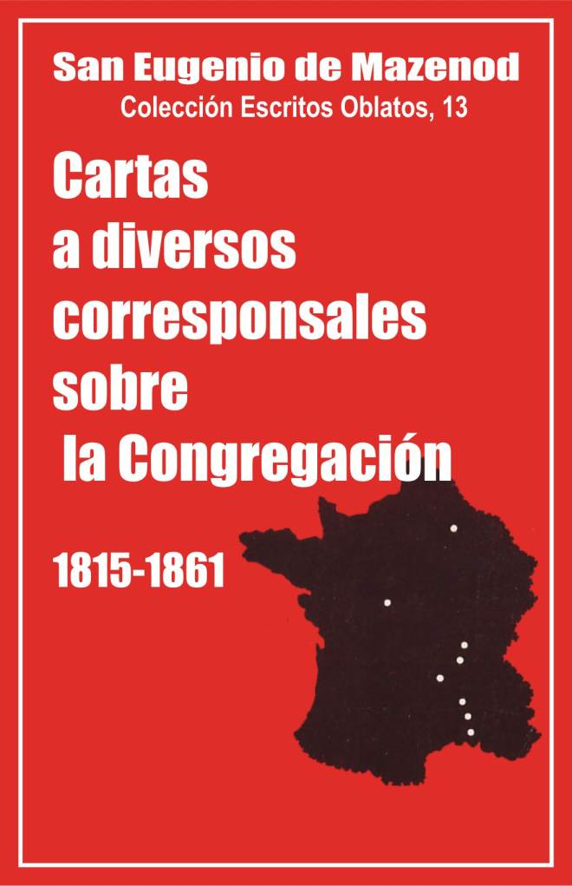

Palo Gordo
2019
Escritos Oblatos: - 01 - 02 - 03 - 04 - 05 - 06 - 07 - 08 - 09 - 10 - 11 - 12 - 13 - 14 - 15 - 16 - 17 - 18 - 19 - 20 - 21 - 22

San Eugenio de Mazenod
Colección Escritos Oblatos, 13
Traducción del francés por
Santiago Rebordinos OMI
Postulación general
Via Aurelia, 290
Roma, 1989
(Asunción 2007)
Palo Gordo
2019
1815-1818 -- 1819-1826 -- 1827–1837 -- 1838-1854 -- 1855–1861
Antes de publicar el Diario y los Escritos Espirituales de Mons. de Mazenod, conviene terminar la publicación de sus cartas relacionadas con la Congregación de los Oblatos de María Inmaculada.
Los volúmenes VI – XII de la colección Escritos Oblatos comprenden todas las cartas del Fundador a sus hijos que quedaron en Francia. Pero habló con frecuencia de ellos a su padre y a su madre, a amigos, a las autoridades civiles y, sobre todo, a los obispos de Francia. Hemos recogido, y presentamos en este volumen, 184 cartas dirigidas, entre los años 1815 – 1861, a diversos corresponsales no Oblatos [1].
En ellas se encuentra un resumen de la historia de la Congregación en Francia: su nacimiento, los problemas causados por los Párrocos de Aix, las gestiones para lograr la aprobación de los Vicarios Generales de Aix, de las autoridades gubernamentales y del Sumo Pontífice, y por último, las negociaciones tenidas con el episcopado con motivo de la fundación o del cierre de casas oblatas en diversas diócesis.
El conjunto forma igualmente un cuadro recapitulador de toda la vida de Mons. de Mazenod como fundador y superior general, con sus alegrías y sus penas, con los éxitos y fracasos de sus hijos, sobre todo con el recuerdo incesante de la naturaleza de su vocación al servicio de los obispos para evangelizar a los pobres. Este tema aparece aquí como un leitmotiv que ya no se puede olvidar.
En general, estas cartas se distinguen por un estilo cuidado y un tono de cortesía que se halla con menos frecuencia en las cartas escritas a los Oblatos, con quienes el Fundador empleaba un lenguaje más sencillo y más directo.
Como siempre, reacciona con energía y firmeza cuando cree que la Congregación es víctima de alguna injusticia. Las ocasiones se presentarán varias veces, en particular cuando el despido de los Oblatos de N.-D. de Laus en 1841-1842, o de los seminarios de Romans y de Quimper en 1857. En Romans, los Jesuitas de Lyon se habían prestado con demasiada facilidad a secundar los proyectos del Obispo para reemplazar a los Oblatos. Mons. de Mazenod se lo reprocha al Provincial, el 20 de octubre de 1857: "Esa facilidad, escribe, que ha mostrado Ud. para acoger los puntos de vista de un Obispo, que juzgaba y condenaba a una Congregación antes de haberla escuchado, le hace a Ud. realmente cómplice en esa injusticia. De no haber podido contar con Ud., tal vez el Obispo lo hubiese pensado dos veces antes de tomar una decisión tan violenta... ¿Por qué no se echó atrás Ud. ante semejante manejo? ¿No se percató de que eso era suplantar una Congregación, que sin duda no es más que un átomo comparada con su Sociedad, pero que tiene sin embargo cierto derecho a que no se perjudique seriamente su fama, que necesita para hacer en la Iglesia de Dios el bien que se le ha encargado obrar en ella? No, Reverendo Padre, no puedo excusarle... Este es mi modo de actuar. Yo juego siempre con las cartas sobre la mesa. La franqueza y el honor son mi carácter distintivo. Tengo horror a la doblez dondequiera que la encuentro, pero más aún allí donde menos debiera encontrarse. Luego, cuando he hecho lo que tenía que hacer, que venga lo que quiera. Me resigno a lo que Dios permita y ruego por aquellos que obran mal conmigo".
En 1837, el P. Pachiaudi deja la Congregación sin consultar a sus superiores y se retira a la Gran Cartuja donde es acogido sin información. Después de cierto tiempo, un Cartujo, que conocía a Mons. de Mazenod, escribe para saber si el Obispo aprueba la conducta del fugitivo y la de los que lo han acogido. El Fundador responde: Si el R. P. General me hubiese escrito como parece lo exigen las conveniencias, le habría hecho mis observaciones y habría escuchado y reflexionado seriamente sobre las suyas. Nada de eso se ha hecho, se han violado las normas canónicas, los miramientos y la delicadeza. En primer lugar, se ha obrado sin conocimiento de causa; y luego se ha persistido a pesar de las fuertes reclamaciones del Sr. Tempier. Dudo que Dios bendiga actuaciones de ese género... Todo eso es muy triste y poco edificante, y el mejor deseo que puedo expresar para su santa Orden es que se propague por otros medios… Sé callarme, pero cuando hablo digo siempre la verdad..." (carta 93).
Las últimas frases de esas cartas reflejan perfectamente uno de los rasgos del carácter de Mons. de Mazenod. Sabe a veces aguantar en silencio situaciones que no le gustan; cuando la gravedad de los casos o de los acontecimientos lo exige, habla entonces, sin miramientos para nadie, con franqueza y con fuerza.
Hay otro punto sobre el que el Fundador no ha cambiado a lo largo de su vida: el espíritu que siempre lo anima es la gloria de Dios, el celo por la salvación de las almas y el honor de su Congregación. Las páginas que siguen lo confirman.
P. Yvon Beaudoin O.M.I.
1. [Al Sr. Carlos Antonio de Mazenod, en Palermo] [2]
Fundación de los Misioneros de Provenza. Necesidad de dinero.
L. J. C.
Aix, 8 de noviembre de 1815.
... Tendría muchas ganas de escribir a Francisco [3] para que me diera dinero para una fundación que estoy haciendo en Aix para la Provenza. Es un establecimiento de Misioneros que se encargarán de recorrer los campos para llevar a los pueblos a los sentimientos de religión que han perdido. Nos establecemos en las antiguas Carmelitas, para desde allí realizar nuestras giras apostólicas. Los Diarios tuvieron la idea de dar cuenta de eso y me hacen aparecer como el jefe de ese establecimiento [4]. Lo bueno es que lo comienzo sin un céntimo. Hay que tener mucha confianza en la divina Providencia. Si sus socios ricachones de Palermo quisieran contribuir para ello, sería la obra más hermosa que habrían realizado en la vida [5]. No se tiene idea de las necesidades de los pueblos. Adiós, le abrazo de nuevo...
2. A los Señores Vicarios Generales capitulares, [en Aix] [6]
Petición de autorización para formar una comunidad de misioneros. Principales puntos del reglamento.
Los sacerdotes infrascritos, vivamente impresionados por la deplorable situación de los pueblos y aldeas de Provenza que han perdido casi totalmente la fe;
Habiendo conocido por experiencia que el endurecimiento o la indiferencia de esos pueblos vuelven insuficientes y hasta inútiles los auxilios ordinarios que la solicitud de Uds. les proporciona para su salvación;
Habiéndose convencido de que las misiones serían el único medio con el que se podría sacar de su embrutecimiento a esos pueblos extraviados;
Deseando, al mismo tiempo, responder a la vocación que los llama a consagrarse a ese penoso ministerio;
Y queriendo hacerlo de un modo tan útil para ellos como ventajoso para los pueblos que desean evangelizar;
Tienen el honor de solicitar de Uds. la autorización para reunirse en Aix, en la antigua casa de las Carmelitas adquirida por uno de ellos, para vivir allí en comunidad, bajo una regla cuyos puntos principales desean exponer.
El fin de esta Sociedad no es sólo trabajar por la salvación del prójimo, dedicándose al ministerio de la predicación; se propone también principalmente proporcionar a sus miembros los medios para practicar las virtudes religiosas, por las que sienten un atractivo tan grande que la mayoría de ellos se hubieran consagrado a observarlas de por vida en alguna Orden religiosa, de no abrigar la esperanza de encontrar en la comunidad de los Misioneros casi las mismas ventajas que en el estado religioso que desearían abrazar.
Si han preferido formar una comunidad regular de Misioneros, es porque intentan ser útiles a la diócesis, al mismo tiempo que van a trabajar en su propia santificación, conforme a su vocación.
Así pues, su vida va a quedar repartida entre la oración, la meditación de las verdades sagradas, la práctica de las virtudes religiosas, el estudio de la Sagrada Escritura, de los Santos Padres y de la teología dogmática y moral, la predicación y la dirección de la juventud.
Los Misioneros se organizarán de modo que, mientras unos dentro de las comunidades se ejerciten en adquirir las virtudes y los conocimientos propios de un buen misionero, otros recorran los campos anunciando la palabra de Dios.
Al regresar de sus tareas apostólicas, volverán a la comunidad para descansar de sus fatigas y dedicarse al ejercicio de un ministerio menos pesado y prepararse, con la meditación y el estudio, a hacer aún más fructífero su ministerio cuando sean llamados a nuevos trabajos.
Los Misioneros deben proponerse al entrar en la Sociedad perseverar en ella toda la vida.
La Sociedad se compromete con cada uno de sus miembros a seguir acogiéndolos a pesar de las enfermedades que puedan acarrear la edad o los trabajos del ministerio.
No asume compromiso alguno con los que salgan de su seno.
Cada miembro se compromete con la Sociedad a vivir en obediencia al Superior y a observar los estatutos y reglamentos.
La Sociedad está sometida a un superior elegido de por vida por los miembros que la componen, y aprobado por el Ordinario.
Los sujetos que se presenten para ser admitidos en la sociedad serán probados en un noviciado, hasta que hayan terminado sus estudios, o hayan sido juzgados aptos para la obra de las misiones.
Los Misioneros no serán incorporados definitivamente a la Sociedad hasta pasados dos años de prueba.
Los sujetos admitidos en la Sociedad no podrán ser expulsados más que a petición del superior por causa grave, con el voto de los demás Misioneros por mayoría de dos tercios.
Cuando las diócesis de entorno hayan proporcionado a la Sociedad sujetos idóneos para las misiones, el superior, a petición de los Obispos y con la autorización del Ordinario, podrá enviarlos en misión a la diócesis de donde proceden, y si es necesario agregarles algunos compañeros, aunque sean diocesanos de Aix.
La casa de la Misión estará totalmente exenta de la jurisdicción del Párroco de la parroquia; y sólo dependerá del Ordinario. A este respecto gozará de los privilegios de las antiguas casas religiosas.
La iglesia que atiendan los Misioneros estará también bajo la jurisdicción y vigilancia inmediata del Ordinario.
Este es, Señores Vicarios Generales, el bosquejo general del reglamento que los sacerdotes firmantes proponen a Uds. para su aprobación, solicitando el permiso de reunirse en comunidad.
Dado en Aix, el 25 de enero de 1816.
Eugenio de Mazenod, Tempier, Icard [7], Mie, Deblieu.
3. [Al Sr. Carlos Antonio de Mazenod, en Palermo]
Noticias sobre los Misioneros de Provenza. Éxito de las misiones. Ruego para que mande las Constituciones y Reglas, etc., de los Redentoristas.
Aix, 1 de mayo de 1816.
... Para hablarle de nosotros, sería preciso tener más tiempo del que tengo, porque tendría mucho que decirle. Creo que tendré que dejar los detalles para nuestro primer encuentro. En un abrir y cerrar de ojos hacer una fundación, ver cómo se reúnen los elementos a pesar de los obstáculos que parecían insuperables a la sabiduría humana, encontrar unos hombres dispuestos a entregarse a la obra de Dios, a pesar de las mil razones, buenas en apariencia, que deberían disuadirles de ello; estos hombres, de los que soy el mayor [8], producen frutos de salvación que han obligado a la calumnia a callarse por lo sorprendentes que han sido, y todo esto antes de que se dieran cuenta que el proyecto, apenas divulgado, era real: estos son prodigios de los que nosotros somos los testigos y los instrumentos..
Nuestro primer ensayo fue en Pignans [9]. Allí se hicieron maravillas; yo no estaba presente, pero tuve el consuelo de estar a la cabeza de la misión de Grans [10]. Nunca había visto milagros, no puedo ya decir lo mismo. Era un pueblo abandonado, absolutamente perdido. La fe estaba apagada. Sólo se conocía a Dios para blasfemar su santo nombre del modo más horrible, y eso tanto las mujeres y los niños como los hombres. Es inútil señalar que nadie cumplía con Pascua. El párroco no confesaba ni a dos hombres; hasta las mujeres y las chicas habían tomado su partido en eso; y se frecuentaba tan poco la iglesia que pronto hubiese podido ser cerrada; la mitad de la población no ponía los pies en ella desde hacía 25 años [11]. ¿Qué más le diré? Todo cuanto Vd. pueda imaginarse.
Pues bien, la misión lo cambió todo; desde la primera semana, la blasfemia fue totalmente desterrada, tanto que los del pueblo dijeron a los Salonenses que pasaban por Grans y que seguían blasfemando, que dejaran como ellos esa horrible costumbre o cambiaran de ruta si no querían ser castigados por su insolencia. Colocamos, al día siguiente de nuestra llegada, los confesionarios de los cuatro misioneros [12]; se vieron asediados desde las tres de la mañana, y se lo diré, porque es un hecho, hemos permanecido ahí hasta 28 horas seguidas. Veintiocho horas, tengo que repetirlo, para que no piense que lo he escrito por error. En cuanto a los detalles de lo que ha pasado durante la misión, es imposible pretender contarlo. El frío intenso no impedía que la iglesia estuviera llena desde las tres de la mañana. Tres horas de ejercicios no saciaban la santa avidez de esos buenos habitantes; por la tarde se apresuraban a volver del campo para conseguir asiento...
Quiero pedirle vea a los Misioneros del Redentor para rogarles me envíen sus Constituciones y Reglas, el oficio de su santo [13] Fundador, su vida y sus reliquias, si es posible, por lo menos un cuadro bastante grande para colocarlo en nuestra sala de comunidad, esperando que podamos ponerlo en nuestra iglesia. He estudiado mucho sus obras, y lo hemos elegido como uno de nuestros patronos; deseamos seguir sus huellas e imitar sus virtudes. Pida y mándeme muchos detalles sobre esos buenos Padres que son sus discípulos y ruégueles pidan a Dios por nosotros que tanto necesitamos para mantenernos firmes en medio de las dificultades y obstáculos que encontramos... Tengo una parte de sus escritos, entre otros su teología moral que me gusta mucho y que estudié especialmente cuando tenía tiempo para estudiar, porque ahora sólo puedo trabajar y bien que lo siento, pero ya que Dios lo exige, tengo que hacerme a ello.
4. Al Sr. Arquier, vicario general de Aix, párroco de Saint- Remi, Bocas del Ródano
Pesar por no poder predicar una misión en Saint-Remi en 1817. Falta de socios para responder a todas las peticiones.
L.J.C.
Aix, 25 de diciembre de 1816.
Señor,
Es muy duro para mí, que me he consagrado al ministerio de las misiones para ayudar a los buenos pastores que desean hacer volver a sus pueblos a una vida religiosa que 25 años de revolución le han hecho abandonar, el no poder responder más que con buenos deseos y promesas lejanas a las peticiones que me dirigen.
Es un tormento que se renueva a diario, pero ¡cómo hacer!, sólo somos cuatro pobres misioneros y Ud. es el párroco número veintidós que nos llama. Ambicionaría poder reunir los suficientes misioneros para combatir al infierno en todos los frentes al mismo tiempo, pero es una piadosa quimera que nunca se realizará. Si por lo menos pudiéramos hacer fuego graneado, es decir, si pudiéramos ser dos grupos, de los cuales uno descansara y el otro actuara, haríamos entonces, con la ayuda de Dios, bastante tarea.
Si Dios quiere lo lograremos, pero eso será cuando el Señor haya inspirado a algunos sujetos el celo y el desinterés necesarios para cumplir dignamente nuestro santo ministerio e infundido a los superiores eclesiásticos el suficiente valor para permitirles seguir su vocación.
Mientras tanto, estoy en la imposibilidad de satisfacer a la cuarta parte de los pedidos que me hacen y ésta es, tal vez, entre todas mis penas y contrariedades, la que más siento.
No desespero, sin embargo, de poder acudir algún día a secundar su celo y tomar parte en su solicitud pastoral, pero no podrá ser este año que está todo él ocupado. Pondré también en la lista la parroquia de Mouriès cuando el párroco me haya dado a conocer sus intenciones.
Tengo el honor de ser, con la consideración más distinguida, su muy humilde y obediente servidor,
Eugenio de Mazenod, sacerdote misionero.
5. Al Señor Duclaux, superior general de San Sulpicio, rue Pot de fer, n. 17, en París
Numerosas ocupaciones. Consuelos en el ministerio. Oposición de algunos sacerdotes.
L.J.C.
Aix, 1 de enero de 1817.
¡Oh! qué a propósito llega este primer día del año, mi muy amado padre, para sacarme de apuros; no sabía cómo hacer para escribirle, tan avergonzado como estoy por haber dejado pasar tanto tiempo sin hacerlo, y lo curioso es que lo he ido dejando de un día para otro solo por cumplir mejor este deber; deseaba escribirle ampliamente, entrar en detalles que debían interesarle mucho, y no encontrando nunca (es la pura verdad) la hora que necesitaba para eso, lo dejaba siempre para mañana sin tampoco lograrlo ese día. Hoy cambio de sistema, tomo la pluma, aunque sólo sea por cinco minutos, incluso para retomarla tantas veces cuantas me hagan dejarla. Ayer sólo pude poner la fecha, siempre es así, verá Ud. al menos que el ajetreo de este día no ha impedido pensar en ese buen padre que nunca olvidaré y que amaré siempre con todo mi corazón.
No sé por donde empezar para ponerle un poco al corriente de las maravillas que el buen Dios realiza aquí por medio de nuestro ministerio. Vemos, de verdad, renovarse ante nuestros ojos los prodigios de los primeros tiempos del Cristianismo, y Dios nos demuestra en cada instante que sólo somos la trompeta que utiliza para despertar y resucitar las almas, ya que su actuación es tan sensible, tan directa, que diría hasta milagrosa.
21 de abril.
Una vez más me veo obligado a omitir los detalles, que me agradaría transmitirle personalmente sobre las obras que Dios ha querido confiarme, pero necesitaría que los días tuvieran para mí más de 24 horas; en este momento lo único que puedo hacer es pedirle a mi buen padre que se acuerde de mí y encomendarme insistentemente a sus oraciones. Esta carta le será entregada por uno de nuestros Congregantes que va a París por algunos asuntos; es un militar, buen cristiano, que le recomiendo. De haber sido menos precipitada su salida, creo que yo hubiera emprendido el viaje con él, porque creo que me veré obligado a hacerlo; estoy asustado con este pensamiento, ya que me es muy difícil despegarme de aquí, donde mi presencia parece ser todavía necesaria, porque le costará creer que, no teniendo en vista más que el bien, y diré más, haciendo realmente el bien con la gracia de Dios, tengo sin embargo que luchar contra una persecución continua por parte de algunos sacerdotes, cuyos esfuerzos resultan, no obstante, impotentes gracias a la posición en la que el buen Dios ha querido colocarme; hago como si ignorase sus sordos manejos, y hablando con propiedad, sólo me defiendo con mi buen comportamiento, y siguiendo adelante en todo cuanto Dios quiere que haga, a pesar de ellos. Me parece que los santos en mi lugar hubieran obrado igual, y toda mi ambición está en tratar de imitarlos; hago sus obras esperando adquirir una pequeña parte de sus virtudes. Nos ha parecido reconocer que el Señor nos protege, por las bendiciones abundantísimas que prodiga sobre cuanto emprendemos para su gloria. Eso nos compensa con creces de todas las penas que esos falsos profetas desearían darnos, como quien no quiere la cosa.
Siento en este momento, por el placer que me da el comunicarme con Ud., qué digno de lástima soy por no poder hacerlo con la frecuencia y la amplitud que desearía; pero, para darle una idea de mi vida, figúrese que, habiéndome acostado a media noche, como de costumbre, y levantado a las cinco, en este momento en que le escribo no he terminado mi oración, que me han hecho interrumpir esta mañana, y ni siquiera he rezado aún Maitines, siendo ya cerca de las nueve. Si no recordara continuamente este paisaje de San Pablo nos autem servos vestros per Jesum [2 Co 4,5], no aguantaría esto, pero ese pensamiento lo suaviza todo. Sin embargo siento un gran perjuicio en no poder ocuparme bastante de mí mismo. Rece, pues, para que Dios me proporcione los medios para pensar más en mi pobre alma.
Mi embajador va a salir, termino estrechándolo contra mi corazón que es suyo en Nuestro Señor.
Eugenio de Mazenod, sacerdote misionero.
6. Al Señor abate de Forbin-Janson, sacerdote de las Misiones de Francia, rue Notre-Dame des Champs, n. 8, en París
Numerosos trabajos. Carlos escribe demasiado poco y no se ocupa de los asuntos de Eugenio que tendrá que ir a París.
L.J.C.
Aix, 16 de enero de 1817.
Aunque no escriba más que dos líneas, mi muy querido y buen hermano, lo haré para no dejar establecer una prescripción poco conveniente, que sería inexcusable por ambas partes. Comienzo yo, aunque ciertamente no soy el más sobrado de tiempo; pero comiendo deprisa, lo lograré; desde el regreso de nuestra última misión, no he logrado todavía comer una sola vez con la comunidad. Y hoy, el instante que me robo es para ti y para Collegno. Dejo sobre mi despacho una carta para mi padre, comenzada el 3 de este mes, otra para el Sr. Duclaux, comenzada el 1° y otras que probablemente no terminaré nunca. Sé, mi muy querido amigo, que no has muerto, porque los periódicos nos tienen al corriente de tu vida y milagros, pero tú ignoras si vivo yo, miserable misionero oscuro, que predica a gente que no sabe escribir.
21 de enero. – Antes de acostarme y mientras todos duermen en casa, antes incluso de rezar vísperas, para las que apenas me queda tiempo, te diré una palabrita, mi muy querido amigo. Tu silencio y tu laconismo, cuando lo rompes, me afligen. Mi más dulce placer era recibir tus cartas. Pronto se verán reducidas al precepto pascual, una vez al año. Si tus misiones fueran como las nuestras, es decir, si pasaras en el confesionario el tiempo que no estás en el púlpito, lo comprendería. Pero, según me dice Hilario [14], no es del todo así. ¿Por qué, pues, no me escribes en los intervalos? Pongo esa privación en el número de mis penitencias. Yo no tengo tiempo para nada. Mi trabajo es tan grande, aparte de la predicación, en la ciudad como en las misiones. A veces estaría tentado a pensar que abusan un tanto de mi buena voluntad. Pero no consiento en ese pensamiento que es contrario a un sentimiento profundamente grabado en mi corazón: y es que debemos ser servidores de todo el mundo. Me he reafirmado en este propósito en mi meditación de hoy. Es una obediencia penosa para la naturaleza, pero si sabemos hacerla, será muy meritoria. Lo que más me cuesta en este momento, es que este servicio obligado y habitual me impide ir a París, donde me llamarían los asuntos de mi familia y de nuestra casa; pero ¿cómo abandonar a tantos neófitos, pobres jóvenes de 20 a 25 años, que acuden a mí diariamente para que los reconcilie con Dios y los ponga en el buen camino? Las horas que hay que pasar necesariamente con ellos, atrasan todo mi trabajo y me agotan. Habrías podido ahorrarme la mitad de mis preocupaciones, si estando en esas esferas, hubieras querido hacer algo por mí. Pero nunca has iniciado gestión alguna. Por eso no has conseguido nada. Sin embargo en los comienzos me habías dicho que todos te atendían...
Nosotros seguimos siendo cinco en total, reventando de trabajo; sobre todo yo, para quien la estadía en la ciudad no constituye un descanso, ni mucho menos. Cuando muera, dirán: ¡qué lástima! ¡se ha matado!, mientras que los asesinos son aquellos que nos niegan una ayuda indispensable.
Adiós, querido amigo, pide a Dios para que tenga el tiempo de ganar el cielo antes de morir.
7. [Al Señor Chabert, párroco de Fuveau]
Alegría al enterarse que el fervor de los feligreses se mantiene. Proyecto de acceder a la invitación de los fieles y hacer pronto una visita.
L.J.C.
Aix, 23 de mayo de 1817.
Iba a salir para Mouriès [15], mi muy querido Señor, cuando recibí su amable carta del 25 de abril, y ha sido para mí un gran consuelo todo cuanto me dice de edificante sobre el fervor de sus buenos feligreses. Bendigo al Señor que le ha dado fuerzas para resistir un trabajo tan exorbitante como el que Ud. ha tenido [16], y me congratulé al ver la tierra que hemos roturado en manos tan hábiles y tan fieles como las suyas. Esta recompensa la merecía su celo por la salvación de sus feligreses tanto más cuanto que era la única que ambicionábamos: que Dios le conceda la gracia de gozar por mucho tiempo de esa alegría porque sólo al Buen Pastor le pertenece sentir y apreciar.
Haré todo cuanto dependa de mí para corresponder a su invitación [17], toda clase de razones me atraen hacia Ud. y hacia su pueblo; no he olvidado sus bondades y el aprecio que parecía dar a la abnegación con que trabajábamos por su salvación, pero la dificultad está en poder arrancarme de aquí...
Adiós, mi muy querido párroco, no me olvide en sus oraciones y crea en el respeto con el que tengo el honor de ser su muy humilde servidor,
Eugenio de Mazenod, sacerdote misionero.
8. Señora Roux, de soltera Bonnecorse, calle de las Dominicas, n. 34, en Marsella.
Agradecimiento por un donativo a favor de un subdiácono ingresado en la Misión de Provenza. Intercambio de oraciones.
L.J.C.
Aix, 15 de junio de 1817.
Antes de darle las gracias, Señora, tengo que bendecir a la Divina Providencia que acaba de demostrarme una vez más que no hay que cansarse de confiar en ella. Veo ahora que fue el Señor el que me inspiró la idea de no rechazar a ese joven subdiácono que, tan rico en virtudes como pobre en bienes de este mundo, se me presentó para servir a Dios en la obra de las misiones [18]. Lo recibí con los brazos abiertos sin tener en cuenta el estado de penuria de nuestra casa; pensaba compartir con él mi ración, contento de poder proporcionar, con algunos sacrificios, un ministro fiel a la Iglesia y un apóstol a los fieles abandonados; y he aquí que el buen Dios la encarga a Ud. de procurarme lo que será suficiente para mantenerlo este año. ¿No es esto admirable? ¡Qué feliz es Ud. por haber contribuido a esa buena obra! Su recompensa y la de los caritativos parientes y amigos que la han secundado tan amablemente será proporcionada, no al valor de la suma, ni según la estima de las obras ordinarias de caridad corporales, sino conforme al valor de las almas a cuya salvación se dirigen únicamente los esfuerzos de nuestros misioneros.
Ahora le doy las gracias por su diligencia y delicadeza en procurarnos alguna ayuda. Dios se encargará de devolverle centuplicados esos 425 frs., que han llegado tan a punto en el momento menos esperado, pero le confieso que, todavía con más diligencia, en nuestras pobres oraciones pedimos por Ud. y los suyos, que el Señor la enriquezca con muchas virtudes y bendiciones espirituales. El día del Sagrado Corazón ofrecí el santo Sacrificio por esa intención; así ve que no se equivocó al contar ese día con un recuerdo especial. Por lo demás, ya sabe que en adelante Ud. y toda su familia participan en todas las oraciones, ayunos, sacrificios y buenas obras realizadas por todos los miembros de nuestra pequeña Sociedad; a Ud. le tocará igualmente rezar por nosotros, y añadiría con gusto, por mí en particular que lo necesito más que nadie.
Acepte, Señora, la seguridad del respeto con el cual tengo el honor de ser su muy humilde servidor,
Eugenio de Mazenod, sacerdote misionero.
Le ruego salude a toda su respetable familia, y le agradezca en nombre de nuestra obra lo que Dios le ha inspirado hacer por ella.
9. Al Señor Lainé, ministro del interior, en París
El P. de Mazenod solicita la autorización gubernamental de los Misioneros de Provenza.
París, 31 de julio de 1817.
Señor,
Las atenciones que Su Excelencia tuvo conmigo en la audiencia que me concedió el otro día me animan a abrirle por completo mi alma sobre el asunto que me había llevado junto a Ud.
Considero el ministerio oscuro que he abrazado como de la mayor importancia en las presentes circunstancias, no sólo para el bien de la religión sino para el servicio del Rey y la tranquilidad pública; y yo tuve que estar bien persuadido de esa idea puesto que le sacrifico con gusto todas las ventajas que me ofrecían las otras carreras, tal vez seductoras, que se presentaban ante mí [19].
Los testimonios del General de división, del Inspector de los guardias nacionales y del Sub-prefecto dan fe de lo que digo [20].
Pero no debo disimular a V. E. que para hacer el bien inmenso que nos garantizan los primeros éxitos brindados por la Providencia, necesito tener no sólo la confianza de los Superiores eclesiásticos, como me la han concedido hasta el presente sin restricción, sino también el reconocimiento del Gobierno para el cual creo trabajar tan eficazmente como para la Iglesia.
Todos saben que yo he venido a París para lograr la aprobación de nuestra fundación que no es más que la reunión de algunos sacerdotes que se dedican principalmente al servicio de los pobladores del campo, a los que la falta de pastores hace caer insensiblemente en el embrutecimiento, y a la instrucción de los jóvenes de la ciudad, en lo relacionado únicamente con las costumbres y la religión.
Si vuelvo a mi diócesis sin llevar el menor testimonio de la aprobación del Gobierno, habré perdido la mitad de mi fuerza, y hasta corro el peligro de que en los sacerdotes que se han reunido conmigo cunda el desánimo, vuelvan a sus casas, e incluso algunos salgan del reino como se habían propuesto antes de que yo los reuniera conmigo; y entonces habrá que renunciar a todas las ventajas que la religión, la sociedad y el Estado podrían esperar de su celo.
Su Excelencia cree que hace falta una ley para que nuestra pequeña Sociedad esté capacitada para recibir el donativo que yo tengo el propósito de hacerle y los legados que podrían serle dejados por las personas convencidas ya de su utilidad por todo el bien que le han visto hacer con sus propios ojos.
Respeto demasiado las ideas de V. E., para replicarle sobre este tema, pero por lo menos, a lo que limito mi petición en este momento, lo que, casi me atrevo a decirlo, reclamo como una recompensa por mi dedicación, es que el Rey pueda mediante una ordenanza, provisionalmente y hasta que una nueva ley fije definitivamente el modo de ser de la fundación, autorizar al sacerdote de Mazenod a reunirse con algunos sacerdotes de buena voluntad en la antigua casa de las Carmelitas de Aix para dedicarse a la formación religiosa de la juventud y desde allí trasladarse a las parroquias de las ciudades y sobre todo de los pueblos que soliciten la ayuda de su ministerio.
Si siento no ser más conocido por V.E., es sobre todo en esta circunstancia, en la que parece que necesitaría inspirar alguna confianza a su religión para que tuviera a bien valorar justamente las razones que me tomo la libertad de exponerle; pero independientemente de la opinión que se puede tener de mí, V. E. tiene demasiado celo por el bien, demasiada sagacidad para no apreciar los felices resultados que tendrá ese testimonio de aprobación, que tal vez habría sido menos necesario si no se hubiese sabido que yo lo había solicitado, pero que se hace indispensable tras las gestiones que he hecho para obtenerlo.
Abrigo la esperanza, Señor, de no haberme dirigido en vano a Vuestra Excelencia con esta confianza, con esta apertura de corazón que le permite leer en mi pensamiento, y de que accederá con gusto a la petición que sólo le hago en vistas del bien que Vuestra Excelencia favorece siempre y al que yo desearía contribuir con todas mis fuerzas.
Acepte, Señor, el homenaje del profundo respeto con el cual tengo el honor de ser, de Su Excelencia, el muy humilde y obediente servidor, el abate Eugenio de Mazenod.
10. A la Señora de Mazenod, calle Papassaudy, en Aix, B. de Ródano [21]
La vida que Eugenio lleva en París está lejos de ajustarse a su vocación, pero rehusará cualquier cargo que pueda alejarlo de Aix.
L.J.C.
París, 21 de agosto de 1817.
No me ha dicho, mi querida mamá, cuándo pensaba regresar de San Lorenzo. Pienso, sin embargo, que sería tardar demasiado esperar a su regreso para escribirle. Me arriesgo, pues, a escribirle esta carta, que tardará quizás más de un mes en llegarle, pero que le agradará más que las noticias indirectas que reciba de mí.
No tiene motivo para preocuparse por mí. Llevo una vida muy apta para engordar mi cuerpo y darle descanso de sus fatigas, mas también mi pobre alma se resiente de ello. Pero usted se ha puesto en plan de no preocuparse por esto último; vale la pena, sin embargo, pensar en ello. Cuando vuelva a Aix, ya no sabré ni predicar ni confesar, pues no hago nada de eso aquí. De la mañana a la tarde no me ocupo más que de hacer informes, visitas, solicitudes, etc. Dicho sea entre nosotros, no he caído mal, pero constantemente estoy rechazando lo que pudiera alejarme de Aix. En eso, como dice la gente, he sacrificado mi fortuna. No sé si sabrán agradecerme en mi región el que haya preferido hacer el bien silenciosamente con mis paisanos, en lugar de ocupar puestos distinguidos que me han ofrecido y que me facilitarían todo [22]. ¡Tanto peor para quienes no sepan apreciar mi abnegación! Con tal que otros aprovechen, me doy por satisfecho y me alegraré...
11. [A su padre y a sus tíos, en Palermo] [23].
Volver cuanto antes a Francia: Fortunato ha sido nombrado obispo de Marsella. Será el protector de los Misioneros de Provenza.
L.J.C.
[París] 28 de agosto de 1817.
Reabro la carta, mis muy queridos amigos, pues no tuve tiempo para enviarla ayer [24]. Es para decirles, pero en el más estricto secreto, que el Rey acaba de nombrar a mi tío Carlos Fortunato para el obispado de Marsella [25]. Estoy todavía conmovido de agradecimiento a Dios. Sin que mi Tío haya siquiera pensado en desearlo, el Señor le da el obispado más apetecido de toda Francia, sea por su posición, sea por sus recursos, sea por el espíritu cabal de sus habitantes, sea por el clero excelente que tiene...
¡Qué inmenso bien vamos a hacer! Provenza va a quedar regenerada. Un solo espíritu unirá a todos los Obispos de la Provincia; los conozco a todos. La obra que Dios me ha confiado se consolida de modo sorprendente. Preparo para el Obispo de Marsella un grupo selecto. Veremos de nuevo días hermosos para la Iglesia. Pero basta...
6 de septiembre.
Tal vez hayan salido, mis queridos amigos [26]. Si así fuera, me alegraría, porque se me está haciendo tarde el verlos poner el pie en Francia. No importa ahora por dónde vengan. Quisiera, sin embargo, que evitaran desembarcar en Marsella; preferiría que entrasen por Tolón o por Niza.
Desde mi última carta, he pulsado la opinión de las personas más capacitadas para decidir y hasta para juzgar de las obligaciones que hemos contraído con la Iglesia. Hombres como el santo Sr. Duclaux y otros, todos piensan que mi Tío está obligado en conciencia a aceptar el obispado de Marsella. El Rey, por otra parte, no quiere aceptar las negativas, hasta se enojaría porque, dice, cuando un militar es llamado a servir a la patria, el honor le obliga a correr cuanto antes, asimismo la religión prescribe a un eclesiástico cooperar con toda decisión al bien en el puesto que le ha sido asignado. Pienso que mi Tío está convencido de esa doctrina y que considerará como llamada de la Providencia un nombramiento en el cual ni él ni los suyos han tenido parte en absoluto, y en el cual ni siquiera se pensaba, que está de tal suerte preparado por la Providencia, por el Dueño de los corazones y de los acontecimientos, que contribuye precisamente a consolidar, o por decir mejor, a salvar la obra a la que Dios vincula la salvación de Francia [27].
Pero si pudiera creer que él dudara un instante, me echaría a sus pies y le rogaría, por lo más sagrado, que rechazara lejos de sí todo pensamiento de pusilanimidad, bajo cualquier apariencia con que se presente. ¡Cuántas razones convincentes! La primera de todas es que, si alguna vez la voluntad de Dios se ha manifestado en acontecimientos humanos, este es el caso. Mi Tío vivía, olvidado de todos, en el fondo de Sicilia, tan lejos de pensar en el episcopado como su isla lo está de nuestra capital. Su sobrino, el único que hubiese podido hacer que se pensara en él, estaba retenido por los deberes del ministerio que la Providencia le ha confiado, en los campos de Provenza que evangelizaba con sus respetables cooperadores; y aunque agotándose en esos penosos trabajos (hasta he vomitado sangre), decía: los hombres me censuran sin duda por olvidar a mi familia para quedarme en medio de estos pobres, pero sé que ante todo tengo que cumplir el encargo que el Padre de familia impone a sus servidores; mi presencia es necesaria aquí para impedir la ruina de una obra naciente contra la que el infierno suscita toda clase de enemigos; aquí me quedaré, y Dios, que ve la pureza de mis intenciones y sabe lo que necesita cada uno, proveerá a todo.
¿Qué ha ocurrido? En el intervalo, las gestiones, siempre débiles cuando se hacen desde lejos, que había hecho para mi padre, no logran nada. El Rey nombra para las sedes de Francia; mi Tío no está incluido en la lista. Todo está perdido para nosotros. De ahí, reproches por no haber actuado conforme a las normas de la prudencia humana, etc. Pero Dios, siempre justo, que no había olvidado que yo le había sacrificado todo solo por la gloria de su nombre, y lleno de confianza en Él, suscita un acontecimiento que me obliga a ir a París para defender su obra atacada por la malevolencia. Me veo obligado, para hacer valer los derechos de la piedad y de la justicia, a presentarme en primer lugar al Ministro, luego ante un Obispo a quien ni yo conocía ni él tampoco a mí [Mons. de Latil]; se habla de mi Tío, dejo en su mesa una cuartilla de papel que contiene su hoja de servicios; al día siguiente es nombrado obispo de Marsella. Es decir, que el Señor, protector declarado de nuestra gran obra de formación y de conversión de los pobres aldeanos, en el momento en que busco un apoyo en la tierra, elige Él mismo el instrumento más adecuado para sostenerla precisamente en la provincia donde va a ejercerse nuestro sublime ministerio, pues no necesito subrayarle lo que significará para esa obra que el Tío de su jefe sea obispo de una de las principales diócesis en la que ella ejerce su saludable influencia. Por poco que se examine la acción de la Providencia, ¿cuántas reflexiones podrían hacerse sobre este tema? Sólo me permito señalar una que prueba bien que Dios conduce todo con sabiduría. Si, olvidando los intereses de su gloria, yo hubiese salido de Provenza para venir a París a solicitar un obispado para mi Tío, habría traicionado a mi conciencia. Tal vez lo hubiera conseguido, pero sin duda alguna, mi Tío no habría sido nombrado para Marsella y habríamos tenido que reprocharnos haber actuado humanamente en una materia en la que todo debe ser sobrenatural. Gracias a Dios, he obrado como debía hacerlo un buen sacerdote: quaerite primum regnum Dei. He tenido presente sólo a Dios, y Dios casi hace un milagro a favor mío. Pues note bien, mi querido Tío, que no tengo en cuenta el honor que pueda significarle a Ud., etc.; en absoluto, y esto es lo que da una fuerza invencible a mi razonamiento. Sólo tengo en cuenta el bien de la Iglesia, la gloria de Dios y la salvación de las almas. Sólo le veo a Ud. como elegido para contribuir a esas grandes cosas, y por consiguiente, como obligado, y obligado so pena de pecado, sí, de pecado (lo digo seriamente, y paso por buen teólogo) a prestarse, a someterse, a sacrificarse. Una negativa, hasta un simple retraso iría enojosamente contra la marcha y los designios de la Providencia. Produciría el peor de los males y ni siquiera lograría Ud. sus puntos de vista, porque el Rey considera eso como un atentado, una ofensa hecha a su solicitud por el bien de la Iglesia, y no quiere oír hablar de eso. Ud. se situaría, pues, en plena rebeldía contra su Soberano, entristecería a toda la gente de bien y hasta contribuiría a un desorden considerable, que Ud. ciertamente desea impedir con todas sus fuerzas, pues me son bien conocidos sus principios.
Ahora, ¿cuáles son las objeciones que Ud. podría alegar? No las hay generales que sean admisibles. Ud. no es más sabio que la Iglesia... ¿Cuáles serían las objeciones personales y particulares que podría Ud. estar tentado de hacer? ¿Sería su edad? La mitad de los nombrados tiene la misma edad que Ud.; hay varios de más edad. Por otra parte su edad es conocida, y lejos de ser un obstáculo, ha parecido un título más. ¿Sus achaques? Será también un mérito más. Su diócesis no es extensa, la visita no será difícil; sólo abarca, según la nueva circunscripción, la ciudad y los alrededores de Marsella. Yo estaré con Ud. y también otros, tan celosos como puedo serlo yo; y si posteriormente sus achaques aumentan, no sería difícil darle un coadjutor, y la elección recaería probablemente sobre algún conocido suyo. Y aquí es donde tengo que repetirle que Marsella es, entre todas las diócesis de Francia, la más favorecida por Dios. La población es lo contrario de lo que era al comienzo de la revolución.
Todos, tanto los ricos como los pobres, desean ardientemente tener un obispo. Ud. será acogido como un ángel de Dios. Todas las autoridades son buenas y de entre nuestros amigos. Villeneuve es el prefecto, Montgrand el alcalde, Panisse comandante de la Guardia nacional; es amigo mío, así como el Comandante de la División, el barón de Damas que comulga cada ocho días. El clero es excelente; los párrocos principales son alumnos del Sagrado Corazón, llenos de celo y de buena voluntad; serán todos cera blanda entre sus manos. El seminario tiene el mismo espíritu; conozco a todos esos Señores. Debo añadir que tendrá en mi comunidad a verdaderos Oblatos, dispuestos a todo y que regenerarán sus pueblos. En una palabra, lo repetiré mil veces, no hay en Francia una diócesis que ofrezca menos dificultades ni más consuelos y esperanzas. Tal vez desee Ud. decirnos que es indigno de una dignidad tan elevada. Está bien que Ud. lo piense, pero o hay que quemar los libros o Ud. no debe ser juez en este asunto.
A todas las razones irrefutables que he alegado, podría añadir muchas más, pero necesitaría demasiado espacio para desarrollarlas. Hay una sobre todo que me interesa mucho, pues percibo su gran importancia, y por sí sola sería capaz de decidirle a Ud., si la conociera bien, y es que su aceptación es necesaria para el futuro de nuestra obra. Y si yo entiendo bien por dónde va la Providencia, Dios le había reservado Marsella en sus designios de protección especial para nosotros. ¡Ah, era digna de las miradas del Señor esta comunidad fervorosa que reproduce en nuestros días todas las virtudes de los más hermosos tiempos del cristianismo! ¡Ay de Ud. si, desconociendo su vocación, rechaza este noble protectorado del que depende la salvación de tantas almas...!
Antes de terminar, debería hacerle algunos reproches por haber perdido totalmente la costumbre de escribirme. Creo que hace seis meses que no recibo noticias suyas. No comprendo verdaderamente qué quiere decir eso. Si faltan barcos, ¿teme Ud. escribirme por correo? ¿Por qué dejarme con esa pena? Ya es suficiente estar separado de Ud. desde hace casi veinte años. Apenas vamos a reconocernos, cuando nos veamos; conservemos por lo menos algún medio para reencontrarnos. Lo digo sin pretender emitir la menor queja, pero es cierto que podría señalar exactamente la época en que nuestras relaciones dejaron de ser lo que habían sido hasta entonces [28]. No veo ya la confianza; la reserva ha ocupado su lugar, y tal vez también el afecto ha debido de ceder el sitio a no sé qué otro sentimiento más frío. Es cierto que por mi parte, cansado a veces de una resistencia que me parecía poco razonable, me he expresado con vivacidad. Pero, ¿desde cuándo la vivacidad es un crimen entre la gente sensible? Vengan cuanto antes para arreglar todo esto...
12. [Al Sr. sacerdote Fortunato de Mazenod, en Palermo]
Fortunato es nombrado obispo de Marsella. Este nombramiento es un acontecimiento providencial para los Misioneros de Provenza.
[Aix], 16 de septiembre de 1817.
Todos los periódicos han dado a conocer a toda Francia y a Europa lo que Uds. tal vez ignoran aún en su isla, fuera de este mundo.
El Rey le ha nombrado a Ud. obispo de Marsella, y este nombramiento ha sido aprobado por todos. Se lo he anunciado por mil cartas enviadas por todos los medios y le escribo esta sin pretender repetir lo que he dicho en las anteriores. Sólo Dios es el autor de esta elección; los hombres solo se han mezclado en ella en cuanto era preciso para obedecer y seguir la dirección señalada por la divina Providencia. Ella le ha elegido para Marsella que es la sede, a mi parecer, más apreciada de Francia, porque es allí donde podrá secundar y proteger todo el bien que mi fervorosa comunidad no ha dejado de hacer desde que existe. Ese apoyo le era necesario, y Dios, en quien ella ha puesto siempre y únicamente sus esperanzas, se lo proporciona. Ud. ve que miro las cosas con los ojos de la fe; esto es únicamente lo que tengo en cuenta cuando creo deber mío decirle, apoyándome en la opinión de cuantos tenemos aquí de más recomendables, que está obligado en conciencia a responder a la confianza del Rey y dedicarse con una abnegación total al servicio de la Iglesia en el puesto que le designan... Para mí y para mis obras, que son la salvación de la juventud y de las pobres poblaciones rurales, es cuanto podía pedir a Dios.
Venga en seguida y por el camino más corto. Adiós.
P. D. Tenga ánimo, yo seré otro usted.
13. [Al Señor Párroco de Salernes]
Pesar por no poder dar una misión en su parroquia este año.
Aix, 15 de junio de 1818.
¡Por qué no tendré a mi disposición un ejército de buenos obreros evangélicos! Poco tardaría Ud. en tener a su lado cuantos le fueran necesarios. Pero ¡ay! somos tan pocos. La necesidad que Ud. sufre se hace sentir en toda la diócesis. Hace tres años que empleamos nuestros débiles medios para ir en ayuda a diversos pastores, y el Señor se ha complacido en colmar de bendiciones a los pueblos que hemos evangelizado. Pero ¿qué son 4 ó 5 misioneros para una diócesis tan extensa? Me sangra el corazón cuando me veo obligado a dejar para más tarde una obra tan excelente de la que depende la salvación de tantas almas. No sabría expresárselo; es para mí un verdadero tormento que se renueva a cada petición que me llega... Con verdadera aflicción me veo obligado a responderle que nos es imposible atenderle a Ud. este año. Mientras tanto, pidamos al Señor que conoce las necesidades de su pueblo que nos proporcione los medios para proveer a ellas.
Los fondos que tiene me parecen suficientes, porque no percibimos ninguna retribución personal y seguimos a la letra esta palabra del Señor: gratis accepistis, gratis date [Mt. 10, 8]. Basta que compensen a los misioneros los gastos de viaje y les den la hospitalidad en el lugar de la misión. Es la norma de nuestra pequeña sociedad.
14. [Al Señor Párroco de Barjols]
Los misioneros irán a predicar una misión a Barjols, dadas las necesidades de la parroquia.
Aix, 20 de agosto de 1818.
Más de cincuenta párrocos piden con insistencia una misión. Para guardar cierta equidad en la elección, me pareció que debía tener en cuenta la fecha de las peticiones. Me inclinaría, sin embargo, a darle a Ud. la preferencia. Me parece que es deber nuestro acudir allí donde el peligro es más urgente. Nos han pedido ir a Marsella; allí podríamos presagiar algunos consuelos, mientras que en Barjols sólo podemos esperar contradicciones y sufrimientos; pero por lo menos tendremos la dicha de acudir en ayuda de un buen pastor para feligreses descarriados. Aunque no sacáramos de nuestra misión más ventaja que la de haber combatido al infierno, con y bajo la dirección de un veterano como Ud., tendríamos que felicitarnos de haberla emprendido.
Los gastos a realizar se limitan a la alimentación frugal de los misioneros; no recibimos emolumentos por las fatigas y un trabajo que sólo puede recompensar el Señor.
15. [A la Señora de Servan, en Saint-Remy]
Agradecimiento por un importante donativo hecho a los Misioneros de Provenza
Aix, 20 de agosto de 1818.
Cuando el Sr. sacerdote Chausse tuvo la bondad de entregarme la suma de quinientos francos que una piadosa y caritativa señora de Saint-Remy le había dado para la misión, no me ha sido difícil adivinar que esa señora no podía ser sino Ud., cuyo celo por la propagación de la fe y la conversión de los pecadores me es demasiado conocido para que pueda equivocarme. Así que, Señora, el secreto con que su modestia quería rodearse no ha sido traicionado; más bien ha sido descubierto y me permitirá Ud. utilice este conocimiento para testimoniarle todo mi agradecimiento en nombre de la santa obra de la que el Señor me ha encargado, a pesar de mi profunda indignidad.
Al contribuir, como se propone hacerlo, a la formación y manutención de los miembros que se dedican a la obra de las misiones, hace Ud. una acción más meritoria de lo que puede pensar, porque esa acción temporal tiene relación directa con las ayudas espirituales que son administradas a las almas más abandonadas que sin eso quedarían en sus pecados y probablemente perecerían miserablemente.
Se dice en un paso de la Sagrada Escritura que el que recibe al profeta, como profeta, recibirá la recompensa del profeta [Mt. 10, 41]; siempre he pensado que esa consoladora palabra debía aplicarse con mayor razón a los que procuran a los ministros los medios para ejercer su ministerio. Recibirán la recompensa del ministro; cuanto más sublime es el ministerio, de mayor calidad son los resultados, y cuanto más penosos son los trabajos, mayor será también la recompensa, no sólo para el ministro que realiza las funciones con celo, sino también para aquel que le ha posibilitado el cumplirla.
Ve, Señora, que no pretendemos presentarle nuestro agradecimiento con simples cumplidos ni con palabras, sería reconocer muy poco cristianamente beneficios que emanan de una fuente demasiado pura para ser pagados de esa forma. Dios es la garantía de nuestra deuda. Su infinita bondad se encarga de pagarla al céntuplo. He aquí, sin embargo, cómo intentamos contribuir, aunque pobremente, por nuestra parte: rezando varias veces al día, con todo nuestro corazón, por los bienhechores de esta santa obra apostólica; haciendo rezar en las misiones por esa misma intención a los justos afianzados y a los pecadores convertidos; y por último, ofreciendo con frecuencia el Santo Sacrificio por ellos y concediéndoles plena y entera participación en todas las buenas obras, oraciones, penitencias, etc., realizadas en las misiones o fuera de las misiones por todos los miembros de nuestra Sociedad. Es sin duda poco, pero cuando se da cuanto se tiene, no se puede dar más. Después de haberle manifestado, con toda sencillez, todo el bien que le deseamos, me atrevo también a pedirle una parte en sus oraciones para mí y para mi pequeña comunidad que, gracias a Dios, marcha mejor ante el Señor que su pobre superior que solo es un servidor muy cobarde e infiel. Reciba…
16. [Al Sr. Harbad, vicario general de Digne]
Proyecto de fundación en N.-D. de Laus
Aix, 23 de agosto de 1818.
Señor,
Mi único deseo es hacer un poco de bien; así que si piensa que el proyecto que ha concebido [29], puede procurar alguna gloria a Dios y contribuir a la salvación de las almas, estoy plenamente dispuesto a prestarme para cualquier arreglo que pueda conciliarse con mis compromisos en esta diócesis y los deberes de mi cargo en nuestra pequeña Sociedad. En esta clase de asuntos se entiende uno mal por carta. Estaba indeciso sobre si acompañar a nuestro diácono [30] a la ordenación, su carta termina con mi incertidumbre; iré con él a Digne, donde tendré el honor de verle a Ud. y hablarle de ese asunto. Combinaremos nuestra marcha; tendré así el doble gusto de renovar el conocimiento de Ud. [31], y de mostrarle mi buena voluntad para secundar su celo de veras incansable.
17. A Mons. de Mazenod nombrado para el obispado de
Marsella, casa de la Misión, plaza de las Carmelitas, en Aix, Bocas del Ródano. Relato del viaje de Aix a San Lorenzo. Petición de oraciones. Saludos.
L. J. C.
San Lorenzo, 4 de septiembre de 1818.
Nuestro viaje, mi muy querido Tío, ha sido muy agradable, muy feliz y nada cansado. Llegamos a San Pablo a tiempo para hacer nuestra adoración en la iglesia mientras nuestra querida familia [32] estaba dando un paseo, rezamos el rosario paseando por el camino central mientras ella cenaba, y al día siguiente salimos cuando todavía ella dormía, de suerte que hubiera podido decir ego dormio et cor meum vigilat [Cant 5, 2], porque estaba bien presente y participaba en nuestras pobres oraciones. Llegamos a Gréoux a las 8; tuve la dicha de celebrar la Santa Misa, y volvimos a salir a las 11, viajando sólo nosotros tres en el coche que nos dejó en Alemania, donde, desde la mañana, nos esperaban nuestras monturas. Era bien de día cuando llegamos a San Lorenzo. Mamá vino a nuestro encuentro. La he encontrado muy bien.
Ante todo, nuestro buen Moreau [33]desea le recuerde que pida a Dios por él, mientras espera de la comunidad y de la Congregación otro tanto; por mucho que le diga que no dejarán de hacerlo, cree más seguro excederse en precaución. Están, pues, todos bien avisados, estén seguros, por su parte, que él corresponderá.
No hay que descuidar nuestros dos asuntos con el Sr. Guigou. Es esencial que en la ordenanza se mencione la aprobación dada a nuestros Estatutos y a nuestro reglamento [34].
Natalia [35]agradeció mucho su amable recuerdo. Pero es muy razonable y no abusará de él. Su padre llega en este momento, y todos les mandan sus recuerdos; nuestros dos Padres [36]y yo le presentamos nuestros respetos, y además, yo lo abrazo con todo el corazón.
Eugenio.
Nuestros Padres de Aix están siempre presentes en nuestro pensamiento; en nuestra soledad, hacemos nuestros ejercicios uniéndonos a ellos.
18. [Al Señor Párroco de Rougiers]
No es posible ir a Rougiers este año.
Aix, 30 de octubre de 1818.
¡Ay! cuánto me cuesta la negativa [37], apenas podemos cumplir este año las promesas de hace tres años, y las peticiones desde entonces son continuas. El año que viene, si los Señores Vicarios generales no quieren tomar la responsabilidad de determinar las parroquias que deben ser preferidas, nos veremos obligados a echar a suertes, ya que son tantas las peticiones y tan pocos los medios para satisfacerlas. Encomendamos el asunto a Dios que tal vez se complacerá en enviarnos obreros para trabajar en la cosecha tan abundante y que madura en todas partes.
19. [Al Sr. Rauzan, superior general de los Misioneros de Francia]
Los Misioneros de Provenza se unirán a los Misioneros de Francia para la misión de Marsella; predicarán en la parte de la ciudad habitada por el pueblo.
[Aix, 30 de octubre de 1818].
Señor y querido amigo,
Nos sentimos tan contentos de poder secundar sus trabajos en nuestra región, que no dudaremos en dejar todo lo demás para colaborar con Uds. en Marsella. Para eso tendremos que faltar a la palabra dada al Párroco de la parroquia que debíamos misionar en las fechas fijadas para su misión, pero procuraré que la orden proceda de los Vicarios generales, que ciertamente no se negarán a prestarse a un arreglo que parece convenirles a Uds. y que puede contribuir a la mayor gloria de Dios. Puede, pues, contar con nosotros, pero no se engañe, seremos una pequeña ayuda; menos mal que su celo y sus talentos suplirán nuestra insuficiencia. Si nos lo permiten, nos encargaremos, como en Arles [38], de la parte de la ciudad habitada por el pueblo; así, observaremos las Reglas de nuestro Instituto, que nos consagran principalmente a la instrucción de esa parte del rebaño de Jesucristo. Decirle ahora que siento, especialmente, el más dulce consuelo la víspera de acercarme a Ud., sería repetirle lo que ya conoce, porque espero que nunca haya dudado de los sentimientos que ha sabido inspirarme y en los que le pido crea me reitero, así como del respetuoso afecto con el que soy, etc...
20. [A Mons. Fortunato de Mazenod, en Aix]
Trabajo en la misión de Barjols. Éxitos. Enfermedad del padre de Mazenod.
Barjols [39], 22 de noviembre de 1818.
Mi querido Tío, tiene que perdonarme, si no he contestado aún a sus amables cartas. No hace falta que le agradezca cuanto su bondad me dice de conmovedor. Sabe cuánto agradezco lo que su ternura por mí sabe inspirarle. Me apresuro a decirle que estoy muy bien. He recuperado mi voz, el pecho no me duele ya. Me contento, sin embargo, con dar los avisos que limito siempre de acuerdo a la fuerza de mis pulmones. Me dedico a las confesiones, pero es cierto que eso no me cansa en absoluto. La afluencia es extraordinaria. Los hombres absorben el tiempo que deberíamos dedicar a las mujeres. No sé cómo hacer. Alcalde, tenientes de alcalde, jueces, notarios, abogados, negociantes, fabricantes, burgueses, todos acuden, y a cual mejor.
Las reconciliaciones se realizan públicamente y espontáneamente a los pies de la cruz. Es encantador. Rece por nosotros y por ellos. ¡Oh! cuánta razón tenía san Vicente de Paul cuando afirmaba que sólo el demonio podía estar en contra de las misiones.
Adiós, le abrazo.
21. [A Mons. Fortunato de Mazenod, en Aix]
Saludos. Éxito de la misión.
Barjols, 9 de diciembre de 1818.
Le obedezco, mi querido Tío, no le escribo, pero le abrazo de todo corazón. Debe de rezar mucho por la misión, porque el Señor sigue haciendo milagros. Me han llamado ayer a la casa de un viejo beneficiario, que habría conmovido a las piedras con los sentimientos que me testimoniaba; me besaba las manos vertiendo lágrimas. Le abrazo de nuevo. Transmita ese beso a mi padre y a mi tío [el caballero].
22. [Al Sr. Arbaud, vicario general de Digne]
Los Misioneros de Provenza, al establecerse en Laus, tendrán necesidad de reclutar. Santidad necesaria para continuar la misión de los Apóstoles.
[Aix] 1° de enero [40] de 1819.
Necesitamos hombres desprendidos, celosos por la gloria de Dios y la salvación de las almas, dispuestos, en una palabra, a seguir y practicar los consejos evangélicos. Sin eso, poco bien o ninguno se puede esperar de ellos. Las misiones son la obra apostólica por excelencia; si queremos lograr los mismos frutos que los Apóstoles y los primeros discípulos del Evangelio, tenemos que emplear los mismos medios, y con mayor razón, pues no teniendo el poder de hacer milagros, a falta de eso, hay que atraer a los pueblos extraviados con el brillo de las virtudes. Me avergüenzo al escribir estas líneas. ¡Ay! nadie sabe mejor que yo que es más fácil dar lecciones que dar ejemplos...
El Señor Párroco de Barjols me dice que desde hace 18 años sólo diez hombres le asistían a misa..., que durante la misión se han hecho unas 3.000 confesiones generales y que los que habían cumplido con la misión antes de Navidad se han acercado de nuevo a la santa Mesa el día de año nuevo para probar que tenían el firme propósito de cumplir con Pascua.
23. [Al Señor Párroco de Rians]
Lamenta no poder ir a predicar una misión en Rians.
Aix, 4 de enero de 1819.
... Intente, pues, Señor Párroco, procurar por otro camino esa importante ayuda para los feligreses que le están confiados y a los que ama como buen padre. Le pondré, sin embargo, en la lista de las misiones solicitadas para que si, luego, no ha podido realizar su proyecto, sea evangelizada su parroquia a su turno [41].
24. [A Mons. Miollis, obispo de Digne]
Éxito de la misión de Remollon. La diócesis de Digne tendrá que proporcionar sujetos a los Misioneros de Provenza establecidos en Laus.
[Remollon [42]] 13 de febrero de 1819.
Creo no poder comunicarle nada más consolador que el feliz éxito de la misión de Remollon que Ud. me había encargado. Han sido sus oraciones y esa bendición pastoral que recibimos a su paso por Manosque, las que han atraído sobre nuestros trabajos las gracias que han operado tantas conversiones. Que Dios le conceda, Monseñor, disfrutar por mucho tiempo la dicha que permite gozar a un corazón como el suyo esa clase de consuelo; y ojalá que nosotros, por nuestra parte, podamos frecuentemente procurarle esa clase de alegrías. Pero para eso hace falta que Ud. tenga la bondad de ocuparse de nosotros, proporcionándonos los medios para actuar. Hasta ahora sólo nos ha concedido un sujeto de los más mediocres [43] de su diócesis; éramos, sin embargo, cuatro sacerdotes en Remollon. La diócesis de Aix, más pobre en personal que la de Digne, y que sin embargo nos da ocho sacerdotes y otros tantos novicios, no entenderá que hagamos así la guerra con sus soldados, fuera de su territorio, mientras no vea llegar el contingente que debe proveer la diócesis de Digne, en ese acuerdo de guerra ofensiva y defensiva entre las dos diócesis contra el infierno.
Hay ciertamente sacerdotes en su diócesis que están llamados a la obra de las misiones, y otros que necesitan la vida regular y de comunidad para no perderse; al confiárnoslos, no los sacrifica Ud., ya que ellos, al asegurar su propia salvación, trabajarán más eficazmente en la conversión de los fieles de Ud., gran número de los cuales no tienen de cristianos más que el bautismo. Pero nos harían falta unos hombres capaces de servir para la obra, y preparados para anunciar con dignidad la palabra de Dios. En Remollon hemos hecho el gasto nosotros, al no estar el personal de Digne en situación de predicar. La sola noticia de que había misioneros en Ntra. Sra. de Laus atrae allí, aun en esta época, una concurrencia de pecadores que ocupa y agota al Padre que he dejado allí con el Sr. Touche. ¿Qué será este verano y cómo proveer a tantas necesidades?... si no me proporciona usted algunos sujetos que ciertamente serán los más útilmente empleados de toda la diócesis.
Tenga a bien, Monseñor, ponderar todas estas cosas ante el Señor, y no tema hacer algunos sacrificios de los que pronto se verá ampliamente compensado.
Tengo el honor de ser, con el más profundo respeto, Monseñor, su muy humilde servidor.
25. Al Sr. conde de Albertas [44]
Saludos y afecto. Obra recibida, útil para los futuros misioneros. Eugenio desea la soledad.
Aix, 21 de junio de 1819.
Me deja confuso, mi querido Félix, cada vez que se dirige a mí para que dé mi opinión sobre cosas que Ud. comprende tan bien y mejor que yo: recuerde que hace dos años su buen espíritu presentía y se adelantaba al juicio que deseaba diera yo. Me costó, lo confieso, verme obligado a decidir en contra de sus intereses, pero Ud. supo suavizar mi penosa situación con los nobles sentimientos que cuidó de manifestarme. No necesitaba esa nueva prueba de su lealtad para apreciar su valía. No sé por qué le digo todo esto, pero es que siento cierto placer en dejarle leer mi pensamiento. Me parece que temo que no sepa Ud. cuánto lo quiero y cuánto lo tengo en cuenta. Perdóneme esta pequeña digresión, es una compensación por lo que no puedo expresarle cuando, estando más cerca de Ud., no me es posible alcanzarle...
Vuestro Bonald [45]ha hecho un bien infinito a mis jóvenes filósofos, que no por ser cristianos dejan de estar expuestos al contagio de ese aire pestilencial que lo corrompe todo a nuestro alrededor. Cuando reciba algo bueno de esa clase, política, moral o religión, una vez leído, hecho leer y releído, pásemelo; contribuirá Ud. a un gran bien. Estoy cada vez más asustado de la tendencia de las cabezas jóvenes a adoptar todos los sistemas que favorecen la licencia. ¿Puede sorprendernos eso cuando tantos viejos barbudos, sin exceptuar algunos de su clase y de la mía, han perdido el buen sentido, a pesar de su experiencia? Por eso, si no fuera por los deberes de mi vocación, me haría misántropo hasta el punto de ir a esconderme en una soledad para no ocuparme más que de la eternidad. Sacrifico el descanso de mi vida intentando hacer algún bien a los hombres. Compadézcame porque, de la mañana a la tarde, me veo obligado a sacrificar mis gustos y mis preferencias a lo que creo ser mi deber.
Adiós, perdone la extensión de mi carta. Es que me gusta comunicarme con Ud., porque es parte del pequeño número de aquellos a los que estimo y quiero,
E. de Mazenod.26. A la Señora Roux-Bonnecorse, en Marsella [46]
Agradecimiento. Petición de oraciones por la próxima misión de Marsella y por los Misioneros.
L.J.C.
Aix, 27 de julio de 1819.
Señora,
Tendría que empezar presentándole excusas por haber tardado tanto en contestar a la carta que me ha hecho el honor de escribirme. Eche la culpa a aquellos que no comprenden el menor retraso en el servicio habitual que exigen de mi pobre persona. Le agradezco los encargos que ha tenido a bien hacerme, también es justo que yo cumpla con los suyos, pero ¿qué puede Ud. esperar de un santo tan pequeño? Tengo al menos la cualidad de conocer mi insuficiencia, y sobre todo, mi nulidad en cuanto a virtudes; no por eso dejo de rezar hasta por aquellos que tienen menos necesidad que yo, a los cuales encomiendo con toda confianza mi pobre alma abrumada por sus miserias.
Es probable que vayamos a su ciudad en enero y febrero para la misión hace tanto tiempo proyectada; entonces necesitaremos la ayuda de sus oraciones y la de todas las almas santas que se interesan por la gloria de Dios y la salvación de las almas. No espere, sin embargo, a entonces para encomendarme al Señor.
Acepte la seguridad de los respetuosos sentimientos con los que tengo el honor de ser, su muy humilde servidor,
Eugenio de Mazenod, sacerdote misionero.
27. [A Mons. de Bausset, arzobispo de Aix [47]]
Exposición histórica de los comienzos de los Misioneros de Provenza y petición de una subvención para los Padres y de becas para los novicios.
Aix, 16 de diciembre de 1819.
Monseñor,
Durante el año 1815, el sacerdote Forbin-Janson y el sacerdote Rausan que se habían concertado para responder a las ideas del Santo Padre que deseaba se predicaran misiones en Francia, esos Señores, presumiendo mi buena voluntad, se dirigieron a mí para que me uniera a ellos para esa santa obra. Sus instancias eran tan apremiantes y los motivos que aducían tan concluyentes, que me fue imposible no rendirme a ellos.
No era, sin embargo, sin una gran pena el verme casi obligado a dejar mi diócesis. Desde que ingresé en el estado eclesiástico, lo hice con la idea de consagrarme a su servicio. Cuando tuve la dicha de ser ordenado sacerdote, perseverando en esa misma voluntad, rehusé los obsequiosos ofrecimientos del Sr. Obispo de Amiens que quería hacerme su vicario general, para seguir esta especie de atracción que me impulsaba a trabajar en mi diócesis. Me costaba, pues, mucho salir de ella para no volver tal vez nunca más.
Estaba en este estado de perplejidad cuando el Señor me inspiró el proyecto de fundar en Aix una sociedad de misioneros que se encargaría de evangelizar preferentemente a los pobres campesinos hasta en las más pequeñas aldeas de Provenza. Comuniqué mi idea a los Sres. Vicarios generales que la aprobaron; e inmediatamente puse en práctica ese proyecto fundando esta pequeña Sociedad que desde hace cinco años trabaja sin interrupción por la conversión de las almas con un éxito que sólo se debe a Dios y que puede considerarse como milagroso.
Pude entonces contestar a los Sres. Janson y Rauzan que me era imposible responder a su invitación, porque las necesidades de mi diócesis exigían mis servicios. Yo iba a comenzar inmediatamente con algunos celosos compañeros ese mismo ministerio al que querían asociarme, con las pobres almas abandonadas que nos rodeaban. Esos Señores volvieron a la carga pensando que yo podría ser de alguna utilidad para su sociedad. Nunca han dejado de insistir para que me uniera a ellos, aduciendo siempre excelentes razones. Esas razones no respondían a mi gran argumento, basado en las necesidades urgentes de una diócesis desprovista de sacerdotes y llena de pobres ignorantes que sólo podrían ser ayudados por misioneros de su región, que hablaran su misma lengua y con la posibilidad de visitarlos más de una vez por año, si fuera necesario, para consolidar la obra de su conversión. Me mantuve, pues, en mi primer proyecto.
Nunca podré felicitarme bastante por el interés y la confianza que me testimoniaron los Sres. Vicarios generales con ocasión de esta fundación. Tomaron esta obra bajo su protección, y la defendieron constantemente, como administradores inteligentes, contra todos los esfuerzos que el demonio no cesó de suscitar para destruirla. Me impuse como un deber someter a esos Señores el plan ideado por mí para que los servicios de los misioneros fueran más útiles a la diócesis. Lo aprobaron y se puso en seguida en ejecución.
Yo me había hecho cargo de los gastos de adquisición del local que debía servir de residencia a la nueva comunidad. Pero la diócesis tenía que proveer como es justo al mantenimiento de los misioneros. Se determinó que esa subvención se sacaría de las rectorías o vicarías vacantes, a falta de otros medios que no hubiese sido imposible lograr acudiendo a la caja del producto de las sillas cuyo excedente no hubiera podido tener mejor empleo. Los Señores Vicarios generales prefirieron prometerme lo que el difunto Sr. de Cicé llamaba un custodi nos para cada misionero, es decir, los emolumentos que se dan al rector de una parroquia vacante; pero no sé por qué fatalidad, nunca ha podido realizarse esa cláusula. Atribuyo ese olvido al convencimiento que tal vez tenían los Sres. Vicarios generales de que yo podría encontrar por otro camino los medios para mantener a los misioneros y de que eso sería ganancia para la diócesis. Al menos, yo lo entendí así, y en lugar de parecerme mal, sonreí ante esa idea, y para responder a la intención secreta que les suponía, hice en efecto cuanto pude para aliviar a la diócesis. Pero hoy día nuestros recursos se han agotado; y esto no es sólo de hoy. ¿Y cómo iba a ser de otro modo? Desde hace cinco años que estamos establecidos, no hemos retirado entre todos de la diócesis más que 1162 francos que, divididos por cinco y repartidos entre siete, número de los misioneros, da para cada misionero una retribución anual de treinta y tres francos y algunos céntimos, únicos recursos para vestir y alimentarse, pues no creo ser injusto con mis hermanos diciendo que son tan ricos en virtudes como pobres en bienes de fortuna. Por eso hasta el presente me he visto obligado a suplir lo que no se ha hecho para con ellos, ya con mis bienes particulares, ya con las ayudas que me he procurado con las contribuciones de unas poquitas personas de buena voluntad. Estos recursos se han agotado al mismo tiempo. Los gastos del establecimiento, que me ha costado más de veinte mil francos, que aún no he acabado de pagar, me colocan en la imposibilidad de proveer por más tiempo con mi dinero al mantenimiento y la alimentación de mis hermanos. Mis amigos, por su parte, se han cansado viendo que no terminan nuestras necesidades; así los misioneros están en vísperas de no tener ya nada para vivir. Me encuentro, pues, en la ineludible necesidad de acudir a las bondades del Sr. Arzobispo, demasiado equitativo para permitir que unos sacerdotes que se sacrifican en un ministerio tan penoso como el de las misiones, unos sacerdotes que están siempre dispuestos a acudir, en todo momento y al menor signo, donde la obediencia les muestre algún bien que hacer, sufran por no tener lo necesario para vivir. Ciertamente están lejos de querer atesorar: así que solo pido para ellos un sueldo suficiente para proveer a su alimentación y a su manutención, lo que calculo en 400 francos por cabeza [48].
A esa ayuda para los sacerdotes me permito añadir la petición de seis becas para los que llamamos novicios. Son jóvenes eclesiásticos a los que formamos para el ministerio y que estarán todos ellos a cargo de la diócesis en algún seminario, de no estar en la Misión. El testimonio que debo dar de ellos es que todos ofrecen las mayores esperanzas y que algunos, por su piedad y sus talentos, prometen servir a la diócesis en forma distinguida. Nuestro noviciado debe ser considerado como un verdadero seminario; por lo que, al conceder las seis becas que solicito, Monseñor, no debe temer que esas becas se desvíen de su finalidad, ya que tengo garantías seguras de la perseverancia de aquellos de nuestros alumnos para los que solicito ese favor.
Tengo el honor de ser, etc.
28. [A Mons. de Bausset, arzobispo de Aix, en Tolón]
Acontecimientos ocurridos en la catedral el día de la clausura de la misión.
[Aix, 1° de mayo de 1820].
... El domingo era el día fijado para terminar la misión [49]. Habíamos preparado para la comunión a los hombres que quedaban y a algunas mujeres. El número de esos fervorosos convertidos era muy considerable, eran más de novecientos. Ese mismo día teníamos que hacer, según nuestra costumbre, la procesión con el Santísimo.
No interesaba eso a los Señores del Cabildo, y, deseando poner indirectamente un obstáculo, cambiaron la hora de sus vísperas, fijándola para las cinco.
Fui a visitar al Sr. Baylet, vicario general; propuse se hiciera la procesión al día siguiente; no fue ese el parecer del Sr. Vicario general, que me aconsejó la hiciera al mediodía.
Aunque la hora no era muy cómoda, por el calor que hacía, yo contaba bastante con el celo de los fieles para exponerlos a los mayores ardores de un sol de justicia. La procesión se hizo; pero, como los Señores del Cabildo habían decidido no proveernos de nada, cuando tuvimos que salir, no había ornamentos, ni siquiera los candeleros de los acólitos. Nos vimos obligados a mandar a buscar palio, capas, casullas, dalmáticas, espadas, candelabros, albas, incensario, etc., a la pobre iglesia de los misioneros. El retraso ocasionado por ese trastorno hizo que la procesión no saliera hasta las dos. El recorrido que debía hacer era bastante largo, el número de los fieles era muy considerable; en resumen, volvimos bastante tarde y cansadísimos por el calor. Dándome cuenta que no podría terminar el sermón de clausura antes del oficio del Cabildo, preferí despedir a los fieles para que descansaran, y les anuncié el sermón y los avisos correspondientes para la hora acostumbrada de nuestros ejercicios.
Este arreglo no gustó. Sin prevenirme, el Sr. Rey [50] quiso obligar al pueblo a retirarse después de la bendición con que concluía el oficio de los canónigos. El Sr. Beylet ordenó al Sr. Párroco anunciara desde el púlpito que la misión había terminado y que no había más que decir. El pueblo no se movía, en espera de lo que yo había anunciado pocas horas antes. El Sr. Rey se permitió reprenderle; hubo un murmullo bastante fuerte; él quiso entonces hacer rezar un Pater y un Avemaría para expiar lo que consideraba un escándalo; no respondieron o, mejor dicho, gran número de personas le dieron señales inequívocas de reprobación. En esto llegó el P. Deblieu [51] para entonar los cánticos. En cuanto el pueblo vio aparecer a un misionero, aplaudió gritando: "¡Vivan los misioneros!". El P. Deblieu anunció que como la misión iba a terminar con el sermón de clausura, iban a comenzar el canto mientras llegaba yo. Ese anuncio provocó nuevos transportes de alegría, que él apaciguó entonando los cánticos. Llego yo sin estar enterado de nada; entro a la iglesia, en la que encuentro la calma perfectamente restablecida. Me dispongo a subir al púlpito, cuando me previenen que el Sr. Beylet ha prohibido que predique. Acudo al párroco para saber si esta extraña noticia es cierta [52]; el Sr. Honorat me manifiesta que el Sr. Vicario general le ha encargado expresamente notificarme que me estaba prohibido predicar. Temblé ante las consecuencias de una contradicción tan intempestiva; pero, creyendo ante Dios que era más perfecto obedecer, subo a una silla para preparar a esa muchedumbre para la noticia que tanto temía darle.
Por mucho que atemperé los términos, la indignación estalló. Se echaron sobre mí gritando. Me libero; pero no me abandonan. Cuando salí de la iglesia, los gritos se multiplican, mientras todos se abalanzan para abrazarme; unos hombres me levantan gritando: "¡Viva el Padre de Mazenod, vivan los misioneros!". La muchedumbre aumenta continuamente, y con grandes dificultades logré encaminarme a nuestra casa, acompañado siempre por esa multitud que llenó nuestra iglesia, nuestra casa y la plaza de las Carmelitas. Por desgracia la indignación contra los autores del desorden que se había producido se mezclaba con los gritos afectuosos para con nosotros. En medio de todo ese tumulto, logré hacerme oír desde la escalinata de nuestra iglesia. Rogué a ese pueblo que se calmara, que respetara a la autoridad y se quedara en paz. Se lo pedí como una prueba de su afecto para conmigo. Aparentemente les conmovieron mis palabras, y prometieron retirarse, mientras proferían de nuevo los gritos: "¡Vivan los misioneros, etc.!" Los más solícitos habían entrado en la casa, que no se vació, a pesar de mi insistencia, hasta bien entrada la noche. Esta mañana se ha vuelto a producir la concurrencia.
29. A la Señora de Mazenod, calle Papassaudy n. 2, en Aix, B. del Ródano
Paz y soledad en N.-D. de Laus.
L.J.C.
N.-D.de Laus, día de san Pedro [29-6-1820].
Si todas las personas a las que quiero estuvieran aquí, mi querida mamá, con gusto consentiría en no salir nunca, tan deliciosa es la estancia. Hay que estar aquí para hacerse una idea de ello. Separado del mundo entero, uno sólo ve en esta soledad a fervorosos cristianos que únicamente se ocupan de su salvación, y a su ejemplo uno no se siente tentado a ocuparse de otra cosa. La vida que llevo es tan tranquila, me gusta tanto su encanto, que no puedo pensar sin una suerte de horror que tendré que abandonarla pronto [53] para volver al fastidioso guirigay [54] que tanto detesto y al que estoy consagrado casi como una víctima. Si no fuese tan penoso viajar en esta época del año, la invitaría a hacer esta peregrinación [55]...
30. [Al Señor Adolfo Tavernier, en Aix]
Apostolado del P. de Mazenod con los peregrinos. Amistad.
N.-D. de Laus, 2 de julio de 1820.
Heme aquí bien atrapado, mi querido Adolfo; me había propuesto escribirte hoy para charlar contigo un poco más detenidamente, después de haber despachado todos mis pequeños asuntos, y ocurre precisamente que no me queda un minuto. Desde muy temprano, una muchedumbre inmensa venida a este desierto nos ha anunciado que dos procesiones estaban próximas, es decir, que dos poblaciones enteras se trasladaban aquí, según su costumbre, para rendir sus homenajes a la Santísima Virgen. Tuve inmediatamente que ir a confesar para atender a esos fervorosos peregrinos, y subir luego al púlpito para satisfacer su devoción.
Me detengo en la imposibilidad de seguir; mi mano tiembla hasta el punto de no poder sostener la pluma; no te sorprenda ese fenómeno, conozco el motivo. Los nervios del brazo están cansados de un ejercicio penoso que he tenido que hacer durante dos horas. Todos los fieles que acuden aquí no se irían satisfechos si no besan la reliquia de la verdadera cruz y el relicario es muy pesado. En resumen, no puedo continuar más y prefiero mandarte estos garabatos antes que dejarte creer que he descuidado escribirte. Adiós, te abrazo mil veces y soy para ti lo que sabes.
El oficio de la tarde ha terminado ahora. No cabía en la iglesia la multitud de los fieles, lo mismo que esta mañana. Los cantos resuenan por todas partes; todos se van; son las seis; la mayor parte tiene aún cuatro horas de marcha, no dejarán por eso de cantar las alabanzas del Señor hasta su llegada. Hay que ver lo que ocurre aquí para hacerse una idea. Adiós, buenas tardes, buenas noches. Te abrazo una vez más...
31. [Al Señor Adrián Chapuis, en Aix]
Relato de la primera misa del P. Courtès. Emociones de la comunidad. Pesar al ver que Adrián resiste a la gracia.
[N.-D. de Laus] 31 de julio de 1820.
Bajo del altar, donde acabo de acompañar a nuestro angélico Courtès que ofrecía por primera vez el santo Sacrificio. ¡Oh amigo mío, por qué tú no estarías presente! Habrías compartido la dicha, la deliciosa alegría, la especie de éxtasis de todos cuantos la devoción había atraído a nuestro santuario [56].
Ciertamente no intentaré decirte lo que ha ocurrido entre nosotros, esa clase de cosas no se pueden expresar, cuanto quiero decirte es que lamento que no te encontrases allí, porque estoy seguro que por lo menos en ese momento en que el cielo se abrió sobre nosotros para derramar en nuestras almas una sobreabundancia indecible de consuelos exteriores, tu alma se habría elevado hacia Dios, habría sido absorbida en él como las nuestras y habrías amado, sí, mi querido Adrián, habrías amado al infinitamente amable [57].
La misa ha durado hora y media y no digo bastante, pero todos la encontraron demasiado corta. Figúrate a un querubín abrasado del más puro amor de Dios, penetrado de la grandeza de la acción que se realizaba en su favor y por su ministerio, cuya alma actuaba visiblemente sobre ese débil cuerpo que tú conoces y lo transformaba; no, eso no se puede expresar. Esa mezcla de recogimiento, de dulzura, de piedad, de amor, de estupor reflejado en su cara, impreso en todas las actitudes del cuerpo; esas lágrimas, esos sollozos, esa especie de desfallecimiento en el momento temible en que Jesucristo iba a obedecer por primera vez a la voz suplicante de su nuevo ministro, eso, repito, no puede expresarse, hay que sentirlo, y lo habrías sentido como nosotros de haber estado presente. No se trata de fe en esos momentos felices, no se piensa sólo, se ve, se siente, se toca. No, ya no se toca la tierra, se halla uno sin saber cómo en plena comunicación con el cielo. Se está, en una palabra, en Dios como se estará cuando, despojados de esta envoltura de carne, nos sea dado contemplarlo cara a cara. Por eso ¡en qué arrobo estábamos todos! Era una especie de éxtasis. Las lágrimas se deslizaban, o mejor dicho, chorreaban de todos los ojos. Hasta Ignacio [58], que nunca ha podido llorar en su vida, estaba bañado en lágrimas y ahogaba sus sollozos. Y es que el fuego sagrado que se quemaba en el altar y que estaba alimentado tan eficazmente por el fervor y el amor del nuevo sacerdote, del ángel que ofrecía el santo Sacrificio, circulaba y nos abrasaba a todos. No hago frases, intento expresar lo que me veo en la imposibilidad de decir, pero que, sin embargo, siento bien. Mi emoción no ha durado solamente durante esa memorable misa de Courtés, mi alma estaba como insaciable de la dicha que acababa de gustar; asistí a la misa de acción de gracias que celebró el Sr. Touche, me quedé postrado mientras duró, y la impresión de lo que acababa de ocurrir era tan fuerte, tan profunda que me quedé en la misma posición hasta el final, y habría durado más tiempo si no me hubiesen sacado de ella.
Mi querido Adrián, ¿lo creerás? En los instantes más preciosos no has dejado de estar presente en mí; ciertamente no era como ocurre con demasiada frecuencia con un sentimiento predominante de amargura y de tristeza; no, me estabas presente como me parece entender que lo estamos nosotros a los Santos que gozan en el cielo de una beatitud que no puede ser turbada por la visión del conocimiento de nuestras miserias que ellos quieren, sin embargo, remediar muy eficazmente; pero ese estado con relación a ti sólo duró durante la misa de Courtès. No dejé de rezar mucho por ti y de ofrecer con ese mismo fin la poderosa mediación del neo-sacerdote que había puesto su intención a mi disposición, pues nunca comprenderás la inmensidad de mi amor por ti.
Después de la misa y durante la que siguió, mi alma, siempre penetrada de la íntima presencia de Dios que acababa de manifestarse a nosotros, se abandonó a un sentimiento de dolor que no había sentido antes. La vista de mis pecados me llenó en primer lugar de gran confusión, sobre todo al comparar los beneficios de Dios con mis ingratitudes; gemí amargamente y pedí perdón con lágrimas; inmediatamente estuviste de nuevo presente en mi pensamiento, pero entonces sentí todo el peso de mi solicitud y un ardiente deseo de tu verdadera felicidad, contrariado, comprimido por los obstáculos continuos que tú pones. El conocimiento de las sobreabundantes gracias que el Señor te ha concedido desde que te confió a mí, y la experiencia del descuido, por no decir del desprecio con el que tú las has rechazado... Courtès, tu compañero de infancia, tu condiscípulo, pleno de consuelos, elevado hasta el cielo, por haber sido dócil a mis consejos, fiel a la gracia; y tú que, aunque en otro estado, podrías gozar de la misma dicha en proporción, entregado a la disipación, vacío de buenas obras y de méritos, al haber sembrado solo vientos, sólo tempestades puedes cosechar, porque al negarte siempre a mis tiernas insinuaciones, a los consejos de mi amistad, has querido seguir un camino distinto del que yo te había trazado. Este contraste desgarrador me ha dejado de nuevo en una especie de desolación interior que me movía a hacer votos aún más ardientes por tu salvación, hasta ofrecer a Dios, como lo he hecho varias veces, mi propia vida a cambio de tu perseverancia y de tu santificación. He encontrado algo de consuelo en este pensamiento, pues majorem caritatem nemo habet ut animam suam ponat quis pro amicis suis [Jn. 15, 13].
Adiós; ojalá que algún día puedas comprender mi corazón y consolarlo.
Eugenio.
32. A la Señora Roux, nacida Bonnecorse, calle de los Dominicos, Marsella.
Los misioneros estarían felices de trabajar al servicio de los pobres de Marsella.
L. J. C.
Aix, 3 de enero de 1821.
Señora,
Mi Tío y el P. Deblieu acaban de informarme de todo cuanto su buen corazón y el deseo del bien que la anima le han inspirado hacer, a pesar del mal tiempo y de su estado de salud; se lo agradezco muy sinceramente y dejo a Dios, como muchas otras cosas, el cuidado de recompensarla. Mi Tío me ha informado igualmente del proyecto de los Señores de la Providencia. Si lo he entendido bien, esos Señores desearían saber si podríamos encargarnos de la dirección de los pobres que su caridad ha reunido en el antiguo local del Sr. Allemand. Esa clase de ministerio entra perfectamente en nuestras atribuciones; yo he estado tan persuadido de ello que hace tres años había hecho algunas gestiones para recoger los pobres de la ciudad de Aix para enseñarles sus deberes religiosos; ciertas dificultades me obligaron a dejar ese proyecto para otro momento. Y helo ahora ejecutado en Marsella. Si esos Señores creen que podemos secundar la santa obra que han emprendido, estamos a sus órdenes. Nuestros buenos deseos sólo piden alentarla, que nos provean el medio de hacer el bien, es lo único que queremos, ciertamente hará falta luego que se comprometan a ayudarnos para hacerlo bien rezando mucho por nosotros, porque reconocemos nuestra insuficiencia y sólo contamos con la poderosa ayuda de Dios que nunca abandona a los que ponen en él toda su confianza.
Reciba, Señora, la seguridad de mis sentimientos respetuosos y de los vivos y sinceros deseos de bien que formulo para Ud. y su respetable familia al empezar el año.
Eugenio de Mazenod, sacerd. misionero
33. Al Señor Arzobispo de Aix, en Marsella.
Petición de una bendición para el éxito de la misión de Brignoles. El P. de Mazenod contestará al Sr. Rauzan que los Párrocos de Marsella prefieren los Misioneros de Provenza a los Misioneros de Francia.
Aix, 12 de enero de 1821.
Monseñor,
Vamos a salir para la misión de Brignoles [59], su ausencia nos priva de la dicha de recibir su bendición que siempre hemos considerado como prenda segura de nuestros éxitos. Tenga la bondad de suplirla, enviándola desde el santo altar, la primera vez que ofrezca el santo sacrificio. No se me ocultan las dificultades de la penosa empresa que vamos a iniciar, pero los buenos deseos de nuestro primer pastor serán escuchados, y la gracia triunfará sobre la perversidad de los hombres. Abrigo esa confianza con mayor razón porque siempre he sentido una repugnancia extrema por esta misión y porque la Providencia ha conducido los hechos de un modo que me ha impedido postergarla por más tiempo.
Creo, Monseñor, que debo romper por fin el silencio sobre un asunto del que me ha parecido siempre delicado hablarle. Aunque no haya sabido ganarme su confianza, y por consiguiente, mi opinión no tenga mucho peso, he tenido reparo en manifestarlo, no fuera a hacerle apartar su idea de una fundación, que, a primera vista, había creído Ud. útil para su diócesis. Ahora que un examen más riguroso y el parecer de los hombres más prudentes de la diócesis le habrán hecho ver los inconvenientes de ese proyecto seductor, me tomo la libertad de hablarle de él; aún no para decirle lo que pienso, sino para que conozca la postura en que me encuentro con respecto al Sr. Rauzan. Él me ordena que le dé a conocer mi opinión y la de los hombres ponderados de la diócesis, y mi opinión, como la de esos hombres prudentes de la diócesis, es contraria a sus proyectos. Eso me resulta especialmente molesto porque, si le soy sincero, tengo que decirle que no sólo los Sres. Párrocos de Marsella no verían con buenos ojos la venida de los Misioneros de su Sociedad, sino que han manifestado el muy "grande" deseo de tener en su ciudad una fundación de los misioneros de la nuestra, a los que desearían confiar el cuidado de sus ovejas más abandonadas. Han sentido la ventaja incalculable de una fundación semejante, no sólo para el pueblo innumerable de esta gran ciudad, sino también para todos los barrios que se irían evangelizando sucesivamente, y a los que se estaría en condiciones de mantener con facilidad. Personas respetables han ido más lejos, proponiéndome formalmente consienta en hacer cuanto antes esa fundación; yo los he remitido a la decisión que Ud. tome estando en el lugar, ya que sólo puedo querer lo que Ud. crea más conveniente. Le toca a Ud., Monseñor, decidir la cosa. Yo no debo urgir su solicitud, el deseo que Ud. tiene del bien de su pueblo me es demasiado conocido para no verme obligado a otra cosa que a exponer los hechos. Le será fácil conocer por sí mismo la opinión de los Párrocos de Marsella, después me comunicará sus intenciones a las que siempre seré celoso de atenerme puntualmente [60].
Mientras tanto, voy a contestar finalmente al Sr. Rauzan, aunque me cueste mucho hacerlo. Pero pienso habrán debido prepararlo ya para lo que me siento forzado a decirle, al informarle del modo de pensar de los Párrocos de Marsella. Nunca una carta será más sopesada que esta.
Acepte, Monseñor, los sentimientos de profundo respeto con el que soy su muy humilde servidor,
Eugenio de Mazenod.
34. [Al Señor Rauzan, en París]
El P. de Mazenod se remite a la decisión de Mons. de Bausset para la fundación de los Misioneros en Marsella.
[Aix, 12 de enero de 1821] [61].
…Unos y otros trabajamos por la gloria de Dios. Que Dios sea glorificado, es cuanto deseo. Sea por nuestro ministerio o por el vuestro, poco importa. Siempre me alegraré por todo el bien que Uds. realicen y por todo el bien que les venga. Yo voy a donde me envían, me coloco donde me mandan; toca al representante del padre de familia juzgar la clase de trabajo y decidir la porción de la viña donde cada obrero puede hacer mayor bien y hacerlo de una manera más o menos útil. Pase lo que pase nunca dejaré de tenerle afecto y de conceder sumo valor a la amistad que Ud. ha querido ofrecerme.
35. A la Señora de Mazenod, [en Aix]
Pesar por no haber encontrado a la Señora de Mazenod antes de salir para la misión de Brignoles. Pide oraciones.
Brignoles, 16 de enero de 1821.
No puedo decirle, mi querida mamá, cuánto me ha afectado no poder abrazarla antes de mi salida. Me sorprendí mucho cuando pregunté dónde estaba y me dijeron que había salido para Grans. Recordé entonces que me había hablado de ello, pero no sabía que fuese para ese día. Aumentó mi pesar, al enterarme que había llamado a mi puerta; pero parece ser que yo estaba en el fondo de la segunda habitación, porque no la oí. Así que Ud. está en Grans y yo en Brignoles. Pero, aunque físicamente separados, podemos estar presentes en espíritu el uno al otro. Y ciertamente necesito que se ocupe de mí ante Dios, porque no es poca cosa estar encargado de un ministerio como el que me ha sido impuesto: anunciar a un pueblo numeroso, a un pueblo perdido, el día del Señor, y responder de algún modo del inmenso tesoro que ha de ser difundido con profusión sin duda, pero según la medida del santuario; temer que la falta de virtud, la infidelidad personal del ministro ponga obstáculos, intercepte, por así decirlo, el paso de esas gracias preciosas de la salvación, esas aguas vivificantes que deben llegar a los fieles por su canal. Es para sentirse confuso, y si no fuera por la experiencia de la sobreabundante misericordia de Dios y de su compasión por la incapacidad y debilidad de sus enviados a favor sin duda de su pueblo al que quiere salvar, habría motivo para el desánimo. Sin embargo, todo va aquí más allá de nuestras esperanzas, y Dios será muy glorificado. La abrazo, y también a mi tío.
36. A la Señora Roux-Bonnecorse, en casa de los Sres. Roux, hermanos, Marsella
Dificultades halladas en el proyecto de fundación de los Misioneros en Marsella. Voluntad de Dios.
L.J.C.
Brignoles, 11 de febrero de 1821.
Señora,
Conoce usted los trabajos de una misión, la de Brignoles los supera; para mí es excesivo, no tengo tiempo para nada, ni siquiera para contestar las cartas de asuntos ni agradecer a personas que como Ud., Señora, nos dan tantas señales de su amistad. Ya sabe a qué atenerse y no digo más. Estoy perfectamente resignado a todo cuanto la Providencia disponga para nosotros. Con mucho gusto hubiese hecho una fundación en Marsella; si los cálculos y el amor propio de los hombres se oponen a ello, no se lo tendré en cuenta a nadie, ni me quejaré ante nadie. Creo ver, en la determinación que me da a conocer en su última carta, que podría ser una pequeña maniobra de los que tienen mucho interés en ver llegar a los Señores de París; han debido de pensar que sería posible que si esos Señores nos vieran establecidos en Marsella antes de su llegada, podrían desistir de su proyecto; por eso proponen esa medida extraordinaria de dar un tiempo, por así decir, indefinido para decidir la cuestión; mientras tanto, llegarán los Señores de París y entonces se harán valer los inconvenientes, que serán sugeridos por los Consejos del Arzobispo, de ver en la misma ciudad dos casas de Misioneros, etc., y estaría todo dicho. Dios conoce nuestra buena voluntad, los proyectos que formábamos para Su gloria y el bien del pueblo de Marsella y sus alrededores. Tal vez no merecemos ser los instrumentos de su misericordia, tal vez el pueblo no merece experimentar sus efectos. No por eso dejamos de estar agradecidos a Ud. y al Sr. Roux cuyo buen espíritu y amistad he reconocido en esta circunstancia.
Se hace saber al Sr. Père que los sacerdotes de Marsella comienzan hoy un retiro general, etc., lo que quiere decir bastante claramente que no se está muy seguro de aquel que el Sr. Arzobispo quería fuera dado por los Misioneros de París y que nos había sido anunciado por el importante Sr. Damico [62], quien, al pasar por Brignoles, no ha querido molestarme y se ha contentado con ver y hablar al Sr. Père que estaba a diez pasos de mí, y tan ocupado como yo.
Ruego a Dios guarde a Ud. y a toda su familia. No importa que Ud. traiga al mundo hijas, si están predestinadas a poseer a Dios eternamente. Ud. será siempre una madre feliz y, espero, feliz gracias a sus hijos.
Le escribo envuelto en mi manteo al bajar del púlpito, para no perder el correo que va a salir. Perdone, pues, mis garabatos.
Tengo el honor de ser su muy humilde servidor,
Eugenio de Mazenod.
37. [A la Sra. Roux-Bonnecorse, en Marsella]
Los Misioneros de Provenza se establecerán en la Obra de la Providencia, pero no aceptarán condiciones poco generosas que una minoría de administradores quisiera imponer.
L.J.C.
St-Chamas, 11 de abril de 1821.
Señora,
El Párroco de San Lorenzo me había informado el mismo día de la asamblea [63] de la decisión que había tomado sobre nosotros, pero para no perder el correo sólo me escribió dos líneas; los detalles que Ud. añade me han gustado mucho porque me interesa estar al tanto de todo cuanto ocurre y estar prevenido de todo.
Parece que entre los Señores de la minoría [64], algunos de los Administradores que habían impuesto a los Hnos de San Juan de Dios condiciones que los convertían en lacayos de la obra a la que se proponían atender.
Siempre he pensado que los ministros de la Iglesia deberían ser los hombres más desinteresados del mundo, pero nadie profesa más alto que yo que no les será posible hacer el menor bien si no honran su ministerio ante todo con las virtudes que deben esforzarse por practicar, y luego no tolerando jamás que se envilezca su persona exigiendo concesiones vergonzosas que los rebajan a los ojos de aquellos mismos en cuyo favor las habían hecho.
Es ya un inconveniente bastante grande, una situación bastante humillante para nosotros, no haber sido llamados por unanimidad de votos, sin que esa minoría tan poco celosa como descortés quisiera imponer aún condiciones que pudieran hacer pensar que es una gracia que se nos concede, de la que sólo podemos disfrutar rebajándonos.
Observe la inconveniencia. Mientras se ponen de rodillas ante los Señores de París (sólo escribo para Ud. y su marido) suplicándoles acepten una casa en propiedad y todo lo demás, dan la impresión de desdeñar a nuestros Señores, hasta imponerles condiciones ignominiosas para permitirles que vayan a ocupar un rincón de la casa de los hijos de la Providencia, dejando a particulares el cuidado de proveerles la mesa, la silla y la cama que deben amueblar su cuarto. Confieso que de estar en lugar de esos Señores, no hubiese actuado así. La Sociedad toda tendría que haber mirado como una circunstancia preciosa el fundar un establecimiento considerado útil por todos los Párrocos de la ciudad, y debía haberlo hecho en las formas que prescriben la delicadeza y la educación; sea como sea, estoy decidido a pasar por encima de cuanto se hubiese podido desear y esperar de una reunión de hombres religiosos y bien educados; ignoraré cuanto ha habido de descortés en la aceptación de un proyecto en el que sólo busco la gloria de Dios y la utilidad del prójimo; pero, en cuanto a las condiciones, nunca aceptaré las que sean poco honrosas para la Sociedad de la que soy superior y por consiguiente guardián y defensor.
No contestaré a las reflexiones de aquellos Señores que pretenden que no seré yo quien vaya a Marsella, sino algún joven misionero aprendiz. ¿Qué saben ellos? Si esa fundación se consolidara como lo pido al Señor, ¿por qué no me encargaría yo de ella en gran parte? ¿Conocen el valor de todos los sujetos que tenemos para despreciar a quien no sea yo o el Sr. Deblieu? Que sepan que tengo varios hermanos que prefiero al Sr. Deblieu. Por otra parte, ¿se cree que el Sr. Rauzan o el Sr. Guion irán a establecerse en Marsella?
Estaré en Aix el lunes, cuente con eso para escribirme. No dé a leer mi carta, se la podría interpretar mal al no conocerme, pero a Ud. debo decirle la verdad.
Eugenio.
38. A los Señores Directores de la Obra de la Providencia, en Marsella
Los Misioneros de Provenza irán a establecerse en la Obra de la Providencia para ocuparse de la dirección espiritual de los huérfanos.
Aix, 20 de abril de 1821.
Señores,
Cuando uno de sus respetables asociados vino a verme de parte de Uds. para sondear cuáles serían mis disposiciones con relación a la fundación que proyectaban, le contesté que gustosamente aceptaría sus puntos de vista, ya que eran plenamente conformes con el espíritu de nuestro reglamento y el deseo que teníamos de cooperar con todas nuestras fuerzas al bien de una ciudad a cuyos habitantes tanto queremos.
Se trataba de establecer una casa de nuestra sociedad bajo el techo que sirve de asilo a los niños de la Providencia, para que los miembros de esa casa, mientras se entregan a los ejercicios de su ministerio, puedan encargarse de la dirección espiritual de esos niños.
Me costó tanto menos aceptar las propuestas que me anunciaban, cuanto que estaba seguro de que, consintiendo, respondía a los deseos de todas las personas de bien de Marsella, y especialmente al deseo expresado por los Señores Párrocos de esa ciudad, cuando al ser consultados sobre el proyecto de una fundación de Misioneros, honraron a nuestra Sociedad con su voto unánime.
Contestando hoy a la carta que Uds. me han hecho el honor de escribirme el 17 del corriente, mandándome el extracto de su deliberación del 16 de abril, en la que me proponen fundar una casa de nuestra Congregación en su local, sólo me queda ratificar el consentimiento dado anteriormente.
Acepto, pues, con agradecimiento el ofrecimiento que me hacen, y la parte del edificio que destinan para alojarnos en su establecimiento.
Pero, aun admirando la delicadeza del proceder de Uds., que silencia la condición que podrían juzgar onerosa para nosotros, no pretendo eximirme de esa obligación: no sólo porque es justo que, llamando a Misioneros tan cerca de los niños que la caridad de Uds. alimenta, ellos alivien su solicitud de una responsabilidad que naturalmente debe recaer sobre ellos, ya que entra dentro de las atribuciones de su santo ministerio, y también porque esa es la intención formal del Señor Arzobispo que me lo ha ordenado, al autorizarme a que aceptase su proposición. Por otra parte, las conveniencias son bastante claras para que se sienta la necesidad, aun sin tomar en cuenta las razones perentorias que acabo de exponer, que fijan los límites de nuestras obligaciones, y que por tanto deben ser norma de nuestra conducta. Al hablar de la dirección de los niños entiendo solamente la dirección de su conciencia y las instrucciones que la Iglesia reserva a sus ministros. No hay nada más edificante que ver a laicos, buenos cristianos, enseñar a la infancia los elementos de la doctrina cristiana. Esa buena obra nunca será suficientemente impulsada y merece los mayores elogios.
Me propongo ir a Marsella el lunes. Espero que vean en esta diligencia por acudir a la invitación de Uds., el sincero deseo que mantendré siempre de entrar en sus puntos de vista y cooperar en sus buenas obras.
Soy con respeto, Señores, su muy humilde y obediente servidor.
Eugenio de Mazenod, sac.m.
39. [Al Señor Párroco de Brignoles] [65]
Quejas y reproches al Párroco que no ha valorado y ha hablado mal de la misión dada por los Misioneros de Provenza.
Aix, 23 de agosto de 1821.
Señor Párroco, tal vez haya sido yo demasiado sensible a sus procedimientos; tal vez haya expresado con demasiada verdad un sentimiento demasiado vivo. Si es así, no pretendo disculparme; sin embargo, qué hombre no se sentiría vivamente herido viendo cómo Ud. pone tanto cuidado para apartarnos de sus feligreses (con ocasión de la vuelta de misión), como cualquier otro habría puesto, en semejante circunstancia, por acercarnos a ellos. No crea que el justo descontento que le expreso tenga otros motivos que el deber que nuestro carácter nos impone. Considerando las cosas humanamente, poco nos importaría reaparecer por su parroquia para la vuelta de misión; nosotros sólo queríamos consolidar, con nuevos cuidados, una obra tan felizmente iniciada. Si yo se lo pedía, era para mayor bien y en contra de mi inclinación y mis necesidades que pedían descanso. De haber tenido Ud. buenas razones para retrasar esos ejercicios, considerados en todas partes necesarios después de una misión, le era fácil decírmelo educadamente, sin acudir a una verdadera difamación. ¿No se debe a la apremiante petición de Uds. que hayamos ido durante dos meses enteros, sacrificando nuestro descanso y nuestra salud por ser útiles a su pueblo? Ha podido observar nuestro constante cuidado en brindarle, no digo solamente todas las atenciones que la educación exigía, sino también una deferencia habitual que nos ha hecho renunciar, en algunas circunstancias, a algunas de nuestras costumbres, únicamente por consideración a Ud., haciendo todo lo posible por no contrariar sus ideas. ¿Y cómo no ha sido sensible a los sentimientos de amistad franca y afectuosa, de la que no he dejado de darle pruebas todo el tiempo que he estado a su lado, así como a las pruebas reiteradas de respeto y deferencia hacia su persona, deseoso en todas las ocasiones de dar a conocer los sentimientos que le había profesado? Me reprocha Ud. mi rencor, bajeza que nunca tuvo entrada en mi corazón, aún hacia aquellos que han querido hacerme el mayor mal. Hasta tal punto que no tengo mucho mérito en perdonar las injurias.
Dice Ud. a quien desea oírle que: "el incendio sólo ha dejado cenizas". Si así fuera, habría logrado Ud. llenar nuestra alma del más vivo dolor; y aunque fuera cierto que no podíamos ser responsables de esa defección, no por eso estaríamos menos afligidos; pero, gracias a Dios, encuentro en su propia carta algo que me tranquiliza. En primer lugar, me dice Ud. que las chicas no han acudido al baile de la fiesta; ya es algo, y que la mitad de la población se acordó de los principios que se le habían inculcado. ¿Quién sabe si los mismos jóvenes, en gran número, no habrían seguido el ejemplo de las chicas, si, apoyados como debía ser, hubieran encontrado, en una Congregación, las ayudas necesarias? Era nuestro parecer. Además, me dice que la disipación no ha producido ni mucho menos los efectos que yo parecía temer; eso se debe a algunos buenos recuerdos de la misión.
En cuanto al cálculo que hace sobre el número de las comuniones de Pascua, hay que recordar que la reconciliación en el sacramento de la penitencia, como la justificación en el bautismo, no dan la impecabilidad. No puede uno menos de gemir amargamente viendo la inestabilidad de los propósitos y la extrema miseria de la debilidad humana. ¡Ay! por suerte para nosotros, Nuestro Señor conocía la triste condición de nuestra naturaleza corrompida; por eso, al instituir el sacramento de la penitencia de modo que pudiera ser recibido dignamente repetidas veces por la misma persona, ha tranquilizado anticipadamente al sacerdote que lo administra conforme a las reglas, y ha salvado al mismo tiempo al pobre pecador de la desesperación, en la que caería, sin esa previsora misericordia; así que su observación no provoca ningún escrúpulo en mi alma, y sigo creyendo que aun lo que no ha sido duradero ha podido ser real; no sólo en apariencia, como Ud. piensa.
Permítame que le cite la siguiente anécdota, para suavizar la pena que justamente le hace sentir la defección de gran número de sus feligreses. Uno de los párrocos más respetados de Marsella, observando cuánto bien se hacía entre sus feligreses durante la misión, decía a nuestros misioneros: "Gozo por el bien presente, pero estaría muy contento si me quedara el cinco por ciento; no daría por perdidos nuestros trabajos". Seis meses después, irradiando alegría, nos decía: "Estoy más contento de lo que había esperado; para la vuelta de misión encontrarán aún más del 15". ¿Y qué no habría hecho él para obtener ese resultado? Así que, según su cálculo, Ud. es mucho más afortunado que él, ya que, según reconoce, ha cumplido con Pascua el 50 %; y sin duda tendría aún más, de haber podido contar con el sexto sacerdote que pedía en esa época, al no bastar Ud. con sus cuatro vicarios para atender a la afluencia de penitentes.
Me resta rechazar la inculpación que me hace de no haber hablado bastante de la misa parroquial. Si su edad y sus achaques le hubiesen permitido asistir a las instrucciones de la mañana, dedicadas a la explicación de los mandamientos, habría reconocido Ud. que se dijo, sobre ese tema, cuanto se debía decir.
Su carta quedará entre nosotros como un monumento a la ingratitud de los hombres. Enseñará a los misioneros que no deben esperar de los hombres, como recompensa por sus trabajos, sino injurias y desprecios, y que han de poner su confianza solo en Dios. Me aplico esta moral a mí mismo; creo poder decir que, insensible a todos los elogios, por la pobre opinión que tengo de mí mismo, desde que ejerzo el santo ministerio, sólo me había enorgullecido su opinión; contaba también con su estima y su amistad. Dios me ha iluminado, le doy las gracias.
Esta carta le parecerá severa, sobre todo si ha olvidado el contenido de la suya; no importa, tiene que considerarla como una respuesta exigida por la que he recibido de Ud. En conciencia he tenido que rechazar unas inculpaciones que ofendían mi ministerio y a la corporación de la que formo parte; pero sólo lo he hecho en defensa de la verdad... No por eso dejo de estar lleno de veneración por Ud. cuyos méritos conozco y aprecio, y no por eso dejo de estar dispuesto a probarle ahora y siempre que no tiene amigo más fiel; estos sentimientos son sinceros y no son incompatibles en mí con la voluntad de usar libremente el derecho de expresar mi pensamiento cuando se ataca injustamente nuestra conducta y nuestras intenciones... [66]
40. A la Señora de Mazenod, calle Papassaudy, n. 2, Aix, B. del Ródano
Buen comienzo de la misión. Noticias.
L. J. C.
La Ciotat, 6 de noviembre de 1821.
Si no le diera noticias mías, querida mamá, se sentiría tal vez triste. Le escribo, pues, dos líneas para decirle que hemos llegado a buen puerto y que estamos de maravilla [67].
Estamos muy satisfechos de los comienzos de nuestra misión. Siga rezando para que se haga el bien y para que todos aprovechen de una gracia tan preciosa como la que se ofrece en este momento a los habitantes de esta ciudad. Como tengo que tratarla un poco como madre, no olvidaré decirle que aquí comemos un pescado excelente y que no nos falta nada para el cuerpo.
No tuve tiempo de decirle más cosas ayer, y hoy voy a hacer una pequeña gira que me impide escribir desde la Misión, como me lo había propuesto.
Le abrazo de todo corazón, así como a toda nuestra familia.
Eugenio
41. [Al Señor Adolfo Tavernier, en Aix]
Amistad. Misión
La Ciotat, noviembre-diciembre de 1821 [68].
Si no diera señales de vida a mi Adolfo, ¿qué pensaría de mí? Me creería insensible, ingrato, mientras que escribiéndole estas dos líneas sabrá que no le contesto, porque no me fío de mi corazón demasiado tentado a robar a las ocupaciones que me impone el deber un tiempo que le sería tan dulce emplearlo con él. Le abrazo con todo mi corazón. Que ese querido amigo agradezca esta palabrita que le escribo en medio del combate, en el campo de batalla, armado de pies a cabeza contra el infierno, al que, con la ayuda de Dios, asestamos buenos golpes.
42. [Al Señor Figon, párroco de Aubagne]
Los Misioneros de Provenza darán una misión en Aubagne durante la próxima cuaresma. Detalles y consejos.
Aix, 5 de octubre de 1822.
Señor,
Ya está bien que Ud. haya tenido la bondad de ceder su derecho el año pasado para no impedir el cumplimiento de los compromisos que el Sr. Arzobispo había tomado a favor de otra parroquia. Puede Ud. contar con nosotros para la época que había elegido, es decir para la cuaresma de 1823. Me permitirá deje para después de las misiones que deben preceder a la de Aubagne, el fijar el día preciso de la apertura de la misión; circunstancias que no se pueden prever pueden exigir el retraso de una semana [69].
Le agradecería mucho no confiara a una fonda la comida de los misioneros; la Fábrica se encargará de buscar una buena mujer que cumplirá este servicio a menor precio y de manera más conveniente. Las aves, la caza y los dulces son manjares prohibidos para nosotros. De modo que no será difícil encontrar a alguien que sepa cocinar y hacer lo que se llama en Provenza la Carbonada.
Me gustaría conocer exactamente cuál es la población de su parroquia para determinar el número de misioneros. Como seguimos para las confesiones el método de su santo patriarca san Vicente de Paul [70], aunque confesando sin parar, no vamos muy deprisa. Espero que sus Señores Vicarios querrán ayudarnos en ese penoso ministerio; podríamos en ese caso incluirlos en nuestro cálculo. En total me agrada pensar que formaremos todos una sola familia, de la que Ud. será el padre, y que tendremos un solo corazón y una sola voluntad. No se meta en gastos por nuestro alojamiento ni por el mobiliario de las habitaciones que nos destine. Un catre, una silla y una mesa bastan para cada uno de los misioneros. Sólo el Superior necesita un escritorio para guardar las cartas que recibe.
Con perfecta consideración, soy, Señor, su muy humilde y obediente servidor.
Eugenio de Mazenod.
43. Al Sr. Francisco Roux, presidente de la Asociación religiosa de los hombres de la Providencia, en Marsella.
Los Misioneros de Provenza estarán siempre dispuestos a secundar los proyectos de los Señores de la Obra de la Providencia. El Superior se ausentará durante las dos próximas misiones.
L.J.C.
Rians [71], 2 de diciembre de 1822.
No debe sorprenderse de que me preste gustosamente a secundar cuanto pueda los generosos proyectos de los Señores de la Obra de la Providencia. Aunque el espíritu de nuestra vocación no me obligara a aceptar con diligencia todo el bien que se nos propone hacer, cuando entrevemos la posibilidad de hacerlo como se debe, el agradecimiento que debemos a su Obra por haber asociado nuestra Compañía a su solicitud para con los niños pobres a los que alimenta y quiere educar en la virtud, [72] comportará para nosotros un deber, que siempre nos será grato cumplir.
Sin embargo, me reprocharía, Señor, no recordarle lo que dije al Sr. Bonnafoux, que unos compromisos anteriores me obligarían probablemente, durante las dos primeras misiones de este año, a salirme del plan que Ud. ha propuesto y que he aceptado con gusto con la modificación de una libertad razonable que permitirá al que encargue del servicio ausentarse por algún tiempo, haciéndose reemplazar como hacen los sacerdotes que tienen cargo de almas. Los comienzos son siempre penosos, pero, si Dios quiere proporcionar a nuestra Sociedad el crecimiento que las necesidades de los pueblos piden de su bondad, no sólo el sacerdote que quedará encargado de vuestros niños, sino todos los nuestros destinados en vuestra ciudad, se sentirán felices de estar a disposición de vuestra Obra.
Soy, con un profundo respeto, Señor, su muy humilde y obediente servidor.
Eugenio de Mazenod.
44. [A Mons. C. A. de Richery, obispo de Fréjus]
Las Reglas de los Misioneros de Provenza no se oponen al derecho de los Obispos. Éstos no pueden anular unos votos hechos con su consentimiento implícito. La Sociedad de los Misioneros sólo existe por y para los Obispos.
Marsella, 12 de noviembre de 1823.
Monseñor,
Totalmente tranquilizado por las atenciones que siempre me ha demostrado, y por la protección que se ha dignado conceder a nuestra Sociedad, cuando le pedí en París una bendición para ella y para mí, me he callado cuando su Consejo, por una decisión severa, apartó a tres miembros de una corporación que constantemente se había dedicado al servicio de su diócesis [73]. El respeto que profeso a su sagrada persona, unido al temor de contrariarle, me impidió darle unas explicaciones que, de haber llegado a tiempo, probablemente habrían disuadido al Consejo de decidir crudamente la nulidad de ciertos compromisos asumidos voluntariamente, según confesión del poder legítimo entonces existente, para mayor bien de los individuos, y ventaja de las diócesis respectivas que estaban encargados de evangelizar. Estas explicaciones le habrían demostrado, Monseñor, que unos sacerdotes que hacen profesión de la entrega más absoluta a sus primeros pastores, y que actúan siempre en su nombre y a sus órdenes, se guardaban muy bien de intentar eludir su jurisdicción. Para ello basta con darle a conocer uno de los artículos fundamentales de nuestras Reglas, concebido en estos términos:
"Los miembros de esta Congregación se dedicarán, bajo la autoridad de los Ordinarios de quienes siempre dependerán, a procurar ayuda espiritual a las pobres gentes dispersas por los campos, y a los habitantes de los poblados rurales, que son los más carentes de ayudas espirituales"
No quiero decir, Monseñor, que Ud. no podría, ateniéndose estrictamente al derecho, dispensar a aquellos de sus diocesanos a quienes abrumaba la regularidad de nuestro género de vida. Nunca hemos pretendido lesionar los derechos de los obispos sobre eso; lo que hemos querido hacer, era abstenernos voluntariamente de la facultad de recurrir a ello por nuestra cuenta.
La promesa de perseverar en la Sociedad, que ha parecido inspirar desconfianza a vuestro Consejo, es una medida de conservación que, en el sentido que la hacemos, tampoco se opone a los derechos de nuestros obispos sobre sus súbditos. Estamos dispuestos a ir a donde se nos llame, no recibimos nuestra misión más que de ellos, y nos cuidaremos muy bien de hacer la menor gestión que no esté conforme con su parecer. Así lo hemos practicado hasta ahora, y a ninguno de nosotros nos ha pasado por la cabeza apartarnos de esta norma de conducta. ¿Cómo, pues, se ha podido declarar nulos unos compromisos tomados con conocimiento de la autoridad competente que gobernaba entonces las diócesis reunidas? Compromisos contraídos libre y voluntariamente, renovados y confirmados varias veces; compromisos que no son bajo ningún aspecto, contrarios a los derechos de los obispos, que nos complacemos en reconocer. Que se nos dispensara, estaba en orden, si se juzgaban suficientes las razones para llegar a ese extremo; ¡pero anularlos! De haber estado mejor informado, ciertamente no se hubiera hecho.
Sin embargo, por la imprudencia de aquellos que han provocado esa decisión, y la divulgan de casa en casa, todo el mundo se ocupa de eso, dando cada cual su opinión sin conocer el fondo de la cuestión. Nos censuran sin oírnos, porque nos guardamos bien de hablar. Se nos calumnia, se proyecta sobre nosotros un descrédito que tiende a devaluar a nuestras personas y a nuestro ministerio. ¡Y es ahora, después de ocho años de tranquila profesión, cuando nos viene encima esta tempestad! ¡Y el golpe fatal parte de la autoridad en la que únicamente nos apoyábamos, bajo los auspicios de la cual nos habíamos formado, habíamos crecido y nos manteníamos! ¿No son, en efecto, los obispos nuestros protectores natos, nuestros padres, y el objeto de nuestro respeto y de nuestro amor?
Sí, Monseñor, la voluntad de los obispos es nuestra norma, su autoridad es el alma de nuestro cuerpo, el sustento de todas nuestras acciones; nosotros sólo existimos por ellos y para ellos, para trabajar sin descanso, a sus órdenes, por la salvación de los pueblos a ellos confiados, y para aliviar el peso de su tarea con todos los esfuerzos de nuestro celo.
Han pasado ocho años sin que hayamos recibido la menor censura en el ejercicio de nuestras santas funciones. Nuestro modo de vivir, nuestra conducta, lo puedo decir con verdad, ha sido motivo de edificación para cuantos han tenido ocasión de conocerla y apreciarla.
Nuestros superiores eclesiásticos, testigos de nuestros trabajos, nos han animado constantemente, y han aprobado siempre todas nuestras gestiones. Íbamos extendiendo los beneficios de nuestro ministerio difundiendo nuestra obra con la creación de diversas fundaciones en las diócesis que hemos evangelizado. Los Señores Obispos de Gap, de Digne, de Marsella y de Nîmes, dándonos las muestras más halagüeñas de su protección, reclamaban nuestro servicio, que estábamos dispuestos a prestarles, como lo habríamos hecho con Ud. a la primera señal; y he aquí que su brazo nos hiere con un golpe fatal que deshace todos nuestros proyectos, y que, por sus consecuencias, quebranta nuestras instituciones, desacredita nuestras conductas, y nos deja, por decirlo así, a merced de nuestros enemigos, que son aquellos cuyos gustos hemos contrariado, cuyas pasiones hemos herido, cumpliendo con exactitud los deberes sagrados del ministerio que nos estaba confiado.
Reconozca, Monseñor, que todo esto es para nosotros motivo de justo dolor. Es más, si debo dar crédito a los rumores que corren, esto es sólo el comienzo y Ud. nos prepara un golpe todavía más doloroso.
Porque en fin, ya que los que han provocado la decisión de su Consejo quieren dejarnos, que se vayan; pero ¿sería posible, Monseñor, que Ud. cuya bondad y dulzura son tan conocidas, quisiera forzar la voluntad del muy pequeño número de nuestros hermanos que prendados de la santidad de vida que se lleva en nuestras casas, sintiendo la atracción de una vocación particular por la práctica de algunas virtudes más eminentes, con una gran regularidad de conducta, deseosos de aprovechar las ventajas inapreciables de la vida de comunidad, sin renunciar por ello al ejercicio del ministerio, considerando como su mayor dicha vivir entre nosotros, que Ud. quisiera, Monseñor, arrancarlos del asilo que la Providencia les ha procurado, en el que dos de ellos, de tres que son, han sido formados desde su infancia y a costa nuestra? Nunca lo creeré...
Terminando, me pregunto si es a Ud., Monseñor, a quien me he visto obligado a escribir una especie de apología. Me preciaba, y ello me habría enorgullecido, de haber podido merecer sus bondades, por mi respeto y mi apego a su persona sagrada; habría creído estar dispensado de dar nuevas pruebas; ha hecho falta nada menos que todo el ruido que se ha hecho a mí alrededor para despertar mi atención, y obligarme a reclamar para mí y para una Sociedad que le pertenece a Ud., unos sentimientos de los que hubiera creído que nunca podría dudar.
Permítame, pues, que le reitere la seguridad del profundo respeto y del afecto con el cual tengo el honor de ser, Monseñor, su muy humilde y obediente servidor,
E. de Mazenod.
45. A la Señora de Mazenod, calle Papassaudy, n° 2, Aix, Bocas del Ródano.
Decir al P. Courtés que no deje salir inmediatamente a los misioneros que van a abrir la casa oblata de Nimes.
L. J. C.
Lyon, 13 de mayo de 1825 [74].
... Le ruego dé noticias mías a la Misión y diga al P. Courtès que he escrito a Marsella al P. Tempier que, si estábamos todavía a tiempo, y si no ve inconvenientes, se podría diferir hasta el segundo día de Pentecostés la ida a Nîmes debido a él y al vacío un poco brusco que podría producir la ausencia del P. Honorat en vísperas de la fiesta [75]. El Sr. Laresche [canónigo y secretario del obispado], al que había escrito y del que temía una respuesta evasiva, lo que me impulsó a precipitar un poco la salida, está de viaje con el Señor Obispo. Por lo demás, dejo para reflexiones ulteriores, que se podrán hacer en los lugares, la decisión que habrá que tomar. Es mi pensamiento lo que comunico.
Dé a conocer, por favor, este párrafo de la carta al P. Courtès, haciéndole observar que no puede decidir nada sin escribir al P. Tempier, porque podría haber decidido los lugares o haber hecho arreglos sobre los cuales no sería posible volver [76].
46. A Mons. Miollis, obispo de Digne
Los Misioneros de Provenza no descuidan nada para formar buenos sacerdotes, aunque algunos sean infieles a la gracia.
París, 22 de junio de 1825.
Tenga la seguridad, Monseñor, de que no descuidamos nada para preparar a la Iglesia ministros que sean dignos de servirla. Tenemos el consuelo de ver cómo el Señor bendice los esfuerzos de nuestro celo por su gloria, pero sería demasiado grande la dicha si no tuviéramos que lamentar la infidelidad a la gracia de algunos [77]. También nosotros tenemos que participar en la amargura que debió de sentir el Corazón de Jesús a causa de la traición de Judas. A juzgar por el dolor que yo siento con esta clase de infidelidades, debió de ser excesiva. Es un cruel correctivo al gozo que me proporciona la perfección de vida que llevan todos cuantos se someten a nuestras Reglas.
47.-[A los Señores Párrocos de Aix]
Los Misioneros de Provenza irán gustosamente a predicar el jubileo en las parroquias de la ciudad de Aix.
Marsella, 20 de octubre de 1825.
Me ha conmovido profundamente la carta que Uds. me han hecho el honor de escribirme. Si es cierto, como Uds. me dicen, que hemos tenido la dicha de hacer algún bien a sus feligreses, damos gracias al Señor de corazón, porque no podía concedernos una gracia que apreciáramos tanto como la de contribuir a la santificación de la ciudad que fue la cuna de nuestra Sociedad a la que nos atan tantos lazos. No sólo todos nuestros misioneros están a sus órdenes para esa memorable época del jubileo, sino que no hay ninguno que no esté dispuesto constantemente a mostrarles, con todos los servicios que comporta nuestro santo ministerio, el deseo que tiene nuestra Sociedad de complacerles y concurrir en todo tiempo al bien que no cesa de inspirarles a Uds. el celo por la salvación de sus feligreses [78].
A Uds., Señores, toca determinar lo mejor que haya que hacer para asegurar, con la ayuda de la gracia de Dios, el éxito de los santos ejercicios del jubileo; iré a Aix, la semana próxima, para ponerme de acuerdo con Uds. sobre el orden y la marcha que juzguen conveniente seguir. Lo que puedo decirles desde ahora, es que pueden contar con diez misioneros que podrán atender al servicio de sus cinco parroquias durante todo el mes que ha de durar el jubileo; pero haría falta para eso que el Sr. Arzobispo, según la petición que Uds. tendrán la bondad de hacerle, retrasara la apertura hasta finales de enero o comienzos de febrero, porque el servicio de nuestras cuatro casas y la misión que el Sr. Obispo de Nîmes hace dar en su ciudad episcopal, de diciembre a enero, a la que no hemos podido menos de unirnos, no nos dejarían bastantes sujetos disponibles, si coincidiera el jubileo con la misión de Nîmes; así podremos, conforme a sus deseos, atender a todas sus iglesias, dar a cada uno de Uds. una prueba del respeto y abnegación de toda nuestra Sociedad.
Permítanme que añada a esos sentimientos comunes a todos los misioneros, la expresión particular de la consideración distinguida con la que tengo el honor de ser, su más humilde y obediente servidor,
E. de Mazenod, s. g.
48. [A Su Santidad el Papa León XII]
Breve historia de la fundación y de la expansión de la Sociedad. Fines. Pedido de aprobación de las Reglas, del Instituto y del nombre de Oblatos de la santísima e Inmaculada Virgen María.
Roma, 8 de diciembre de 1825.
Santísimo Padre,
El sacerdote de Mazenod, vicario general de Marsella, postrado a los pies de Su Santidad, tiene el honor de exponerle que desde el año 1815, habiendo manifestado el sumo pontífice Pío VII el deseo de que se dieran misiones en Francia al pueblo desmoralizado por la revolución, se propuso consagrarse, con algunos compañeros elegidos, a ese santo ministerio en la diócesis de Aix de Provenza.
Las extraordinarias bendiciones que Dios se dignó derramar sobre los esfuerzos de su celo, produjeron en los obispos vecinos el deseo de procurar a sus fieles los mismos beneficios. Reiteradamente instaron al sacerdote de Mazenod para que decidiera evangelizar con sus compañeros los pueblos de sus diócesis. El sacerdote de Mazenod se consideró feliz de poder secundar la solicitud pastoral de esos venerables prelados, encantado de poder así extender más el conocimiento de Jesucristo y [lograr] el retorno a los buenos principios de un mayor número de descarriados; pero los misioneros pensaron con razón que, como ya tenían que recorrer diversas diócesis, era indispensable fijar unas reglas comunes, que fuesen como el lazo de su naciente Sociedad.
Impresionados ellos mismos por los prodigios que obraba la gracia a través de su ministerio, comprendieron que, para hacerse dignos de su vocación, tenían que seguir las huellas de los santos, y proporcionar a los miembros de la Sociedad la facilidad para trabajar en la obra de su perfección, al mismo tiempo que ofrecían a los pueblos los medios de salvación predicándoles la penitencia.
Decidieron abrazar los consejos evangélicos y consagrarse, con una abnegación sin límites, a todo cuanto pudiera contribuir a la mayor gloria de Dios, a la salvación de las almas más abandonadas y al servicio de la Iglesia.
Las Reglas y las Constituciones de la Sociedad de los Misioneros Oblatos de san Carlos (ese fue el nombre que tomaron), popularmente llamados Misioneros de Provenza, fueron redactadas con ese espíritu.
Se han dedicado principalmente a las misiones, que es el fin principal de su Instituto, y con preferencia en las regiones más abandonadas, y predicando en lengua vulgar, es decir, en dialecto, lengua habitual del pueblo, que no comprende bien el francés en esos lugares apartados. Prestaron ayuda al clero para reformar las costumbres, con retiros y una buena educación clerical en los seminarios. Consagraron sus cuidados a la juventud, formando asociaciones cristianas para sustraerla a la corrupción del siglo. Se dedicaron, finalmente, al servicio de los pobres prisioneros, a los que instruyen, les administran los sacramentos, y los acompañan hasta el cadalso cuando son condenados a muerte.
El papa Pío VII concedió amplias indulgencias a la Sociedad de los Misioneros, y los obispos no dejaron de alentar sus buenas obras. Para responder a los deseos y a la solicitud de los prelados, fue necesario extenderse pronto más allá de la Provenza y penetrar en el Delfinado y el Languedoc. Todos los obispos de las diócesis donde trabajan los Misioneros han aprobado sus Reglas, en términos muy halagüeños. Son siete. Varios han querido escribir esa aprobación de su puño y letra, para dar de algún modo más fuerza a su honorable testimonio. Todos lo han hecho en términos que expresan el interés más vivo y sincero.
Los Misioneros Oblatos de san Carlos, así constituidos, tienen en este momento cuatro casas y un hospicio. Prestan servicio en seis amplias diócesis. Están encargados de los hospitales en Aix, de las cárceles de Marsella, del santuario de Nuestra Señora de Laus. Los solicitan los obispos para hacerse cargo de sus seminarios. Además, tienen el consuelo de gozar del afecto y estima de sus superiores y conciudadanos.
Pero les falta aún lo que más desean, lo que todos piden con la más viva insistencia por boca del sacerdote de Mazenod, su superior, les falta aún la aprobación de Su Santidad.
Su Santidad, es cierto, se ha dignado reconocer implícitamente su Congregación, otorgándole privilegios y unas indulgencias preciosas y permitiendo, con su rescripto del 22 de febrero de 1825, que puedan rezar el oficio y celebrar la fiesta del Beato Alfonso María de Ligorio en cada iglesia o casa de la Sociedad, ut in ómnibus ecclesiis vel domibus societatis Missionariorum a Gallo-Provincia nuncupat (orum) etc. Le ha dado una prenda de su bondad paternal, encargando a Su Eminencia el Sr. cardenal Gran penitenciario [Castiglioni] de darle a conocer la benevolencia con la que quería honrarle, en la carta que ese cardenal escribió con ese objeto al Sr. Obispo de Marsella. Las expresiones de esa bondad tan paternal de Su Santidad y la seguridad de su alta protección han dejado impresiones demasiado profundas en el corazón de los Misioneros para que las puedan olvidar. "Placuit quippe Sanctitati Suae hoc erga te (episcopum Massiliensem) pontificiae benevolentiae testimonium praebere, nec non palam insimul facere erga lectissimam sacerdotum familiam, qui... ministerio verbi se se devoverunt sacrisque expeditionibus in procuranda animarum salute collaborant".
Señales tan evidentes de la alta protección de Su Santidad son ya una especie de aprobación; así la Sociedad de los Misioneros se complace en mirarlas como un título inalienable, del que se precia no volverse nunca indigna, con la gracia de Dios. Pero esta familia, de la que Su Santidad es el padre amado, esta familia consagrada toda ella a la Iglesia, a la Santa Sede apostólica y a la sagrada persona de Su Santidad, le suplica que añada a los beneficios anteriormente concedidos el de darle la consistencia, que sólo puede lograr de Su Santidad y que espera con confianza de la aprobación formal que Su Santidad se dignará conceder a sus Reglas.
La experiencia de casi diez años prueba que esas Reglas son aptas para lograr los fines que se proponen los miembros de la Sociedad. La aprobación de siete obispos tan recomendables como son el Sr. Arzobispo de Aix y los Srs. Obispos de Marsella, de Gap, de Digne, de Fréjus, de Nîmes y de Niza, son una segunda garantía no menos segura que los Misioneros se atreven a presentar a Su Santidad.
Dígnese, santísimo Padre, colocar ahí el último sello y afianzar para siempre una obra tan importante, proveyéndola de la sanción pontificia y de su bendición apostólica.
Suplicamos, al mismo tiempo, a Su Santidad se digne, en el breve de aprobación que los Misioneros solicitan, darles el nombre de Oblatos de la santísima e inmaculada Virgen María, en lugar de Oblatos de san Carlos, para evitar toda confusión de nombre con otras congregaciones, y manifestar, si le place y si lo aprueba, que el sacerdote de Mazenod, nombrado por unanimidad de sufragios de sus socios, sea y siga siendo el superior de la Sociedad de los Misioneros (en adelante llamados, si le agrada a Su Santidad) Oblatos de la santísima e inmaculada Virgen María.
De Su Santidad el hijo muy humilde, muy fiel y muy devoto,
El sacerdote de Mazenod, vicario general de Marsella.
49. Al Sr. arcipreste [Pedro] Adinolfi, subsecretario de la Congregación de los Obispos y Regulares, [en Roma].
Agradecimiento por la acogida recibida. Éxito de las misiones parroquiales con los pobres. Peligro que corre la Sociedad si las Reglas no son aprobadas por Roma.
Roma, 23 de diciembre de 1825.
Sé que no le gustan los cumplidos; no los haré, pues no será un cumplido el testimoniarle cuánto me ha conmovido la acogida llena de cordialidad que se ha dignado brindarme, y el interés que se ha tomado por la santa obra que con toda confianza he puesto en sus manos. Ud. comprenderá cuánto ella me interesa. Y lo comprendería aún más, si pudiera conocer, como yo, el bien inmenso que hace esta Sociedad desde hace diez años en nuestras provincias meridionales. El testimonio de nuestros obispos lo prueba en general, y las expresiones que emplean dan a conocer de sobra sus verdaderos sentimientos; pero los detalles, si fuera posible referirlos, le harían dar gracias a Dios, viendo cómo se renuevan las maravillas de conversión de los primeros tiempos del cristianismo.
Nuestra Sociedad trabaja en las ciudades, como ha podido ver en las Reglas, empleándose en toda clase de obras buenas; pero con preferencia, se dedica con todo el celo que puede, a evangelizar a las pobres almas abandonadas. Va a buscarlas en los sitios más recónditos, en las montañas de Provenza y del Delfinado, cerca de esos glaciares que datan del diluvio universal. ¡Dios sabe la necesidad que tenían esos pueblos de la visita de nuestros obreros evangélicos! De camino, devuelven a la Iglesia a los disidentes que no quisieron someterse al concordato de 1801 y que, refugiados en esas montañas, vivían desde entonces en el cisma más completo. Ahora trabajan en las Cevennes, donde desde san Francisco Regis tal vez no se habían predicado misiones; y los protestantes de esas regiones comienzan a volver al seno de la Iglesia. Su paso, en una palabra, es una secuencia ininterrumpida de milagros que la gracia obra a favor de esas pobres almas. Puedo asegurárselo sin exageración, pues he sido testigo ocular. Le recuerdo sucintamente ese artículo particular del ministerio a que se dedica nuestra Sociedad para que se comprenda bien el interés que debe inspirar a todos los que tienen el espíritu verdadero del cristianismo, que es difundir el conocimiento de Jesucristo y extender su reinado espiritual en las almas.
Sólo añadiré a esto que nuestra Sociedad es la corporación del clero de Francia más adicta a la Santa Sede apostólica. Aquel, del que Dios se ha servido para formarla, ha dado pruebas de ello.
Ahora nos hallamos en una situación muy crítica. Hemos acudido a la Santa Sede en busca de la fuerza y la consistencia, con una confianza comparable a la del niño que se dirige al padre amado. Si no nos aprueba la Santa Sede, habremos venido en cambio a recibir el golpe de gracia, porque en el momento en que nos hallamos, no aprobarnos sería disolvernos. Me he permitido hacer esta observación a Su Santidad, al exponerle los motivos de mi petición; le suplico a Ud. se lo presente de nuevo con su sagacidad habitual.
Los obispos saben que he acudido a Roma buscando la aprobación de la Sociedad; y desean que sea aprobada. Si no es aprobada, sospecharán algún motivo secreto que deberá ponerlos a ellos mismos en guardia; y suponiendo que esta idea no les venga por la estima que tienen de nosotros, se puede temer que, en un momento de urgencia, cuando crean tener necesidad de sacerdotes, para ocuparlos en ministerios incompatibles con nuestras funciones y contrarios a nuestro Instituto, recordando que no estamos aprobados, llamarán a sus sujetos sin más; y así nuestra Sociedad se verá destruida.
Por otra parte, los mismos miembros de la Sociedad que aguardan todos esa aprobación; si se nos rehúsa, perdiendo la estima en que la han tenido hasta ahora, ya no harán caso de la Regla. Tendrán la tentación de no mirar ya como irrevocables sus compromisos y como estable el gobierno de la Sociedad. Al menor descontento, a la menor tentación, se dejarán llevar a preferir los gustos, las comodidades y el rápido ascenso de los simples sacerdotes a la santa y saludable coacción de una vida regular. Y entonces, todo acabó: hemos cesado de existir.
Tenga a bien, Sr. arcipreste, volver a exponer nuestros justos temores a nuestro santo Padre el Papa; y obtenga de su bondad que testimonie a la congregación que su intención sería que nuestra Sociedad no fuera solo alabada, sino aprobada. Este deseo expresado por Su Santidad será mirado como una orden que se acatará. Crea, Sr. arcipreste, que merecemos ese favor, esa excepción, si lo es, por nuestro probado afecto a la Santa Sede, por la naturaleza de nuestro ministerio y las grandes virtudes que de continuo practican todos los miembros de la Sociedad, menos yo, viviendo conforme a estas Reglas cuya aprobación solicitamos con tanta insistencia.
La benevolencia que ya se ha dignado demostrarme, le ha ganado el derecho al agradecimiento de nuestra Sociedad y me obliga a asociarle al mérito de las obras de esta. Acepte este ofrecimiento, etc.
Nota Bene: No fue necesaria esta carta. Antes de que llegara a su destino, el Santo Padre había dicho positivamente al Sr. Arcipreste que le gustaba nuestra Sociedad, que quería favorecerla, y que su intención era que las Reglas fuesen no solamente alabadas, sino aprobadas. Y encargó al Sr. Adinolfi fuese a entrevistarse con el cardenal ponente [Pedicini] de la causa para hacérselo saber.
50. Al Sr. arcipreste Adinolfi, subsecretario de la Congregación de Obispos y Regulares.
Durante la audiencia del 20 de diciembre al P. de Mazenod, el Papa concedió varios privilegios a la Congregación.
Roma, 26 de diciembre de 1825.
Señor arcipreste,
Su conversación es tan interesante y siento tanto placer en compartir con Ud., que quiero ponerme a mí mismo en guardia, no vaya a cansarle con mis frecuentes visitas. Por eso hoy prefiero escribirle para llamar su atención sobre una circunstancia muy importante en nuestro asunto, que me parece esencial hacer notar al cardenal ponente y a los otros cardenales de la congregación.
He aquí el hecho.
Nuestro Santo Padre el Papa, por una decisión que se parece mucho a lo que llamamos vivae vocis oraculum, en la audiencia que se dignó concederme el 20 de este mes:
1° ha autorizado a los miembros de nuestra Sociedad a seguir viviendo conforme a las Reglas que han sido anteriormente aprobadas por los siete obispos;
2° ha aprobado que la dispensa de los votos simples de castidad, pobreza y obediencia, igual que el juramento y voto de perseverancia que han hecho en la Sociedad, quedara reservado al superior general y al sumo pontífice.
3° ha aceptado que el que fue nombrado por la Sociedad como superior general, lo siga siendo.
Además, Su Santidad, por un rescripto en debida forma, ha concedido indulgencia plenaria a cada miembro de la Sociedad, al hacer los votos, como también todos los años el día aniversario de esa oblación: es el nombre que damos entre nosotros a la profesión.
Le deseo felicidad para lo que queda de estas fiestas y un poco de descanso. Hasta el jueves de mañana no iré a recibir sus instrucciones, por no molestarle durante las fiestas.
Acepte, etc.
51. [Al cardenal Carlos María Pedicini, ponente de la causa, en Roma]
La aprobación de la Congregación debe valer para todos los países del mundo católico. Nombre de Oblatos de la santísima e inmaculada Virgen María.
[Roma, 2 de enero de 1826].
Eminentísimo,
La última vez que tuve el honor de entrevistarme con Su Eminencia, me parece haber entendido que Ud. pensaba que habíamos pedido la aprobación específica de nuestra Congregación solamente para Francia. Sería un error demasiado nocivo al bien que la Congregación se propone hacer con la ayuda de Dios, para no sentirme obligado a asegurarle con esta carta que una de las razones principales que nos han movido a solicitar la aprobación de la Santa Sede, es precisamente el vivo deseo que tenemos de propagar el beneficio de los ministerios a los que se consagran los miembros de nuestra Sociedad, en cualquier parte del mundo católico en que estén para ser llamados, tanto por el Padre común de todos los fieles como por los obispos respectivos de las diversas diócesis.
Su Eminencia podrá leer, entre las aprobaciones que figuran ad calcem de las Constituciones, la de Monseñor Colonna, obispo de Niza, en la que ese dignísimo prelado manifiesta su deseo de ver establecida la Congregación en su diócesis, por haber experimentado ya los beneficios de las predicaciones evangélicas de nuestros misioneros. Se trata de fundar una casa para ellos en las cercanías de la ciudad episcopal. Con ese objetivo han mandado un memorando a Su Majestad el Rey de Cerdeña; y debo ocuparme de este asunto, a mi regreso a Francia, cuando pase por Turín.
Las diócesis de Saboya no tardarán en unirse a la petición que lleva a los obreros evangélicos a la búsqueda de las ovejas más descarriadas; y Dios sabe si, cuando ese grano de mostaza se haya desarrollado, los muy desdichados habitantes de Cerdeña y otros no menos ignorantes ni menos viciosos, no podrán aprovechar también las fatigas de esos misioneros, los cuales, desde que se han consagrado a Dios, sólo tienen por patria la Iglesia católica, apostólica y romana.
Varios miembros de la Congregación irían con gusto a predicar a los infieles; y cuando los miembros sean más numerosos, podrá suceder que los superiores los envíen a América, ya para ayudar a los pobres católicos privados de todo bien espiritual, ya para hacer nuevas conquistas para la fe.
Por todo eso, Su Eminencia comprenderá que la aprobación tiene que ser concedida para toda la Iglesia. Eso es lo que hemos querido pedir a Su Santidad, y lo que esperamos obtener para la mayor gloria de Dios y el mayor provecho para las almas.
Ruego también a Su Eminencia preste atención a que una de las peticiones hechas al Santo Padre es que dé a los miembros de la Congregación el nombre de Oblatos de la santísima e inmaculada Virgen María, en lugar de Oblatos de san Carlos.
Con el más profundo respeto, besándole devotamente las manos, me declaro de Su Eminencia el muy humilde y obediente servidor,
Carlos José Eugenio de Mazenod,
Vicario general de Marsella.
52. [Al cardenal Bartolomé Pacca, prefecto de la Congregación de los Obispos y Regulares, en Roma].
Ruego para abreviar el procedimiento de aprobación. Que sólo dos Cardenales sean llamados a leer las Constituciones.
Roma, 7 de enero de 1826.
Monseñor,
Con confianza me dirijo a Su Eminencia para suplicarle quiera presentar a nuestro Santo Padre el Papa la humilde petición que las circunstancias me obligan a hacerle.
En la audiencia que Su Santidad ha tenido la bondad de concederme, después de haberme dado las señales más conmovedoras de su alta protección, el Santo Padre se dignó delinearme personalmente la marcha que debía seguir en el importante asunto sometido a su decisión. Me he conformado puntualmente a eso, y sólo tengo que felicitarme por todo cuanto se ha hecho hasta el presente.
Pero veo con mucha pena que siguiendo el proceso ordinario, pasarán varios meses hasta que los eminentísimos cardenales que forman la congregación de Obispos y Regulares hayan examinado las Reglas bastante voluminosas que en este momento están en manos de Su Eminencia el Señor cardenal Pedicini.
En otras circunstancias, esperaría con paciencia el lejano resultado de su prolongado trabajo; pero he aquí que va a abrirse el jubileo en Francia. Su Eminencia sabe que los jubileos en este reino se hacen al estilo de misiones, es decir, se predica dos veces al día durante un mes seguido en los diversos lugares donde se hace el jubileo. En esta situación, la importante diócesis de la que soy vicario general reclama mis cuidados. La escasez de sacerdotes y sobre todo de sacerdotes capacitados para anunciar la palabra de Dios, exige que aquellos a quienes el Señor ha dado alguna facilidad den prueba de buena voluntad. Soy uno de ellos, y por mi posición, mi presencia será tal vez necesaria para utilizar a otros que, unidos a mí, podrán prestar algunos servicios, mientras que solos no serán muy útiles en verdad.
Por otra parte, la prosecución del asunto esencial que me ha hecho acudir a la Santa Sede, interesa demasiado a la religión para que lo abandone. Me debo a nuestra Sociedad y a todas las obras que ella abarca, le debo toda mi dedicación para secundar los designios de la divina Providencia.
Nuestro Santo Padre el Papa podría conciliarlo todo con una medida, de la que ya hay precedentes y que él puede prescribir. Sería que Su Eminencia el cardenal Pedicini, después de haber examinado las Reglas y Constituciones de nuestra Sociedad con la más escrupulosa exactitud, hiciera el informe de ello a Su Eminencia como prefecto de la sagrada congregación, y que Su Eminencia, después de haber añadido sus propias reflexiones, lo someta a Su Santidad y que el Santo Padre se pronuncie [79].
Acepte, Monseñor, la seguridad del respeto, etc.
53. [Al cardenal Bartolomé Pacca, prefecto de la S. Congregación de los Obispos y Regulares, en Roma].
Los cardenales Pedicini y Pallotta, también Mons. Marchetti, esperan que se convoque la congregación particular, relativa a la aprobación de las Reglas.
Roma, 31 de enero de 1826.
Fui esta mañana a la casa del cardenal Pedicini, el cual me dijo esperaba las órdenes de Su Eminencia, ya que había terminado su trabajo hace quince días. También me ha dicho que el Sr. cardenal Pallotta, al que había hablado de nuestro asunto, andaba bien ahora, y que al primer aviso de Su Eminencia iría a verle. Mons. Marchetti, al que he visto igualmente esta mañana, transmitirá las órdenes de Su Eminencia, en cuanto tenga la bondad de dárselas.
Su Eminencia se ha dignado expresarme el deseo de liquidar el asunto cuanto antes. Ya están disponibles todos los elementos; sólo falta ponerlos en marcha. Corresponde a Su Eminencia hacerlo. Le suplico, pues, tenga la bondad de escribir unas palabras a Mons. Marchetti para que comunique a Sus Eminencias los cardenales Pedicini y Pallotta el día que plazca a Su Eminencia reunirlos en su casa. Le suplico también quiera perdonar mi importunidad; Su Eminencia conoce el motivo y lo ha valorado.
Soy con el más profundo respeto, de Su Eminencia, el..., etc.
54. [Al cardenal Carlos María Pedicini, ponente de la causa, en Roma]
A propósito de algunas modificaciones en las Reglas, propuestas por el cardenal Pallotta antes de la congregación especial del 15 de febrero.
[Roma, 14 y 15 de febrero de 1826].
Desde que tuve el honor de ver al eminentísimo señor cardenal Pallotta, no he tenido tiempo para conseguir la Regla de los Hermanos Ignorantinos; pero puedo asegurar que sé por ellos mismos que, la primera vez que hacen los votos, los hacen por un tiempo limitado, pasado el cual, vuelven para hacer los perpetuos.
En cuanto al juramento agregado al voto de perseverancia en la Regla del beato Alfonso María de Ligorio, he aquí sus propias palabras que he sacado fielmente de esas Reglas que he conseguido esta misma tarde:
"Si los novicios se han portado bien durante ese año de prueba, con el permiso del rector mayor serán admitidos a la oblación, haciendo los votos simples de castidad, pobreza y obediencia, con voto y juramento de perseverancia en beneficio de la congregación aceptante: los cuales votos y juramento sólo pueden ser condonados y dispensados por el sumo pontífice o por el rector mayor, y se entiende que han sido hechos con esa condición".
En cuanto a la libertad que cada uno concede de advertir a los superiores de los defectos que los compañeros podrían ver en él, puedo asegurar que se halla en la Regla de san Ignacio. No puedo en este caso citar el texto, porque no tengo en mi poder dichas Reglas; sin embargo, puedo presentar a Su Eminencia un texto parecido de la Regla de san Vicente de Paúl, que tengo a la vista.
La reflexión que el eminentísimo señor Cardenal ha hecho sobre la renovación que deben hacer los sacerdotes el día de su profesión al comulgar en su misa, está llena de sabiduría y es digna de sus luces; en efecto, se podría creer que esa renovación debiera hacerse con palabras expresas. Sin embargo, no es así: como he tenido el honor de decirle, se hace sin decir una palabra; se trata de una renovación mental de la profesión hecha poco antes. No tengo a mano el texto de nuestras Reglas; pero, en el caso de que no se entendiera así, sería fácil aclararlo añadiendo la palabra mentalmente.
El firmante se declara, besándole las manos con el mayor respeto, de Su Eminencia, el muy humilde y adicto servidor,
E. de Mazenod, vicario general de Marsella.
55. [Al Padre Celestino Cocle, superior general de los Redentoristas, en Nápoles]
Devoción al beato Alfonso de Ligorio. Petición de una biografía y reliquias.
[Roma, febrero de 1826].
Muy Reverendo Padre,
Su Reverencia se habrá enterado sin duda por el R. P. Mautone y por uno de sus asistentes, que tuve la suerte de conocer en Roma, lo grande que es mi devoción a su beato Fundador y cuánto deseo dar a conocer siempre más, en Francia, tanto su persona como sus obras tan notables y tan santas. No le repetiré cuánto he hecho con esa finalidad: Ud. lo conoce ya en parte y, por lo demás, no me vanaglorio de ello, más bien me considero muy feliz por haber sido elegido de algún modo por la divina Providencia para procurar alguna gloria al beato y algún provecho a las almas que sepan utilizar sus ejemplos e instruirse con sus luces. Si hablo de ello, es para probarle que si sólo se considerara el afecto, podría yo también llamarme hijo de vuestro beato Padre, y como tal y para hacer un mayor bien, desearía mucho tener la primera biografía, escrita por el P. Tannoia. Su Reverencia puede estar seguro que no es de ningún modo para dar a conocer al público ciertas cosas, cuya divulgación, lo comprendo muy bien, no desearía su Congregación. Pero mi devoción al beato se nutre de las menores circunstancias que dejan indiferente al público: palabras, consejos, en una palabra, todo cuanto viene de él es para mí de gran valor, y ese libro vendría a ser mi lectura favorita: hay también algunos detalles que podría añadir a la traducción que ya hemos hecho de su vida; pero esas cosas, lo repito, son de pura edificación, aptas para dar mayor relieve a la heroicidad de las virtudes del beato.
Le ruego, pues, me procure, como sea, esa vida en tres volúmenes que desearía llevarme a Francia, con algunas reliquias. El P. Mautone me ha prometido algún fragmento, pero desearía más. En primer lugar, la catedral de Marsella es la primera iglesia de Francia que ha celebrado, gracias al celo de mi tío, obispo de esa diócesis, la fiesta del beato; conviene, pues, que le procuremos una reliquia más que ordinaria. El Obispo también debería tener una. Y luego, la iglesia de los misioneros, donde se celebra también solemnemente la fiesta del beato, no podría quedar privada de una reliquia, y hasta más importante que las que se conceden a los simples particulares. Por último, otras tres casas de los mismos misioneros, que celebran también esa fiesta en virtud del mismo rescripto pontificio [80], se pondrían celosos si no tuvieran parte en las larguezas de su Congregación.
Su Reverencia ve, pues, que tengo buena razón para acudir a Ud., como a la fuente, pues si no digo que mis pretensiones son grandes, confieso por lo menos que mis peticiones son numerosas.
Me había ilusionado un momento con poder visitar el sepulcro del Santo para poder venerar sus preciosas reliquias; pero temo no poder realizar ese proyecto que tanto me sonreía. No he perdido, sin embargo, toda esperanza, pero, para ello, sería necesario que mis asuntos quedaran concluidos esta semana, cosa que no me atrevo a esperar. Tengo que ponerme en camino a Marsella inmediatamente después de Pascua, al día siguiente de las fiestas, y quiero estar en Roma para la semana santa, ve pues qué difícil es que el viaje a Nocera encuentre lugar entre esos dos deberes.
Si no tengo la suerte de conocerle, no deje por eso de encomendarme a Dios por la intercesión de su beato Padre y crea en los sentimientos de respeto con los cuales me declaro, de Su Reverencia,
E. de Mazenod, vic. gen. de Marsella.
56. Al Señor sacerdote Lanteri, en Turín
Excusas por el retraso de esta carta. Gracias a la benevolencia de León XII fue aprobada la Congregación del P. de Mazenod. Próxima visita a Turín para ver si conviene unir las dos Congregaciones. Causa de canonización del B. Alfonso.
Roma, 1 de marzo de 1826.
Señor y respetable amigo,
Debe estar muy sorprendido por no haber recibido aún noticias mías. De haber seguido mi inspiración, le habría prevenido, pero como Ud. tuvo la bondad de prometerme enviarme la nota de algunos libros que, a su juicio, debía conseguir en Roma, estaba esperando día tras día que me llegara su carta; y seguiría esperando todavía, si, por la mayor de las casualidades, al pasar últimamente por la oficina de correos, no hubiera tenido la idea de preguntar si no había alguna carta para mí. ¡Eh!, Señor, me dicen los empleados, tenemos un fajo. En ese fajo se encontraba la atenta de Ud., una de mi querido amigo Collegno, una del Sr. Arzobispo de Génova y otras veinte. El misterio está en que me había fiado del camarero de la persona a cuya dirección me enviaban las cartas de Francia, y que ese buen hombre había hallado muy sencillo decirme que no había nada para mí, imaginándose al parecer que todos debían adivinar que tenían que dirigir mis cartas a casa de Mons. Isoard, decano de la Rota. Le ruego cuente esta divertida aventura a Collegno; así se explicará también mi silencio que, por cierto, estaba a punto de interrumpir para hacerle un pequeño y amigable reproche, cuando la barrera se ha roto.
Desde hace unas tres semanas, estoy extremadamente ocupado con la ejecución de las voluntades del Santo Padre. No intentaré contarle las maravillas que Dios ha obrado a favor de nuestra obra. Había puesto toda mi confianza en él: ¡ah!, ciertamente esa confianza filial no ha sido defraudada. El Señor ha dispuesto el corazón del Jefe de la Iglesia para que hiciera, por así decir, más de lo que me hubiese atrevido a pedirle. Todo cuanto se hizo a favor nuestro, se hizo por su propia y muy especial voluntad; es él quien lo ha determinado todo; lloraré por ello de alegría y de agradecimiento. Le contaré todo de viva voz, porque no sería posible escribirlo, a menos de llenar un volumen. Le ruego a Ud. así como al venerable Sr. Gualla, me ayuden a dar gracias al Señor.
Mientras tanto, procuré informarme sobre su asunto; el Marqués de Croza me ha dicho que estaba terminado, le felicito de todo corazón [81], pero sigo creyendo que habría que examinar ante Dios si el proyecto que Ud. tuvo por un breve momento, no sería ventajoso para el bien. Si no me engaño, nosotros estamos constituidos sólidamente, tenemos diez años de experiencia en la práctica de las Reglas que acaban de ser aprobadas por la Santa Sede; pero sobre todo lo que me admira es el modo como han sido aprobadas. De ordinario el Papa encarga a una congregación para que examine el asunto, sin entrar él mismo en un conocimiento a fondo, se remite al dictamen de los Cardenales, que él confirma. En nuestro caso, fue el Jefe supremo de la Iglesia quien juzgó y expresó su voluntad a los Cardenales, encargándoles, no obstante, que hicieran el examen ordinario. La aprobación de éstos ha sido unánime. El Papa ha confirmado su voto y zanjó, con pleno conocimiento de causa, las dificultades que el demonio no había dejado de suscitar por otro lado.
La causa de la canonización del Bto. Ligorio marcha a paso largo, he visto a un religioso curado milagrosamente por él, se trabaja en las pruebas de ese milagro. No he tenido la ocasión de informarme si se enseña la moral del Beato en Propaganda, de preferencia a cualquier otra; se lo podré decir a mi paso por Turín. Los Ligorianos de Nápoles piden a gritos la pequeña obra escrita por la persona que Ud. conoce; no se imagina la satisfacción que ha causado a los hijos de nuestro santo Patrono. Uno de ellos, el P. Panzuti, ha escrito una teología basada en la de su maestro, en 4 vol. en 12º. ¿La conoce? ¿Qué piensa de ella? Esperando, la he comprado, aunque no tengo tiempo de leerla ahora.
Me he propuesto salir inmediatamente después de Pascua; al volver, pasaré por Loreto y Milán. Si tiene algo que mandar, puede disponer de mí.
Acepte la seguridad de los respetuosos y afectuosos sentimientos con los que tengo el honor de ser, Señor y respetable amigo, su muy humilde y obediente servidor,
El sacerdote de Mazenod, vic. gen. de Marsella.
57. [A Su Santidad el Papa León XII] [82]
Súplica para lograr los privilegios, etc., concedidos a la Congregación de los Redentoristas.
Roma, 28 de abril de 1826.
Santísimo Padre,
Carlos José Eugenio de Mazenod, superior general de la Congregación de los Misioneros Oblatos de la santísima e inmaculada Virgen María, postrado a los pies de Su Santidad, le suplica humildemente conceda a su mínima Congregación, a la que hace poco Su Santidad ha constituido al aprobar in forma specifica su Instituto y sus Constituciones y Reglas por el breve del 21 de marzo del presente año, todos los privilegios, exenciones, indultos y otras gracias espirituales concedidas por los Sumos Pontífices, sus predecesores, a la Congregación del Santísimo Redentor, a sus superiores, personas, iglesias y casas, sea en general sea en especial; y no sólo las concedidas directamente a dicha Congregación del Santísimo Redentor, sino también las otras que le fueron otorgadas por vía de comunicación con otras Congregaciones y Órdenes religiosas; sea para las gracias, privilegios, exenciones, indultos ya otorgados, sea para los que puedan ser otorgados en adelante; de modo que la Congregación de los Misioneros Oblatos de la santísima e inmaculada Virgen María pueda en el futuro usar, hacer valer y gozar libre y lícitamente de esos mismos privilegios, exenciones, indultos y gracias espirituales, como si en forma especial y expresa, del mismo modo e igualmente le hubiesen sido otorgados. Que…
58. [A la Señora de Mazenod, en Aix]
Invitación a ir a Marsella. Pobreza de la Congregación.
Marsella, 22 de julio de 1826.
Una palabrita, mi querida mamá, le agradará; se la escribo deprisa, pero es para pedirle noticias suyas, pues está acatarrada y sale de madrugada. Cuídese, pues, un poco más de lo que lo hace. Deje de preocuparse por mí; estoy muy bien. Sus consejos acerca del P. Moreau son seguidos puntualmente, pero no somos muy ricos para proporcionar abundantemente a cada uno lo que necesita [83]. ¿Qué quiere Ud.? Hacen profesión de pobreza; sabrán contentarse con poco. Ahora que está sola en la casa [84], podría venir aquí para distraerse; nos veríamos por lo menos a la hora de las comidas. Pida al P. Courtès la auténtica de su reliquia [85], la he dejado en la estantería de la biblioteca de mi habitación.
Adiós, querida mamá. La abrazo muy tiernamente.
Eugenio.
59. A Mons. Arbaud, obispo de Gap
Los votos de los Oblatos son perpetuos, la dispensa es considerada como una gran desgracia.
Marsella, 15 de agosto de 1826.
... Nuestros votos son tan perpetuos como los votos más solemnes del mundo. Cuando hicimos el juramento de perseverancia, nuestra voluntad era obligarnos a vivir y morir en la Congregación que aceptó nuestro compromiso. No le corresponde al sujeto actuar con cálculos y por capricho, y menos aún prever un posible caso de dispensa. Eso no sería admisible antes de la profesión; es absolutamente imposible después ("esto es anticanónico", dice el Romano Pontífice al respecto) [86].
La dispensa es considerada en nuestra Sociedad como una desgracia tan grande que uno quiere pensar que no habrá nunca un caso igual, ahora que estamos aprobados por la Iglesia y colocados en la misma línea que los Lazaristas, Pasionistas y Redentoristas...
60. [A Mons. P. B. de Chaffoy, obispo de Nimes]
La casa de los misioneros debería pertenecerles. Celo del superior. Los Oblatos están al servicio del Obispo.
[Junio – julio de] 1827 [87].
Me repugna consentir en disposiciones que pondrían en riesgo la existencia de nuestra pequeña Sociedad en su diócesis, donde Ud., sin embargo, ha puesto cierto interés en establecerla, movido por su benevolencia y por la esperanza del bien que ella puede hacer a sus fieles. La propiedad es la más segura garantía de la estabilidad; los inquilinos están expuestos a demasiados riesgos; no se aclimatan nunca, se consideran siempre como extraños; pueden sentir la tentación de cambiar de lugar ante el menor disgusto, ante el menor descontento; esa situación precaria es esencialmente nociva para el bien que sólo se emprende flojamente cuando no se ve futuro ante sí. Parece que todos están de acuerdo en esto, pues ninguna sociedad acepta abrir establecimientos, si no se le asegura al menos la propiedad de la casa que debe habitar [88].
... El Padre Honorat tiene necesidad de cuidados; su celo lo llevaría a no rehusar nunca el trabajo; pero las fuerzas de su temperamento no corresponden siempre a su buena voluntad.
... Sabe, Monseñor, que nuestra sociedad trabaja gustosamente a sus órdenes. Cuando sea más numerosa, hará más todavía; tanto, sin embargo, cuanto a Ud. le agrade disponer, pues lo que pretendemos todos nosotros, mientras estemos en su diócesis, será estar a su servicio y proporcionar a su corazón paternal todos los consuelos que tiene derecho a esperar de sacerdotes que comprenden le solicitud de Ud. y la amplitud del propio deber.
61. [A un sacerdote de la diócesis de Digne] [89].
Para seguir su vocación misionera debe obtener el permiso de su Obispo.
Marsella, 23 de julio de 1827.
Nuestra Sociedad, al estar aprobada por la Iglesia, goza de los mismos privilegios que la Compañía de Jesús; pero los utiliza con la misma reserva por idénticos motivos. Deseosa de conservar la benevolencia de Nuestros Señores Obispos, para mayor bien de sus fieles, solo recibimos los sujetos que ellos tengan a bien cedernos.
No me toca decidir si pueden oponerse a la vocación de aquellos a los que el Señor se digna llamar al estado religioso; son los Sumos Pontífices quienes han decidido sobre eso; por nuestra parte, nos sometemos con resignación a las negativas, hasta a las más inesperadas, porque dedicándonos sin descanso a la salvación y santificación de las almas en las diócesis, nos parece sería justo que se nos proporcionaran los medios para hacer el bien.
En su caso particular, le diré que es imposible desconocer su vocación al estado religioso; que el atractivo constante que le lleva hacia las misiones indica la elección que Ud. debe hacer, y que conforme a eso yo estaría dispuesto a admitirle en nuestro noviciado; que Mons. el Obispo de Digne, que emplea constantemente a nuestra Sociedad en su diócesis, no debería negarle el permiso de unirse a nosotros; pero nos vemos obligados, a pesar de todos los derechos que Ud. tiene a seguir su vocación, y de todos nuestros privilegios para facilitarle el medio, a esperar que agrade a Su Ilustrísima concederle el permiso para realizar sus proyectos.
Su Prelado es incontestablemente un santo obispo; debe por consiguiente conocer las normas de la Iglesia, y por lo tanto no debe Ud. pensar que pueda oponerse a su vocación; pero le está permitido probarle; puede, pues, hacerse el difícil, hacerse el sordo, pensando que el proyecto de Ud. no es más que una veleidad, efecto de un fervor pasajero. Insista ante él, haga valer las razones profundas de su vocación a un estado más perfecto; urja, suplique, vuelva a la carga, no se desanime ante las respuestas evasivas. No resistirá a peticiones perseverantes que le probarán la realidad de la vocación.
Sólo me queda esperar que el Señor inspire a unos y a otros lo que contribuya más a su gloria y al cumplimiento de sus designios misericordiosos para con las pobres almas más abandonadas, al servicio de las cuales se consagra en especial nuestra Sociedad.
62. [A Mons. de Bausset, Arzobispo de Aix]
Ruego para que permita a un sacerdote ingresar en el noviciado.
Marsella, 13 de agosto de 1827.
¿Tendría la bondad, Monseñor, de consolar a esta alma afligida [90] que manifiesta insistentemente el deseo de agregarse a nuestra Sociedad? Creo poder decirle que es probable que, pasando por el tamiz de un buen noviciado, ese sujeto, que es débil, pero no malo, se hará apto para hacer el bien en su diócesis, o bien, si estuviera demasiado desacreditado en su tierra, lo emplearíamos en otra parte. Haremos todo cuanto dependa de nosotros para corregirlo de los defectos que se le achacan, y volverlo apto para hacer el bien sin mezcla de sus imperfecciones.
63. [A Mons. C. A. de Richery, obispo de Fréjus] [91]
El Obispo de Fréjus no permite a los Misioneros de Provenza predicar una misión en su diócesis; disgusto del Fundador.
Marsella, 26 de enero de 1828.
... Al recibir su carta, me he callado; y Dios me ha dado la gracia de no tardar ni un segundo en poner a los pies de la cruz de JC. todo lo que tenía de amarga esa prueba. No me quejo a nadie más que a Ud., ya que tendría miedo de perder el mérito de esa prueba. Se sabe en Aix, se sabe en Gap, se sabe en Nimes y en Marsella que un párroco de su diócesis ha llamado a nuestros Señores y que han sido rechazados por el Obispo.
64. [A Mons. Arbaud, Obispo de Gap]
Inquietud del Padre de Mazenod al leer "una penosa comunicación" del Obispo. Los Oblatos deben ser empleados principalmente en las misiones; nunca dejarán por su voluntad N.-D. de Laus.
Marsella, 10 de marzo de 1828.
Monseñor,
Me proponía contestar la carta que me ha hecho el honor de escribirme el 30 de enero, al regresar nuestros misioneros [92]. Cuando partieron, no pude tomar la pluma; habría querido tener un poco de tiempo para contestar a las penosas comunicaciones que contiene su carta y no lo he encontrado. Casi me alegro, pues cuando está uno vivamente afectado, es difícil que no se le escape alguna expresión que puede ser mal interpretada, y me dolería muchísimo ofender cuando mi intención, ciertamente, sólo es expresar una queja. Me alegro mucho se haya entendido Ud. bien con nuestros padres Mie y Touche, y oso esperar que se entenderá lo mismo con cuantos le agrade o juzgue conveniente emplear en su diócesis; a nadie mandaré que no sea de su agrado, y si, por imposible, alguien tuviera la desgracia de desagradarle, basta que Ud. me prevenga y ciertamente se abstendría de todo ministerio exterior en su diócesis; pero no tengo grandes preocupaciones al respecto.
Nuestros misioneros deben dedicarse principalmente, pero no exclusivamente, a las misiones, de este modo algunas veces podrían dar retiros en las parroquias en ausencia de los párrocos.
Siempre le he hablado lo mismo con relación a Notre-Dame de Laus. Ese santuario lo quiere toda la Sociedad porque profesamos todos una devoción especial a la Madre de Dios. La Iglesia nos ha impuesto el deber sin duda muy grato, pero deber de todos modos, de propagar su culto: Esperamos que los miembros de esta santa familia que, bajo la tutela de unas leyes tan aptas por otra parte para formar los corazones en la piedad, se han dedicado al ministerio de la Palabra divina, y reconocen como patrona a la Madre de Dios, la Virgen Inmaculada, se entreguen con todas sus fuerzas y especialmente con su ejemplo a devolver al seno de la misericordia de María a los hombres que Jesucristo desde lo alto de la cruz quiso darle por hijos". Son palabras de la Bula de aprobación [93]. No abandonaremos, pues, nunca el santuario a no ser obligados y forzados. Cuando falte la ayuda de los sacerdotes auxiliares, la Providencia proveerá. ¿No tenía Ud. el proyecto de nombrar un vicario para Laus?, la afluencia de gente que acude allí de todas partes exigiría dos. ¿Por qué no poner en práctica ese proyecto ahora mismo?, no costaría nada a la diócesis, y sería un medio de subsistencia para los que sirven al santuario.
Tengo el honor de ser con respeto, Monseñor, su muy humilde y obediente servidor,
Mazenod, vic. gen.
65. [A Mons. Miollis, obispo de Digne]
Formación de los sujetos en el noviciado.
Marsella, 10 de marzo de 1828.
Tenemos un noviciado muy severo. Si lo sujetos no son considerados aptos para las virtudes religiosas, se los despide sin más. Lo que hace que el pequeño número de los que perseveran tengan verdadera vocación.
Si la ira de Dios nos reserva una nueva persecución [94], pienso que los que se hayan preparado en lo escondido de la casa de Dios, y hayan imitado a los Apóstoles en su dedicación, no serán los menos fieles, y nos consolarán de la defección que habrá que esperar de muchos.
66. [A Mons. P. B. de Chaffoy, obispo de Nimes]
Los misioneros asistirán a la cárcel. Obediencia.
[Marsella] 10 de marzo de 1828.
Le consideramos tan nuestro padre, que nada de cuanto le guste proponer nos parecerá debamos rehusarlo. Ud. piensa que nuestros misioneros harían bien en la cárcel. Así sea. Es imposible no lograrlo con su bendición. La obediencia ha hecho tantos milagros como la fe; mis queridos misioneros lo han experimentado doquiera Su Ilustrísima los ha enviado.
Hagamos el bien mientras tengamos tiempo para ello, es la divisa.
67. A la Señora condesa de Boisgelin, nacida Mazenod, calle Papassaudy, n. 2, en Aix, Bocas del Ródano
Invitación para la consagración de la iglesia del Calvario. Próxima ordenación.
Marsella, 24 de mayo de 1828.
Mi buena hermana, te había escrito una larga carta que dejo sobre mi escritorio para escribirte otra un poco más corta. Es para invitarte a venir pasado mañana con mamá, si ha vuelto de su viaje, para asistir a la consagración de nuestra iglesia [95]. La consagración será el martes, tercer día de Pentecostés, a las 7 de la mañana; pero tienes que estar aquí la víspera, porque la ceremonia empieza con las primeras Vísperas. La ocasión es única, debido a las tribunas que permiten ver lo que se hace en la iglesia, donde no se admite a nadie durante la consagración. He avisado al P. Courtès para que venga, si puede hacerlo y le conviene; repíteselo de mi parte. Podría quedarse aquí hasta la ordenación del sábado, en la que serán ordenados sacerdotes nuestros dos hermanos Guigues y Hermitte. Dile que no olvide pedir las dimisorias para las órdenes menores de nuestro hermano Cailas [96] a quien desearía ordenar en esa ordenación con varios otros. No tengo tiempo para contarte más cosas. Tengo que ir a confesar en mi segunda sesión del sábado; la de esta mañana ha sido nada menos que de seis horas [97]. Adiós. Abrazo a toda la familia.
Eugenio.
68. [Al Sr. Testou, vicario general de Grenoble] [98].
Los Oblatos trabajan al servicio de los Obispos y de los pobres.
[N.-D. de Laus] 17 de junio de 1828.
Nuestros misioneros, como se dedican de modo especial al servicio de las almas más abandonadas, en el intervalo de las misiones, trabajan en la ciudad en ministerios muy útiles entre la última clase del pueblo. En Marsella, por ejemplo, se ocupan de la hez de la sociedad, de hombres de 25 a 30 años de edad que no han hecho su primera comunión, y no conocen ni a su Dios, ni a su alma; los instruyen con esmero, y sus esfuerzos son coronados con los más felices éxitos.
Consideramos a los Obispos como nuestros padres, desde el momento que nos adoptan; su diócesis viene a ser nuestra familia, y yo le puedo asegurar que esos hijos de adopción rivalizan con cualquiera en cuanto afecto y abnegación. Por eso, tenemos el consuelo de ver que los Señores Obispos nos dan constantemente señales inequívocas de una conmovedora predilección.
Somos los hombres del Obispo; estamos a su disposición en cada momento, día y noche. Debemos vivir habitualmente bajo su influencia.
69. A la señora de Mazenod, en Aix, Bocas del Ródano
Se puede mandar al P. Arnoux al campo.
Marsella, 12 de julio de 1828.
... ¿Por qué se negaría Ud. a que nuestro santo padre Arnoux se instalara en el cuarto del norte, por ejemplo, de la quinta del Arco, hablo de esa pequeña habitación que está frente a los graneros, o bien en Banon [99], si se piensa que eso puede aliviarle? No sé por qué no se preocupan de mandarlo al Enclos; es tal vez porque temen que la vista del lugar donde será enterrado le cause alguna mala impresión. Fuera de eso, esa huerta es preferible, a mi parecer, a todo lo demás...
70. [A Mons. Filiberto de Bruillard, obispo de Grenoble]
Agradecimiento por la acogida recibida en Grenoble. Fallecimiento del P. Arnoux.
[Marsella], 21 de julio de 1828.
Mi primera preocupación es pagar una deuda de agradecimiento a Su Ilustrísima, tratando de expresarle cuánto me ha impresionado la bondad con la que tuvo a bien acogerme durante mi breve estancia en Grenoble.
Uno de nuestros sacerdotes acaba de morir en Aix en olor de santidad. Los arrebatos de la devoción popular han sido tan rápidos y tan universales que hubo que entregar la sotana para salvar los ornamentos, y hasta algunas partes de su cuerpo que la piedad del pueblo no habría perdonado. Es el cuarto que sube al cielo por esa puerta. Su bienaventurada muerte es una nueva sanción de las Reglas con las que se han santificado, y un estímulo para que los sobrevivientes imiten sus virtudes [100].
71. [Al Sr. Durand, párroco de Quissac, Gard]
La misión debería terminar una semana antes de Todos los Santos. Retiro anual de los Oblatos.
[Marsella] 20 de octubre de 1828.
El P. Honorat ha cometido un gran error, al prometerle prolongar la misión hasta el 28 de este mes, ya que en esa época nosotros estamos siempre en retiro. Sin embargo, si él juzga ventajoso para consolidar el bien que han realizado, con la gracia de Dios, continuar sus ejercicios hasta la llegada del Sr. Obispo, se lo permito, aunque con pesar, porque nunca hacemos así; en ese caso prolongarían su retiro después de Todos los Santos, haciendo sin embargo ese día lo que tenemos costumbre de hacer [renovación de votos]. Le ruego se lo diga a esos Señores de mi parte. Hace unos días he escrito al P. Honorat a Nimes. Le saludo afectuosamente como a su compañero [101].
72. [Al marqués de Croza, encargado de negocios de Cerdeña, ante la Santa Sede]
Ruego de entregar al Papa la biografía del Bto. Alfonso de Ligorio. Deseo de fundar un seminario en Roma.
Grans [102], 22 de julio de 1829.
Mi querido marqués y amigo,
Me dirijo a Ud. con confianza para una comisión importante, si no lo es por sí misma, por lo menos lo es en razón de la personalidad a la que se dirige. Dos razones me han decidido a dirigirme a Ud. para cumplirla. La primera, la amistad con la que me honra y el placer que siento en consecuencia al utilizar los servicios de un amigo. La segunda es que en mi calidad de caballero de san Mauricio pertenezco a su nación y Ud. es realmente mi embajador ante la Sede apostólica [103].
He aquí de qué se trata. El Papa, cuando era cardenal penitenciario, se interesó mucho ante León XII de santa memoria, para lograr que mi tío el Obispo de Marsella pudiera rezar el oficio y celebrar la fiesta del Bto. Alfonso de Ligorio en su diócesis; y dio testimonio en sus cartas sobre el particular de una gran devoción al beato. Como uno de mis sacerdotes [el P. Santiago Jeancard] ha escrito una vida del Bto. Alfonso, que tiene su mérito, tanto en cuanto al relato de los hechos, como en cuanto al estilo, he pensado que le agradaría a nuestro Santo Padre el Papa recibir un ejemplar, y le hago ese obsequio. He encargado la mejor encuadernación posible. Uno de nuestros jóvenes misioneros tuvo la idea de hacer bordar el estuche y, de hecho, resulta algo hermoso. Me gustaría que el Papa lo utilizara para cubrir su breviario de ceremonias; puede Ud. sugerirle la idea; pues sería una lástima que un trabajo tan bello terminara carcomido por el polvo en una biblioteca.
Le ruego, pues, mi querido amigo, tenga a bien presentar al Papa, en mi nombre, ese pequeño tributo de mi afecto por su sagrada persona y por la Santa Sede apostólica. No deje de asegurar al Santo Padre que no tiene en Francia un hijo más adicto; le ruego se lo diga. ¡Ah! si quisiera que fuéramos a Roma para establecer un seminario para el clero secular como los que tenemos en Francia, a los que se debe la reforma de costumbres y el resurgir de esta Iglesia... León XII no andaba lejos de ese proyecto. "Esto nos hace falta", dijo, aprobando las Reglas de nuestra Congregación que, entre otros ministerios, comprende ese, y gracias a Dios, con éxito.
Es la primera vez que tomo la pluma después de una enfermedad que ha durado más de dos meses y me ha llevado a las puertas de la tumba; estoy apenas convaleciente.
73. [A Mons. A. Billiet, obispo de Saint-Jean de Maurienne, Saboya]
Condiciones para enviar un ejemplar de las Reglas
Marsella, 17 de abril de 1830.
Nada más justo que el deseo que Ud. ha manifestado de conocer nuestras Reglas. Podemos mostrarlas con confianza, ya que las tenemos del Jefe de la Iglesia, que nos ha prescrito observarlas sancionándolas con sus elogios y su bendición apostólica. Estoy, pues, muy dispuesto a responder a su deseo. Quisiera solamente saber de su boca si el Sr. abate Favre ha interpretado bien sus intenciones, porque no debemos comunicar nuestras Reglas sino con gran prudencia y cuando de ello puede resultar algún bien para la Iglesia o para la Congregación [104]. Si Su Ilustrísima desea de verdad conocerlas para estar al tanto de nuestro Instituto, de acuerdo; pero si, por el contrario, se trata únicamente de acceder a una simple propuesta que le habría sido hecha, sin que le interese personalmente, sería por mi parte una indiscreción. Le ruego, pues, tenga a bien darme directamente sus indicaciones.
74. A Mons. A. Billiet, obispo de Saint Jean de Maurienne.
Envío de un ejemplar de las Reglas y Constituciones. Prudencia en la aceptación de nuevas fundaciones.
Marsella, 7 de junio de 1830.
Le ruego, Monseñor, guarde el libro entre sus manos. No nos gustaría que estuviera a disposición de otra persona que no fuera Ud. Me tomo la libertad de pedírselo cuando supongo lo haya leído.
... En este momento [105], he tomado la decisión de no apurar nunca los momentos de la Providencia y dejarme guiar por ella hacia el futuro poco a poco, después de haberla dejado hablar dos veces, por temor de no entender bien sus adorables designios.
75. A Mons. Billiet, obispo de Saint Jean de Maurienne.
Deseo de encontrar a Monseñor. El Santo Padre ordena al P. de Mazenod prosiga su obra.
Friburgo, septiembre de 1830.
Me hubiera gustado consultarle, porque estoy lleno de respeto y de confianza en su persona... Me he retirado de su lado convencido que estaba lleno del espíritu de Dios, y como deseo que ese mismo espíritu me guíe, pido esa gracia todos los días a Nuestro Señor en el santo altar inmediatamente antes de la comunión, todo mi deseo ha sido hablar con Ud. [106]. Trataré de suplirlo por escrito, aunque no es lo mismo.
Ha visto, Monseñor, la orden que me da el Jefe de la Iglesia de proseguir mi obra; las expresiones que utiliza son tan conmovedoras como fuertes. Nada puedo, pues, descuidar por mi parte para cumplir esa misión que me da, confirmando la que ya había recibido de su santo predecesor; parece que sería más fácil establecer pura y simplemente algunos de nuestros sujetos en Niza para empezar allí la obra.
76. Al Padre J. Ant. Grassi, jesuita, en Turín.
Ministerios de la Congregación y diócesis donde trabaja. Esperanza de fundaciones en el reino de Cerdeña, en Cerdeña, en Saboya y en Niza.
Niza, 11 de diciembre de 1830.
Apenas llegado a Niza, después de un largo y penoso viaje, he considerado ante Dios, con la mejor disposición posible el interesante asunto de nuestra larga conversación en Turín. No creo equivocarme reconociendo en eso los caminos que la divina Providencia parece abrirnos para utilizar en los estados de Su Majestad la dedicación de una Congregación que se consagra a la salvación de las almas más abandonadas, así como a la educación especial de los clérigos.
No se me ocultan las dificultades que puede encontrar la ejecución de un proyecto de resultados tan ventajosos para la Iglesia y para el Estado, pero deseando sólo trabajar para la gloria de Dios y por la salvación de las almas rescatadas por la sangre de Jesucristo, es tal mi confianza que no temo nada, ni siquiera los peligros que amenazaban a los que dedican su vida a la reforma de las costumbres y de la disciplina en el país donde Ud. me propone ejercer nuestro santo ministerio.
Estoy, pues, dispuesto, mi Reverendo Padre, si Su Majestad lo desea, a poner a su disposición todos los miembros de nuestra Congregación que juzgue útiles para su servicio y el de su gente en Cerdeña, o en cualquier otra parte de sus estados, sea para ayudar a su conversión con las santas misiones, sea para instruirlos y confesar habitualmente en los lugares de residencia que Su Majestad nos designe como morada, sea finalmente para trabajar asiduamente bajo la dirección de los Señores Obispos en la educación de los clérigos en los seminarios que tengan. La experiencia de varios años y en diversas regiones [107] es para mí garantía segura de las bendiciones que el Señor derramará sobre los esfuerzos del celo de esos obreros evangélicos. Escribiría volúmenes enteros si quisiera contar las maravillas que Dios se ha dignado obrar por su ministerio, sobre todo desde que el Soberano Pontífice ha aprobado solemnemente su Instituto y ha colocado esta familia en el rango de las Congregaciones reconocidas en la Iglesia de Dios.
Las diócesis de Aix, de Marsella, de Nimes, de Frejus, de Digne, de Gap, de Grenoble, hasta la de Niza, han experimentado sus efectos. Si los hechos hablaran menos alto y no tuvieran como testigos las poblaciones enteras de esas regiones, podría aportar pruebas irrevocables de ello. Todos los Obispos de esas diversas diócesis han atestiguado personalmente la utilidad de esta Congregación y el bien que ha realizado en sus respectivas diócesis donde, desde hace quince años, ella trabaja, con un éxito que sólo se debe a Dios, en la santificación de las almas por medio de las santas misiones, en la atención de los pobres prisioneros, en los hospitales de caridad, los seminarios, todas las obras de misericordia, en una palabra, que los Obispos les confían.
Así, por ejemplo, en Aix, además de la Iglesia de su casa, donde los miembros de la Congregación que pertenecen a ella prestan el servicio divino y dan todas las tardes una instrucción familiar al pueblo después de la oración, están encargados de la instrucción religiosa de los prisioneros, los confiesan, cosa inaudita hasta ahora, y cuando alguno es condenado al último suplicio, lo acompañan hasta el cadalso. Se ocupan además del servicio religioso del hospital de los incurables, de los niños abandonados, de la caridad y del colegio. En Marsella, además del servicio de la iglesia y de las prisiones que hacen como en Aix, instruyen a los Genoveses en lengua italiana y dirigen el seminario mayor, reconocido como uno de los mejores de Francia. En Nimes, además del servicio de la iglesia y de las misiones difíciles en Cevennes, plagadas de protestantes, el Obispo ha querido encargarles del depósito de 1400 prisioneros condenados, especie degradada, sin noción de la moral y de la religión, hasta que fueron confiados a la caridad de los miembros de nuestra Congregación, que han logrado, en ese refugio de bandidos, verdaderos milagros de conversión. En todas partes, cuanto hay de más difícil en el santo ministerio está confiado a esos religiosos, y si he de creer los testimonios de los Obispos que lo afirman, lo cumplen de tal modo que dan plena satisfacción a la solicitud de esos vigilantes primeros Pastores.
¿Dirán que somos extranjeros? Pero los miembros de una Congregación reconocida por la Iglesia, con un jefe nombrado por el Papa, son ante todo católicos. Su vida está consagrada, según el espíritu de su vocación, al servicio de las almas, sin acepción de personas, ni de nación; su ministerio es ante todo espiritual, pertenecen al país que los adopta, y viven allí bajo la sombra tutelar de las leyes como súbditos fieles, dedicados únicamente a su misión celestial que ayuda a cumplir todos los deberes, ya para con Dios, ya para con el Príncipe, su representante ante los hombres.
Los Apóstoles eran extranjeros en los países que Nuestro Señor Jesucristo les encargó que evangelizaran. Los religiosos que han puesto los cimientos de sus Órdenes en las diversas partes de la cristiandad eran también extranjeros y no han sido rechazados por eso.
Nadie aplaudirá más que yo las sabias medidas que llevarán a preservar un estado del contagio de las malas doctrinas y de la influencia de los hombres perversos que perturban en otros lugares la sociedad y la sacuden en sus cimientos; ¿pero sería razonable suponer que se teme igualmente lo bueno, lo que está probado, lo que sólo puede ser útil y ventajoso?
No terminaré esta larga carta sin hacerle observar una cosa que me parece notable; y es que, cuando Su Reverencia me hablaba del bien que nuestra Congregación podría hacer en Cerdeña, el Señor Obispo de Saint Jean de Morienne me escribía para introducirla en su diócesis, y el Sr. Obispo de Niza me proponía, mediante su Señor Vicario General, le diera unos sujetos para instalarlos en la antigua abadía de Saint Pons para dar allí los ejercicios espirituales al clero y las santas misiones en todas las partes de la diócesis en las que se habla un idioma particular parecido al provenzal, perfectamente conocido por varios miembros de nuestra Congregación.
No es pues imposible ver a nuestra Congregación, si es del agrado de Su Majestad el adoptarla, consagrar todo su ministerio a la vez al servicio de las almas en Cerdeña, en Saboya y en el condado de Niza, y contribuir así con todo su poder a la santificación de los pueblos que tienen la dicha de vivir bajo el dominio paternal de tan buen Rey.
77. Al caballero Luis de Colligno, en Turín [108].
Dificultades encontradas para establecerse en Cerdeña o en Niza. Orden del Papa. Confidencias.
Niza, 19 de enero de 1831.
No es que me haya enterado hoy, mi querido amigo, de la cantidad de dificultades que se encuentra cuando se trata de hacer el bien en este pobre mundo, por eso esperaba obstáculos en el proyecto que le he comunicado, pero esta vez hay más que obstáculos, es la imposibilidad de iniciar el proyecto, y sin embargo, ese asunto está considerado por los amigos de la religión como de tal importancia que desde hace cerca de nueve años se lo pone sobre el tapete cada dos por tres [109]. ¿Hay que renunciar a proseguirlo más tiempo, o es necesario no desanimarse e intentar llevarlo a término? Si escuchara sólo a la naturaleza que se cansa, creo que podría quedarme tranquilo con la satisfacción de haber hecho todo cuanto de mí depende y tal vez más de lo que estaba obligado a hacer. Pero, razonando mucho, me parece oír siempre claramente esas palabras que me dirigía el Jefe de la Iglesia, en el precioso breve que creo haberte mostrado: "Nos alegramos en el Señor, y te felicitamos como a hijo recuperado, al que creíamos perdido (los diarios me habían dado por muerto), al que no dudamos el juicio de la divina Providencia ha reservado para un mérito mayor ante Dios y ante los hombres. Queda, pues, confortado con la gracia de Cristo Jesús y trabaja con ánimo alegre, como buen soldado de Cristo, en las actividades habituales" [110]
No sé si yo he entendido mal el sentido de esa especie de exhortación, pero mi conciencia me la explica como una orden que me da el representante de Dios en la tierra, de no dejar la clase de trabajo que me había sido anteriormente impuesto por la Iglesia; y esa orden me parece tanto más sagrada ya que el Vicario de Jesucristo emplea las misma palabras de la Sagrada Escritura. Nada mejor que esas consideraciones para sostenerme en medio de los disgustos y del aburrimiento del alma en los que me pone mi especial situación. Si no estuviera avalado por León XII y Pío VIII, mirando a mi alrededor temería haberme equivocado en la dirección tomada, ciertamente con desinterés y con la esperanza de un mayor bien, etc... Fuese lo que fuese la convicción íntima de mi alma de no omitir nada para cumplir dignamente la gran carga (onus) que querían imponerme [111], yo estaba persuadido de poder hacer un mayor bien en una carrera más modesta, pensando que no faltarían candidatos para el puesto eminente al que me destinaban, mientras que probablemente nadie pensaría ocuparse de esas pobres almas abandonadas a las que no se puede hacer un bien verdadero sin acercarse mucho a ellas y ocupándose en detalle de todas sus necesidades. El éxito, o hablando mejor, las bendiciones que Dios derramó sobre cuanto emprendí por su gloria, sea por mi intermedio, sea por el ministerio de los que me asocié, y por encima de todo, la aprobación paternal de la Iglesia, lograda como por milagro y contra las previsiones de todos, me consolaron ampliamente de las penas y contrariedades que el hombre enemigo no olvidó procurarme.
Yo seguí mi camino y heme aquí, sólo que un tanto cansado, con nuevos apuros suscitados tanto por el rigor de los tiempos que nos toca vivir como por la malicia del eterno enemigo de todo bien. Vea pues a donde acaba de llevarme el abandono de una amistad fundada sobre la estima y que me inspira una confianza sin límites. No había tomado la pluma para hablarle de todo lo que acabo de decirle, sin embargo quedo aliviado al dejarlo en su poder.
Ahora voy a exponerle la situación, solicitando de nuevo sus buenos consejos. De acuerdo con lo que me decía, hay que renunciar del todo a la Cerdeña, a pesar de haber puesto sobre esta isla miradas tan ávidas como las de san Francisco Javier sobre China, las playas donde expiró con sus santos proyectos. Piensa Ud. que sería el caso de empezar en Niza y tiene la bondad de indicarme el camino a seguir antes de emprenderle [112]. Quiero también pedirle su parecer, presentándole mis dificultades. Elegiré entre las dos opciones que cabe tomar, una vez conozca su opinión.
En cuanto a los recursos para la subsistencia de los misioneros se les darían al principio los 1600 francos de que el Obispo puede disponer, además de las entradas por los legados para las misiones, en espera de otros medios que él prevé como próximos; eso con la retribución de sus misas bastaría para unos hombres apostólicos que saben conformarse con la "vida y el vestido".
78. Al Señor conde de Montalembert, par de Francia, hotel de la Cruz de Malta en Marsella.
El Padre de Mazenod no es un adversario de Montalembert, pero no comparte sus opiniones. Espíritu romano.
Marsella, 24 de octubre de 1831.
Señor conde,
Siento que la indiscreción de algunos de nuestros misioneros haya podido hacerle pensar que era uno más de sus ardientes adversarios entre las filas de sus hermanos [113].
Ciertamente yo no soy adversario de ninguno de mis hermanos. Los hay, lo confieso, cuyas opiniones políticas no comparto, pero respeto por otra parte en lo más profundo de mi corazón y defiendo su honor con tanto más celo y tal vez con más éxito que los mayores partidarios de sus sistemas. No disimulo, sin embargo, que mi respeto y mi apego por sus personas no harán tambalearse mis principios que se parecen mucho a la fe del carbonero, ya que llegan hasta hacerme considerar la autoridad del Jefe de la Iglesia como mi regla y la de los míos, independientemente de cualquier decisión doctrinal, de cualquier decreto solemne "ex cathedra", etc. Es posible que eso parezca ser demasiado católico para los tiempos que corren, pero no me preocupa lo que puedan decir o pensar de eso.
Concede, Señor, demasiada creencia a nuestros pobres misioneros, que tienen mucha dificultad para hacerse perdonar su existencia gracias al poco bien que pueden hacer. No creo que estén en condiciones de ser muy útiles para su obra, pero le aseguro que nunca he prohibido lo que Ud. supone; mi prohibición se limita a lo que el Jefe de la Iglesia desaprueba.
Le ruego acepte mi agradecimiento por la obra que ha tenido la bondad de enviarme, y mis excusas por no haber ido personalmente a testimoniarle mi agradecimiento; pero hoy he iniciado mi retiro, apremiado por la necesidad de recogerme y el deseo de prepararme para la muerte caso que el cólera exija mi entrega por la salvación de mis hermanos contagiados. Me tomo la libertad de encomendarme a sus oraciones para lograr de Dios las gracias que necesito y tengo el honor de ser con respeto su muy humilde y obediente servidor.
Sacerdote de Mazenod, vic. gen.
79. A Mons. Fortunato de Mazenod, en Marsella [114].
Vista a Ntra. Sra. de Laus. Próxima salida para Turín y Roma.
Nuestra Señora de Laus, 1 de agosto de 1832.
Este santo lugar es cada vez más delicioso. Los que lo habitan inspiran casi tanta devoción como el santuario. La casa es limpia, reinan el silencio y el recogimiento, la alegría ilumina todas las caras; ¡oh! qué bueno es habitar aquí. Sin embargo, no haré más que pasar por aquí. Saldré mañana para llegar el viernes de madrugada a Briancon; partiré inmediatamente y estaré el domingo en la casa de mi amigo Collegno.
80. Para el Reverendísimo canónigo Del Búfalo [115]
Pesar por no poder unir las dos Sociedades.
Roma, septiembre-octubre de 1832.
He leído atentamente la copia auténtica y los demás papeles que el reverendísimo canónigo Del Búfalo ha tenido la bondad de transmitirme, y de verdad, he quedado edificado. Viendo a tantos buenos sacerdotes dedicados a una vida tan santa y a un ministerio tan elevado, siento aún más que mis puntos de vista no hayan podido ser agradables.
Cuando propuse a la venerable Archicofradía de la Preciosísima Sangre unirse a nuestra pequeña Congregación de la Inmaculada Concepción lo hice por un verdadero deseo de multiplicar el bien en la Iglesia de Dios, y si por una parte consideraba la adquisición de un gran número de excelentes sacerdotes como una bendición para nuestra Congregación, estén seguros que, con la sinceridad del celo que Dios me da para buscar el éxito de su obra santa, entendía que sería una gran ventaja para la piadosa unión de la Archicofradía de la Preciosísima Sangre integrarse con una Sociedad elevada al rango de Congregación religiosa en la Iglesia, en la que la piadosa unión habría hallado el mismo espíritu, idéntico ministerio y casi la misma Regla, y de la que ella habría constituido inmediatamente la mayor y ciertamente no la menos interesante porción. Me parecía que la Archicofradía ganaba en perfección y estabilidad, y que, si por la unión proyectada, la Congregación adquiría un nuevo esplendor y una mayor extensión, Dios sería en consecuencia mucho más glorificado, la Iglesia mejor servida y las almas más atendidas en sus necesidades espirituales.
Esos fueron mis pensamientos. Sigo pensando lo mismo, dejando a Dios haga conocer a todos esos muy dignos sacerdotes que forman la piadosa unión y la Archicofradía de la Preciosísima Sangre, la gran fuerza de los votos que, sin razón, asusta a algunos. Por lo demás, al hacer esta gestión, he obedecido a la inspiración del Señor que me la sugería como favorable para su gloria, y dejo el examen y la responsabilidad de ello a quien tiene más luces y gracias que yo, y yo descanso en la paz de un corazón que, pase lo que pase, dirá siempre con confianza "soy participante de cuantos te temen" (Salmo 118, 63).
† Carlos José Eugenio, obispo de Icosía.
81. A Mons. Arbaud, obispo de Gap.
Defensa de los Oblatos de Laus y del P. Guibert que seguirá como superior de la comunidad.
Marsella, 20 de febrero de 1833.
Intencionadamente he demorado la respuesta a las dos cartas que Ud. ha tenido el honor de escribirme. Esperaba que nuevas reflexiones suavizarían el excesivo rigor de sus pensamientos, y que no intentaría contristar tan cruelmente a unos sacerdotes que estiman tener algunos títulos a su afecto y a los que no ha podido negar su estima. Dios me es testigo que en mis relaciones con Ud. he hecho cuanto ha dependido de mí para evitar un enfrentamiento. He tenido que poner muchas cosas a los pies de la cruz, porque no he sido bien tratado. ¿Habrá que decir que dos obispos no se entienden, cuando se trata de los intereses de la Iglesia, del honor del sacerdocio y de los derechos de la justicia y de la equidad? Si supiera que alguno de los nuestros hubiese faltado, no digo al respeto y a la sumisión que le son debidos, sino solamente a las atenciones que su dignidad y sus virtudes exigen, no tendría palabras bastante fuertes para censurarlos, y estaría dispuesto a prescribir todas las reparaciones que Ud. quisiera exigir; pero, gracias a Dios, no se trata de eso, y con la pena que me causa su correspondencia, tengo el consuelo de ver la seguridad de que está satisfecho de la conducta de todos. Todo se reduce a algunos alegatos vagos, evidentemente exagerados, que algún enemigo oculto le habrá hecho llegar.
Si el P. Guibert es culpable [116], que sea castigado, pero sus cartas prueban lo contrario. Si es inocente, ¿por qué castigarlo? Sin embargo, ¿a cuántas pruebas no ha sido sometido? Modelo de obediencia, se ha sometido escrupulosamente a todo, sin permitirse la menor observación. Ahora Ud. va más lejos, quiere que lo aparte de esa casa que dirige con piedad, sabiduría, discernimiento. Monseñor, ¡es exigir demasiado! No tiene Ud. razón al reprochar al P. Guibert, como un crimen, que no rechace a los sujetos de su diócesis que se presentan al noviciado. No ignora Ud. cuáles son las normas de la Iglesia en materia de vocación... ¿Por qué querer obligarme a retirar un hombre tan estimable cuyo elogio no ha cesado Ud. de hacerme en cualquier ocasión? ¿Por qué privarlo de un clima que tanto bien hace a su débil salud? ¿Por qué obligarme a privar de la ventaja inapreciable de su buena dirección a los jóvenes que educa en los caminos de la perfección? Rechazo las calumnias de aquellos que dicen que desagrada a su clero. El calumniador podría haberse convencido de lo contrario, este mismo año, en el retiro eclesiástico que ha tenido lugar en Ntra. Sra. de Laus. De 22 sacerdotes, veinte le han elegido como director. No, Monseñor, el P. Guibert no es bastante conocido. Ese excelente sacerdote no sólo tiene espíritu, sino que es eminentemente virtuoso, y por eso mismo, debe ser valioso para un obispo como Ud. Espero que le devolverá los favores que nunca ha dejado de merecer. Si mi carta no fuera demasiado larga, le contaría un caso que le demostraría la rectitud y la sencillez de su alma...
82. A Mons. Filiberto de Bruillard, obispo de Grenoble.
Próximo envío de otro misionero si ese es el deseo de Monseñor. Los Oblatos son religiosos, pero se dedican al servicio de los Obispos.
Marsella, 18 de agosto de 1834.
Monseñor,
El Sr. Dupuis me escribe para pedirme otro miembro más de nuestra Congregación, y me asegura que lo hace con su consentimiento. Le confieso, Monseñor, que al principio sentí pena por no haber seguido el impulso de mi corazón que me pedía escribirle cuando me presionó para que añadiera el Sr. Guigues al Sr. Dassy, que se había llevado con él, primero con la idea de restablecer su salud, pero que luego retuvo por serle muy útil para su obra, que nada podría decidirme a acceder a los deseos del Sr. Dupuy, antes de conocer positivamente de su boca si la cosa era de su agrado [117]
Yo sabía que el Sr. Dupuy se sentía honrado con su protección y lleno de deseos de secundar sus proyectos, siempre tan fecundos para el bien de la diócesis que Ud. gobierna con tanta sabiduría. Le había visto aquí sacrificar un verdadero bienestar en la más feliz de las situaciones, para dedicarse a la obra que había logrado no sólo su aprobación, sino también su aliento. Hubiera temido colocarme en contra de los designios de Dios, que me gusta reconocer en la conducta y la dirección de los primeros pastores tales como Ud., si me hubiese permitido resistir a las apremiantes peticiones del encargado por Ud. para tratar, por así decirlo, el asunto de la santísima Virgen. Le diré, Monseñor, con toda confianza, creí entrever que Ud. deseaba que la cosa fuese así.
No hay duda que el Sr. Dupuy, que, una vez llegado allí, se había ilusionado al principio con la idea de desarrollar santamente él solo o con la ayuda de algunos sacerdotes de la región, se dio cuenta que sería demasiado difícil y hasta impracticable establecer una comunidad compuesta de gente heterogénea, y probablemente no se ha sentido con fuerzas para pasar su vida en la intimidad con extraños que aportarían cada uno su voluntad propia, ideas divergentes, un espíritu particular.
Él había tenido la oportunidad de conocer y apreciar a los sacerdotes de nuestra Congregación; sabía que nuestras comunidades son paraísos en la tierra; que la paz, la unión, la caridad más prefecta reinan en ellas; que hay una sola voluntad, un corazón, la costumbre y el gusto de la obediencia. Por eso ha querido asociarse a esos hombres que sólo buscan en este mundo la gloria de Dios y la salvación de las almas, y que no se opondrían a su punto de vista para el bien. Yo puedo asegurarle a Ud. que, aunque esos sacerdotes pertenezcan a una Congregación Religiosa, Ud. encontrará en ellos respeto, obediencia y abnegación a toda prueba. Dependerán de Ud. como su obispo, le amarán como a su padre; su confianza y su agradecimiento le son otorgados de antemano como su protector y guía.
Ciertamente pondrán toda su aplicación para secundar todos sus puntos de vista y a complacerle, porque están educados desde hace mucho en la dependencia de los obispos, a los que su Instituto les prescribe honrarlos muy especialmente, no "ad oculum servientes" (no sirviendo porque los miran), sino "propter conscientiam" (sino por conciencia), (Ef. 6, 6). En una palabra, serán sus hombres; y aunque el régimen interno de su comunidad esté determinado por su Regla, en eso mismo encontrará que están cumpliendo su voluntad, ya que Ud. no pide nada mejor que verlos vivir en una perfecta regularidad, conforme a lo que la Iglesia les ha prescrito al aprobar sus Constituciones.
He ahí, Monseñor, lo que Dios me inspira escribirle con toda sencillez. Hable y todo quedará allanado.
El sujeto que mando para aumentar la pequeña familia es excelente bajo todos los aspectos. Hago un gran sacrificio al enviarlo a esa comunidad, porque pensaba nombrarlo superior de la casa que tenemos en el cantón de Friburgo. Predica como un verdadero apóstol, es decir, muy bien, sin pretensión y con fruto. Es bueno, agradable y regular; será un tesoro para la casa de l’Osier (se trata del P. Vincens).
Pero, diga lo que diga el Sr. Dupuy y por mucha prisa que tenga por verlo llegar antes de la fiesta del santuario, el 8 de septiembre, no saldrá hasta que Ud. me lo ordene.
Permítame, Monseñor, que, al terminar esta larga carta, me encomiende muy insistentemente a sus oraciones. En adelante tendré un título más para su caridad y amistad, ya que Ud. ha llegado a ser el padre de mis hijos.
83. A Mons. T. Casanelli d’Istria, obispo de Ajaccio.
Los Oblatos aceptan la dirección del seminario mayor de Ajaccio. El personal.
Marsella, 19 de septiembre de 1834.
No me desdigo del compromiso que he tomado con Ud. de secundarle con todo mi poder en la gran misión que tiene que realizar en la diócesis que la divina Providencia acaba de confiar a sus cuidados [118]. Doy mil gracias a Dios por haber dado a ese pueblo un primer pastor como Ud., porque conozco la extensión del mal y porque sé también cuánto se puede esperar de su piedad, de su celo y de la solicitud que le impulsa a favor de sus desdichados fieles, abandonados desde hace tanto tiempo.
El campo me parece tan vasto y tan fértil, aunque cubierto de espinos que, de ser simple sacerdote, no cedería a nadie el honor de ofrecerme a Ud. para ayudarle a desbrozarlo; pero lo que no puedo hacer por mí mismo, otros lo harán por mí. En razón de la calidad de los sujetos que necesita, me costará mucho arrancarlos de los diversos ministerio que cumplen con unas bendiciones y un éxito increíbles; pero estoy decidido a hacer todos los sacrificios para establecer sólidamente el bien inmenso que tiene en vista y que realizará, Dios mediante, con la cooperación de los hombres de Dios que, según sus órdenes, voy a poner a su disposición para fundar su seminario mayor.
Conoce la fama del P. Albini; es un teólogo sabio y además un santo misionero, enseña con distinción hace muchos años la teología y pasa sus vacaciones evangelizando a los pobres. Por otra parte hace un bien tan grande en Marsella que me va a caer todo el mundo encima, por sacarlo de aquí, es el hombre que le hace falta. Se lo cedo. Irá acompañado por un profesor de dogma, hombre de talento, que entiende de Sagrada Escritura y de liturgia (el P. Telmon). Le daré luego como superior al sacerdote más distinguido de nuestras regiones, sea por su profunda piedad, sea por la amplitud de sus conocimientos, sea por la firmeza de su espíritu culto. Hace las delicias de la diócesis de Gap, donde está de superior del santuario que nos está confiado; es a quien más quieren obispo, clero y pueblo. No sé cómo me arreglaré con todo ese mundo, pero no importa; es también el hombre que le hace falta, por lo menos para los comienzos... (el P. Guibert).
84. A la Sra de Mazenod, calle Papasaudy, n° 2, en Aix.
Impresión sobre Nuestra Señora de l’Osier. Salud.
Ntra. Sra. de l’Osier, 5 de julio de 1835.
Le he escrito desde Avignon [119], mi querida mamá, una cartita sencillamente para darle señales de vida. Le escribiré más ampliamente desde l’Osier donde me encuentro desde hace dos días. Es un lugar encantador, a donde no debe dejar de venir cuando hayamos habilitado habitaciones para los peregrinos; en eso se trabaja actualmente. No comparo este santuario con el de Nuestra Señora de Laus; es muy diferente. Ambos tienen su mérito propio. Este no le gana aún en cuanto a la devoción, aunque empieza ya a notarse. Con el tiempo y las atenciones que le brinden nuestros misioneros para dar una buena orientación a la piedad, todavía bastante mal entendida por un gran número de los que acuden a este lugar, cambiarán las cosas y Dios será glorificado como lo está siendo en Laus. Me propongo pasar por lo menos ocho días en esta encantadora soledad...
No quedaría Ud. satisfecha si no le dijera que estoy muy bien. He predicado esta mañana en la misa que he celebrado para la gente del pueblo y los fieles que habían acudido a este lugar; mi voz era clara y no he sentido ninguna fatiga. Le he dicho que me habían colmado de atenciones en Avignon. Estaba muy bien en el seminario mayor y me hubiese quedado con gusto unos días más, de no estar esperándome aquí. No he hecho más que pasar por Valence, donde he celebrado la santa Misa el día de la Visitación. De mañana he salido de esa ciudad y en unas horas estaba en l’Osier por un camino muy bueno en una región magnífica. La única cosa que me disgusta aquí es estar en medio de los obreros que reparan la iglesia; pero en cuanto llegué he hecho trasladar el Santísimo a la casa donde podemos adorar y rezar en silencio, lejos de los escombros, del polvo y del ruido. Allí hablo con frecuencia de Ud. con Dios, mi querida mamá, al que sin duda me encomienda por su parte.
Adiós, mi querida y buena madre. Le abrazo con todo el corazón. Abrazo también a nuestro Luis [120], recordándole que lo quiero.
† Carlos José Eugenio, obispo de Icosía
85. A Madame de Mazenod, calle Papassaudy, n. 2, en Aix, Bocas del Ródano.
Cólera en Marsella y en Aix. Que la Señora de Mazenod salga inmediatamente para San Martín. ¿No se podrían mandar los novicios a Saint Laurent?
Ntra. Sra. de l’Osier, 20 de julio de 1835.
No pongo en duda, mi querida madre, que no haya accedido sin dudar a lo que le pedía Tempier, que me dice le ha apremiado para que vaya a unirse a Eugenia en San Martín, llevándose con Ud. a Luis y Cesaria. Es lo único razonable; hay que hacerlo inmediatamente. Es evidente que son las ciudades las que están infectadas; hasta ahora los pueblos alejados de las ciudades se han librado de todo contagio. No haga caso del razonamiento de cualquiera. Hay que salir sin demora. El mejor médico es el aire sano, y el de las ciudades es pestilente. La experiencia habla más alto que todas las repugnancias. Es demasiado peligroso desafiar un mal que asfixia sin avisar. Salga, pues, inmediatamente, si no lo ha hecho ya. Se lo debe a su familia que le exige su afecto para ella.
Me preocupa nuestro noviciado. Nada más justo que todos los sacerdotes se queden para cumplir con celo su ministerio hasta con peligro de su vida; pero todos esos jóvenes, que son la esperanza de la Congregación que he fundado con tantas dificultades, ¿por qué exponerlos sin utilidad para nadie? Se me ha ocurrido una idea, que no he querido comunicar a nadie, antes de haber conocido su opinión. Si los enviara a Saint Laurent. Dormirían en el granero del heno, porque no hay camas, y vivirían en el castillo, fuera de todo peligro, dedicándose a los ejercicios ordinarios. Contésteme sin inquietarse. No diré nada a nadie, si no aprueba ese proyecto [121].
Voy a salir para Vinay por donde pasa el correo. Le abrazo de todo corazón.
Pienso que no estaré aquí para recibir su respuesta. Escriba, pues, a Tempier que me la transmitirá donde esté, porque le tengo al corriente de dónde me encuentro, ya que le escribo todos los días.
86. A la Señora de Mazenod, en St. Laurent-les-Verdon, en Quinson, por Riez, Bajos Alpes.
Buena salud. Los novicios han ido a Ntra. Sra. de Laus.
Ntra Sra. de Laus, 5 de agosto de 1835.
Sólo podré escribirle dos palabras, mi muy querida madre, porque se presenta una ocasión para Gap, que hay que aprovechar inmediatamente. Es para decirle que he recibido su carta, fechada en St. Laurent, que he recibido ayer y me ha alegrado mucho, porque estaba preocupado debido a su cercanía de Greoulx, afectada por la enfermedad. Es cierto que el estado sanitario de esa región ha mejorado, pero necesitaba tranquilizarme.
Estoy muy bien. Hasta el momento ninguno de los nuestros ha sido afectado ni en Aix ni en Marsella, y ciertamente no ha sido por no estar expuestos...
Le ruego le diga al Sr. Aubert que tengo aquí junto a mí a su pequeño y que espero hoy al mayor [122], al que he escrito que venga para seguir dirigiendo a los novicios que he hecho venir a este santuario para ponerlos al abrigo del contagio y proporcionarles el medio de seguir su noviciado y sus estudios...
Adiós, querida y buena madre. La abrazo muy tiernamente. He escrito ayer a Eugenia, que nunca me ha dado señales de vida, como tampoco ese perezoso de Luis.
† Carlos José Eugenio, obispo de Icosía.
87. A la Señora de Mazenod en St. Laurent-les-Verdon, en Quinson, por Riez, Bajos Alpes.
Ocupaciones del Fundador en Ntra. Sra. de Laus.
L.J.C. et M. I.
Ntra. Sra. de Laus, 25 de septiembre de 1835.
... No puede imaginarse lo repletos que tengo los días aquí. Estoy siempre ocupado, aunque sin fatigarme. El sábado he ordenado sacerdote al buen Semería, al que he hecho venir expresamente desde Marsella. El domingo he oficiado pontificalmente mañana y tarde en la catedral de Gap, con motivo de la fiesta patronal de la diócesis. Ayer el obispo de Gap ha venido a pasar el día con nosotros. Pero las conversaciones con el personal de la casa, que naturalmente desean aprovechar mi estancia entre ellos, constituye la mayor de mis ocupaciones, junto con la correspondencia que sigue siempre su marcha. Me gusta esta vida apacible, que sólo con disgusto cambiaría por el ajetreo de la administración, que siempre me ha cansado y aburrido.
Suena la campana para llamarme al oficio. La dejo, pues, para ir a rezar. Eso me impide hoy llenar mi hoja. La abrazo con todo mi corazón.
† Carlos José Eugenio, obispo de Icosía.
88. A la Señora de Mazenod, calle Papassaudy, en Aix, Bocas del Ródano.
Próxima salida para Marsella. Dientes. Fiesta en Ntra. Sra. de Laus.
L.J.C. et M.I.
Ntra. Sra. de Laus, 14 de octubre de 1835.
Aniversario de mi consagración episcopal.
No le volveré a escribir probablemente desde aquí, mi querida madre; mi proyecto es salir de aquí el lunes, si no recibo contraorden de Marsella [123].En este supuesto, el martes tendré el gusto de abrazarla en Aix, donde cuento detenerme veinticuatro horas. Saldré de Aix para Marsella en coche particular, porque no me gusta llegar a esa ciudad en diligencia.
He recibido su carta del 8, en la que me informaba de su regreso a Aix y me daba detalles de su viaje. Agradezco al Párroco de Saint Laurent sus atenciones y me alegro por haberla visto atravesar esa ruta infectada sin accidentes. Cuídese mucho en Aix para irse aclimatando. Me encontrará con tan buena salud como yo desearía encontrarla a Ud. Sólo mis hermosos dientes de antaño quieren dejarme estropeándose unos tras otros. Tienen la atención de no hacerme mucho daño al romperse en pedazos. Es preciso dar alguna prueba de vejez. Todo lo demás va bien, muy bien, de maravilla [124].
Hemos banqueteado en el refectorio después de haber celebrado en el altar. Yo he obsequiado a la comunidad. Se hubiera dicho que ha sido Ud. quien encargó la comida. Tenemos un horno en la casa. Francisco ha hecho tortas con fruta que han gustado mucho. Se ha hablado en el refectorio, y he visto con satisfacción que todos han cumplido con su deber.
Sabe que tenemos aquí los novicios bajo la dirección del excelente Aubert. Los dejaré aquí. Los Oblatos han regresado a Marsella para estudiar su teología allí y capacitarse para secundar a sus mayores que no pueden con el trabajo que llega de todas partes.
Adiós, querida y buena madre. La abrazo con todo el corazón.
† Carlos José Eugenio, obispo de Icosía.
89. A la Señora de Mazenod en St. Laurent-les-Verdon, en Quinson, por Riez, Bajos Alpes.
Visita de Mons. Flaget. Enfermedad del P. J. A. Martín.
Marsella, 3 de septiembre de 1836.
Tiene Ud. mil razones, mi querida madre, para quejarse de mí. Ud. conoce, sin embargo, mis ocupaciones habituales que me disculpan suficientemente y explican mi obligado silencio. A los asuntos ordinarios, que ya absorben mi tiempo, ha venido a añadirse la presencia en el obispado de uno de los más respetables obispo que yo conozco, Mons. Flaget [125]. Ud. comprende que hay que ocuparse de él, ¿y entonces cómo entrar en el despacho, si no es forzosamente para algún asunto urgente? Sin embargo, me reprocho haberla dejado tanto tiempo sin noticias directas mías. Espero que se las habrán dado de San Martín, desde donde he escrito hace unos días por una comisión de avena.
Aquí estamos todos muy bien; es algo que no hay que olvidar decirle. Añadiré que el P. Martín ha terminado su convalecencia. Debe la vida al excelente de Astros que no dudó, a pesar de cuanto se podía decir, en sangrarlo cuatro veces en un día, sin contar las la cuarenta sanguijuelas que le aplicaron sobre el estómago. Sin ese golpe decisivo, se presentaba la congestión cerebral. Y no tenía remedio nuestro querido misionero. Puede creer que de Astros es un médico hábil y que Dios, a quien invoca con fervor todos los días, lo asiste y lo ilumina en el ejercicio de su profesión que ejerce concienzudamente. Voy a permitir a Martín, a petición suya, que vaya a cambiar de aires en Ntra. Sra. de Laus.
Vamos a salir para la catedral, donde Mons. Flaget oficiará pontificalmente con motivo de nuestra gran solemnidad de san Lázaro.
La abrazo, querida mamá, con todo el afecto de mi corazón de hijo.
† Carlos José Eugenio, obispo de Icosía.
90. A Monseñor el Obispo de Ajaccio.
El Padre Mouchel irá al seminario mayor de Ajaccio; los Padres Albini y Telmo predicarán misiones.
Marsella, 23 de octubre de 1836.
Muy querido señor y amigo,
Sin duda alguna es Ud. siempre el primero en el afecto del padre y de los hijos cuando se trata de secundarle en las obras que ha confiado a su Congregación. No me contento con desguarnecer a Suiza de un hombre que había sabido ganarse la estima y el afecto no sólo del santo obispo de Lausana (Mons.Yenni) que tanto quiere a los nuestros, sino de todo el clero y de los pueblos de los diversos cantones de Suiza que evangelizaba continuamente; pero comprendiendo la importancia de ese seminario mayor y verdaderamente mayor, que progresa a ojos vista, bajo su manto tutelar y como en su seno, le adjunto un encantador sujeto lleno de sentido y de piedad, de un carácter muy amable, de una conducta perfecta, bueno para todo, que podrá no sólo ayudar al superior en su difícil administración, sino que en razón de un estudio especial que ha hecho sobre la lengua hebrea y por sus conocimientos escriturísticos, podrá no sólo enseñar la Sagrada Escritura, sin también, si es necesario, enseñar el hebreo a los alumnos que quieran estudiarlo [126].
Quisiera poder reforzar inmediatamente la casa de Vico, pero será algo más tarde. Mientras tanto el P. Albini y su compañero el P. Telmon anunciarán la buena noticia de la salvación a los pueblos que les abran los brazos.¡Cuántas maravillas! Doy gracias a Dios todos los días y me alegro sinceramente con Ud. por la dicha que siente.
Dios quiera que la disfrute por mucho tiempo y vea multiplicarse al ciento por uno la divina semilla que como buen pastor siembra en esa tierra demasiado tiempo sin cultivo.
Le abrazo con todo el afecto de mi corazón.
† Carlos José Eugenio, obispo de Icosía.
91. A Mons. Dupont, arzobispo de Avignon.
Los Oblatos se instalarán en N. Sra. de Lumieres.
Marsella, 7 de diciembre de 1836.
He visto hoy al P. Gilles, de la casa de Aiguebelle [127]. Ese religioso ha venido a proponerme la compra del convento e iglesia de Ntra. Sra. de Lumieres para dedicarla a un establecimiento de misioneros. Le he contestado que accedería gustoso a su proyecto si ella entrara en los planes de Su Ilustrísima. Ese proyecto me agrada tanto más cuanto que nuestros misioneros están llamados especialmente a trabajar en la diócesis del sur cuya lengua conocen; y, al estar puestos por la Santa Sede bajo la protección de la Santísima Virgen, tienen una predilección especial para establecerse en los santuarios consagrados en su honor. Y así, por una disposición de la divina Providencia, atienden ya varios de esos santuarios en los que han tenido la dicha de hacer florecer nuevamente la devoción hasta entonces muy descuidada. El P. Gilles me ha asegurado que vería Ud. con buenos ojos se estableciera una de nuestras comunidades en Ntra Sra. de Lumieres, y que le ha encargado también me hablara en este sentido. Por mi parte, entreveo un bien tan considerable en esa obra iniciada bajo los auspicios y la segura protección de un prelado tal como Ud., Monseñor, que hago los votos más ardientes para que las dificultades que opone la inconcebible conducta del que se ha apoderado de esa propiedad, desaparezcan [128]. En cuanto lo juzgue conveniente, enviaré al Sr. Tempier, superior del seminario mayor de Marsella, miembro de nuestra Congregación, para que se ponga a sus órdenes en Avignon, pues es norma entre nosotros recibir las inspiraciones del obispo diocesano, que es siempre el primer padre de nuestros misioneros en su diócesis. Con mucho gusto hubiese ido a verle en esta circunstancia, contento por tener una ocasión de unirme más estrechamente a un prelado al que profeso la mayor estima; pero estoy tan enfermo por una expectoración de sangre que hasta me impide escribir esta carta por mí mismo.
Acepte, etc.
† Carlos José Eugenio, obispo de Icosía.
92. Al Sr. Jaquemet, vicario general de Aix.
Recomendación para el sacerdote Sr. Grognard que deja la Congregación de los Oblatos de M. I.
Marsella, 9 de marzo de 1837.
Sr. Vicario general,
Conforme a lo estipulado por nuestros Señores Arzobispos y Obispos, los sujetos que salen de la Congregación de los Misioneros ingresan de derecho, por el hecho de su salida, en la diócesis de procedencia. Considero, pues, un deber hacerle saber que el Sr. Marcelino Grognard, natural de Gardanne, acaba de salir de la Sociedad de los Misioneros a la que había sido agregado [129]. Le he dicho que tenía que presentarse ante Ud. para ponerse a su disposición; me tomo la libertad de recomendar a su bondad a ese joven sacerdote. No ha sido despedido a causa de malas costumbres, sino como poco apto para hacer el bien en la Congregación a la cual no ha sabido edificar con aquella exacta regularidad que exige de todos sus miembros. Pienso que vigilando al Sr. Grognard podrá lograr esa virtud normal que vale para tantos otros, pero convendría que no se impusiera una carga por encima de sus fuerzas. El Sr. Grognard tiene modales educados, mucha dulzura de carácter, pero hay en él un fondo de vanidad que le impide reconocer su mediocridad, y lo pone en un abatimiento pueril cuando no logra algo conforme a las ilusiones que se había forjado.
Para tranquilidad de mi conciencia, le doy estos detalles y me adelanto así a las preguntas que Ud. podría hacerme. Si fuera necesario, el Sr. Courtés podrá satisfacer las peguntas que juzgue oportuno hacerle.
93. Al P. Gabriel Testou, en la Gran Cartuja.
El P. Pachiaudi ha abandonado sin dispensa la Congregación de los Oblatos; los Cartujos deberían haberse informado antes de admitirlo.
Marsella, 1 de septiembre de 1837.
Mi Reverendo Padre,
La única explicación de la carta que ha tenido el honor de escribirme es que Ud. desea conocer si apruebo la conducta del P. Pachiaudi [130]. Le engañaría si le dejara la menor duda sobre el particular. Lo censuro con toda mi alma; todo ha sido irregular en este asunto, y si algo me ha sorprendido, es que vuestro reverendísimo Padre General, por el atractivo de un sujeto que se libraba ilegalmente de la Congregación a la que estaba ligado por votos, un juramento y un contrato firmado, se haya dispensado de los más elementales miramientos que se guardan entre Congregaciones y Órdenes religiosas en parecidas circunstancias.
Los RR. PP. Trapenses han procedido de modo diferente; sea como sea, el P. Pachiaudi ha huido sin pedirme permiso, sin ni siquiera prevenirme a pesar del consejo de los Padres más santos y recomendables de la Congregación [131]. Se ha ido probablemente sin saber si sería acogido por Uds., ya que fue rechazado por los Trapenses y no creo tuviera una correspondencia clandestina con el muy reverendo superior general de Uds. Si éste me hubiera escrito, como parecen exigirlo las conveniencias, yo le habría hecho mis observaciones y habría escuchado y reflexionado seriamente sobre las suyas. Nada de eso se ha hecho, violando las normas canónicas y las atenciones y delicadezas debidas. Se ha actuado en primer lugar sin conocimiento de causa; luego se ha persistido a pesar de las fuertes reclamaciones del Sr. Tempier. Dudo que Dios bendiga actuaciones de ese género. El Obispo diocesano no ha intervenido más que el superior regular; se queja por su parte del desprecio de su autoridad, pues era juez de primera instancia, y ya que había litigio, debía haber sido consultado. Todo eso es muy triste y poco edificante, y el mejor deseo que puedo expresar para su santa Orden es que se propague mediante otros medios. Por lo demás dudo mucho que el P. Pachiaudi aguante mucho tiempo la soledad, por agradable y cómoda que le parezca. Cuando estaba en nuestras casas, necesitaba salir de paseo en cuanto había pasado unos días en su cuarto. Los comienzos son hermosos. Lo encuentra todo fácil entre Uds. porque le sostiene la energía de su voluntad alimentada por un espíritu que no es de Dios. Veremos más tarde.
Adiós, mi querido Padre, puede sin más comunicar mi carta a los que le han encargado que me escribiera o a cualquier otro. Yo sé callar, pero cuando hablo digo siempre la verdad.
Le deseo las bendiciones de Dios-
† Carlos José Eugenio, obispo de Icosía.
94. A Mons. P. E. De Sausin, Obispo de Blois.
Recomendación del sacerdote Kotterer.
Marsella, septiembre de 1837 [132].
Monseñor,
Me tomo la libertad de encomendar a su bondad al sacerdote Kotterer. Este sacerdote no es muy conocido, lo he tenido también mucho tiempo bajo mi dirección. Puedo afirmar que sus costumbres han sido siempre puras y que no carece de talento. Los testimonios que lleva prueban que ha practicado el ministerio de la palabra con éxito. No dudo, pues, que puede utilizarlo en su diócesis, donde el conocimiento que tiene de él el Superior del seminario mayor le da la esperanza de ser acogido con benevolencia. Espero que no se arrepentirá de la adopción del Sr. Kotterer y que será más útil entre Uds. que entre nosotros donde necesariamente hay que comprender y hasta hablar el provenzal para poder estar. Conociendo su bondad y las buenas disposiciones del Sr. le Duc (superior del seminario mayor), he aplaudido que el Sr. Kotterer prefiriera la diócesis de Blois a cualquier otra, y me atrevo a pedirle tome a ese joven sacerdote bajo su protección. Las ocasiones de escribirle son raras, por eso aprovecho ésta con diligencia para recordarle los sentimientos de profunda veneración que le profeso y que me siento feliz de poder reiterarle su expresión, encomendándome a sus oraciones.
95. A la Señora Superiora de las Religiosas Clarisas, en Marsella.
Petición de oraciones para el P. Albini, gravemente enfermo.
Marsella, 17 de noviembre de 1838.
Mi querida madre Abadesa, que su comunidad haga violencia a Dios. Quiere llevarse de la tierra al apóstol en el que descansaban todas mis esperanzas para la conversión del pueblo de Córcega. Acabo de enterarme que el santo Padre Albini está en el mayor peligro. Le han administrado los sacramentos el día que está fechada la carta que recibo. Su pérdida sería una verdadera calamidad para la Iglesia. Este santo vale más contra el infierno que todo un ejército formado en combate contra el enemigo. Estoy abrumado por este golpe inesperado. Arranquemos a ese bienaventurado de la gloria del cielo a favor del número infinito de almas cuya salvación depende de su vida aquí abajo.
Rece también por mí a quien aplasta esa nueva cruz.
La bendigo.
† C. J. Eugenio, obispo de Marsella.
96. A Mons. N. A. de la Croix de Azolette, obispo de Gap.
Dolor al ver que el Obispo de Gap apoya las reivindicaciones de su clero contra los Oblatos en Ntra. Sra. de Laus. Condiciones de la fundación de Laus en 1819.
Marsella, 6 de noviembre de 1839.
Monseñor,
Tanto en una situación normal, en que las relaciones de benevolencia recíproca me son agradables con Ud., como en las circunstancias presentes, hubiera deseado verme dispensado de la triste necesidad de tener que decirle que su carta, a pesar de la suavidad de las expresiones [133], ha aumentado singularmente la pena profunda que siento desde que me he enterado de lo ocurrido en los dos últimos retiros pastorales de su diócesis. Dentro de esa pena, me quedaba una esperanza: me decía que Ud. era el defensor nato de todas las obras colocadas bajo su protección. Y me hacía a la idea de que Ud. rechazaría, como debería ser, el ataque incalificable provocado por una camarilla y que ha arrastrado por sorpresa a algunos de sus sacerdotes contra la comunidad de Laus [134].
Las palabras que espontáneamente Ud. quiso dirigirme a mí mismo en su viaje a Marsella para darme seguridad de sus puntos de vista llenos de confianza y de conservación en relación a esa comunidad [135]; los testimonios análogos manifestados por Ud. oficialmente y por escrito a los miembros que la componen; su modo de expresarse en varias ocasiones destacadas, y especialmente en Lyon hablando a un sacerdote de mi diócesis; por último, lo que me ha sido referido, como procediendo de su boca, por el Sr. Jeancard, canónigo de mi catedral, que últimamente tuvo el honor de visitarlo de mi parte en Gap y Embrun [136], todo me aseguraba que Ud. defendería con toda su autoridad, esencialmente protectora del bien, una obra que nunca ha dejado de tener derecho a su protección. Yo contaba con ello tanto más cuanto que, además de la total confianza que me inspiraba su justicia, el celo de su cargo, y lo que la piedad de un obispo le hace sentir por los que se han dedicado sin reservas al servicio de la Iglesia que los ha adoptado; no podía creer que existiera la menor posibilidad que Ud. diese curso a lo que ha tenido lugar en los retiros, con tanto escándalo para su diócesis, Ud. que, como me decía en su carta, estima que ese asunto sólo debía ser tratado entre pocas personas. ¿Por qué, Monseñor, ahora tengo que ver, en la proposición que me hace, una primera concesión a las sugerencias de algunas personas de un espíritu tan contrario al suyo, que quisieran, sin respeto a su carácter, hacerle consagrar una iniquidad indigna? Ciertamente no le hago la injuria de creer que pueda ser, como parecería, el ejecutor inexorable de una moción en la cual se ha tenido la audacia de comprometer su autoridad; es Ud. demasiado prudente, demasiado justo, y por decirlo en una palabra, demasiado obispo por sus sentimientos para llegar a eso. Su carta dice, por otra parte, formalmente que no se podría temer una solución tan extrema. Sin embargo, la propuesta que contiene parece una consecuencia directa del deseo del que hablo, y tendiendo al mismo objetivo, ha producido en mí la más dolorosa sorpresa. Ese sentimiento tan penoso que no puedo apartar de mí, Ud. no lo encontrará mal, espero, que lo confíe a su delicadeza como una queja arrancada al alma de uno de sus colegas que esperaba unas consideraciones más consoladoras y más merecidas.
Me pide, Monseñor, que encuentre algunos medios aceptables para abreviar el término de la posesión, es decir, que determine el en que la comunidad de Laus dejaría de existir. Sólo puedo responder sobre eso, que no conozco ningún medio que me permita fijar una fecha así. Cuando esa comunidad fue canónicamente establecida por sus predecesores, no se puso ningún término a su duración. Quedó claro entonces que el local que ocupa, así como el servicio de la Iglesia con el título de cura párroco les era concedido sin limitaciones. Se trataba de formar, no un establecimiento temporal, sino una fundación estable y perpetua en cuanto pueden serlo las cosas de este mundo. Nunca hubiese aceptado las propuestas que me fueron hechas por la autoridad eclesiástica, y por el propietario de la casa, si la comunidad no hubiese sido fundada definitivamente y para siempre. El acta canónica de institución, de acuerdo con las palabras que fueron pronunciadas en esa circunstancia impedía una suposición contraria a una instalación perpetua. Más aún: un escrito del Sr. Peix, propietario, diciendo que el local había sido adquirido así como toda la propiedad dependiente de él "con la intención de hacer de ella una casa de retiro para los sacerdotes ancianos, o de donarla a alguna Congregación religiosa que pudiera atender el servicio de la Iglesia y hacer revivir la devoción del santo lugar"; las disposiciones conocidas de ese excelente hombre y lo que dijo al superior de Laus en los últimos momentos hacen creer que su idea era, al hacer por testamento al párroco su heredero, investir de su derecho a aquel de los miembros de la comunidad existente que fuera encargado de la parroquia, cargo que, conforme al tratado hecho en su presencia con el Ordinario, debía siempre recaer en uno de esos Señores.
Es cierto que un contrato suscrito por mí y por el que cedía la casa y sus dependencias garantiza legalmente la posesión por veintinueve años, pero ese acto no fijaba en nuestro pensar común un tiempo en que la comunidad debía retirarse. Hasta tal punto se había entendido esto así que se había acordado hacer un contrato por noventa y nueve años, y fue sólo por la decisión errónea de un hombre de leyes consultado por mí (tengo todavía su respuesta), que me dijo que un contrato así no podía hacerse, por lo que propuse limitar el contrato a 29 años. Nos atuvimos a eso, prometiéndonos recíprocamente que el acuerdo sería renovado cuando expirase, si, como parecía más probable entonces, una disposición testamentaria u otra cosa no hubiese traspasado anteriormente la propiedad a los misioneros que en aquel momento solicitaban hacerse cargo del santuario.
Ve, Monseñor, como los verdaderos títulos de la comunidad de Laus no son de unas personas que se ponen al servicio de la diócesis por un tiempo determinado. Es una fundación perpetua la que se ha formado, y que, sin faltar a la fe de los tratados, no se podría destruir hasta tanto los que la forman no hayan merecido perder su confianza por su conducta. Esa es la condición de todas las fundaciones de todas las fundaciones de esa clase. Todas están protegidas por la posesión que crea para ellas un verdadero derecho ante la Iglesia. Violaría yo la justicia, si, sin tener quejas, echara, por conveniencia mía, a los Jesuitas o Capuchinos de mi diócesis, aunque nada hubiese sido estipulado con ellos. La comunidad de Laus no puede ser tratada con menos consideración, después de veinte años de una existencia tan justamente adquirida por tantos servicios prestados a la diócesis. Ud. mismo, Monseñor, no tenía otros sentimientos, cuando por órdenes suyas, su secretario escribía al superior de Laus la siguiente carta: "Ud. se habrá enterado sin duda ahora del proyecto de Mons. nuestro obispo, relativo a una fundación diocesana que se propone crear. Debo decirle que, después de una larga conversación que he tenido con Su Ilustrísima, en la que le he expuesto toda la pena que sentiría si tuviera el designio de contristarle a Ud. en su diócesis, me ha encargado le diga que no tenía en absoluto esa intención; que su obra era infinitamente querida en su corazón, que los ama y los estima demasiado para emprender cualquier cosa que pudiera alarmarles. Habrá trabajo para todos, me ha dicho, aunque esos Señores de Laus fuesen doce podrían también ser utilizados todos para bien de la diócesis" [137]. Basados en sus palabras tan formales y en otras parecidas, los misioneros de Laus han continuado con el mismo celo su ministerio tan provechoso para las almas. Sin embargo, no quiero hablar del agradecimiento que se les debe, ni de la confianza que les conceden los fieles así como tantos buenos sacerdotes, y que Ud. mismo les ha concedido hasta el presente; ni del escándalo que inevitablemente resultaría de la desaparición de su comunidad y que hubiese estallado ya de modo deplorable, sin sus cuidados tan generosos como edificantes: me limitaré a decir que no se puede admitir que haya otras obras que deban levantarse sobre sus ruinas. No hay ejemplo en la Iglesia de que se destruya una comunidad que actúa como debe para dejar su lugar a otra. Los Jesuitas se establecen al lado de los Dominicos, éstos al lado de los Franciscanos, los Redentoristas al lado de los Lazaristas, etc..., pero ninguno es sacrificado por el otro, los derechos adquiridos son siempre respetados. Sin ese espíritu de conservación nada sería estable allí donde el bien debe ayudar al bien preexistente y jamás destruirlo. Deseo, pues, sinceramente que el Señor bendiga sus obras, pero, siendo parte interesada en la cuestión, consideraría su éxito como un escándalo si debiera adquirirse a costa de la destrucción de una obra santa bendecida por la Iglesia Católica.
Espero, Monseñor, que las razones que acabo de exponer sucintamente, y que podrían ser corroboradas por tantas otras que los límites de una carta no me permiten indicar, tendrán bastante fuerza ante Ud. para hacerle comprender lo inconciliable que es con la delicadeza y la equidad el proyecto por el cual se quisiera, bajo la apariencia del bien, sorprender su religión.
Acepte la seguridad del respetuoso afecto con el cual soy, Monseñor, su muy humilde y obediente servidor.
Carlos José Eugenio, obispo de Marsella.
97. A la reverenda madre Abadesa del monasterio de santa Clara
Petición de oraciones: "persecución" en la diócesis de Gap y falta de vocaciones.
Marsella, 23 de noviembre de 1839.
Le agradezco, mi buena madre, su atención. Aprovecho la ocasión que me ofrece para rogarle que pida a su comunidad encomiende especialmente a Dios a la Congregación de nuestros misioneros que sufre en la diócesis de Gap una cruel persecución. Sólo a Ud. le digo el motivo; no debe darlo a conocer a sus Hermanas. Los sujetos escasean, es imposible cumplir todos los ministerios que abraza la Congregación. La muerte del santo Padre Albini ha desarticulado por completo las misiones de Córcega. Tenemos que dejar gran número de misiones en las diversas diócesis que la Congregación evangeliza. En una palabra, es un tiempo de prueba; necesitamos el refuerzo de sus oraciones para rechazar al demonio al que Dios deja algún poder para sembrar la cizaña en el campo y asolar la herencia del padre de familia.
Le explico el asunto para que hable de él a Dios con confianza. Me uno de antemano a sus oraciones y la bendigo así como a toda su comunidad.
+ C. J. Eugenio, obispo de Marsella.
98. A Mons. de La Croix de Azolette, obispo de Gap, en París.
Asunto de Laus. Envío de una copia del contrato suscrito en 1818 entre el Padre de Mazenod y el Sr. Peix. Mons. de Mazenod apela no a la ley civil sino a "la equidad todopoderosa en la conciencia de un obispo".
Marsella, 19 de diciembre de 1839.
Monseñor,
Cuando me escribió para pedirme apresurara el término de la dirección de la casa de Nuestra Señora de Laus, no he podido comprender que una petición así me fuese hecha por el Obispo de la diócesis en la que la comunidad que se quiere expulsar no ha cesado de hacer el bien. Me entristecía que Ud. se prestara a un propósito de destrucción dirigido contra una obra santa de la que es el protector nato, y que la Iglesia aprobándola, y su predecesor adoptándola, habían consagrado para la mayor duración posible, y encomendado a su benevolencia. Esperaba, sin embargo, que las razones que le di en respuesta a su carta, le causarían una impresión decisiva tanto a los ojos de la justicia como de la religión. Invocaba la fe de los tratados; decía que por el consentimiento recíproco de la autoridad eclesiástica y del propietario del local de una parte, y por la otra de mí mismo, la fundación de Laus había sido hecha a perpetuidad; que yo nunca hubiese aceptado con otra condición las propuestas que me fueron hechas; y que, si el contrato sólo estipulaba veintinueve años, fue por efecto de un error de un hombre de leyes. Porque me habían ofrecido hacerlo por noventa y nueve años. Que además eso era sólo un título legal convenido para renovarlo a cada expiración si antes no se había provisto de modo definitivo a la perpetuidad de la obra fundada, pero que en realidad el convenio de confianza garantizaba esa perpetuidad.
Apelé, pues, no a la ley civil que sólo podía admitir la convención escrita, cuyo término estaba aún muy lejano, sino más bien a la equidad todopoderosa en la conciencia de un obispo. Me tranquilizaba recordando sus propias palabras y estaba tanto más lejos de pensar que después de esa respuesta pudiera el asunto tomar un cariz litigioso que su propia carta me decía formalmente querer evitar: "En cuanto dependa de mí, decía Ud., aparto y apartaré siempre de este asunto toda manera litigiosa e irritante para los corazones. Ese pensamiento estará siempre infinitamente lejos de mi espíritu o más bien no cabrá nunca en él. ¿Podría convenirnos una cosa así, en la posición en que nos ha colocado la Providencia a nosotros que debemos sobre todo dar ejemplo de desinterés y mantener la concordia entre hermanos? Ese ha sido siempre mi modo de hablar en todas las ocasiones" [138].
Cuál ha sido mi sorpresa cuando después de mi explicación sobre el derecho de la comunidad, recibo una carta en la que Ud. me pedía el contrato con el Sr. Peix, diciéndome sobre ese tema, y haciéndome comprender, que Ud. quería examinar hasta qué punto era legalmente hablando un obstáculo para sus proyectos.
Ciertamente es natural que Ud. conozca el contrato, pero el modo de pedírmelo supone que lo considera el único título que puedo hacer valer; de ahí resulta que o no ha creído lo que le he dicho del tratado de confianza, y entonces me hace la más cruel injuria que un Obispo puede recibir de uno de sus colegas; o que el tratado de confianza que vincula el honor y la conciencia, y que tiene absoluta autoridad entre gente honrada, no le da ninguna importancia porque la ley civil no lo garantiza, y entonces es a Ud. mismo, Monseñor, a quien se hace injuria, faltaría a su carácter sagrado. ¿Aguantará Ud. que su hermano en el episcopado le hable con esta franqueza evangélica entre Ud. y él? No he tenido la intención de herirle, espero aún, por el contrario, sea suficiente presentarle estas observaciones para que su piedad y su celo consciente le impidan cometer una injusticia que está lejos de su ánimo, pero que sería escandalosa si, aprovechando el hallazgo de alguna nulidad legal en la convención escrita, que hábiles jurisconsultos han afirmado no existir, intentara arrebatar a la comunidad de Laus la posición que ocupa.
Se dice que proyecta Ud. llevar el asunto ante el Gobierno para que juzgue: pero ¿es eso lo que conviene a un Obispo? [139] ¿Va Ud. a poner en manos del brazo secular a una comunidad que no ha dejado de merecer mucho de la Iglesia? No puedo creerlo, porque no sería ese el menor escándalo de los tiempos actuales, además que sería desmentir su palabra dada. Por otra parte, yo he actuado como persona privada en el contrato con el Sr. Peix, propietario, y ante mi y los que se presentasen, aun sin fundamento, como teniendo que ver con el Sr. Peix. No sería competencia del Gobierno, serían los tribunales, a los que por mi parte no recurro, los únicos, si se quiere que el escándalo llegue al colmo y repercuta en toda Francia, que podrían obligarme a abandonar el local sobre el cual tengo derechos como lo reconocerían ciertamente.
He creído deber acompañar con esta declaración el envío que le hago de una copia incluida aquí de la convención con el SL. Peix.
Espero que cuanto le digo sin rodeos, pero no sin profundo dolor, será entendido por Ud. en sentido favorable a la comunidad que defiendo, ahora que está alejado de las insistencias fatigantes de algunos individuos y a punto de ser promovido como pastor de otro rebaño [140]. Le confieso que, al enterarme de esa circunstancia, pensé que desistiría de un proyecto que no puede tener ya el mismo interés y que, de seguir adelante para llevarlo a cabo en el tiempo que queda de su jurisdicción, sería del todo inexplicable.
La comunidad de Laus no ha merecido ciertamente ser perseguida así por Ud. más allá de su episcopado.
Reciba, Monseñor, con el mismo sentimiento de caridad con que se lo dirijo, el lenguaje que el celo por la justicia me inspira; examínelo en conciencia a los pies del crucifijo, pese las consecuencias de todo ese asunto a los pies del santuario, y coincidiremos inmediatamente en un mismo pensamiento de equidad y de conservación. Si por desgracia fuese de otro modo, no recaería sobre mí, ni ante Dios, ni ante los hombres, la responsabilidad del escándalo público. Pero no, la caridad de Jesucristo triunfará, volverá la paz a una comunidad que Ud. estima y que en este mismo momento responde a los golpes que le dan con los frutos de salvación que con sus trabajos produce entre sus ovejas.
Espero todavía de Ud. esa vuelta a la benevolencia que su corazón episcopal no puede negar a unos obreros evangélicos que nunca han dejado de serle adictos, y soy, con respetuoso afecto, de Ud. su muy humilde y obediente servidor.
+ C. J. Eugenio, obispo de Marsella.
P. D.: Aprovecho la ocasión para quejarme a Ud. de la visita que tres sacerdotes enviados por su Vicario General han hecho a Nuestra Señora de Laus para llevar al P. Mille una intimidación (con amenazas) para que entregue el contrato sin dejarme, después de haberme escrito a mí mismo con este objeto, veinticuatro horas entre la petición y la respuesta a dar. Juzgue Ud. esa falta de respeto para conmigo y esa indelicadeza. Por lo demás, es sólo un incidente entre miles de este deplorable asunto [141].
99. Al Sr. Rúa, cura ecónomo de N. S. de Laus.
Un proceso, en el asunto de Laus, sería favorable para los Oblatos; sin embargo Mons. de Mazenod está preparado para considerar las vías de conciliación propuestas.
Marsella, 13 de octubre de 1841.
He recibido, Señor, su carta del 9 del corriente.
Al anunciarme las disposiciones a las que Ud. tiene la misión de ajustarse, me dice que los juristas han estimado que los tribunales se pronunciarían a favor de la causa que Ud. representa, contra mí. En ese caso lo lamentaría por los jueces que serían forzados a juzgar contra la equidad. Pero felizmente otros juristas muy entendidos, varios de Marsella, otros de Grenoble, han sostenido invariablemente y por unanimidad una opinión contraria a la de sus consejeros.
Las objeciones sacadas del Art. 4 del contrato no han impresionado en absoluto a los hombres de ley que he consultado. Según ellos, la cuestión no puede ponerse en duda; me lo han asegurado formalmente y ven diversos medios de defensa que saldrían victoriosos.
Sin embargo, Ud. me habla de vías conciliadoras. Si no son palabras vanas, si tienen el asentimiento del Sr. Obispo de Gap que debe conocerlas, necesitan una explicación. En cuanto a mí, a pesar de los procedimientos inauditos de ese prelado para conmigo y los míos [142], y aunque no deba ser yo el oponente en el proceso, me reprocharía no haber aprovechado todas las ocasiones de ser dispensado de sacar a la luz mis puntos de queja contra uno de mis colegas. Espero, pues, me diga cuáles son esas vías conciliatorias que desearían utilizar. Hable abiertamente y con autorización del responsable. Reciba, Señor, la seguridad de mi consideración.
+ C. J. Eugenio, obispo de Marsella.
100. A Mons. D. A. Sibour, obispo de Digne.
Los Oblatos son propietarios del pensionado del canónigo Durand en Annot. Deseo de formar ahí una comunidad de misioneros.
Marsella, 9 de septiembre de 1843.
Monseñor
Aunque el Sr. Tempier ha puesto en su conocimiento la cesión que el Sr. Canónigo Durand acaba de hacerme de su propiedad de Annot, estimo deber mío hablarle personalmente y aprovecho la ocasión para manifestarle la satisfacción que siento de poder decirle que en esa operación lo que cambia es únicamente el nombre del dueño, el establecimiento debe seguir subsistiendo bajo su única jurisdicción y en pro de los intereses de su diócesis.
El Sr. Tempier le ha explicado sin duda cómo me he visto obligado de algún modo a adquirir la propiedad del Sr. Durand. Por tres veces me negué por escrito y de viva voz, porque la Congregación no se encarga de la dirección de establecimientos de esa clase. Por último cedí a los ofrecimientos apremiantes de ese buen sacerdote, con la condición, sin embargo, de que yo no me mezclaría en asuntos del pensionado que seguiría siendo regido y gobernado como en el pasado. Confieso que, de no haber sido Ud. obispo de Digne, habría resistido hasta el final, porque estimaba necesaria por mi parte una especie de garantía para poder un día poner, en esa casa o cerca, algunos misioneros, autorizados para evangelizar las parroquias de esas altas montañas, lo que encaja en los fines del Instituto hacia el que Ud. ha manifestado siempre estima y afecto. De haber podido elegir, no hubiese buscado tan lejos una casa para nuestros misioneros, pero ya que nos la ofrecían con tanto insistencia, y se trataba por otra parte de ponerse un día bajo su paternal y amistosa protección, para ofrecer cuando lo juzgara conveniente a un obispo amigo la cooperación y el servicio de obreros adictos a su persona y celosos por la salvación de sus ovejas, he creído que sería desconocer la voluntad de Dios resistir más tiempo. He ahí francamente lo que ha motivado mi adhesión y espero sancionará con su aceptación un contrato del todo ventajoso para sus queridos diocesanos.
Acepte, etc...
101. Al Rector de la Academia de Nimes.
Objetivo del Juniorado de N. S. de Lumieres.
Marsella, 3 de noviembre de 1843.
... La fundación que se ha creado en Lumieres tiene como única finalidad preparar a algunos jóvenes para ingresar al noviciado de misiones diocesanas y extranjeras. No aceptaré nunca que se aparte ese establecimiento, por poco que sea y por el motivo que sea, de esa finalidad. Sus ocupaciones tienen como único objetivo su educación clerical. Llevan todos y siempre la sotana. Anteriormente cinco de sus condiscípulos han sido enviados al noviciado; varios de los que están actualmente en Lumieres están a punto de recibir el mismo destino. En cuanto nos damos cuenta que hay alguno que no es apto para la vocación para la cual se había presentado, nos apresuramos a despedirlo. Somos tanto más severos sobre ese punto cuanto nos importa especialmente que la casa no tenga el espíritu y el carácter de un pensionado; a excepción de dos, todos esos jóvenes presentes por una vocación especial no pagan ni siquiera su pensión alimentaria. Ciertamente no se tiene el pensamiento de dar una educación gratuita a niños destinados a una profesión cualquiera en el mundo. Esa es una obra buena que ni se puede ni se quiere hacer, como tampoco se quiere formar allí eclesiásticos para el servicio de las parroquias.
102. Al Sr. Rector de la Academia de Nimes.
Informes sobre los alumnos de N. S. de Lumieres.
Marsella, 22 de julio de 1844.
Señor Rector,
Le agradezco haberse dirigido a mí para que le informe sobre los hechos que le han contado sobre el establecimiento de Lumieres.
No comprendería, sin una circunstancia pasajera, cómo se ha podido decir al Sr. Inspector que había 60 alumnos que no se diferencian en nada de los pensionistas de las casas de educación. Los jóvenes que están en ese local para prepararse para el ministerio de las misiones son unos once o doce. No hay ninguno destinado a una carrera laica. Todos, a medida que están suficientemente preparados, son destinados al noviciado propiamente dicho. Ni uno sólo ha sido devuelto a su familia como alumno de pensionado. Casi todos son forasteros al departamento de Vaucluse. Uno sólo, que yo sepa, es de las cercanías; se estudia especialmente en este momento su vocación, y si se lo juzga poco apto para la obra santa para la cual se ha presentado, será devuelto a sus padres. No aceptaría que se mantenga a cualquiera con otra intención que no fuera la de formar un misionero para las misiones diocesanas o extranjeras; y tengo la certeza que el director del establecimiento se conforma escrupulosamente a las normas de que hablo. Sabe de sobra que si saliera de eso vulneraría el espíritu y el fin de una institución que no mantengo para tener estudiantes, y que comprometería un interés precioso de orden espiritual y para el bien de las almas.
Sin embargo, me explico, Sr. Rector, por qué la cifra que se ha dado al Sr. Inspector sobre el número de jóvenes que están en Lumieres es más elevado de los que hay en realidad. Han confundido los alumnos del seminario mayor de Marsella, donde estudian la teología, que han ido a pasar sus vacaciones a Lumieres, con los jóvenes que residen allí habitualmente. Los primeros han pasado ya por el noviciado y sólo están allí para las vacaciones, sin ocuparse en absoluto de estudios clásicos, y son ordinariamente unos 18. Los demás, mucho menos numerosos, son todavía postulantes, que sin embargo difieren mucho de los pensionistas de las casas de educación, están lejos de poder aportar al mantenimiento del establecimiento para el que tengo que buscar otros recursos. No pertenecen como le han dicho a familias acomodadas.
Puedo garantizarle, Sr. Rector, la exactitud de los informes que tengo el honor de proporcionarle. Si le parecen incompletos, pídame los amplíe, siempre quedará Ud. mejor informado que por otras vías. El espíritu de delicadeza con el cual quiere proceder en esto me inspira demasiada confianza, y por otra parte, la verdad está demasiado de acuerdo con lo que quiero darle a conocer como para que tema decirle las cosas tal cual existen.
Le renuevo la expresión de mi agradecimiento por la benevolencia que inspiran las cartas que me dirige, y soy con alta consideración, Sr. Rector, su...
+ C. J. Eugenio, obispo de Marsella.
103. Al Sr. marqués de Cambis, par de Francia, en Avignon.
El alcalde de Goult suscita unas pretensiones sobre la propiedad de los Oblatos de N. S. de Lumieres. Que el Sr. de Cambis sirva de intermediario para un acuerdo amistoso.
Marsella, 4 de diciembre de 1844.
Señor Marqués,
Sabe que había adquirido la antigua propiedad de los Carmelitas en N. S. de Lumieres para poner en ese santuario unos sacerdotes abnegados que se dedicaran al servicio de la diócesis de Avignon. Siempre me alegraba de los sacrificios que me había impuesto para eso, ya que todos me aseguraban, y Ud. mismo ha tenido la bondad de decírmelo, que esos buenos sacerdotes cumplen dignamente su ministerio y hacen muchísimo bien, sea en las parroquias donde los llaman, sea en Lumieres donde residen. Pero he aquí que el Sr. Alcalde de Goult acaba de perturbarme acerca de la posesión de mi propiedad suscitando unas pretensiones contrarias a lo que creo ser mi derecho. He consultado aquí a unos juristas distinguidos que han reconocido la legitimidad de mis títulos y están seguros que si el Sr. Alcalde persiste en sus pretensiones será desestimada su demanda. Debo, sin embargo, confesarle, Señor Marqués, que sean cuales sean mis convicciones sobre eso, siento una extrema repugnancia a llegar al extremo de pleitear contra el ayuntamiento donde se encuentra precisamente la residencia de esos buenos sacerdotes pacíficos por carácter y por vocación. Me dirijo, pues, a Ud. con confianza para que use de su crédito ante el Sr. Prefecto para que disuada a ese alcalde molesto y no me obligue a defender mis derechos ante los Tribunales; para evitar ese disgusto estaría dispuesto por mi parte a hacer algunos sacrificios. No entro en detalles, dejando sencillamente al P. Ricard, quien tendrá el honor de presentarle mi carta, procurando explicarte todo ese asunto.
Acepte la seguridad de la alta consideración con la cual tengo el honor de ser, Señor Marqués, su muy humilde y obediente servidor.
+ C. J. Eugenio, obispo de Marsella.
104. A Mons. Baluffi, secretario de la Congregación de Obispos y Regulares, en Roma.
Deseo de lograr una nueva aprobación de la Congregación.
Marsella, 12 de enero de 1846.
Muy venerado Monseñor,
No sabe cuánto le agradezco el interés que ha tomado por el asunto que le había encomendado. Nadie podía aconsejarme mejor que Ud. para su éxito. Me conformo, pues, completamente con lo acordado por el muy digno Obispo de Viviers [143], quien me ha comunicado sus puntos de vista sobre el particular. Dejaré de lado los diversos cánones de los capítulos generales. Estoy en efecto convencido que no es oportuno hacer intervenir a la Santa Sede en esos reglamentos particulares; el motivo que me había inspirado se fundamentaba en mi devoción a la autoridad pontificia, he ahí mi excusa.
Me interesa sobre todo lograr del Santo Padre una confirmación de la solemne aprobación del Papa León XII de feliz memoria. Sabe que el Sr. Obispo de Viviers ha hablado de eso al Santo Padre. Éste ha contestado con su habitual bondad que consideraría esa confirmación con mucho gusto, no pudiendo hacer nada mejor que aprobar las decisiones de su predecesor León. Me encomiendo, pues, de nuevo a Ud., Excelencia, para lograr ese favor insigne. Desearía que esa confirmación se haga por cartas apostólicas como la primera aprobación, y en términos habituales de bondad que animan mucho a los miembros de una Congregación y los adhieren a su vocación. Puede Ud. estar seguro que son dignos de ese consuelo tanto más cuanto se los ve imponerse generosamente sacrificios para ir a predicar la fe a los infieles hasta los confines de la tierra.
Esa extensión de la Congregación de los Misioneros Oblatos de María Inmaculada me obliga a pedir especialmente a la Santa Sede, como lo insinúa Ud. en su preciosa carta, que los Capítulos generales, celebrados hasta hoy cada tres años conforme a las Constituciones, se reúnan en adelante cada seis años. Esta derogación fue juzgada necesaria por el Capítulo de 1843, dada la lejanía de las nuevas casas del Instituto en América y hasta el Río Rojo y la Bahía de Hudson. Como ese cambio sería una derogación de un punto de las Constituciones ya aprobadas por la Santa Sede, sería necesario que ese decreto del Capitulo reciba una aprobación parecida del Santo Padre; es lo que pido, tanto más que el Capítulo debería celebrarse este año, cosa imposible en razón de las circunstancias anteriormente mencionadas [144].
Perdone, Monseñor, mi indiscreción; pero se ha mostrado tan bueno conmigo que he puesto toda mi confianza en Ud.
Acepte mis sentimientos de agradecimiento y de afecto. Su muy humilde y devoto servidor.
+ C. J. Eugenio, obispo de Marsella.
105. A Mons. Casanelli d’Istria, obispo de Ajaccio.
Dolor por la muerte del P. Moreau. El P. Tempier es enviado a Ajaccio; propondrá al P. Semería como superior del seminario mayor.
Marsella, 12 de marzo de 1846.
Estoy todavía estupefacto por el golpe que acaba de llevarnos al P. Moreau [145]. No me consuelo de esa pérdida. Yo era su padre, había sido su guía desde los primeros pasos que había dado en la santa carrera que había abrazado. Lo había visto crecer en ciencia y en virtud; nunca me dio un minuto de inquietud; fue siempre digno de su vocación; en una palabra era un perfecto eclesiástico. Dios ha querido recompensarlo, no pretendo envidiar su felicidad, pero gimo amargamente su pérdida. Crea, Monseñor, que la pérdida que siento afecta a su diócesis entra mucho en mi dolor. ¡Ud. sabe cómo desde el principio de su episcopado me he asociado a su solicitud!
Le agradezco mucho la buena idea que ha tenido de hacer trasladar a Vico los preciosos restos de nuestro querido P. Moreau. Están bien colocados junto a las reliquias de su buen hermano (P. Albini) que descansan en esa santa soledad. ¡Oh, cómo su memoria excitará el celo de todos aquellos que vendrán después de ellos! ¡Qué garantía de abnegación para la Congregación!
Los lazos que nos unen, a Ud. y a mí, mi muy querido Señor y amigo, serán tan duraderos como la vida y más allá.
... Le mando al P. Tempier que goza de toda mi confianza y que sé es estimado particularmente por Ud., para que combine con Ud. lo que sea más ventajoso para su diócesis. Él le dirá que he creído hacer la mejor elección para suceder a nuestro querido difunto con la de un hombre lleno del espíritu de Dios, sensato, prudente, instruido, con la gran ventaja de ser conocido en su diócesis, a la que ama y de la que es amado, muy capacitado a pesar de la modestia que realza todas sus buenas cualidades, se trata en una palabra del P. Semería. Sólo tiene en contra su edad, tiene tan solo 33 años. Para ser obispo sólo hacen falta 30, así que es una edad canónica, pero ha dado tantas pruebas de su prudencia que no inspira ningún temor sobre eso. Tengamos, querido Señor, confianza en Dios y en la Santísima Virgen, nuestra Madre y Patrona, y todo saldrá conforme a nuestros deseos.
106. A Mons. Casanelli d’Istria, obispo de Ajaccio.
Proyecto de nombrar al P. Semería o al P. Lagier superior del seminario mayor.
Marsella, 15 de abril de 1846.
... Proponiéndole al P. Semería como superior de su seminario mayor, tenía la íntima convicción de que ese excelente sujeto cumpliría dignamente su papel. Mons. el Obispo de Viviers me escribió en estos términos: "Creo que nadie mejor que el P. Semería para la dirección del seminario de Ajaccio. Dejará un gran vacío en las misiones. Su inspiración es buena". Sólo tenía contra él su modestia demasiado grande, pero una vez en la tarea, estará perfectamente en su lugar...
Para suceder al P. Moreau le propongo al P. Lagier [146]. Tiene la experiencia del seminario y la prudencia; todos respetan sus virtudes; personalmente es adicto a Su Ilustrísima; ha dirigido el seminario como director y profesor durante varios años; tiene todas las cualidades para ser un buen y digno superior de seminario...
107. Al Sr. Ambrosio Lisle March Philips, Grace Dieu Manor.
Envío de los Padres Casiano Aubert y Roberto Cooke. Invitación a venir a Marsella.
Marsella, 2 de julio de 1846.
Fiesta de la Visitación de la SS. Virgen.
Me siento feliz, Señor, dándole hoy una nueva prueba de mi interés por su misión. Encamino hacia Grace Dieu a dos excelentes religiosos de la Congregación de los Oblatos de María Inmaculada. Uno es francés y el otro irlandés. Ambos tienen mucho mérito, sin hablar del primero, le diré que el P. Cooke es hombre distinguido por sus conocimientos y por su piedad. Acaba de hacer aquí aprendizaje de su celo con una colonia inglesa que ha venido a trabajar para el ferrocarril. Ese buen P. Cooke ha logrado amansar a esa gente, y ha hecho ingresar a varios en el seno de la Iglesia. Le dará satisfacción su porte modesto y digno, su conversación, su buen juicio; en una palabra, es un verdadero regalo el que le hago, y pongo en él grandes esperanzas para el bien de la misión. El R. Padre Aubert, al que he dado los poderes de visitador, tendrá el honor de verle y de hablar con Ud. sobre todo cuanto interesa al bien de la religión en sus regiones. Es otro yo mismo cuyos méritos Ud. ya conoce.
No quiero terminar sin agradecerle todas las bondades que no cesa de prodigar a nuestros Padres. Ellos se lo agradecen como lo hago yo. Si Dios lo permite espero poder ir yo mismo a agradecérselo de viva voz, haciéndole una pequeña visita en Grace Dieu el año que viene [147].
Si algún día hace una peregrinación a Roma, recuerde que hay que hacer firmar sus papeles en mi casa viniendo a descansar allí algunos días. Sería para mí un gran consuelo recibirle en mi casa de la ciudad o en la campaña, según sea la estación que elija para su viaje. Si una invitación mía fuera suficiente para decidirle, la hago de todo corazón así como a la Señora Phillipps, y le prevengo que mi casa es suficientemente amplia para poder recibirles con los nietos y su institutriz si tuvieran que viajar también. Tarde o temprano tendrá que hacer ese viaje. No lo deje para muy tarde para que pueda hacerle los honores de mi ciudad episcopal antes de morir, o de ser demasiado viejo.
Acepte, Señor, la seguridad de los sentimientos con los que tengo el honor de ser, su muy humilde y obediente servidor,
+ C. J. Eugenio, obispo de Marsella.
108. A Mons. Casanelli de Istria, obispo de Ajaccio.
Mons. de Mazenod insiste para que Mons. Casanelli acepte al P. Lagier como superior del seminario de Ajaccio.
Marsella, 15 de julio de 1846.
Monseñor,
Decía Ud. que el P. Lagier no había conseguido las simpatías de sus hermanos. Es posible que, cuando se trataba de sus iguales, se permitieran no estar siempre de acuerdo con él, pero una vez nombrado superior suyo, todo cambia en una sociedad religiosa animada del buen espíritu que, gracias a Dios, reina en la nuestra. Podría darle una prueba de ello en el caso presente ya que desde el momento que se supo que había nombrado superior al P. Lagier, sus hermanos me han escrito para asegurarme su perfecta obediencia, su sumisión y su deferencia hacia quien ocupará el lugar de Dios entre ellos. Creo, pues, Monseñor, que todo debe llevarle a superar su primera resistencia, que, por otra parte, sólo se fundaba en una suposición que ha desaparecido, y a permitirme le presente de nuevo al P. Lagier como superior de su seminario, del que es ya benemérito por varios años de servicio asiduo y fructuoso, que sería demasiado duro recompensarlo con el deshonor de una especie de expulsión que dañaría su reputación...
109. Al cardenal de La Tour de Auvergne, obispo de Arras.
Deseo de abrir un establecimiento en Boulogne.
Marsella, 10 de octubre de 1846.
Quisiera preguntarle si le agradaría que estableciéramos una pequeña comunidad de nuestros misioneros en Boulogne. Son hombres esencialmente adictos a los obispos, que sólo actúan conformándose a su inspiración y a su voluntad y, hay que decirlo, a la gloria de Dios, y que hacen un bien infinito en todos los países que evangelizan. Si Su Eminencia quisiera permitir que tengan un pie a tierra en Boulogne, o en cualquier otro lugar de su diócesis que Ud. quiera, no dudo que se felicitaría de haberlos admitido bajo su patrocinio.
Indico Boulogne porque, teniendo varias comunidades en Inglaterra, sería beneficioso para nosotros tener un albergue en una ciudad donde se embarcan o desembarcan nuestros misioneros [148].
Dejo estos pensamientos a su sabiduría. Me alegraría mucho que le gustaran, porque habiendo sido esos misioneros fundados por mí para el servicio de la Iglesia y del episcopado, su admisión en su diócesis establecería de nuevo vínculos entre Su Eminencia y yo...
110. A Mons. A. B. Menjaud, obispo de Nancy.
Proyecto de fundación en Nancy. Los Oblatos son "los hombres del obispo".
Marsella, 14 de junio de 1847.
... Me sentiría feliz si Ud. llegara a ser el segundo padre de los míos. Me atrevo a asegurarle, y lo garantizo, que nunca tendrá que arrepentirse de haberlos adoptado. El espíritu que les inculco, y que han asimilado perfectamente, es que se consideren como los hombres del obispo, profesándole un afecto y una sumisión inquebrantables, haciendo que su carácter y su autoridad se respeten en todas partes y por todos, no haciendo nada sin su autorización; en una palabra, siendo por parte de ellos como hijos adoptivos para con su padre...
111. Al Sr. Marguet, vicario general de Nancy.
A pesar del costo elevado de una casa, los Oblatos se establecerán en Nancy.
Marsella, 15 de junio de 1847.
... Ante esa enorme carga, sería como para preocuparse, si Dios no hubiese dotado mi corazón de una confianza sin límites en su adorable Providencia [149]. Sigamos, pues, adelante e intentemos sacar el mejor partido de este asunto. Sólo me queda pedir al Señor que bendiga esta santa empresa concebida con unas miras tan puras y sobrenaturales; su mano divina es la que nos empuja; dejémonos llevar y esforcémonos en secundar sus adorables designios.
112. A Mons. Menjaud, obispo de Nancy.
Obediencia y abnegación de los Oblatos.
Marsella, 24 de julio de 1847.
Yo me atrevo a asegurarle que se lleva, en la familia que adopta, no sólo unos buenos obreros para cultivar su viña, sino unos hijos anegados que se adhieren por principio al obispo como a su padre, defensores natos de sus intereses por encima de todo, hombres en una palabra de su derecha, dispuestos a todas sus órdenes porque saben el valor de la obediencia al representante de Dios en la diócesis...
113. Al Sr. Marguet, vicario general de Nancy.
El Sr. Marguet puede tratar con toda confianza con el P. Tempier el asunto de la fundación en Nancy. Excelencia de la vocación oblata.
Marsella, 30 de julio de 1847.
Lo arreglará todo con el R. P. Tempier, mi vicario general y el más antiguo de mis compañeros en la santa obra que se propone adoptar en su diócesis. De antemano apruebo cuanto se haga. No tendrá dificultad para entenderse con él; es un hombre celoso y abnegado, muy sabio y entendido en los negocios; él compensa con sus excelentes cualidades algunos aspectos exteriores que le faltan, si se juzga de él por su frialdad. Pero los hombres experimentados valoran el mérito en su verdadera escala. El R. P. Tempier goza de toda mi confianza y puede Ud. sin dificultad otorgarle la suya.
...Quiera Dios que en la diócesis de Nancy, como Ud. me lo asegura para el futuro, se pueda comprender la excelencia de la vocación que consagra un hombre a la gloria de Dios, al servicio de la Iglesia en las funciones más penosas y a la salvación de las almas más abandonadas.
114. Al Sr. cardenal Orioli, prefecto de la Congregación de los Obispos y Regulares.
Súplica para abreviar el tiempo de noviciado de los Padres Ciamin y Lempfrit.
Marsella, 30 de julio de 1847.
Monseñor,
Esperaba una ocasión para expresar a Su Eminencia mis sinceras felicitaciones por la nueva señal de confianza que nuestro Santo Padre acaba de darle. Nadie más apto que Su Eminencia para un puesto tan delicado que exige unos conocimientos especiales cuya aplicación no es siempre fácil [150].
La gracia que solicito de Su Eminencia no presenta esas dificultades, por eso solo acudo a su bondad.
Se trata de conceder a dos sacerdotes novicios de la Congregación de la que nuestro inmortal protector, bienhechor y padre León XII me hizo superior; la dispensa de algunos meses de noviciado para que puedan hacer canónicamente la profesión religiosa antes del año exigido por los cánones. La razón de esta dispensa es urgente y legítima.
La Congregación de los Oblatos de María Inmaculada evangeliza a los aborígenes de las riberas de los ríos San Lorenzo, San Mauricio, Ottawa y Saguenay; Evangelizan también a los aborígenes del Abitibi y de Temiscamingue. Acaban de penetrar en el Oregón, están ya en el Río Rojo, y se proponen adentrarse por el río Moose hacia la Bahía de Hudson. Su Eminencia comprende cuánto personal hace falta para cubrir todas esas misiones. Es indispensable que sin falta envíe por lo menos cuatro, pero dos de los sujetos más aptos para ese difícil ministerio no han terminado su año de noviciado; sin embargo han sido suficientemente probados y están llenos de un santo celo por su sublime vocación. Suplico, pues, a Su Eminencia quiera lograr del Soberano Pontífice la dispensa que pido en la súplica adjunta.
Me atrevo a añadir la petición de que me mande sin el menor retraso el rescripto apostólico, porque es muy importante que los misioneros salgan la primera semana de septiembre.
Veo, Monseñor, que me paso de la raya de la discreción, suplicándole dé las órdenes oportunas en las oficinas de la Congregación para que se pida al Sr. Ferruci, mi encargado, los derechos de cancillería por el rescripto que solicito de su bondad.
Sintiéndome apremiado por el tiempo, he dirigido directamente mi súplica a Su Eminencia por vía consular. Hubiera perdido tal vez algunos días si la hubiera hecho llegar por Ferrucci, y me interesa mucho sea expedida con prontitud debido al tiempo del embarque de los misioneros.
Acepte, Monseñor, mis excusas y la expresión de los sentimientos respetuosos y, sin embargo, llenos de afecto con los que soy de Su Eminencia, el muy humilde y obediente servidor.
+ C. J. Eugenio, obispo de Marsella.
115. A Mons. Buissas, obispo de Limoges.
Los Oblatos aceptan abrir una comunidad en Limoges. Llegarán después de la fiesta de Todos los Santos.
Marsella, 7 de octubre de 1847.
En efecto, hay en la Iglesia una pequeña Congregación cuyo fin principal es evangelizar a los pobres y acudir en ayuda de las almas más abandonadas [151]. Esas son, Monseñor, las mismas expresiones de las Constituciones y Reglas de los misioneros que le darán una idea del ministerio que puede confiarles. Espero de la bondad de Dios que lograrán en su diócesis, bajo su paternal dirección, las mismas bendiciones que los han acompañado en las diócesis que no han cesado de evangelizar.
... Porque es norma en todas las casas de la congregación que la comunidad haga ocho días de retiro inmediatamente antes de Todos los Santos.
116. A Mons. Casanelli de Istria, obispo de Ajaccio.
El P. Semería es enviado a Ceilán; el P. Rolleri lo reemplazará en Vico.
Marsella, 7 de octubre de 1847.
Ya sabe el sacrificio que nos impone el Amo de la viña llamándonos a trabajar en una isla en la que un millón y medio de gentiles esperan la luz del Evangelio, que el Vicario de Jesucristo nos encarga hagamos brillar a sus ojos y en la que 150.000 cristianos casi abandonados reclaman también la ayuda de nuestro ministerio; es una misión muy delicada por varias razones, y necesitaba para mi tranquilidad un hombre probado como el P. Semería. Es el sacrificio que Dios exige de nosotros y que he tenido que hacer con alegría con la firme confianza del bien inmenso que debe resultar: la Sagrada Congregación de la Propaganda pide la ayuda que reclama de nosotros "oportunísima y necesaria".
Espero que el P. Rolleri que lo reemplazará en Vico lo hará bien. Ha aquí pruebas de habilidad en la dirección de la gran obra de los italianos, de la que ha estado encargado varios años. Es una misión continua que ha cumplido maravillosamente; ha adquirido gran experiencia en ese ministerio. Estoy seguro que quedará satisfecho.
117. Al Sr. Marguet, vicario general de Nancy.
Naturaleza de la predicación de los Oblatos; cualidades del P. Dais.
Marsella, 21 de octubre de 1847.
Me interesa conozca el espíritu de nuestra Sociedad que no corresponde a algunas ideas que se forman ordinariamente y que sin duda pueden tener su buen aspecto, pero que no son las nuestras. Me recomienda le mande sujetos excelentes, recordándome que están mal acostumbrados en Nancy con los mejores predicadores que acuden con frecuencia a su región. No le preguntaré si esos excelentes predicadores han convertido mucha gente. No es la costumbre de los excelentes predicadores; lo cual hizo decir a un antiguo párroco de Toulon, que antes llamaba también predicadores célebres, que no le llevaban nunca a nadie al confesionario; y por eso me pidió unos misioneros, que me había obstinado en no dárselos, precisamente porque estaba demasiado acostumbrado a oír a excelentes predicadores. Le contestaré modestamente, citándole el pasaje de nuestras Reglas que fija el método que nuestros misioneros deben seguir...
He querido transferirle este pasaje para incitarle a mantener siempre a nuestros misioneros en la humildad de su vocación y no exponerlos a hacer otra cosa que lo que recomiendan sus Reglas.
El superior que le mando es un misionero perfecto, un verdadero conquistador, que ha cosechado triunfos en la diócesis de Viviers. No quisiera que se lo empleara en la ciudad. A la espera de sus compañeros, puede hacer acto de presencia en alguno de sus pueblos...
118. A Mons. Buissas, obispo de Limoges.
Vocación misionera de los Oblatos.
Marsella, 24 de octubre de 1847.
Me permitirá, Monseñor, le haga una observación sobre lo que me dice que en Limoges no sólo le hacen falta virtudes, sino también talentos en los misioneros. Estoy de acuerdo, si se trata del talento propio del ministerio que deben ejercer los misioneros. Están llamados a evangelizar a los pobres y a trabajar por la salvación de las almas más abandonadas. Para cumplir convenientemente ese ministerio, en primer lugar hacen falta virtudes y luego un talento proporcionado a las necesidades de aquellos a los que deben atraer a Dios. Eso es cuanto se les debe exigir. Tengo en Marsella una residencia de Jesuitas; le aseguro que por uno, y uno solo, que puede actuar en todos los púlpitos, todos los demás sólo tienen el género de talento del que le hablo. Así que teniendo al P. Burfin y al P. Baret que tienen talento distinguido, el P. Coste tiene dotes para perfeccionarse, me parece que podrá Ud. contentarse con la buena sencillez y la sólida instrucción, aunque menos brillante, de los otros. Debo añadir al respecto que la Regla de los Oblatos prohíbe predicar cuaresmas y advientos, y que necesitan una dispensa expresa para aceptar esa clase de predicación que hemos querido dejar a otros, contentándonos por lo que a nosotros se refiere con las bendiciones que el Señor nunca ha dejado de derramar sobre el humilde ministerio de las misiones para las que han sido fundados los Oblatos. Le ruego llame a todos los demás, menos a los Oblatos, para los advientos y las cuaresmas. La Regla debe ser observada; nuestros miembros deben andar a ras de tierra, vivir en la humildad y hacerse olvidar de los hombres.
119. A Mons. Buissas, obispo de Limoges.
Los Oblatos deben vivir en comunidad. Su fin es predicar misiones, no trabajar en parroquias.
Marsella, 20 de febrero de 1848.
Siento una pena que me es imposible no confiársela. Ud. Sabe que es necesario que cada cual viva su propia vida y siga su vocación. Ocurre que, por el sistema seguido en Limoges, nuestros Oblatos quedan privados de aquello que han venido a buscar en la Congregación. Han renunciado al ministerio ordinario de las parroquias para vivir en comunidad, y ganan almas para Dios principalmente por el trabajo de las misiones. Tal es el deseo de su Regla, que vivan en comunidad, está prescrito que vayan siempre de dos en dos: "Duos auem ibunt ad misiones" (Irán dos al menos a las misiones). Comprendo que a veces conviene dispensar de este punto de la Regla, sobre todo cuando hay que enviar un misionero a ayudar a un párroco; pero es fundamental que sea solo ocasionalmente. Comprenderá, Monseñor, que existen buenas razones para eso. Por otra parte, existe un artículo de la Regla que dice: "Nequaquam licet paroecias regere" (de ningún modo es lícito dirigir parroquias). Lo que les es propio les ocupa suficientemente como para que puedan dejar a otros el cuidado de la carga pastoral para la que no están llamados...
He querido, Monseñor, presentarle ese resumen de las Constituciones de nuestros misioneros para que comprenda que no podemos darles una dirección distinta de la que han recibido de la Iglesia. Aunque lo quisiera, mi autoridad no llega a tanto. Por lo cual es esencial que los Oblatos formen una comunidad en la que puedan hallar toda la ayuda espiritual que las Constituciones les prometen. Si se les dispersa continuamente para reemplazar a los párrocos, se les priva en primer lugar de las ventajas que han venido a buscar en religión en la vida de comunidad; se les aísla durante largo tiempo, lo que es contrario a sus Reglas y se los pone en el ejercicio del ministerio pastoral, contrariamente también a sus Reglas y a su vocación que los ha llevado a la Congregación precisamente para no ser nunca párrocos. Por otra parte, es en el interior de su comunidad donde encuentran, por la práctica de las virtudes que les están mandadas, por el mutuo ejemplo y por una buena dirección, los medios que los mantienen en el fervor y en el camino de la perfección que deben esforzarse por seguir, para que su ministerio sea bendecido por Dios y produzca unos frutos que, gracias al Señor, siempre han obtenido.
Ve, Monseñor, que le hablo con franqueza y total confianza. Un obispo tan adelantado como Ud. en el camino de Dios comprenderá mejor de lo que pudiera expresárselo yo la importancia de las consideraciones que me he limitado a indicar. Ud. es el padre, el protector y el consejero de nuestros Oblatos; nadie mejor que Ud. puede desear que sean siempre dignos de su vocación, ya que sólo así podrán hacerse útiles a su diócesis, en la que ciertamente harán el bien como lo hacen allí donde quiera se han establecido.
120. A Mons. J. M. Doney, obispo de Montauban [152].
Personal de un seminario mayor.
Marsella, 28 de agosto de 1848.
Es costumbre que se designe para el servicio de un seminario mayor, un superior, un profesor de dogma, un profesor de moral, un profesor de filosofía, un profesor de Sagrada Escritura, que se encarga de la liturgia, etc., y un ecónomo. El superior que tengo en vistas podría enseñar el hebreo, si Ud. quisiera que se enseñe esa lengua en su seminario.
121. Al P. Rotan, superior general de la Compañía de Jesús.
Queja contra el P. Strickland, S. J., que ha querido suplantar a los Oblatos en Jaffna. Buenas relaciones entre Jesuitas y Oblatos en Oregón.
Marsella, 28 de octubre de 1848.
Mi muy Rvdo. Padre,
Recibo una carta del superior de nuestras misiones en la isla de Ceilán que contiene unos hechos que debo poner en su conocimiento. El que me escribe es verdaderamente un hombre de Dios, incapaz de exagerar y amigo de su Compañía como todos mis hijos, hasta el punto de haber hecho un viaje a Negapatam para ver al vicario apostólico de Maduré, Mons. Canoz y pedirle a dos de sus Padres por uno o dos años.
(Omitimos la larga carta del P. Semería, transcrita por Mons. de Mazenod, en la que ese Padre anuncia que el P. Strickland, s. j., había venido a Jaffna a ofrecer los servicios de los Jesuitas para ayudar a Mons. Bettachini a terminar con los primeros síntomas de oposición a los sacerdotes Goaneses. En realidad, propuso el establecimiento de un colegio y el nombramiento, como sustituto del P. Semería, de un nuevo secretario del Obispo, amigo de los Jesuitas; habría aconsejado a Mons. Bettachini escribir a Marsella para que no se le mandaran más Oblatos).
No dudo, mi R. P., que con la lectura de esta carta sentirá una profunda pena. No es así como se debe hacer la obra de Dios. Me siento enojado porque no me han dado el nombre de aquel de sus Padres que se ha portado con tan poca delicadeza; hubiera sido conveniente que Ud. lo conociera para que Ud. pudiera hacerle las observaciones que tanto necesita recibir de sus superiores para que se porte con más caridad y de un modo menos comprometedor; porque sería lamentable se pudiera suponer que sólo es tan audaz en sus malos procedimientos porque obraba con el consentimiento de su provincial. Con ese sistema de usurpación se hace uno odioso y se atrae sobre toda la entidad la censura de la que sólo deberían ser responsables los individuos que la provocan con su imprudencia y su celo mal entendido. Cuando el Sr. Arzobispo de Oregón City me pidió algunos miembros de nuestra Congregación, se los negué por el único motivo de que los Padres Jesuitas estaban ya en su diócesis; accedí más tarde a los deseos del Sr. Obispo de Walla-Walla con la convicción de que no tenía otras entidades religiosas para evangelizar a los infieles confiados a su celo, apoyado sobre el principio que me parece adoptado generalmente por la Iglesia, que lo ha recibido de san Pablo: "Así pues he predicado este Evangelio, no donde ya es conocido Cristo, ni edificaré sobre un fundamento ajeno" (Rom. 15, 20).
Hubiese preferido, mi R. P., comunicarle esas quejas de viva voz, pero su ausencia demasiado prolongada, para mi gusto, me ha obligado a escribirle [153]. Le ruego, mi querido Padre, no se deje tentar por los pedidos de todos aquellos que lo visitan; vuelva con nosotros cuanto antes, ya sabe con qué gusto lo vemos aquí; me parece que es un derecho adquirido del que no debe privarnos. Para mí personalmente es una dicha poseerle; mis sentimientos hacia Ud. vienen de lejos y nada podrá alterarlos. Quiera aceptar su seguridad y rece por mí.
+ C. J. Eugenio, obispo de Marsella.
P: D.: En compensación de lo que le he escrito sobre los malos procedimientos de ese Padre Jesuita inglés, me alegra transcribirle lo que me escribe el superior de nuestros Oblatos de María en Oregón: "El buen Padre Accolti, con el que estoy desde mi llegada a Walamet, me prodiga las señales de la más cordial amistad. Esta simpatía de los hijos de Jesús y de María ha sorprendido tanto a nuestros obispos que no han podido dejar de decir que nunca hubiesen creído que pudiera existir una unión así entre miembros de dos entidades. Habían soñado rivalidades y sólo veían a unos hermanos. Le aseguro tendría que escribir una larga carta si quisiera contar todos los testimonios de la más sincera amistad que nos han prodigado todos los hijos de san Ignacio tanto en los Estados Unidos como aquí. El Padre Joset me escribió una carta en la que aparece toda la belleza y bondad de su corazón. Conservo esa carta como preciosa reliquia, etc."
El P. Ricard me habla luego del informe del Vic. Ap. De Oregón, que ha llegado a ser arzobispo de Oregón City; me dice que si no lo conozco, Ud. podría presentármelo. Ese buen Padre no sabía que Ud. se vio obligado a abandonar Roma y que probablemente no se había llevado con Ud. papeles de esa naturaleza. Tanto es así que no quiero terminar esta carta sin testimoniarle todo mi agradecimiento por los caritativos procedimientos de sus Padres de Oregón. Ya ve Ud. que no están tratando con desagradecidos, y ciertamente, si Mons. Barnabó accedía a los puntos de vista de la carta que le dirigió Ud. desde Marsella, sus Padres hallarían en él, que habría sido elegido, todas las facilidades deseables para ejercer su santo ministerio con esa libertad y justa independencia necesarias para hacer el bien [154].
Le reitero, mi querido y M. R. Padre, la seguridad de mi afectuosa amistad.
122. A Mons. Wicart, Obispo de Frejus.
Invitación para que deje al sacerdote Sumien [155] volver a la Congregación.
Marsella, 24 de enero de 1849.
El sacerdote Sumien, antiguo párroco de Varages, me ha expuesto con sinceridad el estado de su alma. Tenía motivos para esta confianza. El Sr. Sumien había sido formado por mí y había recibido su formación eclesiástica en el seno de la Congregación de los misioneros a la que se había unido por los votos. En un momento dado, se dejó llevar a olvidar sus compromisos y se retiró. Fue aceptado en la diócesis de Frejus y se trasladó de Monfort a Varages, donde ha pasado 17 años. En ese largo espacio de tiempo, no dejó de sentir remordimientos, que reprimía prometiéndose volver más tarde a su primera vocación. Así se iba engañando a sí mismo, e hizo falta la circunstancia de su traslado a otra parroquia para decidirlo a romper por fin con unos hábitos que había adquirido y que favorecían las inclinaciones naturales a buscar los gustos y las pequeñas comodidades de la vida. Yo no he podido sino aplaudir su decisión, y no he dudado en abrirle las puertas de la familia que nunca debía haber dejado. Cualquier otro sacerdote de su edad no hubiese sido aceptado, pero se trataba en este caso de no oponerse a quien reparaba así una gran falta. He creído, Monseñor, ser deber mío darle a conocer la situación del Sr. Sumien, enviándole a Ud. para recibir su bendición y pedirle su consentimiento antes de ingresar en su familia espiritual que olvida su falta, dadas las buenas disposiciones que manifiesta.
123. A Mons. Berteaud, obispo de Tulles.
Agradecimiento. Ruego para que deje ingresar en el noviciado al seminarista Delpeuch. Los Oblatos son los "hijos-natos de los obispos".
Marsella, 7 de mayo de 1849.
Las bondades que ha testimoniado Ud. al P. Nicolás lo han conmovido tanto que me ha escrito para expresarme su agradecimiento. Sabe lo sensible que soy a cuanto interesa a mis hijos, por eso le agradezco me haya procurado ese consuelo. Pero la dicha que siento me impone el deber de agradecimiento a Ud.
Desearía me hiciera Ud. un favor y su bondad no me lo va a negar. Ud. tiene en su seminario a un joven subdiácono que desea ardientemente ingresar en la Congregación de los Oblatos de María Inmaculada. No le ha negado Ud. ese favor, pero ha querido, con razón, probar su vocación. Hace dos años que persevera en ese santo propósito. Sabe que necesitará también un año de noviciado. Es más de lo que necesita para asegurarse en sus disposiciones. Permítale, pues, Monseñor, seguir su inclinación. Por lo demás sólo será un préstamo que hará a la Congregación, porque está dispuesto a trabajar en su diócesis.
... Nuestros misioneros son los hijos-natos de los obispos a los que consideran como padres; se establecen únicamente para colaborar con ellos, dispuestos a la menor señal a realizar todo el bien que se les proponga.
124. A Mons. Buissas, obispo de Limoges.
Invitación a perdonar a un Oblato que ha ofendido al Obispo.
Marsella, 24 de octubre de 1850.
Le ruego perdone a quien sin querer ha podido ofenderle; no quiero excusarle, ni mucho menos; pero hace falta, querido Señor, su bondad me lo dice de sobra, hay que pagar un tributo a la pobre humanidad. Cuando un hombre es buen sacerdote, tiene celo y talento, conviene pasar por alto ciertos defectos de carácter que son tal vez su propio tormento.
No es fácil encontrar perfecciones en este mundo; y siendo con demasiada frecuencia testigos de tantas otras miserias, estimo que debemos tener en cuenta las virtudes de aquellos que no nos dan esa clase de penas y perdonarles un simple defecto de carácter.
125. A Mons. Ph. De Bruillard, obispo de Grenoble [156].
El obispo de Marsella, contrario en principio al traslado de los Obispos, no puede aconsejar a Mons. Guibert aceptar la sede de Grenoble.
Marsella, mayo de 1852.
Monseñor,
Esperaba que el Sr. Obispo de Viviers me diera a conocer el contenido de la carta que había escrito a Su Ilustrísima antes de contestar a la que me hizo el honor de escribirme. Esa espera y mil molestias, que me han surgido con motivo de las elecciones cuyo resultado podría ser muy comprometedor para mi clero, han sido la causa de un retraso demasiado prolongado; tenga pues, Monseñor, la bondad de excusarlo con su bondad acostumbrada.
¿Le diré, Monseñor, la impresión que me ha causado la decisión que ha creído deber tomar para lo que cree el bien de su diócesis? Me ha conmovido en lo más hondo de mi alma; he reconocido en eso al santo Prelado, al Obispo generoso que, no teniendo en vista más que la consolidación de las grandes obras con las que ha dotado a su diócesis durante su episcopado, procura el medio de consolidarlas buscando personalmente un sucesor digno de su confianza y capaz de comprender y seguir sus intenciones. Su elección, Monseñor, prueba su perspicacia experimentada en reconocer y apreciar el verdadero mérito. Pienso como Ud. que Mons. Guibert sería el prelado más apto para secundar sus proyectos. Lo considero como uno de los primeros Obispos de Francia bajo todos los aspectos. Pero no me gustaría se me llamara a dar mi opinión sobre el proyecto de su traslado. Mis principios a este respecto son conocidos, y he empezado por aplicarlos, cuando por dos veces me he negado a romper los lazos contraídos con mi Iglesia por dos arzobispados que me fueron propuestos sucesivamente. No podía, pues, aconsejar a Mons. Guibert siguiera una conducta diferente de la que a mí me dictaba mi propia conciencia. De haber tomado por sí mismo esa decisión la hubiese respetado viéndola apoyada en una autoridad tan respetable como la suya; pero ninguna otra consideración podía haberme decidido a dar un consejo y ciertamente su buen corazón sugería algunas muy seductoras. Dios bendiga sus excelentes intenciones para la prolongación de su preciosa existencia en esta tierra, para consuelo de sus ovejas y la edificación de la Iglesia. Formulo los votos más sinceros rogándole acepte el homenaje del respeto más afectuoso.
+ C. J. Eugenio, obispo de Marsella.
126. A Mons. Ph. De Bruillard, obispo de Grenoble.
Dispensa de votos del P. Lavigne.
Marsella, 20 de agosto de 1852.
Es deber mío darle cuenta de una defección. Es doloroso ver unos hombres que se habían consagrado especialmente a Dios para toda su vida por los votos de religión y un juramento solemne de perseverancia, comprometer su salvación y dar mal ejemplo a la Iglesia rompiendo esos lazos sagrados con vanos pretextos. Hace ya tiempo que el Sr. Lavigne aguantaba con dificultad el santo yugo de la vida religiosa. La excesiva buena opinión que tenía de sí mismo le impedía reconocer un mérito superior al suyo en ninguno de sus hermanos; de ahí nacían algunas antipatías que creía le autorizaban a una especie de independencia que utilizaba ampliamente.
Por otra parte los éxitos que obtenía en sus predicaciones y los elogios que le prodigaban, halagando su amor propio, le hacían más penosos los deberes de la obediencia. Le gustaba mucho predicar; no se hallaba a gusto en la casa porque no ocupaba en ella la primera o segunda fila. Da pena leer lo que escribía él mismo de sus predicaciones. Ya preví desde entonces lo que acaba de ocurrir; es el castigo que no puede faltar al orgullo llevado hasta ese punto de demencia. Ayer mismo el superior de nuestros Jesuitas me hablaba de la defección de los suyos y la atribuía a ese desorden. Repetidas veces intenté algunas observaciones para llevarlo a los sentimientos de la humildad cristiana, pero había que hacerlo suavemente para evitar el escándalo de una ruptura, que yo intentaba alejar, aunque estaba convencido que llegaría más o menos tarde. Estábamos en ese estado de malestar cuando el Obispo de Viviers me denunció las doctrinas del Sr. Lavigne. El Vicario general de Valence me escribió en el mismo sentido. El P. Vincens, en mi nombre, convocó al Sr. Lavigne; no acudió. Lo llamé personalmente, vino, pero no quiso mostrarme sus manuscritos, diciendo que en mi consejo no había nadie capaz de juzgarlo. Por último, he tenido que concederle, "ad duritiam cordis", la dispensa que solicitaba, dejándole ante Dios toda responsabilidad. He ahí, Monseñor, la triste y penosa noticia que tenía que anunciarle; su buen corazón compartirá mi dolor y rezará por mí y por esta pobre y pequeña Congregación que Dios permite al demonio cribar, pero que no por eso dejará de trabajar bajo la protección de la Iglesia y de los Obispos por la gloria de Dios y la salvación de las almas.
127. Al cardenal Donet, arzobispo de Burdeos.
El P. Vincens irá a predicar a Tálense.
Marsella, 19 de enero de 1853.
Nuestros Padres me dicen que estaría contento Ud., si tuviera al buen P. Vincens para dirigir la misión de Tálence. ¿Cómo negarle una cosa así? Irá, pues, el P. Vincens. Podrá ayudar al superior de Tálence a detener algunos golpes de malévolos de Talence. La perseverante paciencia y las virtudes de los misioneros superarán todos los obstáculos...
Le agradezco el paternal afecto con que honra a nuestros hijos; son suyos tanto como míos por el afecto que le tienen.
128. A la Madre San José, en Burdeos.
Agradecimiento por los cuidados prestados al Padre de l’Hermite.
Marsella, 9 de junio de 1853.
Mi venerable Hermana, estoy atrasado en escribirle. Solo tengo un momento libre y me hubiese gustado expresarle mi agradecimiento por todas sus bondades para mis hijos y sobre todo para mi querido Padre de l’Hermite. Cuando él me ha contado todo cuanto su caridad le ha inspirado hacer para aliviar sus sufrimientos, he sentido un agradecimiento que me hubiese gustado expresarle de viva voz. Espero hacerlo, porque, por viejo que sea, no pierdo la esperanza de hacer una corta visita a Burdeos; pero como eso sería dejarlo para muy tarde, mi gratitud me pide lo haga ahora, y le ruego la acepte así como los votos que hago para que el Señor derrame sus más amplias bendiciones sobre Ud. y toda su comunidad.
Le ruego en cambio recordarme en una buena parte de sus oraciones.
+ C. J. Eugenio, obispo de Marsella.
129. Al cardenal Morlot, arzobispo de Tours.
El P. Vincens irá a predicar a Tours en 1854.
Marsella, 15 de septiembre de 1853.
El Vincens irá a predicar los dos retiros pastorales a Frejus. Su Eminencia puede contar con ese buen Padre para los dos retiros de los sacerdotes de su diócesis. De Carcassone donde debe predicar el retiro pastoral del domingo 1 de septiembre al sábado 7, irá a Tours, donde Ud. puede poner a prueba su celo a su gusto. La predicación no cansa a ese buen Padre; el púlpito es su elemento; Dios lo ha provisto de cuanto hace falta para hacer el bien a las almas. Gusta en todas partes, y tengo confianza de que Su Eminencia quedará contento del sólido contenido y de la forma sin pretensión de las instrucciones de ese hombre de Dios.
130. A Mons. P. Chatrousse, obispo de Valence.
El P. Burfin será responsable del equipo de misioneros de Valence, y el P. Bellon, superior de los Oblatos.
Marsella, 28 de septiembre de 1853.
Al P. Burfin, a quien pongo a la cabeza de las misiones en su diócesis, le conoce Ud. bien; su celo es incansable y no amainará ciertamente en la misión que va a recibir de Ud. para la conversión y santificación de sus ovejas.
El P. Bellon que le doy como superior de nuestros Padres, es uno de nuestros mejores sujetos; hago un sacrificio enorme alejándolo de mí. Tiene virtud, talento, juicio exquisito, todo cuanto puede hacer al buen sacerdote, al excelente religioso, al superior perfecto.
131. A Mons. J. A. Gignoux, obispo de Beauvais.
Los Oblatos no pueden de momento fundar en Beauvais. Naturaleza de su vocación.
Marsella, 18 de octubre de 1853.
... Nuestros Oblatos han sido fundados especialmente para el servicio de los obispos en el ejercicio de la predicación para la conversión de las almas, sobre todo de las almas más abandonadas. Nuestra obra está totalmente dedicada al servicio de los obispos en la Iglesia de Dios.
... Me veo obligado a responder: "patientiam habet" (tenga paciencia), si así conviene a las necesidades de su diócesis [157]. Si esta demora va a dificultar en algo las disposiciones que Ud. hubiese querido tomar, me reprocharía amargamente ser un obstáculo para el bien que tuviera pensado para su diócesis.
132. A Mons. Dupanloup, Obispo de Orleans.
Próxima salida de algunos Padres para N. S. de Clery
Marsella, 5 de enero de 1854.
Monseñor,
Al recibir su carta he escrito a Limoges para que el P. Brun tome sus medidas para ir cuanto antes a verle a Orleans; sacaré de aquí al que debe ser su compañero, y el superior de la comunidad de Marsella irá con ellos para concretar su posición y recibir sus órdenes para ellos y para los que más o menos tarde puedan unírseles. Los misioneros no son gente de grandes pretensiones, sin embargo necesitan lo estrictamente necesario, una habitación, algunos muebles toscos como camas, mesas, sillas, algunas sábanas, algunas toallas ordinarias, algunos platos y fuentes de barro, utensilios de cocina, etc. Esos gastos de primera instalación no son muy elevados, pero deben correr a cargo de la diócesis a la que los misioneros van a servir.
En cuanto haya recibido la respuesta que espero de Limoges, tendré el honor de hacérsela saber. Si el P. Brun no está comprometido en alguna misión, saldría enseguida; si está en misión se pondrá en camino en cuanto haya terminado.
Acepte, Monseñor, el homenaje de mis respetuosos y afectuosos sentimientos.
+ C. J. Eugenio, obispo de Marsella.
133. A Mons. Dupanloup, obispo de Orleans.
Agradecimiento. Los Oblatos tienen gracia de estado para el ministerio entre los pobres.
Marsella, 28 de febrero de 1854.
Monseñor,
Esperaba el regreso del P. Dais para agradecerle todas las bondades que ha tenido para con él y todos sus compañeros. Me felicito de verlos en su diócesis. Confío que harán todo el bien que espera de ellos. Le pido únicamente que recuerde pertenecen a una familia naciente, y que tendrá que contentarse con verlos ocuparse con toda humildad en la conversión de las almas más abandonadas. Resérveles los pobres, tienen gracia para ese ministerio.
Acepte, Monseñor, la nueva seguridad de mi respeto y de mis más afectuosos sentimientos.
+ C. J. Eugenio, obispo de Marsella.
134. Al cardenal Dupont, arzobispo de Bourges.
Los Oblatos no aceptan la dirección de los seminarios menores.
Marsella, 3 de mayo de 1854.
Monseñor,
Un pequeño viaje, emprendido después de las fiestas de Pascua, me ha obligado a diferir la respuesta a la carta que Su Eminencia me ha hecho el honor de escribir. La propuesta que me hace me ha recordado la feliz época en la que se habían establecido entre nosotros unas relaciones amistosas con ocasión de la adopción que Ud. hizo de los Oblatos de María para la diócesis de Avignon, a los que colocó en Nuestra Señora de Lumieres y a los que encargó de las misiones para evangelizar a sus diocesanos. Juzgue, Monseñor, la alegría que sería para mi corazón colocar de nuevo a mis hijos bajo su alto patronazgo y al servicio de sus fieles para ayudarle en su solicitud pastoral. Pero, consagrados esencialmente a las misiones y a la dirección de los seminarios mayores, sus Reglas prohíben expresamente a los Oblatos encargarse de los seminarios menores y casas de educación... Tal vez algún día la Congregación de los Misioneros Oblatos de María Inmaculada pueda prestar otros servicios a su diócesis conforme a sus fines. Lo deseo con toda mi alma al mismo tiempo que renuevo a Su Eminencia el homenaje del respetuoso afecto con el que soy, etc.
135. Al sacerdote Sebaux, párroco de Laval.
Muerte de Mons. Bouvier. Misas y oficios propios de Mans. Elogio del P. Grandin y del Hno. Boisramé. Ruego de enviar seminaristas a los Oblatos.
Marsella, 28 de marzo de 1855.
Quiero, Señor y querido sacerdote, agradecerle el recuerdo que conserva de mí; no podía darme una prueba más agradable que la de recordarme el nuevo título que el venerable Obispo que lloramos tiene al agradecimiento de la diócesis a la que tanto bien ha hecho [158]. He leído con interés y edificación el propio que ha tenido la bondad de enviarme. Es digno de su autor y de los que han trabajado con él en las investigaciones que han tenido que hacer.
Sé cuánto se interesa Ud. por nuestro buen P. Grandin; se alegrará al saber que está a gusto en la austera misión que le ha tocado. Es un excelente religioso. Deseo que su hermano, que debe sin duda parecérsele, realice el proyecto que había pensado de venir a reemplazar a quien ejerce ya con celo su apostolado. Quiera Dios que su diócesis nos proporcione muchos sujetos más. Son buenos y edificantes. Acabo de ordenar diácono al excelente Boisramé, que es un modelo de virtud. Haría Ud. una buena obra si dijera al oído del Sr. superior del seminario que dirija las vocaciones de aquellos que aspiran a la vida religiosa hacia nuestra Congregación. Puede asegurarle que en ella se sirve bien a Dios, y que en ella se muere como predestinados cuando Dios llama.
Acepte, Señor y querido sacerdote, la nueva seguridad de mis sentimientos más afectuosos.
+ C. J. Eugenio, obispo de Marsella.
P. D.: Le ruego salude de mi parte al Sr. vicario general Vincent y al Sr. Canónigo Mantouchet.
136. Al Sr. sacerdote Lusso.
Cualidades necesarias para ser admitido al noviciado.
Marsella, 17 de mayo de 1855.
Su carta, querido Sr. sacerdote Lusso, me ha alegrado mucho, más todavía que por su objeto, por los sentimientos que en ella me manifiesta. Soy sensible al agradecimiento; es un contrapeso a la ingratitud de tantos. Lo felicito por el buen puesto que le han dado y por el buen uso que hace del mismo [159].
En cuanto al joven del que me habla, conoce Ud. cómo es nuestro noviciado. Es cierto que, dadas sus disposiciones cuando estaba allí, y habiendo vivido, yo diría, como desde afuera, no ha podido Ud. gustar su dulzura; pero, entre los Oblatos escolásticos que me han visitado, veo los efectos del fervor que animaba su espíritu y sus corazones. Tengo unos cuarenta. No sabría decir cuál es el más santo. Confío mucho en ellos. Por lo demás, conoce las disposiciones necesarias para ser admitido. Hace falta un fondo sólido de virtud, un gran celo por su propia santificación y por la salvación de las almas, la suficiente capacidad para el estudio y la predicación, un gran desapego de la familia y de todas las cosas del mundo, el espíritu de mortificación, la indiferencia para cualquier ministerio impuesto por la obediencia. ¿Qué más le podría decir, que no sepa ya, basta con eso.
Le deseo la felicidad y le bendigo de corazón.
+ C. J. Eugenio, obispo de Marsella.
137. Al Sr. Sebaux, párroco de Laval.
Agradecimiento por los informes sobre el sacerdote Grandin, que debe ingresar en el noviciado.
Marsella, 20 de septiembre de 1855.
Mi muy querido sacerdote, le agradezco los informes que me da sobre el Sr. Grandin. No tengo dificultad en concederle la garantía que desea para ayuda de su padre y de su hermana. Sea cual sea el puesto que le sea asignado después de su profesión religiosa, se concederá a sus padres pobres los trescientos francos que cree pueden necesitar.
No creo que el Sr. Grandin deba esperar la llegada de un nuevo obispo para ir al noviciado. Es exponerse a nuevos retrasos que hay que tener en cuenta dada la edad de ese buen sacerdote. Por el contrario que vaya en cuanto reciba mi carta, no le hace falta otra autorización; le ruego se lo haga saber así de mi parte. Abreviaría el viaje y disminuiría el gasto dirigiéndose inmediatamente a Nuestra Señora de l’Osier, cerca de Vinay, diócesis de Grenoble, donde está el noviciado. Si prefiere venir a Marsella, será bienvenido. A causa, sin embargo, del equipaje que llevará con él, preferiría la primer alternativa. Estaría bien que llevara, además de su ropa personal, un par de sábanas. En cuanto a los libros, si los tiene buenos, convendría los dejara en deposito en algún sitio hasta su profesión que no podrá ser sino un año después del ingreso en el noviciado. Es lo que me hace desear que empiece cuanto antes el noviciado.
Me reservo hablar a quien corresponde de la persona de la que me habla en la parte confidencial de su carta. Espero que no ponga en dudas el celo que pondré para hacer valer las cualidades que he admirado en él. Son demasiado extraordinarias para que no sean apreciadas. Se detendrá en mi casa a su paso por Marsella, y eso será pronto.
Adiós, mi queridísimo sacerdote, tengo prisa, pero no terminaré sin renovarle la seguridad de mis sentimientos más afectuosos.
+ C. J. Eugenio, obispo de Marsella.
138. A Mons. Dupanloup, obispo de Orleans.
El P. Brun volverá a N. S. de Clery. Hay que aumentar el sueldo de los misioneros.
Diciembre, 1855.
Monseñor,
Me disponía a escribirle para hablarle ampliamente de nuestra querida fundación de N. S. de Clery, cuando me llegó su interesante carta. Comenzaré, pues, contestando a lo que se refiere al P. Brun.
Deseando dar un superior capacitado a N. S. de Clery creí hacer bien retirando por un tiempo al P. Brun que sin tener el título de superior tuvo que cumplir hasta el momento sus principales funciones. Veía en esa medida la doble ventaja de dejar por un tiempo al P. Brun renovarse en una casa perfectamente regular, tomando parte en el retiro general, y dar al nuevo superior mayores facilidades para afirmar su autoridad.
Sospecho un poco que las personas que pretenden saber del P. Brun que no volverá, han dado a su carta un sentido que no tenía; me sorprendería mucho que haya podido escribir algo que ignoraba. El hecho es, Monseñor, que de haber tenido motivos suficientes para cambiarlo de puesto: si se me hubiera ocurrido esta idea, hubiera sido Ud., Monseñor, el primero en ser avisado.
Confieso que en estas circunstancias no suelo hacer caso de las reclamaciones que pueden llegarme de parte de la gente; pero aparte que el Sr. Alcalde de Clery se ha mostrado demasiado bueno con nuestros Padres como para que yo no quisiera molestarle, sus deseos, Monseñor, serán para mí órdenes; de momento no será más cuestión ese cambio.
Otro asunto me preocupa mucho más a propósito de esa querida fundación, y sobre eso había decidido escribirle. Sentí una gran alegría cuando vi que la llegada de nuestros Padres a Clery era la señal de una especie de resurrección. Han realizado en la parroquia todo el bien que se podía esperar de su celo y de su buena voluntad; y sin embargo, debo confesarlo a Su Ilustrísima, a pesar de esos felices comienzos estamos algo decepcionados en nuestras esperanzas; ciertamente no es a Su Ilustrísima al que quiero reprocharlo; me permitirá decirle, Ud. no sólo ha cumplido sus promesas, sino que para levantar ese lugar de peregrinación ha hecho unos esfuerzos que solo podría inspirarle su celo verdaderamente pastoral por la gloria de Dios y la salvación de las almas; soy yo el que había esperado demasiado. Cuando para secundar sus buenos deseos acepté esa obra, tenía presente para animarme a ello lo que había ocurrido en nuestros otros lugares de peregrinación.
N. S. de l’Osier en el Delfinado, N. S. de Bon Secours en el Vivarais, N. S. de Talence en Burdeos nos habían puesto rápidamente en condiciones de valernos a nosotros mismos casi completamente. Ese recuerdo me animó a pedir a Su Ilustrísima para nuestros Padres, sólo lo estrictamente necesario, y he llegado a la triste certeza que ese necesario no llegarán a alcanzarlo.
Durante el año el lugar de peregrinación no produce absolutamente nada; el día de la fiesta patronal, en lugar de ser como en las otras casas una fuente de recursos, viene a ser una carga pesada. Nuestros misioneros sólo tienen un modesto sueldo de seiscientos francos cada uno y con eso deben proveer a su alimentación y a la alimentación y vestuario de dos hermanos conversos indispensables, a los viajes que ocasionan los cambios de personal y a las limosnas que deben hacer, como pastores y casa religiosa. Evidentemente esto no es posible. En nuestros seminarios mayores nuestros miembros sólo reciben seiscientos francos, pero tienen gastos de alimentación, calefacción, luz, cuidado en sus enfermedades y todos los trabajadores son pagados aparte, etc.
La cosa es demasiado evidente, no podemos seguir. Su Ilustrísima se preguntará quizás ¿cómo hemos podido aceptarlo así?. Le he dicho, confiábamos en el lugar de peregrinación, y dándonos cuenta de los sacrificios que se imponía Su Ilustrísima por bien de su diócesis, no queríamos ser menos generosos. Pero es preciso que nuestros miembros puedan vivir de su trabajo. Si Su Ilustrísima tiene interés en mantener esa obra, es indispensable ponernos de acuerdo sobre un aumento del sueldo. No creo que podamos salir adelante con menos de ochocientos francos por cada sujeto, o lo que viene a ser lo mismo, de momento, que se acuerde que siendo necesarias dos personas para el servicio de la parroquia, y teniendo que soportar todas las cargas de la misma, perciban todos los ingresos, sueldos y ocasionales, los otros cuatro misioneros sigan percibiendo los seiscientos francos.
Siento, Monseñor, tener que pedirle nuevos sacrificios... si nuestras casas fuesen menos pobres... pero es que a duras penas puede cada una bastarse para sus propias obligaciones.
Reciba, Monseñor, etc.
+ C. J. Eugenio, obispo de Marsella.
139. A Mons. Dupanloup, obispo de Orleans.
El P. Brun no volverá a Clery como párroco.
Marsella, 13 de diciembre de 1855.
Monseñor,
Su notita es muy triste por lo que deja entender; la carta más detallada el P. l’Hermite no lo es menos y sin embargo le confesaré que me he sentido aligerado de un peso abrumador. Lo que acaban de revelarle a Ud., me había sido revelado a mí y me costaba infinitamente no compartir con Su Ilustrísima un dolor que me abrumaba a mí solo y que sabía perfectamente que hubiese consentido Ud. en compartir conmigo. Pero me detenía un secreto tal que me imposibilitaba hablar y casi actuar. Había hecho inmediatamente lo que podía hacer, había enviado un visitador con orden de sondear la llaga y poner en obra todo para curarla. Había que emplear mucha prudencia, no sabíamos el alcance del mal, y en esas circunstancias se puede temer todo de la fragilidad humana; la persona había sido llamada a un retiro que ha sabido aprovechar.
La herida, debo decirlo a Su Ilustrísima, no era tan profunda como la temíamos. Hubo imprudencias, imprudencias desgraciadas sobre las que se hacían suposiciones, pero podíamos esperar aún encontrar un remedio a todo ello,
En la imposibilidad de actuar como yo hubiese deseado, había proyectado devolver a esa persona a Clery, sin quitarle su título, para evitar cualquier escándalo, pero ordenando al superior que lo ocupara en adelante sólo como misionero; le habría retirado todo poder en Clery.
Lo que me ha escrito Ud. mismo, Monseñor, y lo que ha querido comunicar al ¨P. de L’Hermite, pone fin a todos los obstáculos. Le mando la dimisión del Padre. Necesito algún tiempo para decidir la elección del candidato que convendrá presentarle para sucederle.
Desgraciadamente, Monseñor, los obreros son ya tan raros, ¿por qué el demonio encuentra el medio de inutilizar a quienes hacían concebir tan buenas esperanzas? Mi pena es muy grande, Monseñor, me encomiendo a sus santos sacrificios y le renuevo la seguridad de mi respetuoso y afectuoso afecto.
+ C. J. Eugenio, obispo de Marsella.
140. A Mons. Dupanloup, obispo de Orleans.
El P. Brun no vuelve a Clery. El P. de L’Hermite será el párroco.
Marsella, 20 de diciembre de 1855.
Monseñor,
Conforme al deseo expreso de Su Ilustrísima hemos sacado definitivamente al P. Brun de Clery; no volverá allí. Le he enviado a Ud. la semana pasada su acta de dimisión como encargado de la parroquia. Me pide ahora que le designe al sucesor que debe presentar en su lugar al Gobierno. Le confieso, Monseñor, que ese nombramiento me da quebraderos de cabeza por la elección de la persona. Sólo me quedan dos medios para salir del atolladero: o sacar algún Padre de alguna de nuestras casas, o elegir para ese cargo al superior actual de la comunidad. Ahora bien, considerando bien todo, creo que debo elegir esto último. El P. de L’Hermite es joven, es cierto, pero compensa con creces ese defecto, si lo es, con unas cualidades incontestables en cuanto al celo, talento y habilidad. Por otra parte, ha caído bien en la región y además su nombramiento como párroco de Clery evita ciertos inconvenientes que podrían surgir de su cargo de superior frente a otro miembro de la comunidad que ocuparía el puesto de párroco.
Pronto le mandaré, Monseñor, un 5° Padre para reforzar nuestra comunidad de Clery y dejarla así en condiciones de cumplir su doble fin, que es el de ocuparse de la parroquia y trabajar en la obra de las misiones en la diócesis. En cuanto al 6° miembro que menciona Su Ilustrísima, estando ya hecho el plan de trabajo de nuestros misioneros para este invierno desde Todos los Santos, no es posible cambiarlos, retirando algún Padre de otra casa para mandarlo a Clery; habrá que esperar, pues, hasta después de Pascua.
Creo que no necesito hablarle aquí una vez más de las nuevas condiciones que han de existir entre la comunidad de nuestros Padres y la diócesis en cuanto a los intereses materiales. Lo que Su Ilustrísima me dice en sus últimas cartas y hasta el mismo hecho de su petición de uno de nuestros misioneros como nuevo párroco de Clery, me demuestran que tiene Ud. una voluntad firme de tener en cuenta nuestras reclamaciones sobre el particular.
Acepte, Monseñor, etc.
+ C. J. Eugenio, obispo de Marsella.
141. A Mons. Dupanloup, obispo de Orleans.
Envío de un 5° Padre a N. S. de Clery. Habrá que arreglar la situación financiera y religiosa de la comunidad.
Marsella, 10 de abril de 1856.
Monseñor,
Finalizada la campaña de invierno de nuestros misioneros, me apresuro a anunciarle que, conforme a la promesa que le hice en una de mis cartas voy a enviar un quinto misionero a Clery para reforzar la comunidad. Saldrá a comienzos de la semana próxima y por consiguiente estará en su puesto hacia el 15 del corriente. Las noticias que me llegan de nuestros Padres, que han empezado este año el ejercicio de su ministerio apostólico en su diócesis, son muy consoladoras, y me prueban que también ahí Dios se complace en bendecir los esfuerzos de su celo con gracias muy especiales; esos primeros ensayos son un feliz presagio para el futuro. En cuanto a las modificaciones a introducir en los artículos del acuerdo firmado por Ud. en lo referente a los intereses temporales de la comunidad de nuestros misioneros de Clery, seguimos un tiempo más observando esos artículos como están, ya que así lo desea.
A pesar de la prudente dirección que el nuevo superior, tan digno de toda nuestra confianza, dará a esa parte de su administración, dudo que la experiencia que va a hacerse del contrato nos lleve a reconocer que las primeras condiciones sean suficientes para la comunidad en el aspecto de su existencia material. Ya que quedamos en eso de momento, no quiero hacer comentario alguno a la nota que he tenido el honor de recibir de Ud.; no obstante, Monseñor, debo decirle que no puedo consentir que nuestros Padres estén ausentes de la casa durante nueve meses del año. Va en contra de la Regla que quiere que sean no sólo misioneros, sino también religiosos. Va en desacuerdo con lo que se practica en todas nuestras comunidades, cuyos miembros pasan la mayor parte del año en su casa, dedicados a los ejercicios de la vida religiosa que los hace más aptos para cumplir dignamente las funciones de su ministerio apostólico.
Acepte, Monseñor, etc.
+ C. J. Eugenio, obispo de Marsella.
142. Al sacerdote Sebaux, párroco de Laval.
Estima de Mons. de Mazenod por el Sr. Sebaux. Pesar por no haber contestado una carta. Originalidad del sacerdote Grandin.
Marsella, mayo de 1856.
No le perdono, mi queridísimo Párroco, que haya podido desconocer, como lo ha hecho, mis sentimientos para con Ud. ¿Cómo es que tiene tan poca conciencia de su valer? ¡Cómo! Si le he dado siempre testimonios de mi afecto, es porque Ud. me ha inspirado una profunda estima, es porque he sabido valorar las excelentes cualidades de su corazón. ¿Y dudaría Ud. de esos sentimientos que, una vez concebidos, no mueren en mí, por haber tardado, más bien que descuidado, en contestar a la última de sus cartas? Pero esa es una injusticia atroz, de la que tengo motivos sobrados para quejarme. ¿Y no sabe Ud. que no hay un obispo en Francia que sea tan poco dueño de sus acciones como yo? No me pertenezco en absoluto. De la mañana a la tarde estoy a disposición de todos, y si puedo ahora escribir esta líneas, es porque, al regreso de una visita pastoral que me ha ocupado parte del día, me he detenido una hora al pasar por mi casa de campo, para despachar rápidamente las cartas más urgentes que tenía que escribir; y aquí tiene la prueba del lugar que ocupa en mi pensamiento.
Ciertamente, si no temiera contristarle, le haría además otro reproche. ¿Cómo quiere Ud. que le haga responsable de la conducta extraordinaria del buen Señor Grandin? Tendría que ser insensato, si le hiciera responsable de las originalidades de ese buen hombre [160]. Tenga, pues, mi querido amigo, mejor opinión de mí, pero sobre todo crea siempre en mi afecto. por Ud.
+ C. J. Eugenio, obispo de Marsella.
P. D. : No tengo a mano su carta, pero recuerdo lo que contiene, por eso no dejaré de felicitarle del bien que hace en el nuevo puesto y agradecerle por ello al buen Dios con Ud. Adiós.
A mi regreso a Marsella, encuentro el periódico que me anunciaba. He leído con interés su discurso. Si el periodista dice la verdad, el Señor Obispo se verá compensado en Laval de las penas que le han causado en Frejus.
143. Al sacerdote Lusso, párroco en la diócesis de Beauvais.
Amistades. Condiciones para aceptar un sacerdote de edad en el noviciado. La Congregación no puede abrir un establecimiento en la diócesis de Beauvais.
Cerca de Marsella, el 22 de mayo de 1856.
Muy querido Sr. Párroco,
Empiezo agradeciéndole su buen afectuoso recuerdo. Esté seguro que recibo siempre con gusto sus cartas, inspiradas siempre por un sentimiento digno de su corazón.
Siento verle en un puesto tan ingrato y tan desagradable para un sacerdote celoso y capacitado. Me parece que era mejor enseñar literatura a unos jóvenes deseosos de sacar provecho que gastar en vano el tiempo y sus cuidados con las miserables gentes de que me habla.
No sé si el sacerdote que me indica es el mismo del que ya me había hablado en otra carta y del que no he tenido más noticias; de todos modos, siendo escogido por Ud., que conoce el fin del Instituto de los Oblatos de María Inmaculada, y sabe las cualidades que exige de aquellos que se presentan, no dudo que puede servir útilmente a la Iglesia, hacer honor a la Congregación y santificarse en su seno. Ya que se ha hecho su amigo, le ruego examine bien la solidez de su carácter, la pureza de sus intenciones y si se puede esperar que aguantará ese año canónico de noviciado, algo difícil para un hombre de edad avanzada, aunque se acostumbra a suavizarlo, en cuanto posible, para esa clase de personas. Tendrá actualmente el estímulo de cuatro sacerdotes muy celosos que están haciendo su noviciado de un modo muy edificante [161]. Haría falta la dispensa de edad. Se la concedería con gusto si el sujeto es digno de ella. Déjeme decirle también confiadamente que importa que el sujeto no haya dado ningún escándalo en su conducta sacerdotal. Eso basta. Sabe como yo lo que conviene. Confío en Ud.
No puedo escribir al Sr. Obispo de Beauvais; le diré porqué. Ese dignísimo Prelado me ha escrito cuatro cartas muy apremiantes, pidiéndome nuestros misioneros para una fundación en su diócesis. He tenido que responderle siempre que de momento era imposible, ya que la muerte ha hecho grandes vacíos entre nosotros para enriquecer el cielo. Eso es verdad ya que los que han sido alcanzados han muerto como santos.
Para corresponder al interés que ha tenido la bondad de mostrar sobre nuestra Congregación, le diré que las noticias que me llegan de todas nuestras comunidades nos dan grandes motivos para agradecer al Señor su protección misericordiosa. Ciertamente son prodigiosas las cosas que, gracias a Dios, se hacen en las misiones. Estoy como aturdido aunque ya debiera estar acostumbrado.
Me queda, queridísimo Señor Párroco, testimoniarle de nuevo mis sentimientos afectuosos, encomendándome a sus buenas oraciones.
+ C. J. Eugenio, obispo de Marsella.
144. A Mons. Sergent, obispo de Quimper.
Los Oblatos aceptan la dirección del seminario mayor de Quimper.
Marsella, 22 de junio de 1856.
Antes de contestar a la preciosa carta que me ha hecho el honor de escribir, permítame que le abra mi corazón con esa franqueza que Dios me ha dado. No puedo dejar de expresarle la impresión de respeto, de veneración, de grata simpatía que sentí en las relaciones que la divina Providencia estableció entre nosotros cuando nos encontramos, por así decirlo fortuitamente, en París. Más de una vez lo he agradecido al Señor, por esperar que tendrá resultados felices.
Acepto gustosamente la propuesta que tiene la bondad de hacerme. Le toca a Ud. poner las condiciones y arreglar lo que convenga. Deme a conocer sus intenciones, no tendremos dificultades para ponernos de acuerdo. Si fuera posible que al principio se contentara, como me ha hecho el honor de decírmelo en París, con un superior y otro sujeto, me sentiría muy conforme. Va a abrirse el Capítulo general de la Congregación y espero que los delegados de las cuatro partes del mundo no me hagan una guerra sin cuartel pidiéndome sujetos. Una vez calmada la tempestad, podremos navegar más tranquilamente.
Acepte, Monseñor, la seguridad de mi más afectuoso respeto.
+ C. J. Eugenio, obispo de Marsella.
145. A Mons. Sergent, obispo de Quimper.
Los Padres Lagier y Bellon son designados para Quimper.
Marsella, 23 de agosto de 1856.
Hemos terminado el Capítulo general y, consagrado el santo Obispo Coadjutor de Jaffna, ahora le toca a Ud. y es para decirle que a pesar de todas las baterías que apuntaban sobre mí, como se lo había anunciado, para pedir de todas partes del mundo personal apto para extender el Reino de Jesucristo, le he reservado lo mejor que tenía. Los dos religiosos que van destinados para empezar su gran obra son ante todo dos hombres de Dios, llenos del espíritu de su estado, dedicados a la Iglesia, eminentemente aptos para comunicar el amor de Dios del que están llenos. Ambos han sido profesores en seminarios mayores durante varios años. Ambos han sido superiores. El P. Lagier, al que presento como superior de su seminario, tiene 50 años, y está experimentado desde años en el santo ministerio. Era vicario cuando ingresó, hace más de 20 años, en la Congregación de los Misioneros Oblatos de Maria Inmaculada. El seminario de Frejus, del que ha sido superior hasta este año, le debe el fervor que anima a esa comunidad desde que tenía su dirección. El P. Bellon, un poco más joven, tiene cuarenta y dos años, refleja en su cara la belleza de su alma. Es una persona de las más distinguidas en todos los aspectos. Se lo presento como director y profesor de dogma. Tiene una aptitud especial para las lenguas que aprende él mismo como distracción en tiempo libre. Lo llamaba el pequeño Mezzofante. Ha estudiado las lenguas orientales, habla el inglés, el español, sabe el italiano, creo también el alemán, y todo eso como quien no quiere la cosa. Podrá responder muy bien a sus expectativas para las conferencias que Ud. quiere implantar en su diócesis. Estaba encargado en la diócesis de Valence, donde era superior del seminario mayor, de examinar los sermones de los sacerdotes jóvenes, y si no me equivoco, era el único encargado de revisar las conferencias de los diversos cantones de la diócesis.
Esos dos Padres están contentos de encontrar un espíritu tan bueno en los sacerdotes que quiere dejarle; puede contar con las atenciones que tendrán con ellos, sobre todo para con el Sr. Vizconde de la Houssaye, al que Ud. elogia, y que verán con gusto continúe enseñando la moral. Acepto los arreglos que le parezca bien tomar para este primer año, no hablo del sueldo que quiera dar a nuestros Señores hasta tanto les encargue por entero de la administración temporal como desde ahora les ha confiado la dirección de lo espiritual. Lo que Ud. determine estará bien. No tengo interés en esa clase de cosas. Todo cuanto pido a Dios es que bendiga nuestros esfuerzos para secundar sus proyectos, y a Ud., Monseñor, su constante protección y su afecto paternal para la porción de mi familia que pongo con tanta confianza y de todo corazón bajo su báculo. En cuanto a mí me felicito por las relaciones más íntimas que van a establecerse entre nosotros. Va a ser el padre de mis hijos y, espero, el amigo de su padre.
Acepte, Monseñor, la nueva seguridad de mi respeto y de mis afectuosos sentimientos.
+ C. J. Eugenio, obispo de Marsella.
146. A Mons. Chatrousse, obispo de Valence.
El P. Bellon debe dejar el seminario. Lo reemplazarán pronto.
Marsella, 26 de agosto de 1856.
Monseñor,
Como consecuencia de los trabajos del Capítulo general de la Congregación, nos hemos ocupado seriamente de las justas reclamaciones de Su Ilustrísima. Se ha reconocido que, a pesar de las virtudes, el saber y todas las excelentes cualidades del P. Bellon, no le será ya posible hacer el bien en su seminario. Hemos dispuesto de ese excelente religioso para otro destino que ha aceptado con esa humildad propia de las almas de élite. La elección de su sucesor, que el P. Vincens está encargado de presentarle, ha recaído en un sujeto excelente que simpatizará, así lo espero, con sus hermanos (el P. Lancenay). Llevará consigo a otro sujeto encantador que llevaba tres años en mi seminario. Me cuesta mucho hacer ese sacrificio. Sólo el deseo de complacerle me ha decidido a desprenderme de ese ángel, que encomiendo muy especialmente a sus bondades (el P. Martinet).
Me alegra la esperanza de encontrarle en N. Sra. de l’Osier, donde pienso le habrá invitado el Obispo de Grenoble para celebrar el 200 aniversario de la fundación de ese santuario.
Acepte, Monseñor, mientras tanto el profundo homenaje de mis sentimientos más respetuosos.
+ C. J. Eugenio, obispo de Marsella.
147. Al Sr. Vizconde de La Houssaye, director del seminario mayor de Quimper
Amistades. Los Oblatos aceptan con gusto la dirección del seminario mayor de Quimper, donde el Sr. de La Houssaye sigue como profesor de moral.
Marsella, 30 de agosto de 1856.
Señor Sacerdote,
Quería enterarme de su regreso a Quimper, antes de escribirle, pero estando a punto de salir para N. Sra. de l’Osier para asistir a la gran fiesta que se celebrará el día de la Natividad de la Santísima Virgen, tomo mis precauciones y, aunque mi carta tenga que esperarle, me impongo el deber de escribirla. Estoy impaciente, Señor, por agradecerle su continua benevolencia hacia la familia de la que Dios me ha hecho el padre. Estamos a punto de recoger nuevas pruebas, y es que veo con alegría que los lazos de confianza y de amistad que ya nos unían se estrechan aún más, con las relaciones habituales que van a darse entre nosotros. ¿Qué ayuda no van a suponer su presencia y su cooperación para aquellos de nuestros Padres que van a hacerse cargo de la dirección de su seminario? Considero este acontecimiento como una nueva prueba de la protección de la divina Providencia. ¿Quién hubiera sospechado que a vuestro nuevo Obispo se le hubiera ocurrido llamar a los Oblatos de María Inmaculada para su seminario mayor? Hemos deseado vernos establecidos en esa buena diócesis de Quimper. Perdimos toda esperanza cuando nos enteramos que los Jesuitas habían sido llamados a Brest y que se habían establecido en el mismo Quimper; y he aquí que su santo Obispo, en la primera entrevista conmigo en París, me propone seriamente darnos su seminario y que sigue en esa idea hasta llevarla a buen término. Y va a ser precisamente en ese seminario donde Ud., amigo nuestro, se encuentra y donde los nuestros tendrán el consuelo de trabajar con Ud. en la instrucción y santificación de los eclesiásticos que nos confían. ¡Cómo no ver en este acontecimiento una visible disposición de la divina Providencia! Después de eso tengo confianza que se hará el bien.
He leído con suma atención las observaciones que Ud. ha tenido a bien mandarnos, serán seguidas exactamente. He escrito estos últimos días al Sr, Obispo de Quimper para anunciarle que había elegido las personas destinadas para ese seminario. Son dos santos sacerdotes que han sido ambos profesores y luego superiores de seminarios, uno de ellos enseña el dogma, y a Ud. le rogamos insistentemente siga enseñando la moral. ¿No es Ud. como uno de los nuestros? Monseñor le habrá dicho que prefiere que su buen ecónomo lleve este año la administración del seminario. Acepto con gusto todas las condiciones que su buen espíritu le sugiere.
Le escribo deprisa: me esperan y me apremian. Acepte la expresión de mis sentimientos más afectuosos.
+ C. J. Eugenio, obispo de Marsella.
148. A Mons. Jordany, obispo de Frejus.
El P. Lagier es nombrado superior del seminario de Quimper; el P. Magnan lo reemplaza en el seminario de Frejus.
Marsella, 3 de septiembre de 1856.
Monseñor,
No ignoro las pequeñas nubes que se han levantado contra nuestro buen P. Lagier, quien probablemente habrá tenido la culpa, expresando con demasiada claridad su opinión sobre la oportunidad de la admisión en sus consejos de un personaje muy recomendable por otra parte. He comprendido que será difícil que el P. Lagier pueda seguir haciendo el bien enfrentado a ese Señor que se ha enterado de la opinión expresada por el Padre, y que naturalmente interpretará desfavorablemente sus menores gestos. Sé que le han acusado ya de tener relaciones demasiado íntimas con aquellos que el Sr... considera como sus adversarios y que forman como una especie de partido, cosa siempre lamentable en una diócesis. El P. Lagier se defiende de eso, pero no importa, basta esa prevención para provocar la desconfianza y perjudicar el bien que debe hacerse de común acuerdo y con libertad de espíritu. He pensado, pues, que sería ventajoso dar otro destino al P. Lagier, y como el Obispo de Quimper ha querido confiar la dirección de su seminario a los Oblatos de María Inmaculada, le he nombrado superior de ese nuevo establecimiento. Me he ocupado enseguida de elegir para su seminario un superior experimentado que seguirá haciendo en Frejus el bien que incontestablemente el P. Lagier había iniciado y logrado. El superior que le destino y que tengo el honor de presentarle es un hombre muy capacitado, de buen carácter, de buenos modales, y ya experimentado en el ministerio de los seminarios mayores. Hace diez años que es superior del seminario mayor de Ajaccio, y ha tenido el talento de vivir durante ese largo espacio de tiempo en la mejor armonía, no digo solo con los Obispos, de los que uno le concedía su confianza íntima para la confesión, sino con todo el clero de la diócesis.
Queda claro que en sus actuaciones, en Frejus, solamente se ocupará de los asuntos de su seminario, del que únicamente tendrá que dar cuenta a Su Ilustrísima. Tengo todas las razones para creer que quedará Ud. muy contento de esa elección de predilección que he hecho ante Dios con toda confianza para darle una nueva prueba de mi afecto a su persona y de mi interés para una diócesis que me es querida por tantos títulos. ¡Cómo puedo olvidar que he evangelizado los principales pueblos de ella en mi juventud sacerdotal!
Acepte, Monseñor, el homenaje, etc.
+ C. J. Eugenio, obispo de Marsella.
149. A Mons. Thibault, obispo de Montpellier
Informe sobre el sacerdote Berthuel, dispensado de los votos en la Congregación.
N. Sra de l’Osier, 12 de septiembre de 1856.
Monseñor,
Ha sido aquí, en un santuario consagrado a la Stma. Virgen, a donde, por invitación del Sr. Obispo de Grenoble, he venido para asistir a unas fiestas solemnes, que se celebran esta semana, donde he recibido su carta sobre un sacerdote de la Congregación de los Oblatos, el sacerdote Berthuel, que le pide una tarea en su diócesis a la que pertenece por su origen.
En respuesta a los informes que pide, debo decirle, Monseñor, que el Sr. Berthuel, habiendo hecho personalmente todas las gestiones que debían llevarle al punto en que se encuentra, sin consultar a sus superiores, y habiendo salido de algún modo por su propia voluntad del seno de la Congregación, su conducta ha sido considerada por nosotros como una especie de apostasía.
Por consiguiente toma sobre sí toda la responsabilidad de su salida de la Congregación y no tengo razones para retenerlo a la fuerza, al rehusar lo desliguemos de sus compromisos religiosos. Por eso tiene que haber recibido ya el acta de la dispensa de sus votos en forma regular.
Conforme a lo que acabo de decir, no quiero pronunciarme sobre el valor de los motivos que presenta el Sr. Berthuel para justificar su salida; pero no puedo dejar de censurar abiertamente la falta de franqueza y la poca delicadeza que ha tenido en todo ese asunto, y lo que es más odioso todavía, el olvido de los deberes más sagrados del agradecimiento.
En cuanto a las ideas del Sr. Berthuel sobre la fe, y su conducta moral, nada han tenido que reprocharle ni en la Congregación ni en otra parte. Que yo sepa no hay queja alguna sobre ese particular.
Acepte, Monseñor, el homenaje, etc...
+ C. J. Eugenio, obispo de Marsella, sup. gen.
150. A Mons. Buissas, obispo de Limoges.
Los Oblatos no pueden aceptar el establecimiento de N. Sra. de Sauvagnac.
Marsella, 22 de septiembre de 1856.
Monseñor,
El R. P. Vincens me ha tenido al corriente de su correspondencia con el Sr. de Bogenet sobre la propuesta que nos ha sido hecha por Su Ilustrísima de formar en Ntra. Sra. de Sauvagnac una sucursal de la casa de los Oblatos de Limoges. Ese Padre ha sido únicamente el portavoz oficial del Superior general y de su Consejo en ese asunto, y en particular, en su última carta en la que declina la aceptación de dicha propuesta, a causa del proyecto de traslado de nuestra casa de Limoges a otro barrio de la ciudad y teniendo en cuenta las finanzas de la Congregación.
En la carta que ha tenido el honor de escribirme y a la que contesto hoy, Su Ilustrísima parece creer que el proyecto de establecer los Oblatos de María en otro barrio de Limoges tiene poca relación con Sauvagnac y que el estado de nuestras finanzas no podría ser un obstáculo para la ejecución de esto último. Permítame, Monseñor, que le haga observar en primer lugar que el traslado de nuestra comunidad de Limoges al barrio donde tiene el proyecto de colocarnos causa en esta comunidad una modificación real, y de tal naturaleza que destruye el motivo principal que nos hacía aceptar el establecimiento de Savagnac. En efecto, nuestros Padres en la Capilla unida a la nueva casa que tienen que ocupar, aunque no tengan el encargo de una parroquia, tendrán sin embargo que cumplir en esa población desprovista de ayuda religiosa un ministerio bastante activo para alimentar su celo durante la estación del año en la que la predicación de las misiones y de los retiros queda en suspenso. No existe, pues, bajo ese aspecto motivo para aceptar un establecimiento que, dividiéndoles, sólo haría disminuir sus fuerzas, por no decir nada de ciertos inconvenientes que por otra parte se seguirían de ahí.
En cuanto a la razón que alude al estado actual de las finanzas de la Congregación, merece también ser tenida en cuenta de algún modo; y sobre ese particular debo decirle francamente, Monseñor, que ha habido un malentendido entre el Sr. Bogenet, su Vic. general, y el P. Vincens, y por eso mismo entre nosotros. Según algunas expresiones del P. Vincens, Ud. ha probablemente creído que los Oblatos, una vez entregado el terreno por la diócesis, se encargarían ellos mismos de los gastos de construcción y amueblamiento de la casa de Sauvagnac, mientras que por nuestra parte estábamos convencidos de que la Congregación no tendría que hacer ningún gasto en dicho establecimiento. El R. P. Vincens se ha apoyado en un motivo serio, cuando ha hecho valer la falta de recursos económicos para declinar la aceptación del proyecto en cuestión. Por lo demás, su Sr. Vicario general nos tranquilizaba a ese respecto en su última carta diciéndonos que si veíamos inconvenientes para esa aceptación, podíamos aún volver atrás y que se consideraría como no acordado cuanto se había dicho y convenido hasta el presente. Ese lenguaje del Sr. Bogenet nos desligaba de nuestra primera aceptación; hemos creído deber aprovechar nuestra libertad para renunciar a un proyecto que de ninguna manera puede convenirnos. Esta es la causa por la que el P. Vincens ha escrito últimamente en el sentido que Ud. conoce, y yo creo que no hay razones para que la Congregación vuelva sobre esa determinación. Su Ilustrísima queda, pues, totalmente en libertad para dirigirse a otros con relación al proyecto de N. Sra. de Sauvagnac. Lamentando no poder estar de acuerdo con Ud. sobre este asunto, espero pueda llegar a realizarse para gloria de nuestra santa Madre Inmaculada la Virgen María, agregando así una obra más a las que su celo y su piedad han dotado a la diócesis de Limoges.
Acepte, Monseñor, el homenaje de mis sentimientos respetuosos y de mi sincero afecto.
+ C. J. Eugenio, obispo de Marsella.
151. A Mons. Thibault, obispo de Montpellier.
Ruego de aceptar al sacerdote Berthuel en su diócesis.
Marsella, 2 de octubre de 1856.
Monseñor,
Sentiría mucho ser la causa de que Ud. retirase su caritativa benevolencia a ese pobre Berthuel que había contado, como cosa segura, con un lugar en su diócesis. No pretendo disculpar su salida de una Congregación a la que estaba atado de por vida. Tal vez si el Sr. Mas, en lugar de favorecer las ideas de ese pobre religioso que abusaba evidentemente de sus deberes, le hubiese hecho algunas observaciones para apartarlo de una decisión culpable, el Sr. Berthuel hubiese entrado en sí mismo, y se hubiese contentado con las ayudas que la Congregación tenía la generosidad de ofrecerle para su anciana madre sin pensar romper unos lazos que había contraído "usque ad mortem" (hasta la muerte). Pero, por así decirlo, se le animó a dar ese paso. Por otra parte, al afectarle demasiado fuertemente su corazón el desamparo de su madre, cometió el error de sucumbir a la tentación de infidelidad. Es sin duda una falta ante Dios, y un error muy grave frente a la Congregación, pero ese pobre sacerdote debe inspirar compasión tanto más que no hay nada que reprocharle en cuanto a costumbres. Así que, Monseñor, me atrevo a pedirle tenga compasión de él y quiera concederle un puesto cualquiera que le proporcione un medio de vivir.
Por el hecho de su salida ya no pertenece a la Congregación, como consecuencia obligada por la dispensa de sus votos. ¿Qué será de él si le abandona? Tenga, pues, piedad de él; le hago este ruego, Monseñor, al mismo tiempo que admiro el sentimiento de desprecio y de indignación que le inspira, diré, la ingratitud o la debilidad de quien tengo el valor de encomendar a su piedad.
Estoy confuso y agradecido por cuanto Ud. tiene a bien decirme de agradable con motivo de mi nombramiento a la dignidad de senador; me tiene Ud. demasiado acostumbrado a sus bondades como para que esa benevolencia de su parte me sorprenda. Deseo de todo corazón poder pronto devolverle la misma atención,
Tenga a bien aceptar, etc...
+ C. J. Eugenio, obispo de Marsella.
152. A Mons. Sergent, obispo de Quimper.
El P. Vincens no podrá predicar los retiros pastorales en Quimper en 1857. Agradecimiento por la acogida hecha a los Padres Lagier y Bellon.
Marsella, 28 de octubre de 1856.
Monseñor,
Esperaba el regreso del P. Vincens para informarle de la intención que Ud. me manifestó de invitarlo para dirigir los retiros pastorales de su diócesis en 1857. El P. Vincens hubiese aceptado con mucho gusto, pero está comprometido para ocho retiros pastorales, y no le será posible encontrar tiempo para los de su diócesis. Si le conviene comprometerlo para el año siguiente, estará contento de darle satisfacción; sólo le pide se lo diga con anticipación para no exponerse como este año a no poder cumplirle.
Nuestros Padres Lagier y Bellon no me han ocultado todas las bondades que ha tenido con ellos; le aseguro, Monseñor, que le están agradecidos y le devuelven con afecto lo que Ud. les concede como favor. Alaban también mucho la buena acogida que han recibido de los Señores Vicarios generales, de los Señores del seminario, y del clero en general, así como de los personajes de la ciudad con los que se han encontrado. Me alegro por estos encuentros de los que resultará tanto bien.
Acepte, Monseñor, mi agradecimiento y reciba el homenaje de mi respeto y de mis sentimientos más afectuosos.
+ C. J. Eugenio, obispo de Marsella.
153. A Mons. Sergent, obispo de Quimper.
Agradecimiento por las bondades de Monseñor para con los Padres Lagier y Bellon. Proyecto de visita a Quimper.
Montolivet cerca de Marsella, 8 de enero de 1857.
Monseñor,
He venido a encerrarme unos días en la casa de nuestros Oblatos para huir de la servidumbre de mi posición en nuestra inmensa ciudad de Marsella. No me dejan un momento de descanso; y necesito decírselo, Monseñor, para excusar el retraso de esta carta que hubiese querido fuera la primera.
No podría, Monseñor, expresarle mi reconocimiento por las bondades con que colma a mis queridos Padres Lagier y Bellon. No cesan de hablarme de ello con el sentimiento de un corazón agradecido. Acepte también mi agradecimiento por lo que personalmente me concierne. Siempre me encontrará dispuesto a compartir sus ideas. Ambos tenemos un mismo fin: la mayor gloria de Dios y la salvación de las almas, ¿cómo no vamos a entendernos? Me parece que no volvería atrás más que ante lo absolutamente imposible. Hay cosas que aparentemente tienen un comienzo débil y con el tiempo se perfeccionan. Tengo experiencias de ello a diario.
Si tiene Ud. que ir a París, me gustaría fuese en febrero. Por mi parte no podría ir en enero. El senado ha sido convocado para el 16 de febrero, me encontraré para esa fecha en la Capital. Si pudiera ausentarme después de unas semanas de presencia, mi plan sería hacerle una visita a Quimper antes de regresar a Marsella para la semana santa.
Acepte mientras tanto el homenaje de mi profunda veneración y de mi respetuoso y tierno afecto.
+ C. J. Eugenio, obispo de Marsella.
P. D.: No sé qué será de nuestro pobre Arzobispo de Aix. Estaba muy mal ayer. Sólo ha podido recibir la extremaunción. Espero aún que las oraciones públicas ordenadas por los Vicarios generales le obtendrán su recuperación de la salud.
154. A Mons. Chatrousse, obispo de Valence.
Respuesta a las acusaciones del Obispo contra la administración financiera de los Oblatos en el seminario de Romans.
Marsella, 1 de febrero de 1857.
Monseñor,
Por su carta del 23 de diciembre me da a conocer el estado lamentable en el que se encuentran, al comienzo de este año escolar, las finanzas de su seminario mayor a consecuencia de los excesivos gastos hechos en ese establecimiento desde que nos ha sido confiada su dirección. Durante este tiempo nuestros Padres directores y misioneros han recibido de sus sueldos la suma de 5.800 francos, es decir, alrededor de 250 francos cada uno por año. Les quedaría por percibir como complemento de esos sueldos, inferiores a los de los demás seminarios que nuestros Padres dirigen en Francia, la suma de 8.600 francos. Me pide que renuncie a esa cantidad porque es justo, dice Ud., que los que han abierto el abismo contribuyan a taparlo, tanto más que, a su parecer, la Congregación no se resentirá en absoluto por ese sacrificio. No me es posible, Monseñor, dejarle en la creencia de que la Congregación está en condiciones de poder renunciar sin sufrir por las más mínimas cantidades que pueden procurarle los trabajos de sus miembros; con mayor razón la renuncia a una suma tan considerable constituiría para ella una verdadera pérdida, tanto más grande cuanto que sus necesidades son cada vez mayores y los recursos pocos en relación a esas necesidades. Sean cuales sean las cargas que pesan sobre sus establecimientos diocesanos, le ruego insistentemente crea que nuestras casas están lejos de un estado floreciente en cuanto a lo temporal. Si fuera de otro modo, Monseñor, con alegría aceptaría acceder a sus deseos ayudando a disminuir los apuros y las penas de un prelado que ha dado a la Congregación tantas pruebas de su benevolencia y ha facilitado la marcha de un establecimiento que nos es querido por tantos títulos. Pero, Monseñor, el motivo que apunta en su carta para decidirme a hacer esa renuncia me ha parecido tan grave que he creído era mi deber examinar de cerca si de la administración de nuestros Padres durante tres años no resultaría para nosotros una obligación que Su Ilustrísima, por delicadeza sin duda, denominaba con la palabra sacrificio.
De ese examen hecho concienzudamente resulta para mí la profunda convicción de que si el superior y ecónomo anteriores han sido muy imprudentes, no son sin embargo en absoluto culpables...
Como Ud., Monseñor, espero que la nueva administración merezca cada vez más su confianza, nuestros Padres mostrarán más consideraciones y deferencia para las advertencias que me atrevo a pedirle a Ud. insistentemente no rehúse hacérselas y que les recomiendo a ellos soliciten más y más en cualquier ocasión.
Acepte, etc...
+ C. J. Eugenio, obispo de Marsella.
155. Al mariscal Vaillant, ministro del Ejército.
Instancia para que el Hermano Roussenq no vuelva al ejército.
Marsella, 15 de mayo de 1857.
Señor Ministro,
Me tomo la libertad de acudir a Su benevolencia a favor de un joven que pertenece en calidad de Hermano converso, al Instituto de los Oblatos de María que he fundado en Marsella. Se llama Roussenq Bernabé, oriundo de Taverne, departamento del Var, alistado como consecuencia de la conscripción militar en el cuerpo de Sanidad en 1853; ha hecho la campaña de Oriente, después de la cual ha recibido en Constantinopla un permiso renovable de seis meses. Ese permiso le ha sido cambiado el 31 de enero pasado por otro permiso cuyo término está fijado para fines de junio próximo. Mientras tanto, ese joven ha creído su deber incorporarse a su comunidad y por consiguiente ha recuperado el estado religioso cuyas obligaciones cumple con la mayor fidelidad y está dedicado al servicio del público en una capilla cuyo cuidado le ha sido confiado. Sería lamentable ahora que fuera obligado de nuevo a retomar el servicio militar. Como el gobierno no tiene necesidad de hombres para completar los cuadros del ejército, hemos pensado que daría su consentimiento para que el permiso de Rousend le sea prolongado, renovable de seis en seis meses. Sus superiores han acudido a mí con viva insistencia para que intervenga personalmente en este asunto, a lo que no he podido negarme, ya que, por otra parte, ese joven es digno verdaderamente de esta medida excepcional.
Le rogaría, pues, Señor Ministro, le conceda el favor que solicito para él y dé sus instrucciones en consecuencia al General de la subdivisión de Marsella, durante junio próximo [162].
Acepte, Señor Ministro, el homenaje de la alta consideración con la cual tengo el honor de ser de Su Excelencia, el muy humilde y obediente servidor,
+ C. J. Eugenio, obispo de Marsella, senador.
156. A Mons. Sergent, obispo de Quimper.
Invitación a no despedir a los Oblatos del seminario mayor.
Galashiels en Escocia, 6 de agosto de 1857.
Monseñor,
Acabo de recibir en el fondo de Escocia la carta que ha tenido el honor de escribirme con fecha del 1 de agosto. ¡Esta carta ha caído sobre mí como un rayo! ¿Pero qué ha ocurrido en los pocos días que han pasado desde nuestra entrevista tan amistosa en París? ¿Cómo los sentimientos de una benevolencia paternal hacia los buenos sacerdotes que Ud. había adoptado, han dejado lugar a una sentencia de muerte, expulsándoles del seminario a donde los había llamado, humillando así a la Congregación que se los había cedido con tanta confianza y un reconocimiento tan sentido? ¿No son esos mismos los hombres de los que con tanta frecuencia me ha hecho el elogio más entusiasta, tanto por escrito como de viva voz, que se habían inspirado de su espíritu en la dirección de su seminario, en el que nada hicieron sino de acuerdo con sus consejos y por sus órdenes? Ellos serán sacrificados y la Congregación a la que pertenecen será deshonrada en su persona porque ha surgido alguna oposición ya prevista y juzgada por Su Ilustrísima. ¿Qué color dar a esta inexplicable medida? Era un ensayo que no ha resultado... Ante todo no era un ensayo. Era una decisión firme y tomada en regla por ambas partes. ¿Quién hubiera podido consentir hacer un ensayo que iba a tener consecuencias tan desastrosas? Ud. llamó la Congregación a su seminario porque le inspiraban confianza su experiencia y las bendiciones que Dios le concedía en los seminarios que ella dirige desde hace tantos años. La Congregación tomó las cosas en serio, dándole unos hombres responsables de su Instituto que ya habían tenido sus pruebas en otros seminarios; hombres de ciencia y virtud que se han entregado con alma y corazón a su servicio y que no han dado lugar a ninguna queja a lo largo del año que acaba de terminar.
"Ese pretendido ensayo no habría resultado, a gusto de aquellos que se han sentido contrariados por la elección que Ud. ha hecho de la Congregación".
Pero tengo la prueba de que se han equivocado en su apreciación. Esa prueba la encuentro, tanto en las cartas que Ud. ha tenido el honor de escribirme, como en las palabras tan acogedoras que me ha dicho sobre el particular, y finalmente en la petición que Ud. me ha hecho en diversas ocasiones de completar el número de directores y profesores que Ud. tenía derecho a exigir, y que han tardado en llegar debido a la medida que juzgó conveniente tomar, de que no entraran en el seminario hasta fin de año. Todo había quedado arreglado conforme a la voluntad que me había expuesto en París el mes pasado, manteniendo en el seminario al profesor de filosofía del que estaba contento, lo que fue aceptado sin dificultad.
"Se ha hallado, dice Ud., una diferencia radical y esencial entre nuestras condiciones y las que Ud. había propuesto" Pero, Monseñor, nunca me ha podido pasar por la cabeza imponerle condiciones. Se trataba de hacer un contrato más o menos como el que se ha hecho en todos los seminarios. He tenido que presentarle un proyecto, someterle unas proposiciones, pero nunca jamás he pensado imponerle condiciones. Eso es tan cierto que hubiese prescindido perfectamente del contrato, de no haber parecido conveniente fijar de algún modo la posición de los directores del seminario en la diócesis. Yo creía no haberme apartado de sus ideas. Ya ha visto Ud. con qué facilidad he borrado en París el artículo que parecía no convenirle. Otro tanto hubiese hecho aceptando su voluntad si la hubiese manifestado después de haber reflexionado sobre el escrito que fue sometido a su examen y aprobación.
Apelo pues, Monseñor, a su justicia sobre una medida que considero desastrosa e infamante para la Congregación a cuya cabeza me ha colocado la Iglesia. No, no puede ser la mano de un Obispo como Ud. quien estampe esa mancha indeleble sobre una familia religiosa que se ha entregado a Ud. con confianza y seguridad. Y no aduzca que se podrá rechazar la falta de acuerdo sobre las condiciones del tratado. En primer lugar, desde mi punto de vista, yo no podría decirlo, porque en mis labios sería una mentira. Y aun así, ¿querría yo asumir sobre mí, frente a la Iglesia, el ridículo de no haber sabido entenderme con Ud., en un asunto tan fácil?, sería algo que no tendría precedentes en ninguna diócesis de Francia. Eso sería querer hacerme pasar por un anciano estúpido que tiene unas pretensiones que razonablemente no se podrían admitir. Eso sería cerrar la puerta de todas la diócesis a mi Congregación. No, Monseñor, nadie se dejará engañar y pronto se sabrá en toda Francia y en Roma que la Congregación de los Oblatos, a la que se había confiado el seminario de Quimper, como todo el mundo sabe, ha sido expulsada ignominiosamente de ella. Algunos, siempre dispuestos a pensar y hablar mal, dirán, sin conocer los motivos, que es por su culpa. Otros, mejor informados, no dejarán de decir que la Congregación sucumbe por la intriga de algunos descontentos que han arrancado al Obispo una decisión contraria a sus propios sentimientos expresados con toda frecuencia y comunicados, lo confieso sin dificultad, a tantos Obispos y a tantos amigos, por mí mismo que no tenía ninguna razón para ocultar sus buenos procedimientos y la simpatía hacia Ud. que suscitaban en mí.
Confiese, Monseñor, que esta es una situación violenta y verdaderamente desesperante. Le conjuro, pues, por las entrañas de Jesucristo, que sólo escuche a su corazón, que sólo tenga en cuenta su juicio. Tenga un poco más de confianza en el buen espíritu de la mayoría de sus sacerdotes, y en la sabiduría de los directores de su seminario cuya conducta ha aprobado hasta el presente, y que consideran deber suyo disipar las prevenciones que se han levantado contra ellos sin razón alguna. Sáqueme, le suplico, de la extraña situación en la que me ha colocado. Todos saben que, a mi regreso de Inglaterra, debía ir a Quimper a donde me había citado Ud. mismo, y desde donde debíamos visitar el santuario que deseaba confiar a nuestros misioneros. El Obispo de Nantes espera una carta mía para fijar el día de mi paso por su casa. Esperan también verme en la Isla y Vilaine cuando vaya a Quimper. El Arzobispo de Tours ha combinado sus visitas pastorales contando con mi viaje a Bretagne. ¿Qué papel voy a hacer yo anulando todos esos encuentros? ¿Podría esperar a mi edad semejante humillación? ¿Podré consolarme pensando que me viene de Ud., Monseñor, a quien me había acostumbrado a tener como un amigo cuyo buen proceder pagaba con una estima sin límites y un afecto sincero? Decídase, Monseñor, espero su respuesta en París donde estaré al día siguiente de la fiesta de la Asunción.
Acepte, Monseñor, el homenaje de mi respeto y de mis sentimientos afectuosos.
+ C. J. Eugenio, obispo de Marsella.
157. A Mons. Sergent, obispo de Quimper.
Protesta contra el despido de los Oblatos del seminario mayor.
Tours, 25 de agosto de 1857.
Monseñor,
Había esperado hasta el último momento que la carta razonada que tuve el honor de dirigirle desde Galeshiels, le habría disuadido de una decisión que daña tan gravemente la reputación de la Congregación de los Misioneros Oblatos de María Inmaculada. Creía haber solucionado de modo satisfactorio las dificultades que parecían haberle preocupado y que podía esperar de su parte una vuelta a los primeros sentimientos que Ud. me había manifestado tantas veces de viva voz y por escrito.
No ha sido así, y Su Ilustrísima ha persistido en su fatal decisión contra la cual el deber de mi cargo me obliga a protestar. Pero esta protesta, exigida por el deber, se hará sin ruido y sin escándalo, porque se dirige al mismo tribunal que había invocado en primer lugar con tanta confianza, el de su conciencia. Pues bien, Monseñor, ante ese tribunal y en presencia de Dios, sin rencor, sin animosidad, sin perder por ello la estima y el respeto que profeso a su venerada persona, únicamente para tranquilidad de mi propia conciencia, y con esa santa libertad que conlleva nuestro carácter sagrado, no dudo decirle que se ha dejado dominar por una preocupación que le ha hecho cometer una injusticia.
Lo cierto es que por el hecho mismo de su petición y de mi aceptación existía entre nosotros un verdadero contrato que tuvo su plena ejecución por la prestación de un año entero de servicios de los Oblatos en su seminario. El contrato que debía seguir no era más que un accesorio indiferente que, como he tenido el honor de hacérselo observar en mi primera carta, sólo podía ser considerado como un reglamento particular, que no podía presentar serias dificultades ya que más o menos era el reglamento admitido en todos los seminarios, y que, por otra parte, estábamos en disposición de aceptar las condiciones que a Ud. le convinieran.
Lo que era fundamental, y que no necesitaba ser expresado, era que llamando a los Oblatos para su seminario, tendrían que portarse como buenos eclesiásticos, cumplidores de todos los deberes de su cargo, dando ejemplo de todas las virtudes, una buena dirección y la enseñanza católica para llegar a formar buenos sujetos para el servicio de la diócesis.
Lo que es fundamental aún, es que los Oblatos vivirían en la dependencia del primer Pastor y en perfecta unión con él, bajo la protección del cual se colocaban con ese sentimiento filial que su Instituto les inspira para con los obispos de los que son, de algún modo, los hombres que se imponen como deber hacerlo honrar en todas partes, defendiendo sus prerrogativas y hacia los cuales intentan acercar los espíritus en los lugares donde los encuentran mal dispuestos para con esa autoridad sagrada que los Oblatos hacen profesión de honrar y hacer valer.
Si los Oblatos hubiesen faltado a alguno de esos deberes, nadie duda que el Obispo no pueda utilizar su derecho imprescindible de mantener el orden, la disciplina y la santa doctrina, y que en virtud de ese poder inalienable, pueda expulsar a los Oblatos, sea de su seminario, sea de su diócesis.
Pero si, por el contrario, los Oblatos han cumplido dignamente todos sus deberes, quedan cumplidas, por su parte, todas las condiciones del contrato. Por lo tanto no pueden ser despedidos como lo han sido, sin vulnerar no solo todas las conveniencias sino también sin una verdadera injusticia.
La cuestión ha sido decidida por Ud. mismo, Monseñor, después que Ud. no ha cesado de elogiar al superior y al director que yo les había dado. Y sobre todo Ud. ha ratificado el contrato cuando me ha presionado para que completara el número de profesores juzgados necesarios y cuando me testimoniaba el pesar de no haberlos puesto antes en su seminario. Esos profesores habían sido elegidos entre los mejores. No se trataba de poner en evidencia las fútiles razones que han servido de pretexto a la nueva resolución que ha tomado irrevocablemente. Temía Ud. entonces tan poco la oposición del clero que podría recordarle sus propias palabras salidas de su boca para probar el poco caso que hacía de ellas y su descontento para con aquellos que Ud. suponía daban lugar a ellas. La acogida amistosa hecha a los Padres Lagier y Bellon en la visita que acaban de hacer a una parte de la diócesis, probaría suficientemente cómo esa oposición poco fundada habría desaparecido muy fácilmente dejando lugar a otro sentimiento muy diferente.
Me queda, Monseñor, rechazar con toda la energía de un hombre calumniado las pérfidas y desleales insinuaciones que le han llegado y que han hecho tanta impresión en su espíritu. ¡Ojalá que mi edad, mi ancianidad, y los sentimientos que le he profesado con esa apertura de corazón que me es propia, le hubiesen inspirado bastante confianza para hacerme su confidente! No hubiese tenido dificultad alguna para disiparlas por completo, aunque hubiera tenido que hacer comparecer ante Ud. a esos detractores imprudentes, que ciertamente no han calculado las consecuencias de sus afirmaciones poco pensadas. ¡Lástima que no haya tenido tiempo para conocerme mejor! Se habría convencido de que no hay nadie en el mundo que profese un respeto más profundo al episcopado, y que defienda más sus prerrogativas. Le habría dicho que antes de recibir el honor de ser promovido a esta dignidad, cuando yo había emprendido un derrotero que me alejaba de ella, y cuando estaba muy lejos de pensar que más tarde me vería obligado a aceptar esta carga, yo decía a mis súbditos, para realzar ante ellos la grandeza de los obispos en la Iglesia, que me gustaría ser su pedestal para realzarlos ante los fieles. Mi mayor preocupación ha sido constantemente inspirarles un gran afecto y adhesión filial hacia los Prelados que los llamaran a trabajar en su diócesis. Y desde que yo mismo soy obispo, creo no haber visto enfriarse en mí ese sentimiento tan profundamente metido en mi alma. Mi enseñanza ha sido la misma. Sólo por delicadeza y cuando me ha sido posible, me he inhibido en las relaciones entre los obispos y los miembros de mi Congregación, de esta Congregación que Dios me ha inspirado fundar sólo para el servicio de los obispos en una época en que había tanta necesidad de cooperadores en sus diócesis tan desprovistas de ayuda. ¿Iba a ser yo quien inspirara a mis discípulos un espíritu de interferencia en perjuicio de la autoridad episcopal? Pero si esa es la calumnia más horrible que haya podido insinuarse contra nuestra familia religiosa y contra su jefe, ya que, como le he dicho al comienzo de esta carta, nuestros Oblatos son esencialmente los hombres de los obispos, que no tienen otra inspiración que su espíritu, ni otros padres que ellos, que deben hacer que prevalezca en todo su autoridad sagrada y atraer a ellos a todos aquellos que, desconociéndola por exceso o falta de principios, se apartan del respeto y de la obediencia que les son debidos.
Encuentro por casualidad en mi portafolios una carta reciente de uno de esos personajes que han podido decir alguna cosa que le ha hecho sombra y ha contribuido a atraer sobre la Congregación de los Oblatos una desgracia tan poco merecida:
"Muy gustosamente consiento ordene al sacerdote N.N., mi diocesano, ahora su hijo como miembro de su Congregación. Formulo los más ardientes deseos para que sea fervoroso religioso y que realice todos los deseos de su corazón. Para eso basta que se inspire durante su noviciado en el espíritu que ha dado Ud. a su santo Instituto..."
"Mis oraciones y mi corazón le acompañarán en su largo viaje..."
Termino. Me alargaría demasiado sobre ese punto que es mi fuerte, sin embargo tan desconocido. Termino, Monseñor, esta carta, inspirada por el deber de una legítima defensa, asegurándole que la severidad de su conducta para con los Oblatos indignamente perjudicados ante Ud. no altera para nada los sentimientos de respeto y veneración que le he profesado.
+ C. J. Eugenio, obispo de Marsella, sup. Gen. de los Obl. de M.I.
P. S.: Esta carta escrita en Tours durante los días que he pasado allí, la he llevado a Marsella donde esperaba recibir algunas líneas suyas.
158. A Mons. Desprez, obispo de Limoges.
Reflexiones sobre el proyecto de traslado de los misioneros que deberían vivir en un barrio de Limoges.
Marsella, 10 de septiembre de 1857.
Monseñor,
La carta que ha tenido el honor de escribirme el 22 del mes pasado, me ha sido entregada al regreso del largo viaje que acabo de hacer. Eso le explicará mi retraso en contestarle. Siento mucho que, apremiado como estaba por volver a mi diócesis, no haya podido desviarme de mi ruta para ir a presentarle mis respetos en Limoges. Me parece que en el lugar hubiera comprendido mejor sus intenciones a propósito del traslado de los misioneros. Convencido del interés que tiene con los buenos obreros que trabajan en su viña desde hace tantos años, y deseoso yo mismo de secundar sus puntos de vista para mayor bien de la diócesis, me parece que no hubiese tenido dificultad para acceder a lo que propone. Pero no debo ocultarle que los misioneros sienten mucha repugnancia en dejar la casa que les había sido destinada. He oído decir que no tenían muchas esperanzas de hacer el bien en el extremo del barrio a donde van a ser relegados; parece que no estaban en la cuenta de ir allí antes de que la casa y la iglesia que deben atender fuesen construidas. Repitiéndole esas observaciones, Monseñor, estoy lejos de querer contrariar sus proyectos en el nuevo arreglo que quiere hacer; sólo le comunico la pena que sienten los misioneros. ¿Al disgusto de salir de su casa, se añade la repugnancia de ir a ocupar un local poco conveniente?, no sabría decirlo. ¿Hubiesen preferido ocupar definitivamente el antiguo convento de la Visitación? Me atrevo a pensarlo sin estar seguro de ello. Razono sobre un antiguo recuerdo.
Sea lo que sea, siento mucho que el provincial, el P. Vincens, que Su Ilustrísima ya conoce, no pueda ira ponerse de acuerdo con Ud. Acostumbrado a no intervenir en cuanto posible, descanso haciendo recaer sobre él todos los asuntos a tratar con los Señores Obispos. Como conozco poco los lugares y las conveniencias locales, me cuesta decidir sin conocimiento de causa. Sin embargo, en la circunstancia presente, comprendo le apremie a Ud. tomar una decisión. ¿Puedo hacer algo mejor que confiar en Ud.? Es padre, los misioneros son sus hijos, conoce las necesidades de una comunidad de obreros cuyos miembros, después de las abrumadoras fatigas de las misiones, deberán poder recuperar fuerzas en una casa ventilada, provista de jardín, etc. Dejo su suerte entre sus manos. Sólo hará lo conveniente y justo. Disponga de su casa ya que juzga que el sacrificio que van a hacer será de gran utilidad para su diócesis, y que haciendo ese sacrificio harán algo que le sea agradable.
Reconozca, Monseñor, en ese modo de proceder mío la confianza sin límites que me inspira, y acepte al mismo tiempo el homenaje de mis respetuosos sentimientos.
+ C. J. Eugenio, obispo de Marsella.
159. A Su Eminencia el cardenal Donnet, arzobispo de Burdeos.
Agradecimiento a Su Eminencia por su consentimiento al proyecto de afiliación de la Asociación de la Sagrada Familia con la Congregación de los Oblatos de M. I.
Marsella, 10 de octubre de 1857.
Monseñor,
Nada más agradable para mí que tener que tratar por intermedio de Su Eminencia este asunto tan importante para la Congregación de la que soy su fundador.
Le agradezco, Monseñor, el asentimiento que Ud. ha querido dar al proyecto del sacerdote Noailles y la ayuda que se digna prestar a la conclusión de ese tratado.
Bajo su patrocinio, Monseñor, el asunto tendrá éxito si entra en los designios de Dios. Veo, en efecto, preciosas ventajas en esta puesta en común de las gracias y de las fuerzas que la divina Providencia ha concedido a cada una de estas corporaciones.
El asunto no dejará de presentar ciertas dificultades; su sabiduría, Monseñor, y la voluntad franca y limpia de las partes contratantes lo allanará todo; me atrevo a esperarlo.
Dirijo a Su Eminencia las notas que me ha entregado mi Consejo, y que deberían constituir lo esencial del convenio proyectado.
Acepte, Monseñor, el homenaje del profundo respeto con el cual soy, de Su Eminencia, el muy humilde y obediente servidor.
+ C. J. Eugenio, obispo de Marsella, Sup. Gen.
160. A Mons. Lyonet, obispo de Valence.
Los Oblatos se retiran inmediatamente del seminario mayor de Romans, ya que Monseñor se ha comprometido con los Jesuitas para confiarles su dirección.
Marsella, 10 de octubre de 1857.
Monseñor,
El R. Padre Lanceney acaba de comunicarme la conversación que tuvo con Ud., por la que constato que Ud. ha creído deber comprometerse con los RR. PP. Jesuitas para confiarles su seminario mayor de Romans. Esta decisión implica el despido más o menos próximo de los Padres Oblatos que fueron llamados por su predecesor para dirigir ese seminario. En consecuencia he tenido que tomar la decisión de retirar a esos Padres que no hubieran podido presentarse convenientemente ante una comunidad prevenida de su próxima expulsión, y sobre la cual les hubiera sido imposible ejercer la menor autoridad. Tengo el honor de comunicar a Su Ilustrísima esa medida para su conocimiento. Los Reverendos Padres Jesuitas son bastante numerosos, y no tendrán dificultad para proponerle sujetos capaces con los que Ud. ha contado, según esos primeros pasos dados por su Reverendo Padre Provincial [163].
El P. Lancenay quedará allí para entregar la casa a los que Ud. designe.
Tengo el honor de ser, Monseñor, su muy humilde y obediente servidor.
+ C. J. Eugenio, obispo de Marsella, Sup. Gen.
161. Al P. P. J. Beckx, superior general de los Jesuitas, en Roma.
Narración de los acontecimientos que han llevado a reemplazar a los Oblatos por los Jesuitas en el seminario mayor de Romans.
Marsella, 12 de octubre de 1857.
Reverendo Padre,
Me parece conveniente que esté informado de cómo sus Padres tratan los asuntos en nuestras regiones; seré simple historiador en lo que tendría buenas razones para quejarme.
Hace cuatro años que el difunto Sr. Obispo de Valence me pidió insistentemente aceptase la dirección de su seminario mayor. Accedí a sus peticiones y le di un personal capacitado para cumplir dignamente las funciones que les eran confiadas. El Señor Obispo de Valence se consideró tan feliz con ese arreglo que escribió una pastoral para manifestar su alegría. Exigió además que la Congregación de los Oblatos de María Inmaculada, encargada de su seminario, le proporcionara también tres misioneros para evangelizar su diócesis. Se accedió a ese deseo, o por mejor decir, a esa voluntad del Prelado, aunque sintiéndolo porque pensábamos que los misioneros instalados en Nuestra Señora de l’Osier, limítrofe con la diócesis de Valence, podrían hacer ese servicio sin ocasionar ningún gasto a la diócesis de Valence obligada a construir una casa para acoger a los misioneros. Los Oblatos de María han estado dirigiendo el seminario hasta la muerte del Obispo.
Su sucesor, actuando bajo la impresión de ciertas prevenciones, parece haberse dirigido a sus Padres para cerciorarse de su colaboración en el proyecto que tenía de ponerlos en lugar de los Oblatos. Se había corrido el rumor, dos de sus Padres no se recataron de hablar de eso a un sacerdote de la diócesis de Valence, el cual se creyó obligado a informar de esa noticia a los Padres Oblatos que no sospechaban nada en su seminario de Romans donde se preparaban para recibir a los alumnos. El superior, más sorprendido que nadie, ya que recientemente había visto al Obispo, que no le dijo ni una palabra, fue a Lyon para preguntar al Prelado. Este al principio quedó algo sorprendido, pero luego, con tono de franqueza, dijo al Superior: Mire, voy a decirle cómo ocurrieron las cosas. "Hace unos días comía en el arzobispado con el P. de Jocas y otros Padres Jesuitas más. El P. de Jocas me dijo: "Y bien, Monseñor, es una suerte que no hayamos ido a Saint-Flour, ya que sale de esa diócesis". Le contesté: "¿Qué importa, Padre?, no es por el Obispo por quien deben ir a Saint-Flour, sino para hacer el bien". "Oh, me dice el P. de Jocas, podríamos hacerlo en su nueva diócesis, de donde se dice debe despedir a los Oblatos". Sin duda el Obispo no juzgó oportuno decir más sobre esa conversación al superior de los Oblatos, pero lo que añadió prueba que la conversación debió ser más extensa. "Algunos días después, añadió el Obispo, el Padre Provincial vino a verme aquí a Fourvieres (en la casa de los Jesuitas donde él hacía su retiro) y ese Padre me dijo que estaba contento de poder informarme que iba a escribir a Roma para que el P. General eligiera el personal de los profesores para ese seminario mayor que iba a serles confiado". Entonces el Obispo comenzó a hablar vaguedades como para distraer al superior. Éste, para saber a ciencia cierta a qué atenerse, propuso al Obispo que desmintiera esos rumores con algún acto positivo; entonces el Obispo se molestó diciendo que él era el dueño, etc. El superior hizo una reverencia y se despidió del Prelado. De regreso a su seminario, informó a sus hermanos de lo que lo ocurrido. Fueron del parecer que el superior viniera a verme para darme cuenta de esa aventura.
No hacía falta ser un lince para comprender que para el Obispo, seguro de la ayuda de los RR. PP. Jesuitas, este asunto sólo era cuestión de tiempo, y que, en cuanto los Padres tuvieran el personal que preparaban, el Obispo agradecería a los Oblatos sus servicios, tanto más que los Jesuitas no sólo le proporcionaban el personal del seminario mayor, sino que también se encargaban de predicar misiones en la diócesis sin necesidad de darles un sueldo a los misioneros por pequeño que fuese. Perteneciendo además a una gran Sociedad que abunda en sujetos distinguidos, le proporcionarían predicadores para su catedral, etc. Reproduzco textualmente las propias palabras del Prelado.
Conociendo estos hechos, sólo me quedaba tomar un partido, y era escribir al Obispo que retiraba inmediatamente a los Oblatos de su seminario. Es lo que he hecho. Y el Obispo tranquilizado por los arreglos hechos con sus Padres "se ha sometido a la voluntad de Dios". ¡Esas son las palabras edificantes de su respuesta a la que no he replicado!
Veo que soy demasiado viejo para comprender los procedimientos en curso en la sociedad moderna. Me limito a señalarlos, muy resuelto a no permitirme jamás cosas semejantes para nadie.
Perdone, mi R. P., la precipitación de mi carta, no tengo tiempo para releerla, se la hago llegar, no obstante, no como una queja, sino como información.
Acepte, mi Reverendo Padre, la seguridad de mi consideración más distinguida, y la de mis sentimientos más afectuosos.
+ C. J. Eugenio, obispo de Marsella.
162. Al P. Gautrelet, provincial de los Jesuitas, en Lyon.
Quejas contra el Provincial que se ha portado mal con los Oblatos, directores del seminario mayor de Romans.
Marsella, 20 de octubre de 1857.
Mi Reverendo Padre,
Nada deseo tanto como persuadirme a mí mismo de que realmente no provocó Ud., con el ofrecimiento de sus servicios, la indigna medida que acaba de tomar el Sr. Obispo de Valence con los PP. Oblatos de María Inmaculada. Hubiese sido demasiado penoso para mí que, mucho antes de que todos Uds. hubiesen nacido, amaba a su Sociedad tal vez más de lo que la ama Ud. mismo, y a la que he dado durante toda mi vida pruebas de mi estima y de mi afecto, hasta perjudicarme varias veces, me hubiese sido doloroso, digo, creerle capaz de tal infamia.
Le he hecho, mi Reverendo Padre, el relato exacto de la conversación del Sr. Obispo de Valence con el P. Lanceney. Éste estaría dispuesto a afirmar con juramento lo que he contado. Lo que el Obispo ha podido decir no va de acuerdo con lo que Ud. afirma. En la alternativa no dudo en creer que Ud. dice la verdad. Un Prelado que tiene unos principios tan poco firmes sobre la justicia y la equidad, también puede tenerlos muy elásticos sobre la franqueza y la sinceridad.
Retiro, pues, la condena y le descargo de buena gana de esa indigna iniciativa que le haría el más miserable de los hombres a juicio de todos los que han conservado el sentido de la delicadeza y del honor.
No por eso le eximo de culpa. Esa facilidad que Ud. ha mostrado para aceptar los proyectos de un Obispo, que juzgaba y condenaba a una Congregación religiosa antes de haberla oído, le da una verdadera complicidad en esa injusticia. Si el Obispo no hubiera contado con Uds., tal vez lo hubiera pensado dos veces antes de tomar una decisión tan violenta. Se hubiera tomado el tiempo para consultar localmente a los Vicarios generales que había elegido y a tantas otras personas venerables que le habrían apartado del error en el que lo precipitaron algunos malintencionados. Sin duda habría respetado entonces los derechos y la reputación de una entidad religiosa que desde hace tantos años estaba haciendo el bien en su diócesis.
Pero contando con Uds. y valorando las ventajas que una Sociedad tan poderosa en talentos y muchas otras cosas le ofrecía, se decidió con anticipación y en su idea sólo se trataba ya de una cuestión de tiempo, es decir, aguantar tal vez algunos meses más para que pudieran reunir el personal que le habían prometido, y dar el golpe con toda comodidad.
¿Por qué no se echó atrás ante semejante propuesta? ¿No era para Ud. suplantar a una Congregación que, sin duda, no es más que un átomo, comparada con su Sociedad, pero que tiene, sin embargo, algún derecho a que no se la perjudique seriamente en una reputación que necesita para hacer en la Iglesia de Dios ese bien que se le exige? No, Reverendo Padre, no le puedo excusar, y puedo decirle con sencillez que todos cuantos se enteran de este asunto se expresan sobre el mismo en términos que no podría repetir. No sé lo que ganarán con esa invasión, pero veo con pena que perderán mucho en consideración.
En lo que a mí respecta, tuve que hacer lo que hice nada más que me enteré de la táctica insidiosa del Sr. Obispo de Valence. Preferí retirar a nuestros Oblatos antes que se viniera a expulsarlos ostensiblemente y les he dejado a Uds. el campo libre.
He ahí, Reverendo Padre, mi modo de actuar. Pongo siempre las cartas boca arriba. La franqueza y el honor constituyen mi carácter distintivo. Tengo horror a la doblez allí donde la encuentro, pero más todavía si la encuentro donde menos se la debía encontrar. Una vez que he hecho lo que debía, ¡venga lo que venga! Me someto a lo que Dios permite y ruego por aquellos que actúan mal conmigo.
Acepte, mi Reverendo Padre, la seguridad de mi más distinguida consideración y mis respetuosos sentimientos.
+ C. J. Eugenio, obispo de Marsella.
163. Al P. Beckx, superior general de los Jesuitas, en Roma.
Envío de una carta del P. Gautrelet y la respuesta de Mons. de Mazenod. Actitud futura con los Jesuitas.
Marsella, 21 de octubre de 1857.
Mi muy Reverendo Padre,
Tengo interés conozca mi opinión respecto a los procedimientos poco delicados de su Sociedad para con la Congregación de los Oblatos de María Inmaculada, cuyo superior soy. Para ello, nada mejor que enviarle copia de la carta que dirigí al R. P. Provincial, en respuesta a la que él me escribió para explicarme su conducta. Le paso al mismo tiempo copia de su carta.
Después de esto, no hablaremos más de este asunto que, desgraciadamente, ha provocado contra su Compañía una repulsa universal.
Siento mucho el darle a conocer mi desagrado por haberme colocado en la penosa situación de tener que esconder en adelante en mi corazón los sentimientos de estima y afecto que he tenido siempre y que conservo por su Compañía; la más elemental conveniencia exige que no siga manifestando la simpatía que se me conocía hacia Uds., para atenerme fríamente al exterior de la estricta caridad [164].
Acepte, etc.
+ C. J. Eugenio, obispo de Marsella.
164. A Monseñor el obispo de Orleans.
Ruego para que permita al sacerdote Dufour quedarse en el noviciado de los Oblatos.
Marsella, 4 de noviembre de 1857.
Mi muy querido y venerado Señor,
Consultado por el Sr. Dufour, sacerdote de su diócesis, contando con su benevolencia para conmigo, le he contestado que, ya que se encontraba en el lugar y en la casa del noviciado, bastaría tuviera el honor de escribirle para obtener de su bondad la confirmación del permiso, que le había dado Ud. anteriormente, para entrar en la Congregación de los Oblatos de María Inmaculada. Cortaremos así en seco todas las dificultades que no dejarían de suscitar sus parientes contrariados por ese proyecto. Le ahorramos un viaje costoso y penoso, y no retrasamos el tiempo de los santos votos que está llamado a contraer y que sólo pueden realizarse un año después de su admisión al noviciado.
Le ruego, mi muy querido Señor, que ratifique mi decisión con una palabra de su parte.
Acepte, mi querido y venerado Señor, la nueva seguridad de mi respeto y de mis sentimientos más afectuosos.
+ C. J. Eugenio, obispo de Marsella.
165. A Su Eminencia el cardenal Donet, arzobispo de Burdeos.
Envío del convenio de afiliación de la Asociación de la Sagrada Familia. Puede ser firmado.
Marsella, 28 de diciembre de 1857.
Monseñor,
Tengo el honor de enviarle adjunto el convenio de afiliación entre la Congregación de los Oblatos de María Inmaculada y la Asociación de la Sagrada Familia que Ud. me había enviado últimamente. Después de maduro examen con los Asistentes generales que forman mi Consejo, hemos pensado que esta redacción expresaba suficientemente el fin que se proponen ambas partes contrayentes, así como las garantías que deben salvaguardar los respectivos intereses. Nada impide, pues, que ese proyecto tal como está actualmente sea definitivamente adoptado como tratado de unión entre las dos familias espirituales que en adelante formarán una sola, para ayudarse a hacer el bien en la Iglesia de Dios.
Su Eminencia tendrá la bondad de entregar al sacerdote Noailles el tratado adjunto, para que pueda cuanto antes hacer copiar tres ejemplares que serán luego firmados y sellados por las partes contrayentes. Así quedará consumado bajo sus auspicios y con su alta intervención esa buena obra que podría añadirse a tantas otras que honran su administración en la diócesis de Burdeos.
Ruego a Su Eminencia acepte el homenaje de mi respetuoso afecto.
+ C. J. Eugenio, obispo de Marsella, Sup. Gen.
166. Al Sr. sacerdote Noailles, en Burdeos.
Se puede firmar el tratado de afiliación entre la Asociación de la Sagrada Familia y los Oblatos. Ventajas de esa afiliación.
Marsella, 28 de diciembre de 1857.
Acabo de mandar al Sr. cardenal Arzobispo de Burdeos el tratado de afiliación entre nuestras dos familias espirituales, que Su Eminencia me había enviado, hace unos quince días. Tuvimos que someter ese documento a la deliberación del Consejo de mis Asistentes generales, luego han llegado las fiestas de Navidad que me han impedido escribirle inmediatamente para darle a conocer el resultado que me apresuro a transmitirle hoy.
El Consejo de la Congregación, después de un examen serio de los artículos que componen el proyecto en cuestión, piensa que su redacción, tal como la ha formulado Ud. puede ser adoptado como "tratado definitivo" de la unión de la Asociación de la Sagrada Familia con la congregación de los Oblatos de María Inmaculada. En consecuencia en cuanto Su Eminencia le haya hecho llegar el documento que le he devuelto, haga copiar tres ejemplares como se ha convenido, los cuales deberán ser firmados y sellados por las dos partes contrayentes. Nos los enviará firmados y sellados en primer lugar por Uds., para que después de haber puesto nuestro sello y nuestras firmas les remitamos dos, uno para la Sagrada Familia y otro para el Arzobispado de Burdeos, y guardaremos el tercero en nuestro archivo. Así quedará consumada esta unión, de la que, como Ud., espero que nuestras familias sacarán grandes ventajas y que será para el mayor bien de las almas, que es el objetivo que nos hemos propuesto siempre ambas partes, pero que se podrá lograr mejor en el futuro con las dos fuerzas unidas bajo la misma bandera. Unos y otros debemos pedir a Dios que esas esperanzas se realicen plenamente, y démosle gracias al mismo tiempo que a la Inmaculada Virgen María nuestra Madre, ya que los obstáculos que podrían oponerse a esta unión han desaparecido y que todo parece haber cooperado para terminar satisfactoriamente un asunto tan delicado. A Ud., mi querido sacerdote Noailles, el consuelo de haber tomado la iniciativa en esa transacción importante y haber puesto de alguna manera, con la feliz conclusión que ha resultado de ella, la última mano a las Obras diversas que, bajo el título de Asociación de la Sagrada Familia, le deben la existencia y esperan con razón gozar todavía por mucho tiempo de la sabia y paternal dirección de su digno fundador.
Contesto ahora a lo que me pregunta sobre los sacerdotes que, estando relacionados con sus Obras, podrían proporcionar algunas vocaciones a la Congregación de los Oblatos de María. No me parece necesario para facilitarles el ingreso hacer modificación alguna a nuestras Reglas y Constituciones. Pero, aunque el voto de obediencia no admite en principio ninguna restricción ni condición, si, entre los sujetos de que se trata, se presentara alguno que tuviera esa preferencia, fundada por otra parte en una aptitud bien reconocida, sea para el ejercicio del ministerio de las misiones, sea para al enseñanza, se les podría dar la garantía de dedicarlos a eso, una vez agregados definitivamente a la Congregación como los demás miembros que le pertenecen. Eso sería suficiente para hombres animados del espíritu de Dios y que buscan ante todo cumplir su Santa Voluntad en la clase de vocación que desean abrazar.
Permítame que al terminar le ofrezca mis mejores deseos de felicidad y de bendiciones celestiales para el año nuevo que va pronto a iniciarse y acepte al mismo tiempo la seguridad de mis respetuosos sentimientos y afectos.
+ C. J. Eugenio, obispo de Marsella, Sup. Gen.
167. Al Sr. Sebaux, párroco de Nuestra Señora en Laval.
El Padre Vidal Grandin es nombrado obispo de Sátala. Pobreza y extensión de su diócesis.
Marsella, 1958 [165].
En el momento de emprender la marcha, mi muy querido Señor Párroco, sólo tengo tiempo para agradecerle su recuerdo y sus buenos deseos. Ya conoce los deseos que tengo de mi parte hacia Ud. Los sentimientos que me ha inspirado son imborrables.
Es cierto que el Padre Grandin ha sido promovido al episcopado por el Soberano Pontífice que lo ha elegido para ser el coadjutor del Sr. Obispo de San Bonifacio, con el título de obispo de Sátala "in partibus infidelium" (territorio entre infieles).
No sé si lograré que me lo envíen a Francia para que tenga la satisfacción de consagrarle como tuve la de ordenarle. Tendría entonces Ud. el gusto de ver a ese excelente sujeto, a cuya educación, si bien lo recuerdo, ha contribuido. Es difícil ser más virtuoso, y tengo la confianza que será también un buen obispo como es buen religioso y abnegado misionero. No es una corona de flores la que ponemos en su cabeza. ¡Qué diócesis tendrá para evangelizar! Me imagino desde aquí su palacio en Ile à la Crosse: unos maderos revocados con barro, unos campos de hielo y Aborígenes dispersos, en pos de los cuales hay que recorrer distancias inmensas de doscientas a trescientas leguas, para atraer algunos al conocimiento de Dios y de Jesucristo su divino Hijo y por Él, ponerlos en el camino de la salvación.
Este pobre querido Padre va a quedar aterrado cuando se entere de lo que la Providencia le ha reservado. Por mucho que haga no podrá volver atrás. Ayúdele con sus oraciones para que se resigne a llevar una carga tan pesada.
Haré todo lo posible para contestar a las cartas que he recibido de su hermano y de sus hermana y de amigos, no obstante tenga la bondad de decirles que no les han engañado anunciándoles la promoción de su hermano.
Acepte, mi querido Señor Párroco, la nueva seguridad de mis sentimientos más afectuosos.
+ C. J. Eugenio, obispo de Marsella.
168. Al sacerdote... [166]
El P. Vidal Grandin es nombrado obispo de Sátala. Esperanza de consagrarlo en Marsella.
Marsella, 9 de enero de 1858.
No le han engañado, Señor sacerdote, cuando le han dicho que el Rv. Padre Vidal Grandin había sido promovido al episcopado. El Soberano Pontífice lo ha elegido para ser el coadjutor del Señor Obispo de San Bonifacio con el título de obispo de Sátala "in partibus infidelium" (en territorio de infieles). Aunque joven aún, el Rev. Padre Grandin merecía bajo todo punto de vista la elección de que ha sido objeto. Para llevar la pesada carga que se le impone hacen falta grandes virtudes y un valor a toda prueba, y es precisamente lo que Dios ha dado a ese querido prelado. Ha sido siempre un modelo en todos los lugares donde, tan joven aún, ha sido colocado. Por eso con toda confianza el Obispo de San Bonifacio y yo lo hemos presentado a la Santa Sede para colocar en su cabeza esa corona de espinas que tendrá fuerzas para llevar. Pero ¡qué pena va a sentir ese pobre hijo cuando se entere de lo que la Providencia le reserva! Necesita que sus amigos recen por él para que se resigne a la santa voluntad de Dios.
Lo que se proponen hacer Ud. y sus condiscípulos será un precioso homenaje a las virtudes de ese excelente prelado. Como, por mi parte, quiero ocuparme de él, me gustaría saber, después de sus gestiones, lo que hayan decidido. Tenemos tiempo por delante. Tardará probablemente seis meses en enterarse de su nombramiento. Haré todo lo posible para que me lo envíen aquí para consagrarlo, será una hermosa oportunidad para que sus amigos vengan a ver nuestra hermosa ciudad de Marsella. Pero no estoy muy seguro de conseguirlo. ¡Está tan lejos! Ile à la Crosse está a 300 leguas de San Bonifacio y será la residencia del nuevo obispo en esa diócesis tan grande como Europa.
Acepte, etc.
+ C. J. Eugenio, obispo de Marsella.
169. Al Señor sacerdote Noailles, en Burdeos.
El Consejo general designará pronto un Oblato como colaborador del Sr. Noailles ante la Asociación de la Sagrada Familia.
París, 15 de marzo de 1858.
Señor y venerado Superior,
Estoy avergonzado de contestar con tato retraso a las cartas que me ha tenido el honor de escribirme. Acaparado aquí por mil asuntos, por molestias de todo género y por dos viajes que he tenido que hacer, me había confiado al buen Padre Vincens para que me excusara ante Ud. y le dijera de viva voz que me había visto obligado a diferir el escribirle.
Y he aquí que acabo de descubrir que el P. Vincens no ha tenido el gusto de verlo al pasar, aparentemente con demasiada rapidez, por Burdeos, donde puede ser que Ud. no estuviera en aquel momento. Me apresuro a presentarle mis excusas y a rogarle me conceda el tiempo de volver a Marsella para combinar con mi Consejo la elección más acertada según sus puntos de vista. En este momento toda mi gente está en misión. Hemos tenido que apresurarnos para dar satisfacción a todas las peticiones que ha dado lugar el Jubileo. Después de Pascua estaremos más libres; mientras tanto uno mis oraciones a las suyas para Dios bendiga a nuestras familias y a nuestras obras, y sobre todo para que le conserve mucho tiempo a la cabeza de esos santos Institutos que su celo ha fundado en la Iglesia.
Le dejo para ocuparme de un informe que me han encargado para del Senado. Será mi último trabajo aquí, apremiado como estoy para volver a mi diócesis para la Semana Santa.
Acepte, Señor y venerado Superior, la seguridad de mis respetuosos y afectuosos sentimientos.
+ C. J. Eugenio, obispo de Marsella.
P.D.: Había encargado a la Superiora de la Esperanza de Nancy que le diera mis recuerdos. Nuestros Padres Oblatos han tenido ya la dicha de prestar algunos servicios a esa comunidad. He visto también a nuestras Hermanas de la calle de Calais, cuya Superiora estaba algo enferma. Siento tener que marchar sin poder volver a verla.
170. Al sacerdote Noailles, en Burdeos.
Envío del P. Bellon a Burdeos.
Marsella, 8 de mayo de 1858.
... Tengo que hablarle ahora, mi querido Señor, del R. P. Bellon que le envío para que sea iniciado bajo su dirección en el conocimiento y luego la dirección, de las obras que componen la Asociación de la Sagrada Familia, y que debe representar a la Congregación de los Oblatos de María, sea ante Ud. sea ante los miembros que componen la administración superior de esas Obras. Le he puesto en contacto con la Directora general, quien sin duda le habrá puesto al tanto. Es una persona recomendable en todos los aspectos y tiene cuanto se pueda desear en cuanto a ciencia y piedad. De edad madura, ya que pasa de los cuarenta, ha tenido la oportunidad de ejercitarse en la dirección de comunidades durante largo tiempo, ya que ha sido durante más de quince años director o superior de seminario mayor; su buen carácter y su excelente espíritu harán de él en sus manos un cooperador sabio y prudente, al mismo tiempo que su representante fiel en las diversas obras que ha creado. A pesar de mi deseo de enviárselo enseguida, me veo obligado a diferir su salida para Burdeos hasta fin de mes. Ese Padre es superior de una de nuestras casas de Marsella, y necesitamos dos o tres semanas para poder retirarlo de ese puesto.
El envío del R. P. Bellon a Burdeos y su introducción en la dirección de sus obras pueden ser considerados como el complemento de la transacción que nos ocupa desde hace seis meses y que ha concluido felizmente con el tratado de afiliación de la Asociación de la que Ud. es el fundador a la Congregación de los Oblatos de María Inmaculada. Afiliación que de las dos familias sólo hace una para ayudarse a trabajar cada una en su esfera para la gloria de Dios y la salvación de las almas. Por el sólo hecho de esta unión van a establecerse entre nosotros unas relaciones muy particulares, que aunque ordinariamente deban realizarse por intermedio del R. P. Bellon, podrán también hacerse directamente conmigo, lo que me procurará algunas veces el gusto de corresponder con Ud. por cartas y recibirle personalmente con ocasión de sus visitas. En este sentido, le ruego se considere en adelante como uno de los nuestros y le digo abiertamente que Ud. estará en su casa, cuantas veces venga a Marsella.
Acepte, etc.
+ C. J. Eugenio, obispo de Marsella.
171. A Mons. Menjaud, obispo de Nancy.
Los Oblatos deben seguir ocupándose de los prisioneros.
Marsella, 4 de junio de 1858.
Mi muy querido Señor,
Conozco la ansiedad en la que ha debido sumirle el extraño informe del Sr. Marguet. Me permitirá no conteste a ese documento que me sería demasiado penoso calificar. ¡Verdaderamente no comprendo ya al Sr. Marquet! ¡Pero no hablemos de él, habría demasiadas cosas que decir!
El ministerio de las cárceles está muy conforme con los fines que se propone la Congregación de los Oblatos de María como para que abandonemos un servicio que hemos mantenido en tiempos más difíciles y a costa de sacrificios que no tengo necesidad de recordar, porque esperábamos poder conservarlo para cuando llegara la época actual que lo haría más fácil y también muy meritorio.
Aunque haya podido decir el Sr. Marguet en el proyecto combinado para quitarnos esa obra, que Ud. mismo reconoce haber estado bien atendida por nuestra Congregación, podemos darle a Ud. uno de nuestros Padres especialmente dedicado a ella. Nada se opone para que tenga una habitación y su cama cerca de la cárcel, y no se puede dudar que un buen religioso mostrará por lo menos tanto celo u abnegación como uno de esos sacerdotes a disposición del Sr. Marguet. No debo, sin embargo, disimularle que me molestaría mucho que ese Padre se viera expuesto a las mezquinas molestias de la Hermana que ha impulsado el Sr. Marguet a una gestión que Ud. tiene razón para desaprobar en su corazón.
He dado órdenes al P. Provincial para que ponga a su disposición al Padre destinado a ese servicio. Acepte, etc.
+ C. J. Eugenio, obispo de Marsella.
172. A Mons. J. Novella, obispo titular de Patara [167].
Cualidades y condiciones requeridas para ingresar en el noviciado de los Oblatos.
Marsella, 23 de agosto de 1858.
Con alegría, recordando su paso por Marsella, he recibido su muy honorable carta del 10 de agosto. La contesto enseguida.
Aceptaría con gusto a un buen sacerdote, capacitado para ejercer el ministerio de las misiones entre los infieles. Pero ¿cómo juzgar sus méritos a la distancia en que estamos? La edad del que me habla es algo avanzada, pero si la persona tiene las cualidades requeridas poco importa la edad, aunque sea una dificultad para aprender lenguas.
La Congregación de los Misioneros Oblatos de maría Inmaculada, siendo una Orden de obreros evangélicos, conviene que, debiendo predicar a los demás, sean ellos de costumbres puras. Un sacerdote que tuviera que expiar escándalos en su conducta no convendría para un ministerio tan santo. No se buscan hombres que brillen por sus talentos; sin embargo, es necesario que estén capacitados, bastante instruidos, de buen carácter, celosos por la gloria de Dios y la salvación de las almas. Convendría que el candidato traiga algo, porque la Congregación no tiene fondos y no es rica. Por lo demás, no pone condiciones sobre ese particular. Sin embargo es necesario que sepa que en la Congregación se hacen votos perpetuos de religión con un cuarto voto de perseverancia después de un año de noviciado.
Su Excelencia, con su experiencia, puede juzgar si el sacerdote en cuestión reúne las cualidades requeridas para ser admitido. Pregúntele, examínele, porque sería demasiado desagradable que, después de un viaje costoso, no pueda ser aceptado por falta de algunas de las condiciones indispensables para su admisión.
No me explico cómo ese sacerdote ha conocido, desde el fondo de su provincia [168], a nuestra pequeña Congregación, cómo se le ha ocurrido preferirla a tantas otras que tenía a su alrededor. Quiero añadir que deberá traer consigo todos los certificados que deberán probar su buena conducta, su carácter sacerdotal, etc.
Sólo me queda, muy venerado Señor, rogarle acepte el homenaje de mi respeto con el cual soy el humilde y afectuoso servidor.
+ C. J. Eugenio, obispo de Marsella.
173. A Mons. Caverot, obispo de St. Dié.
La Congregación, abrumada de deudas, no puede fundar en la diócesis de St. Dié.
Marsella, 31 de agosto de 1858.
Todos los miembros de la Congregación de los Oblatos de María están contentos de trabajar en su diócesis por la santificación de las almas. Lo cierto es que hemos sentido siempre para con St. Dié una verdadera simpatía, una profunda veneración y un sincero afecto hacia su Obispo. Pero es preciso, Monseñor, que el deseo de probarle a Ud. esos sentimientos, colocando bajo su cayado una comunidad abnegada, haya ejercido sobre el buen P. Vincens una especie de fascinación para que haya podido olvidar que la Congregación está de tal modo cargada de deudas que le sería imposible comprometerse al menor gasto. Se alarmaron en mi Consejo al leer la primera carta del P. Vincens, debido a la imposibilidad de hacer nuevos empréstitos en la actual situación. El buen P. Vincens ha terminado por reconocerlo, teniendo que contentarse con unos deseos muy difíciles de convertir en realidad.
Crea, Monseñor, que esa impotencia en secundar sus deseos es para mí personalmente un verdadero desconsuelo, yo que desearía tanto poder confiar a su paternal bondad parte de la familia que Dios me ha dado.
Acepte, Monseñor, mi sincero pesar al mismo tiempo que el homenaje de mi profundo respeto y de mi afectuosa adhesión.
+ C. J. Eugenio, obispo de Marsella.
174. Al sacerdote Noailles, en Burdeos.
Carácter y cualidades del P. Bellon.
Marsella, 2 de octubre de 1858.
Mi muy querido y venerado Padre,
No sé cómo explicar el retraso inconcebible de esta respuesta a la tan amable y edificante carta que ha tenido la bondad de escribirme en el curso de mis visitas. Llenaría mi papel si le expusiera todo cuanto puede excusarme; más vale que entre en materia inmediatamente.
Para que conozca los sentimientos del P. Bellon, sea para con Ud. sea para con su santa obra, me bastaría mostrarle sus cartas. No hay una que no muestre su respeto y su confianza en Ud., su apego, diría su admiración por su obra. Está dedicado a ella de corazón y de alma, y puede contar con él tanto como con otro Ud. mismo.
Considere su comedimiento solo como el efecto de su extremada modestia. El P. Bellon es la misma candidez; ignora hasta el nombre de lo que Ud. llamaría política; únicamente le falta un poco de mundología porque ha transcurrido su inocente y santa vida sin interrupción en el secreto de la casa de Dios y en los seminarios. Le prestaría un gran servicio iniciándole a tratar con los hombres con las lecciones de su experiencia. No desconfía bastante de la malicia o de la habilidad de muchos que nos rodean, porque ni siquiera sospecha del mal.
Pienso como Ud. que teniendo una casa de su Orden en Burdeos, conviene que viva en ella; eso no impide que en algunas ocasiones o cuando lo exige el trabajo pueda transitoriamente quedarse en la de Ud.
Me han molestado ya tres veces desde que he empezado a escribirle, se hace de noche y es el momento de volver a la ciudad. Mañana estaré ocupado de mañana y de tarde por ceremonias religiosas en dos iglesias. Pasado mañana tengo que celebrar en los Capuchinos y desde allí ir a mi comunidad; más vale que termine aquí mi carta en lugar de dejarla tres días más sobre la mesa. Esto me ocurre ordinariamente; no puedo hacer lo que desearía. En esa situación me ha puesto el buen Dios, no debo quejarme pero Ud. comprenderá que me hace excusable cuando aparentemente soy culpable de retraso en mi correspondencia. Discúlpeme, pues, y acepte, etc...
+ C. J. Eugenio, obispo de Marsella.
175. A Mons. Marguerye, obispo de Autun.
Alegría al enterarse del bien que hacen los Oblatos en Autun. Proyecto de viaje.
Marsella, 26 de diciembre de 1858.
Monseñor,
¡Qué fiestas tan buenas me ha hecho pasar su amable carta! No podría decirme nada que me causara más alegría que la noticia que tiene la bondad de darme de nuestras misiones. Cuánto he agradecido a Dios las bendiciones que ha derramado por el ministerio que ha confiado a nuestros queridos Oblatos. Gozaba doblemente, porque comprendo la satisfacción que siente por ellos su corazón de Obispo.
Nuestros Padres me han dado a conocer las bondades con las que los consuela Ud.; no me contentaré ciertamente con agradecérselo por escrito, quiero hacerlo de viva voz. Para eso, trataré de combinar un pequeño viaje hasta Autun, aunque tenga que ir en la estación buena, aunque me sería más fácil ir desde París cuando me llamen para el Senado. Pero en esa época los misioneros están misionando y me costaría no verlos estando tan cerca de ellos. Desearía también testimoniar mi agradecimiento a su clero que, a imitación de su Obispo, ha hecho una agradable acogida a esos recién llegados en nombre del Señor, y llamados por el primer Pastor, para ayudarles y aliviarles en sus trabajos. Esos amables procedimientos son prueba de su buen espíritu y honran la dirección que les es dada por su jefe. Todas esas cosas me alegran y me darán fuerzas, por viejo y muy viejo que sea, para emprender mi proyectado viaje a Autun.
Acepte, Monseñor, con mis deseos de feliz año, el homenaje de mi afectuosa adhesión.
+ C. J. Eugenio, obispo de Marsella.
176. A Mons. Marilley, obispo de Lausana y Ginebra.
Los Oblatos aceptan formar un establecimiento en Montet.
Marsella, 30 de diciembre de 1858.
Monseñor,
Al mismo tiempo que recibía su carta fechada a finales del mes pasado, acababa de mandar una al R. P. Bise, cuyo contenido versaba únicamente sobre el asunto que Su Ilustrísima me propone oficialmente. Siendo mi conclusión totalmente conforme a los puntos de vista y a los deseos expresados en su carta, no dudo que el P. Bise, que conocía el interés que Ud. atribuía a una conclusión así, no se la haya dado a conocer ya a Su Ilustrísima. No por eso me he creído dispensado de escribirle personalmente en respuesta a la amable carta que me ha mandado para hacerme la petición oficial de algunos misioneros de la Congregación de los Oblatos de María para establecerse en el cantón de Friburgo. Comprendo, Monseñor, que en la situación que los disturbios políticos han creado a la religión católica en Suiza, tenga Ud. un interés muy especial en procurar a una parte de su diócesis las ayudas de obreros apostólicos, que puedan suplir, por lo menos en parte, la ausencia de las Órdenes religiosas activas que la persecución ha hecho salir del cantón de Friburgo. Deseando secundar por mi parte esa solicitud de Su Ilustrísima, estoy dispuesto, a pesar de la escasez de sujetos que tiene la Congregación, a darle tres para formar la pequeña comunidad de Montet. Consiento también que esa fundación se establezca conforme al modo y condiciones que señala en su carta, y que había puesto en mi conocimiento el P. Bise. Debo, sin embargo, hacerle observar lo que por otra parte he dicho al P. Bise, que el establecimiento de los Oblatos de María en su diócesis no podrá hacerse sino después de Pascua, época en que habiendo terminado los trabajos apostólicos de nuestros misioneros durante la campaña de invierno, nos será mucho más fácil disponer de los dos sujetos que deberán acompañar al P. Bise.
Le ruego acepte, con mis deseos de feliz año, el homenaje de mi profundo respeto y de mis sentimientos más afectuosos.
+ C. J. Eugenio, obispo de Marsella.
177. A Mons. Casanelli de Istria, obispo de Ajaccio.
Dolor por la muerte del P. Luigi.
Marsella, 5 de enero de 1859.
Mi muy querido y venerado Señor,
Sea mil veces bendito por la carta que su caridad le ha inspirado escribirme. Estaba yo sumido en el más amargo dolor, en una especie de decaimiento, abismado por el golpe horroroso que acaba de golpearnos. Sus buenas palabras, tan conformes a los sentimientos de mi corazón, me han aliviado de algún modo He podido de nuevo derramar unas lágrimas leyendo los detalles que me comunica, pero sobre todo viendo cuánto amaba a ese ser perfecto que el Señor, en sus impenetrables designios, acaba de llevarnos. Se lo voy a decir, Monseñor, y juzgue de mi debilidad o de mi escasa virtud, cuando ese rayo inesperado ha estallado en mis oídos o más bien en mi corazón, fui a precipitarme a los pies del santo altar donde reside Nuestro Señor y allí, antes de hacer ese acto de resignación a la soberana Voluntad de Dios que nos está mandado por toda clase de razones, me he permitido en la amargura de mi dolor quejarme a nuestro buen Maestro. Estaba sólo con Él. Le dije con abandono: sí, aceptaré el cáliz amargo que me imponéis, lo beberé hasta las heces, pero antes, aguante, Señor, que gima, que llore, que me atreva aún a preguntar porqué me quitas los medios para cumplir la tarea que me has indicado en tu Iglesia. Lo comprendo, quieres recoger el fruto maduro, recompensar a tus fieles servidores, pero ¡no es bastante larga la eternidad para eso! Le repito, Monseñor, la impertinencia de mi discurso insensato. Dios me lo perdonará, Él que ha llorado sobre Lázaro, Él que sin embargo iba a resucitar, Él que para consolar nuestra debilidad quiso decir antes de aceptar la ignominia y el dolor de su pasión "si possibile est transeat a me cáliz iste" (si es posible pase de mí este cáliz, Mat. 26, 39).
Ha tenido Ud. una excelente idea queriendo colocar ese nuevo cuerpo santo entre los otros dos santos que descansan en la cripta de Vico (los PP. Albini y Moreau). Vico se convierte en un verdadero santuario. Sobre el altar estuvieron colocados esos venerados restos en tiempos pasados cuando la "fama sanctitatis" y el triunfo, discernido por toda la población de los alrededores, bastaban para motivar el culto de veneración debido a los Santos.
Me ha encantado el relato del buen párroco; se lo devolveré cuando todos aquellos que Ud. indica lo hayan leído. Me he permitido copiarlo, así como su enternecedora carta, para edificación de todos los miembros de la Congregación de los Oblatos de María Inmaculada y para honrar la memoria del Ángel que lloramos.
Acepte, etc.
+ C. J. Eugenio, obispo de Marsella.
178. Al sacerdote Gay, vicario general de Poitiers.
Agradecimiento por los consejos que el Sr. Gay ha dado al P. Carlos Baret, que acaba de predicar con éxito en Poitiers.
Marsella, 13 de mayo de 1859.
Señor Vicario General,
Estoy muy agradecido por la atención que ha tenido el Sr. Obispo de Poitiers de darme a conocer por su intermedio que había quedado satisfecho de la estación que había predicado ante él mi querido P. Baret. Sin duda ha querido procurarme una alegría paternal. Le estoy también muy agradecido, Señor Vicario general, por haberse dejado inspirar por el mismo sentimiento en el testimonio que Ud. mismo ha tenido a bien añadir personalmente. Siempre he considerado como una suerte para nuestro joven Padre Baret el tenerle como amigo. La veneración y la admiración que le profesa hacen que acepte con confianza todas las observaciones que, tanto su experiencia como sus conocimientos, le pueden dar; estoy seguro que los aprovechará para corregir todo cuanto haya de defectuoso en la composición de sus sermones.
Enséñele sobre todo a olvidarse de sí mismo y a predicar solo a Jesucristo y Jesucristo crucificado. Que tenga siempre ante sí, al subir al púlpito, la salvación de las almas, y que espere de Dios su recompensa antes que los aplausos de los hombres. En una palabra que le imite en todo, tal es el deseo de mi corazón.
Acepte, Señor Vicario general, el homenaje de mi alta estima y de mis afectuosos sentimientos.
+ C. J. Eugenio, obispo de Marsella.
179. A Mons. Marcial, obispo de St. Brieuc.
Los seminarios dirigidos por los Oblatos no son inferiores a los demás. Un Padre está listo para ir como superior al seminario mayor de St. Brieuc.
Marsella, 15 de octubre de 1859.
Monseñor,
Reconozco en el digno Obispo de St. Brieuc al excelente Vicario general de Burdeos que siempre ha dado pruebas de bondad a los Oblatos de María, los cuales por su parte le eran muy adictos. Por eso he acogido como una buena inspiración la idea que me comunica en su carta del 19 de este mes. Puedo contestar a la apertura que Ud. me muestra con una cierta confianza basada en la experiencia. Los seminarios dirigidos por los Oblatos no dejan nada que desear, lo veo con mis propios ojos y lo sé por otra parte positivamente. Aunque todos tengan su lugar, estoy en condiciones sin embargo de darle desde ahora como superior a un hombre de peso y de experiencia, muy versado en la teología que ha enseñado durante muchos años y que ha sido también superior de seminarios durante más de ocho años. Si Ud. se propone llamarlo pronto cerca de Ud., puedo desplazarlo sin graves inconvenientes, retirándolo de la comunidad que gobierna. Tenga la bondad de darme a conocer sus intenciones para que prevea su reemplazo.
Espero su respuesta para escribirle, fiel a la consigna que Ud. me da. No se me oculta que su posición será algo difícil: por poco que los sustituidos se vean contrariados por el cambio, tienen el talento de desacreditar a los recién llegados. Ese es el inconveniente de un cambio parcial, pero su sabiduría sabrá preverlo y echará una mano a la moderación y al buen espíritu del hombre eminentemente virtuoso que le destino.
Acepte, Monseñor, etc.
+ C. J. Eugenio, obispo de Marsella.
180. A Mons. Argebault, obispo de Angers.
Proyecto de fundación de los Oblatos en Angers.
Marsella, 16 de junio de 1860.
Monseñor,
No sé cómo excusar el retraso en responder a la carta que Su Ilustrísima ha tenido el honor de escribirme. Esperaba una respuesta de nuestro excelente amigo el Sr. Arzobispo de Tours (Mons. Guibert); mis visitas pastorales, un viaje a París, y las incesantes ocupaciones que me originan la indiscreción de trescientos sesenta mil habitantes, en medio de los cuales me encuentro en nuestra inmensa ciudad de Marsella, tales son las causas de la falta que me reprocho. Para tratar de repararla he venido a encerrarme unas horas en la campaña, sin que nadie lo sepa, porque no dejarían de venir aquí a sacarme del nido.
Lo primero que debo hacer, Monseñor, es agradecerle la comunicación que ha tenido la bondad de confiarme. Sólo puedo admirar la nobleza de su lenguaje y adherir a los principios que expone. Me permití decir algo parecido dirigiéndome al Emperador en persona. ¿Podemos mirar con indiferencia el camino que se sigue desde hace algún tiempo? [169]
No se sorprenda, Monseñor, de que yo tenga mucho interés en colocar bajo su cayado a algunos de nuestros Oblatos de María. Nos gusta acercarlos a obispos como Ud. Son esencialmente los hombres de los Obispos. Es lo que hace tan útil su ministerio en las diócesis donde se los ocupa. Dios se complace en colmar sus trabajos con las más abundantes bendiciones. Había aceptado con gusto la propuesta que me fue hecha de establecerlos, con su permiso claro está, en Nuestra Señora de los Ángeles, aunque yo prefiero siempre verlos colocados más cerca de los Obispos cuyas inspiraciones deben recibir. Su Ilustrísima piensa que ese proyecto no es realizable. Lo retiro [170]. El proyecto que propone Ud. de colocarlos en Angers me sonreiría mucho más, pero desgraciadamente la Congregación de los Oblatos ha agotado todos sus recursos y los míos con el enorme gasto que tenemos para mantener más de cien novicios Hermanos o Escolásticos. ¡Y se lo diré! Estamos también un poco asustados por el local que nos ha sido propuesto. Se ha dicho que había sido abandonado por los Misioneros diocesanos, que los Capuchinos no lo quisieron, tampoco los Lazaristas, que la casa, muy pequeña, estaba dominada por las ventanas de una comunidad de mujeres. ¡Ah! ¡si pudiéramos establecernos en el interior de la ciudad, estaría mejor para hacer el bien! Vea, Monseñor, ya que el local propuesto no parece convenir, si su Caridad paternal no encontraría algún otro medio para procurarle los auxiliares abnegados que tanto me agradaría poner a su disposición.
Acepte, Monseñor, el homenaje de mi profundo respeto y de mis afectuosos sentimientos.
+ C. J. Eugenio, obispo de Marsella.
181. A Mons. Angebault, obispo de Angers.
Esperanza de ver a los Oblatos establecerse en Angers.
Marsella, julio de 1860.
No dejaré marchar al P. Vincens, mi asistente, sin entregarle estas pocas líneas para expresarle toda la satisfacción que siento con la esperanza de colocar parte de mi familia espiritual bajo su protección paternal para el servicio del ministerio al que se dedica, y que ejerce por la misericordia de Dios con las bendiciones más abundantes para la salvación de las almas.
Espero se me presente una ocasión de ir a agradecerle personalmente la elección que ha hecho. Tengo la confianza de que pronto se dará cuenta que ha adoptado unos hijos sumisos y abnegados.
Acepte, Monseñor, el homenaje de mi respetuoso afecto.
+ C. J. Eugenio, obispo de Marsella.
182. A Mons. Angebault, obispo de Angers.
Agradecimiento por la acogida reservada al Padre Vincens y por adoptar a los Oblatos en su diócesis.
Marsella, 5 de agosto de 1860.
Monseñor,
Al recibir su última y tan buena carta hubiese querido escribirle sin retraso para agradecerle de todo corazón la acogida paternal que ha hecho a nuestro buen Padre Vincens. Ese Padre ha quedado conmovido hasta las lágrimas. En efecto, las ha derramado cuando, después de haber invocado al Espíritu Santo en su capilla, le ha dado su santa y paternal bendición. Esa bendición dará su fruto, tengo esa íntima confianza. Adoptando nuestra familia, y declarándose su padre, como se ha dignado hacerlo con tan emotiva expresión, ha adquirido, Monseñor, unos hijos adictos que serán su consuelo correspondiendo a su solicitud por la salvación de las almas que han sido confiadas a su celo. Por viejo y excesivamente viejo que soy (he entrado el 1° de este mes en mis 79 años), me prometo ir personalmente a ofrecerle los sentimientos que su bondad me inspira. Dígnese recibir por escrito el testimonio de ellos, de mi profundo respeto y de mi afectuoso apego.
+ C. J. Eugenio, obispo de Marsella.
183. A Mons. Angebault, obispo de Angers.
Alegría al saber que Monseñor está satisfecho de los Oblatos.
Marsella, 6 de diciembre de 1860.
Monseñor,
¿Se puede ser más amable de lo que Ud. es conmigo? Por eso no sabría decirle lo agradecido que le estoy por la conmovedora atención que ha tenido al informarme de las bendiciones que el Señor se ha dignado derramar sobre los trabajos de nuestros queridos Oblatos que su bondad paternal ha querido adoptar. Estoy contento, Monseñor, tanto del bien que han hecho como de la satisfacción que su corazón de obispo ha sentido por ello. Espero que esos buenos obreros de la viña que les ha dado para cultivarla se harán cada vez más dignos de su protección y de su amor verdaderamente paternal. Quiera, Monseñor, concederme siempre una parte en esos sentimientos en correspondencia al profundo respeto y al sincero afecto que le profeso.
+ C. J. Eugenio, obispo de Marsella.
184. A Su Eminencia el cardenal Donet, arzobispo de Burdeos.
Muerte del sacerdote Noailles. El P. Bellon es nombrado pro-director de la Sagrada Familia. Enfermedad.
Marsella, 12 de febrero de 1861.
Monseñor,
Retenido en mi lecho de dolor desde hace varias semanas, acabo de enterarme de la muerte del venerado sacerdote Noailles, el piadoso fundador de las Obras de la Sagrada Familia. El Consejo de esas Damas, al anunciarme esa pérdida tan lamentable, me recuerda las obligaciones que he contraído como Superior general de los Oblatos de María, en el tratado concluido bajo los auspicios de Su Eminencia.
Si los compromisos adquiridos fuesen exclusivamente personales, tal vez debería esperar a estar completamente restablecido para aceptar la carga que me imponen; pero como es el Superior general el que se ha comprometido, he creído deber contestar hoy mismo al Consejo de la Sagrada Familia y desde ese momento me someto a las consecuencias de mi palabra comprometida. He designado, pues, conforme a los deseos que esas Damas me han formalmente expresado, al P. Bellon, al que ya conoce Su Eminencia, para residir en Burdeos y representarme ante la Sagrada Familia.
No he dudado, Monseñor, en la adhesión que acabo de dar a la petición del Consejo de la Sagrada Familia, recordando que Ud. mismo ha animado esa afiliación y que me ha hecho compartir la esperanza de que se seguirá de ella una mayor bien para la gloria de Dios y la utilidad de las almas. Así será si Dios, teniendo en cuenta las intenciones de Su Eminencia y las mías, así como las de la Congregación de esas Damas, se digna bendecir una obra en la que no hemos tenido ninguna mira humana.
¿Será necesario, Monseñor, pedirle que Su Eminencia siga con su protección y rogarle quiera, en toda ocasión, dar sus avisos y sus consejos al P. Bellon al que he recomendado los solicite?
En cuanto a mí, Monseñor, estoy en las manos de Dios. Los médicos y los que me rodean me hacen esperar el restablecimiento de mi salud. ¡Hágase la voluntad de Dios!
Su Eminencia sabe cuánto me conmueven los sentimientos de benevolencia y de amistad que siempre me ha testimoniado. Le agradezco de nuevo la ayuda tan benévola que me ha prestado en la conclusión del asunto del que acabo de hablarle y que me gusta considerar como su propia obra.
Me encomiendo a sus oraciones que serán agradables a Dios porque saldrán de un corazón amigo.
Le renuevo por mi parte, Monseñor, la seguridad de mi completo y constante afecto.+ C. J. Eugenio, obispo de Marsella.
NOTAS
[1] No omitimos ninguna de las cartas conocidas a corresponsales no Oblatos, relativas a la Congregación, salvo las escritas a Forbin-Janson publicadas ya en Escritos Oblatos 6, y algunas cartas de negocios enviadas a los Obispos de Gap después de 1840, con motivo del despido de los Oblatos de N.-D. de Laus. Las cartas a los Obispos y a los corresponsales no Oblatos de Inglaterra, de Canadá y de Sri Lanka han sido ya publicadas en los primeros volúmenes de esta colección.
[2] Sólo publicamos el último párrafo de esta carta. Comienza con unos detalles sobre los cien días, hace el elogio de Luis XVIII y trata del proyecto de vuelta de los Mazenod a Francia.
[3] Francisco Cannizzaro, uno de los hijos del duque de Cannizzaro y de la princesa de Larderia, familia que Eugenio había conocido íntimamente en Palermo. Cf. Leflon, I, 208s.
[4] El Sr. de Mazenod contestó el 27 de febrero de 1816: "... Convendría que, a medida que tus discípulos aumenten, aumente también el número de tus colaboradores; y ya que el público te considera el jefe de esa buena obra, debes comportarte como verdadero fundador, reservándote la manutención, la dirección y la inspección general, contando para los detalles con quienes se han asociado contigo. Tenemos aquí una agrupación parecida de santos sacerdotes que se turnan para ir a dar misiones por los alrededores y hacen mucho bien.. Hay también una institución casi igual de Misioneros llamados del Redentor, establecidos en el Uditore. Reconocen como fundador a Mons. Liguori, obispo de Santa Águeda, en el reino de Nápoles, muerto en olor de santidad y en cuya beatificación se trabaja actualmente en Roma por orden del Papa. Me complace pensar que un día algún Sumo Pontífice dé las mismas órdenes a favor de Carlos José Eugenio, pero, entre tanto, me hubiera gustado que me enviaras los periódicos que hablan de tu Instituto y de ti..."
[5] En la carta del 27 de febrero de 1816 el padre de Eugenio añade: "... poco importa que hayas hecho tu fundación sin fondo alguno, Dios, que ve su utilidad y conoce la pureza de tus intenciones, sabrá procurártelos. Pero siento prevenirte que no debes esperar nada de los que llamas los ricachones de Palermo, pues, si exceptuamos muy pocas personas, solo veo entre ellos gente agobiada por deudas e impuestos. Tu idea de hacer contribuir a Francisco es más razonable. Nacido con 600 libras de pensión y en posesión de 600 mil de rentas, sería muy natural que reconociera ese beneficio de la Providencia ayudándote en tus trabajos religiosos. Pero no estoy contento de su conducta para contigo. No puedo menos de reprocharle el haber ido a París a pasar varios meses con su hermano, y no haber intentado reanudar sus antiguos lazos de amistad contigo. No pierdes nada escribiéndole..."
[6] Conservamos dos manuscritos firmados por el Fundador y sus colaboradores. Uno es un borrador con varias tachaduras; publicamos el texto definitivo que debió ser enviado a los Vicarios capitulares y devuelto por éstos con su aprobación, fechada el 29 de enero. El nombre de Maunier figura sólo en la respuesta.
[7] El nombre de Icard fue raspado; el Fundador le mandó retirarse tras la misión de Grans.
[8] Los Padres Mie (1768-1841) y Maunier (1769-1844) eran de más edad que el Fundador.
[9] Misión de Pignans (fin de 1815-comienzos de 1816), predicada sin duda por los sacerdotes Mie e Icard o Deblieu.
[10] Misión de Grans, predicada del 11 de febrero al 17 de marzo de 1816.
[11] Seguimos aquí, como siempre, el texto de Yenveux; Rey y Rambert suprimen o modifican frases; Rambert hasta parece agregar aquí: "Con la esperanza de remediar todos esos males el buen Párroco, Sr. Negret Bruni, se movió mucho para lograr esta misión. Pudo ver los efectos; todo cambió desde la primera semana"
[12] Los Padres de Mazenod, Mie, Deblieu e Icard.
[13] Alfonso de Liguorio, beatificado el 6 de septiembre de 1816, fue canonizado el 26 de mayo de 1839. El Señor de Mazenod contestó el 11 de noviembre de 1816: "Sólo con muchos esfuerzos y postergaciones he llegado a conseguir lo que me habías pedido, que consistía en reliquias, grabados, Constituciones y resumen de la vida..."
[14] Hilario Aubert, misionero de Francia, que predicó en Aix, al final de octubre de 1816.
[15] El Fundador iba a hacer sin duda una simple visita a Mouriès, ya que acababa de dar una misión ahí del 9 de febrero al 15 de marzo.
[16] El párroco le había escrito que 750 feligreses, de unos 1300, habían cumplido con Pascua.
[17] La vuelta a esa misión sólo la hizo el Fundador en septiembre de 1822, acompañado por los Padres Honorat y Suzanne; la parroquia estaba entonces sin pastor.
[18] Un solo novicio tomó el hábito en 1817, G. Dalmas, pero no era subdiácono. N.F, Moreau, ordenado sacerdote el 19-9-1818, era sin duda subdiácono en 1817, pero no se puede afirmar que se trate de él, ya que sólo comenzó el noviciado el 22 de abril de 1818.
[19] Para evitar toda promoción, el P. de Mazenod no frecuentó en París a los personajes influyentes que conocía, tales como el duque de Berry y sobre todo el cardenal de Talleyrand, capellán mayor, que llevaba la hoja de los beneficios. Cf. Leflon, II, 81-83.
[20] El barón de Damas, general de división, el conde de Panisse, inspector de los guardias nacionales y el marqués de Foresta, sub-prefecto de Aix.
[21] En la continuación de esta carta el p. de Mazenod dice que es demasiado tarde para obtener pensiones y cargos para su padre y sus tíos; por eso es difícil hacerles volver a Francia.
[22] Según Jeancard (Melanges p. 165) Mons. de Latil le habría propuesto el cargo de vicario general de Chartres, antes de hacerlo nombrar obispo (cf. Mazenod a Tempier, 22-10-17 )
[23] Sólo publicamos los párrafos donde se trata sobre los Misioneros de Provenza. Entre los motivos invocados para que Fortunato acepte el episcopado, está el que así éste podría poco a poco pagar sus deudas y las de los Mazenod, gracias a los 15.000 francos de sueldo que recibirá del Gobierno.
[24] La primera parte de la carta no se ha conservado.
[25] Se sabe que este nombramiento no fue efectivo hasta 1823 (cf. Leflon II, 75-89, 95-99, 198-207).
[26] Salieron de Sicilia a principios de diciembre.
[27] Los Párrocos de Aix hacían difícil la vida de los Misioneros; el P. de Mazenod había ido a París para defender su obra y obtener el reconocimiento del Gobierno que le fue negado.
[28] La correspondencia entre Eugenio y su padre, poco frecuente en 1806 y 1807, cesa de 1808 a 1812, a causa de las guerras de Napoleón que dificultaban las comunicaciones con Sicilia, pero también porque los Mazenod no querían volver a Francia, y sin duda porque el Sr. de Mazenod no era favorable a la vocación de su hijo (cf. Morabito, en Etudes oblates, 13 (1954), 115-116). Tenemos una carta de Eugenio a su padre en 1813, en la que habla de su vocación sacerdotal, luego, a partir de 1814 le escribe algunas cartas cada año, siempre implorando su vuelta.
[29] El Sr. Arbaud, en carta del 16 de agosto, había propuesto a los Misioneros de Provenza que se establecieran en Laus. Uno de los argumentos que invocaba era apto para impresionar al P. de Mazenod, cuyas relaciones con los Párrocos de Aix no mejoraban: "Me parece, por otra parte, que le interesa a Ud., decía el Sr. Arbaud, tener bajo su dirección dos casas para hacer cambios que algunas circunstancias pueden exigir. Estar en dos diócesis no es cosa indiferente; así, si surgen ciertas nubes en las relaciones con una de las administraciones, cabe refugiarse en la jurisdicción de la otra"
[30] El Hno Moreau, de la diócesis de Digne, que hacía poco había entrado al noviciado.
[31] Se ignora dónde y cuándo el Fundador se había encontrado con el Sr. Arbaud; sin duda éste había acompañado alguna vez a su obispo, Mons. Miollis, que había venido varias veces a hacer confirmaciones a Aix, su ciudad natal.
[32] Los compañeros de la casa de Aix.
[33] N. F. Moreau, novicio de abril a noviembre de 1818, ordenado sacerdote el 19 de sept.
[34] El 13-11-1818, el Sr. Guigou firmó una ordenanza por la que aprobaba definitivamente a los Misioneros de Provenza. El otro asunto se refería a Fortunato a quien Guigou concedió una pensión de 1.200 fr. por año; cf. Fortunato al Presidente, el 3 de septiembre de 1818.
[35] Natalia de Boisgelin, hija de Armando y Eugenia de Mazenod.
[36] El diácono Moreau y el acólito Suzanne, novicios, a quienes el Fundador llama aquí Padres. En general todos eran designados entonces con el nombre de Señor; en el capítulo general de 1821 se decidió reemplazar Señor por Padre; en el capítulo de 1826 se decidió que los simples oblatos, no sacerdotes, se llamaran Hermanos.
[37] Los PP. Deblieu, Touche y Moreau predicaron una misión en Rougiers del 14 de noviembre al 12 de diciembre de 1819.
[38] Del 2 de noviembre al 16 de diciembre de 1817, los Padres Deblieu y Mie habían predicado la misión de Arlés en colaboración con los Misioneros de Francia.
[39] Misión predicada del 8 de noviembre al 20 de diciembre de 1818 por los Padres de Mazenod, Deblieu, Maunier, Mie, Mario Aubert y Moreau.
[40] La carta pudo empezarse el 1, pero las últimas líneas deben ser al menos del 3, fecha de la salida del P. Tempier para N.-D. de Laus; entre tanto el Fundador había podido recibir una carta de Barjols escrita el 1 o el 2 de enero.
[41] El Fundador sólo pudo ir a dar la misión en Rians en 1822, del 11 nov. al 20 de diciembre.
[42] La misión de Remollon, en Altos Alpes se dio del 12 de enero al 24 de febrero de 1819. El superior de la misión, según el uso establecido por el Fundador, debía enviar un informe al Ordinario al final de la misión.
[43] En febrero de 1819, había en el Instituto dos Padres de la diócesis de Digne: el P. Moreau, Oblato desde el 1-11-18, y Touche, aún novicio, que acompañaba a los Padres en la misión. El P. Moreau era nativo de la diócesis de Aix, pero pertenecía a la de Digne, (Cf. Arbaud a Mazenod, 16-8-18).
[44] Félix de Albertas (1789-1872) era un amigo de Eugenio de Mazenod. Su padre había sido presidente en la corte de Cuentas con Carlos Antonio, padre del Fundador.
[45] El vizconde Luis de Bonald (1754-1840), escritor y defensor de los principios monárquicos y católicos, publicó varias obras, entre ellas Recherches philosophiques sur les premiers objets des connaissances morales…
[46] La Señora Roux, nacida de Bonnecorse, provenía de Aix y vivía en Marsella. Bienhechora de la Congregación, trabajó en el Calvario. Los descendientes dieron al Arzobispo de Marsella, en 1975, 18 cartas escritas por el Fundador a la Señora Roux, de 1817 a 1843.
[47] Mons. de Bausset-Roquefort, trasladado de Vannes el 8 de agosto de 1817, sólo fue instalado en Aix el 13 de noviembre de 1819.
[48] El 22 de diciembre de 1819, Fortunato escribe al Presidente: "La cuenta [de tu hijo] ha sido aprobada y le ha valido un adelanto de 1500 francos que ha retirado inmediatamente.
[49] La clausura de la misión estaba prevista para el 24 de abril. Para poder atender las confesiones de los retardatarios, los Misioneros de Provenza prolongaron una semana más los ejercicios que terminaron el domingo 30 de abril. El Fundador escribe al día siguiente por la mañana.
[50] El Sr. Claudio Rey a quien Luis Felipe nombró obispo de Dijon el 9 de julio de 1831. Fue preconizado el 24 de febrero de 1832.
[51] Los Padres de Mazenod y Deblieu predicaban en la catedral, Maunier y Mie en San Juan extra muros, Tempier y Moreau en la iglesia de la Misión.
[52] Yenveux (III, 156) cita un extracto de esta carta; su texto difiere aquí del de Rambert: "Ante esta noticia extraña, temblé por la consecuencias... dudé incluso sobre qué decisión tomar; estaba tentado de desobedecer para evitar el escándalo horrible que preveía... pero pensando ante Dios que era más prefecto obedecer..."
[53] El P. de Mazenod llegó a Laus, con los novicios, el 21 de junio de 1821; tuvo que quedarse ahí hasta la mitad de agosto para reemplazar al P. Tempier, retenido en Aix por la enfermedad y muerte de su padre.
[54] No se puede leer de otra manera la palabra oulvari que no es ni francesa, ni italiana o provenzal; ¿quiso decir el Fundador charivari [jaleo]?
[55] En la continuación de la carta el Fundador invita a su madre a cuidarse de su salud.
[56] El P. Courtés fue ordenado en Gap, el 30 de julio. El P. Rambert escribe a este propósito: "Era entonces un gran acontecimiento, en la humilde sociedad de los Misioneros de Provenza, la ordenación y la primera misa de un nuevo sacerdote. ¡La familia era tan poco numerosa, las vocaciones tan raras, la formación de los sujetos tan lenta y tan difícil! Y luego, estaban tan unidos en esa pequeña familia; formaban tan bien un cuerpo y un alma, que la alegría de uno era verdaderamente la alegría de todos, y la gracia recibida por el nuevo sacerdote era como una gracia recibida por todos sus hermanos..."
[57] Adrián Chapuis, nacido en 1800, era miembro de la congregación de la juventud y había pensado hacerse misionero; en 1820 su conducta causó inquietud al P. de Mazenod; este aprovecha, pues, una buena ocasión para intentar tocar el corazón de uno de sus hijos queridos. Abogado, Adrián llegó a ser inspector general de finanzas en París y mantuvo siempre excelentes relaciones con Mons. de Mazenod.
[58] Ignacio Voitot, antiguo soldado, entró al noviciado el 30 -5-22, como Hermano. Salió en 1823.
[59] Misión predicada del 14 de enero al 25 de febrero de 1821
[60] Mons. de Bausset autorizó a las dos Sociedades para que se establecieran en Marsella.
[61] Extracto copiado sin fecha por Rey y Rambert. El Fundador le escribió sin duda al mismo tiempo que la que precede a Mons. Bausset; partió al día siguiente para Brignoles donde permaneció hasta fines de febrero (Rey I, 261). Sólo conservamos el final de esta carta.
[62] El Sr. Damico, vicario en San Martín, había organizado con la Sra. Emerigon una campaña para establecer cuanto antes a los Misioneros de Francia en Marsella.
[63] La asamblea general de los administradores de la Obra de la Providencia para los huérfanos.
[64] Una minoría, reducida pero activa, impugnaba en efecto el proyecto de confiar a los Misioneros la capellanía de la Obra, objetando que ese ministerio espiritual se prestaría a una invasión a expensas de la autoridad y atribuciones de la administración laica. (Cf. Leflon, t. II, p. 195)
[65] Yenveux no dice de qué párroco se trata. Brignoles había sido sin embargo la única parroquia grande evangelizada durante la campaña misionera de 1820-1821.
[66] El párroco se excusó y el Fundador contestó el 29 de agosto: "Señor, me tiende la mano, me apresuro a tomarla y le abrazo en señal de perfecta reconciliación, si fuera cierto que nos hemos malquistado un solo instante. La carta en la que creí leer lo que Ud. sostiene no haber querido escribir será quemada, y en cambio guardaré la que ha tenido la bondad de mandarme con la seguridad de su inalterable amistad. He hecho cuanto he podido para merecerla; y tal vez hubiese sido menos sensible al temor de haberme equivocado, cuando creía estar seguro de ello, de haberle tenido menos aprecio. Reciba, pues, le ruego, la nueva seguridad que le doy de todos mis sentimientos y consérveme siempre el lugar que ha querido darme en su corazón. Tengo el honor de ser, etc...
[67] La misión de La Ciotat fue predicada del 4 de noviembre al 23 de diciembre.
[68] Carta sin fecha; está colocada después de la fechada el 29 de julio de 1821. Está escrita, parece, durante la primera misión que el Fundador predicó en el otoño, la de La Ciotat, del 4 de noviembre al 23 de diciembre. Es probablemente una respuesta a la última carta que tenemos de A. Tavernier, escrita el 9 de octubre de 1821, en la que Adolfo describe el estado de su alma y tiene palabras muy elogiosas sobre las virtudes del Fundador: "¿Quiere, tierno amigo, que deploremos juntos las molestias inseparables de nuestra condición? Nunca mi corazón ha estado más dispuesto a lamentarse de todos los males que encontramos sin cesar en nuestro caminar; y ahora habla más al que el cielo me ha dado por apoyo en el camino de la virtud, que al amigo que mi corazón ha elegido. ¿Por qué ocurre en la vida que lo que se había detestado, que lo que se había presentado ante nuestros ojos bajo los colores más horrorosos, reaparece en el pensamiento con un encanto que no se conocía, y despierta en el fondo de nuestro corazón una cosa que se creía apagada? ¿Por qué ese poder del mal? ¿Por qué la atracción de la virtud a menudo se hace sentir menos que la atracción por el vicio? ¿Por qué uno se ve reducido a veces a no encontrar aún en la oración el descanso que se buscaba en ella? Ya he respondido a todas estas preguntas, pero quisiera escuchar tu voz. Sabes el poder que ella tiene sobre mi alma. La paz que yo busco tal vez tiene que venir de ti. ¡Ah, cuántas veces me sucede colocarte ante mis ojos, verte tal cual eres, generoso, fuerte, desplegando tu alma grande en medio de las seducciones que tanto has despreciado! Ante un modelo tan bueno, ¿quién no se sonrojará por no inmolarse? ¿Quién no se sonrojará por arrastrarse a paso lento donde tú has corrido tan rápidamente? ¿Quién no arderá por llegar a donde tú has llegado? Mi alma no puede resistir al arrastre que le causa el conjunto de una vida donde la fuerza de los primeros días iguala la santidad de aquellos pasados en el ministerio. ¡Y al que admiro, puedo llamarlo mi amigo! Detente en este último pensamiento, si los otros no te han gustado; piensa también que si mi corazón ha sentido con frecuencia la necesidad de decirte que te ama, a menudo también ha sabido describirte tal cual eres.
[69] Esta misión fue predicada durante la cuaresma de 1826, por los Padres Mie y Suzanne. El nombramiento de Fortunato para la diócesis de Marsella, por ordenanza real del 13 de enero de 1823, impidió al P. de Mazenod mantener su promesa.
[70] El párroco Figon era un antiguo Lazarista que había sido profesor de moral en Arles y en Marsella antes de la Revolución. Murió en Aubagne en 1824.
[71] El Fundador dirigió la misión de Rians, del 11 de noviembre al 20 de diciembre.
[72] Se instalaron los misioneros el 6 de mayo en el Calvario y el 13 de mayo en la Obra de la Providencia donde residían.
[73] E. Maunier, S. Deblieu y F. Jeancard que dejaron la Congregación cuando los Padres de Mazenod y Tempier fueron nombrados vicarios generales de Marsella, a comienzos de 1823.
[74] El P. de Mazenod y su tío Mons. Fortunato salieron de Aix el 9 de mayo. Iban a asistir a la consagración de Carlos X, el 29 de mayo. El viaje se prolongó a París motivado por la enfermedad y la muerte, el 26 de junio, de Carolina de Boisgelin que era pensionista en las Damas del Sgdo. Corazón.
[75] El Fundador había ido a Nîmes a principios de abril y había aceptado enviar allí algunos misioneros (Mie, Honorat y Guibert) que residían en una casa cercana al seminario mayor.
[76] El P. Honorat y el Hno Guibert residían en Aix, por lo que el Fundador invita al P. Courtès a no dejarlos salir sin hablar antes de ello al P. Tempier a Marsella.
[77] No se conocen las circunstancias concretas de esta carta. Algunos novicios salieron en 1925; sobre todo dos Padres, originarios de la diócesis de Digne, no satisfacían y salieron de la Congregación: Vachon y Touche; Cf. Mazenod a Tempier, 22 de junio de 1825 y Mazenod a Touche, 11 de septiembre de 1825.
[78] Las relaciones con los Párrocos de Aix habían sido muy malas durante los diez primeros años de la Congregación (Cf. J. Pielorz, "Les rapports du Fondateur avec les Curés d’Aix…, en Etudes Oblates, t.19, 1960, p.147-171; 328-367, y t. 20. 1961, p. 39-60. Esto explica por qué al Fundador le conmueve la invitación de los Párrocos a predicar el jubileo y por qué pone diez misioneros a su disposición. Sin embargo, hubiera preferido ver a sus hijos ocupados únicamente en las misiones. Escribe al P. Courtès, el 22 de julio de 1826: "He gemido demasiado de que se haya dado tanto relieve a hacer el jubileo de Aix. Si en lugar de esa ostentación, se hubiera evangelizado a los pobres más abandonados, Dios habría sido glorificado y nosotros habríamos sido colmados de bendiciones..."
[79] El Fundador agrega, a continuación de la copia de esta carta, que el Santo Padre ha permitido formar una comisión compuesta por tres cardenales y Mons. Marchetti, secretario de la S. Congregación de los Obispos y Regulares.
[80] Rescripto de la S. Congregación de Ritos del 10 de agosto de 1824. El Fundador obtuvo la obra del P. Tannoia, un texto autógrafo y una reliquia ex ossibus del beato Alfonso.
[81] La Congregación de los Oblatos de María Virgen fue también aprobada por Roma en 1826, el primero de noviembre.
[82] Los privilegios pedidos fueron concedidos por el Papa durante la audiencia del 28 de abril concedida a Mons. Marchetti.
[83] Varios Padres estuvieron enfermos de 1826 a 1829. Se ignora si se trata de cuidar al P. Moreau o de proporcionarle ropa. Terminaba entonces un largo noviciado y pasó el otoño predicando en las Cévennes con el P. Mie. Durante la crisis de 1823, el P. Moreau había dejado la Congregación por algunos meses. En 1824 el Fundador lo consideraba muy poco regular para ser consejero del P. Courtès. Se conserva su fórmula de oblación hecha en Marsella el 13 de julio de 1826, había hecho sus votos por primera vez el primero de noviembre de 1818.
[84] La Señora de Mazenod habitaba el hotel Joannis con Eugenia y sus hijos. Estos últimos iban habitualmente a pasar el verano en el castillo de los Boisgelin en San Martín de Pallières en el Var.
[85] A su regreso de Roma, el P. de Mazenod dio sin duda a su madre una de las reliquias del Bto. Alfonso de Ligorio.
[86] "Eso es anticanónico". Según Yenveux, Mons. Arbaud pretendía tener el derecho de dispensar de sus votos a los sujetos nativos de su diócesis, y no quería dar las dimisorias más que con esa condición.
[87] Yenveux copia tres extractos de cartas al obispo de Nimes. El primero lleva la fecha del 8 de julio, el segundo del 8 de junio y el tercero del 12 de julio. Publicamos aquí esos extractos con la indicación: junio-julio.
[88] Mons. Chaffoy quería que la casa de los Oblatos, para la cual los nimenses habían colaborado por medio de colectas, perteneciera a la diócesis. En 1825, los Oblatos se instalaron en una casa cerca del seminario. En 1826, adquirieron un inmueble con una habitación y dependencias. Estaba en pleno barrio protestante.
[89] No ha sido posible saber de quién se trata en esta carta, igualmente que en la dirigida a Mons. Arbaud, el 27 de septiembre de 1827. Yenveux transcribe algunas líneas de la carta al Obispo de Gap: "¿Quién sabe si, por diferir, no perderá su vocación? Pues Ud. sabe que santo Tomás distingue la gracia de la vocación de la gracia de la perseverancia en la vocación. Llama a la primera una gracia transitoria, que es necesario asirla cuando pasa..."
[90] Yenveux dice que se trata de un sacerdote. Probablemente Jacques Symphorien Reynier, sacerdote de la diócesis de Aix, que había comenzado el noviciado el 11 de agosto, bajo la dirección del P. Guibert. Hizo su oblación el primero de noviembre de 1828, pero fue luego expulsado de la Congregación.
[91] Yenveux introduce este breve extracto con estas palabras: "Cuando un párroco de la diócesis de Fréjus había pedido una misión para su parroquia, el P. de Mazenod desarmó todo su plan apostólico para satisfacer al buen párroco. Y escribe al Sr. Obispo de Fréjus para pedirle los poderes necesarios. El tiempo urgía; la respuesta se hizo esperar, y cuando llegó, fue aterradora para el P. de Mazenod. El Obispo negaba con términos muy severos".
[92] Esta carta del 30 de enero no se ha encontrado, pero el P. Simonin la resume con estas palabras: Monseñor expone en ella los principios admitidos en su diócesis para la administración de los sacramentos, principios con los que, según el informe de los párrocos, los misioneros están en desacuerdo; ahora bien, los que trabajen en la diócesis deben comprometerse a seguir esos principios: "necesito, dice el Obispo, sacerdotes auxiliares para reemplazar a los párrocos en las parroquias vacantes; cada día son más raras, y puedo tomar afuera o en mi diócesis sacerdotes que permanecerán conmigo y que enviaré donde haya necesidad. Dado el caso que vuestros misioneros no quieran cumplir esta función, dígame si, no teniendo ya los recursos económicos de los sacerdotes auxiliares, Uds. creen poder quedar en N. D. De Laus". Conservamos un extracto de la respuesta de Mons. Arbaud a la carta del 10 de marzo: "He quedado muy satisfecho con su última carta. Las pequeñas nieblas que, durante algún tiempo, habían alterado nuestras relaciones, se disiparán sin duda para siempre. Si hubiera estado en su lugar, me hubiera apenado por mis cartas; si Ud. hubiera estado en el mío, Ud. hubiera actuado como yo".
[93] Breve de León XII, del 21 de marzo de 1826.
[94] Alusión sin duda a las ordenanzas gubernamentales contra los Jesuitas y los seminarios menores.
[95] Consagración de la iglesia del Calvario, el 27 de mayo, por Mons. Fortunato de Mazenod.
[96] Fr. Víctor Cailas había hecho su oblación el 3 -6-27. No perseveró en la Congregación.
[97] El 24 de mayo era un sábado, vigilia de Pentecostés.
[98] El Sr. Testou había escrito pidiendo un establecimiento en el Isère. El Fundador, que había ido a hacer la visita canónica a N.-D. de Laus, pasó por Grenoble, antes de volver a Marsella, el primero de julio.
[99] El Fundador habla de las propiedades de la Sra. de Mazenod, a las puertas de la ciudad. El 8 de julio, había escrito al P. Courtès que se podía enviar al Padre al campo "pero muy cerca, muy cerca de Aix". La Sra. de Mazenod lo creía sin duda demasiado enfermo para hacer ese pequeño viaje. El P. Arnoux murió, en efecto, el 13 de julio.
[100] Yenveux copia estas tres líneas de una carta escrita al Arzobispo de Aix, el 23 de julio: "Acabamos de perder a uno de nuestros Señores que ha terminado su santa vida en nuestra casa de Aix. En esta ciudad ha consumido lo poco de fuerzas que le quedaba". Yenveux copia también algunas líneas de una carta escrita al Obispo de Grenoble, el 3 de enero de 1829: "Nuestra familia le cuenta a Ud. ya en el número de sus Padres; es el título que nuestro corazón da con agrado a los Pontífices que se dignan adoptarnos. No tienen, en efecto, hijos más sumisos, más afectuosos y adheridos a sus personas sagradas".
[101] Los Padres Martín y Sumien estaban en Nimes con el P. Honorat al comienzo del año; el P. Guibert se les unió en el mes de marzo.
[102] Después de la muerte del P. Suzanne en enero, y de la enfermedad del P. Courtès en abril, el Fundador cayó gravemente enfermo en mayo. El 18 de julio, el Amigo de la Religión anunciaba su muerte. En realidad ya andaba mejor, y acompañado por el P. Jeancard, se encontraba convaleciente en Grans, en casa de su tío Roze-Joannis.
[103] Sin duda fue en el colegio de nobles de Turín donde el joven de Mazenod había conocido al marqués de Croza. El Fundador fue nombrado caballero de la orden de san Mauricio y san Lázaro por Carlos Felice, rey de Cerdeña, el 13 de enero de 1827.
[104] A su regreso de Roma en 1826, el P. de Mazenod había pasado por Chambéry para encontrarse con el sacerdote Favre, superior de una comunidad de misioneros en Saboya, al cual propuso unir los dos Institutos. En el mes de agosto de 1828, el Fundador recibió una carta del Sr. Favre que lo invitaba a Chambéry, donde tenía esperanzas de fundación y de fusión. El P. de Mazenod viajó inmediatamente y no obtuvo nada del Rey, del Sr. Favre ni de Mons. Martinet, obispo de Chambery. Se comprende por eso que no cuenta mucho en adelante con la posibilidad de un establecimiento en los Estados del Rey de Cerdeña.
[105] Viaje hecho en el mes de agosto de 1829. El 11 de julio siguiente, poco después de tomado Argelia por la armada francesa, Mons. Fortunato de Mazenod escribió al Capellán Mayor y propuso enviar los Oblatos a Argelia, a los que llama aún los Misioneros de Provenza.
[106] Extracto copiado por el mismo Yenveux y que, modificando sin duda el texto como hace habitualmente, lo deja ambiguo. El Fundador parece decir que ha y no ha encontrado a Mons. Billiet. Después de la revolución de julio, los Oblatos abandonaron precipitadamente Nimes y temían por la casa de Aix, donde acababa de morir el arzobispo, Mons. de Richery. Por lo que el Fundador trata de preparar el camino para una fundación ya en la diócesis de Cagliari, ya en la de Saint Jean de Maurienne en Saboya (que entonces formaba parte de los estados de Piamonte-Cerdeña), ya en la diócesis de Niza.
[107] La Congregación sólo dirigía entonces el seminario de Marsella. "La experiencia de varios años y en varias regiones" se refiere aquí al ministerio de las misiones.
[108] El caballero de Colegno, encargado en el ministerio de los asuntos extranjeros de la monarquía piamontesa, era un viejo amigo del Fundador, conocido sin duda en el colegio de nobles.
[109] Parece una alusión al proyecto de fundación en St. Pons, cerca de Niza, en 1824.
[110] El Fundador, enfermo durante el verano de 1829, había mandado escribir al Papa Pío VIII, con motivo de su elección. El Santo Padre contesta el primero de agosto. La carta no fue enviada porque se enteraron en Roma de la noticia del fallecimiento del sacerdote de Mazenod. Cuando en la Secretaría de Estado se enteraron de que no había muerto y que por el contrario iba mejor, dieron salida a la carta con un "Post-scriptum", fechado el 26 de agosto de 1829, en el que se lee ese texto.
[111] En diciembre de 1811, al día siguiente de la ordenación de Eugenio por Mons. Demandolx, el Obispo le ofreció, para asegurar su carrera conforme a las costumbres del Antiguo Régimen, nombrarlo vicario general de Amiens.
[112] Niza formaba parte aún del Reino de Cerdeña.
[113] Montalembert estaba de paso por Marsella. Se ocupaba en una campaña de Propaganda a favor de la Agencia general para la defensa de la libertad religiosa. Se trataba de una buena iniciativa tomada por F. de La Mennais, pero, prescindiendo de la jerarquía a la que incluso se permitía criticar, especialmente en el periódico l’Avenir. Se comprende que el Fundador se mostrara prudente, tanto más que algunos Oblatos, como Courtés y Touche, eran muy adictos a La Mennais y al diario l’Avenir, cuya lectura prohibió el capítulo general de septiembre de 1831 en las casas oblatas.
[114] El P. Tempier, enviado a Roma por Mons. Fortunato, había obtenido del Papa Gregorio XVI la elevación del Fundador al episcopado. Éste dejó Aix el 30 de julio, después de haber nombrado al P. Courtés vicario general de la Congregación. Llegó a Roma poco después del 15 de agosto.
[115] Gaspar del Búfalo (1786-18379, canonizado el 12 de junio de 1954, había fundado la Archicofradía de la Preciosísima Sangre en 1815. la Regla fue aprobada por Gregorio XVI en 1841. El P. de Mazenod lo encontró en Roma en 1826 y tuvo una entrevista con don G. Merlín, colaborador del santo, en 1832. La cuestión de los votos fue el obstáculo principal para esa unión,
[116] Mons. Arbaud, galicano y jansenista, creó mil dificultades al P. Guibert al que tachaba de laxista y menesiano. En 1832, el Obispo quiso transformar Ntra. Sra, de Laus en casa de retiro para sacerdotes ancianos y enfermos y hallaba las condiciones del superior demasiado onerosas.
[117] J. A. Dupuy, salido de la Congregación en 1830, ofreció su servicio a Mons. Bruillard en 1832 y fue nombrado párroco de N. D. De l’Osier. Por propia iniciativa, pidió a los Oblatos acudir en su ayuda para reavivar la peregrinación y predicar misiones. Antes de enviar algunos Padres, el Fundador quiso asegurarse que el Obispo aprobaba ese proyecto.
[118] Nombrado Obispo de Ajaccio en 1833, Mons. Cas. D’Istria tomó posesión de su sede el 23 de marzo de 1834.
[119] El Fundador había sido invitado a hacer una ordenación en Avignon. Por otra parte, tenía que dejar Marsella por el asunto de Icosía. Pasó el verano en N.D. de l’Osier, que visitaba por primera vez, y en N. D. de Laus.
[120] Luis de Boisgelin estudiaba derecho en Aix.
[121] Parece que la Señora de Mazenod no ha aprobado ese proyecto. Fue ella misma a Sant Laurent. Cf. E. Mazenod a Madame de Mazenod, 26 de julio y 5 de agosto de 1835. Los novicios permanecieron en Aix y trabajaron con los enfermos de cólera, hasta su partida para Ntra. Sra. de Laus, a fines del mes de julio.
[122] Los Padres Pedro y Casimiro Aubert; este último era maestro de novicios.
[123] El P. Tempier le había permitido volver a Marsella.
[124] La alegría del Fundador se manifiesta aquí. Puede finalmente volver con los suyos en Marsella, después de la feliz conclusión del asunto de Icosía, gracias a los buenos oficios del P. Guibert en París.
[125] Mons. Flaget, sulpiciano, obispo de Bardstown, USA.
[126] El P. Federico Mouchel había predicado en Suiza, pero trabajaba en Marsella y en Aix antes de ser enviado a Córcega durante el otoño de 1837, (Cf. Diario de Mazenod, 9 y 19 de octubre de 1837). Fue el P. Reinaud quien partió con el P. Guibert en 1836, (Mazenod a Courtés, 16 de septiembre de 1836).
[127] Gilles Pastoret, trapense.
[128] Se trata del locatario que "ha desistido de toda pretensión", mediante 4800 francos de indemnización.
[129] Marcelino Grognard había pronunciado sus votos el 6 de enero de 1833. Ordenado sacerdote el 6 de abril de 1833, pidió y obtuvo la dispensa de sus votos al comienzo de 1837 (diario de Mazenod, 7 y 8 de marzo y Registro de expulsiones, 7 de marzo de 1837).
[130] Pedro Pachiaudi (1811-1879), ordenado sacerdote en 1834, había hecho su oblación el 24 de julio de 1835.
[131] Alusión al P. Albini que había sido confesor del P. Pachiaudi y acababa de recibir una carta suya.
[132] Carta sin fecha, pero escrita en el mes de septiembre de 1837 (diario de Mazenod, 5 de septiembre de 1837). Después de la muerte de su padre, el P. Kotterer pidió dispensa de sus votos para ayudar a su madre. Fue a vivir con ella a pesar del rechazo del Fundador. Para evitar un escándalo en la diócesis donde el P. Kotterer era muy conocido, Mons. de Mazenod pidió al Obispo de Grenoble no ocupar a ese Padre, pero los dos obispos lo recomendaron a Mons. de Blois donde Kotterer tenía un amigo influyente entre los clérigos. La Sra. Kotterer murió entonces y Kotterer volvió a la Congregación en 1838. Pero no perseveró.
[133] Carta del 24 de octubre. Mons. de la Croix pedía a Mons. de Mazenod "buscara en su caridad algunos medios aceptables para abreviar el término de la permanencia en Laus"
[134] En el curso de los retiros de 1838 y 1839, se había hecho firmar al clero una petición para pedir la fundación de un hospicio a favor de sacerdotes ancianos en Ntra Sra de Laus, e indirectamente, para pedir la expulsión de los Oblatos
[135] Mons. de la Croix había estado en Marsella a principios de 1838.
[136] Carta de Jeancard a Mons. de la Croix, 15 de octubre de 1839 :"Me he permitido repetir lo que había escuchado de sus labios que no se haría nada bajo su episcopado contra la comunidad de Laus".
[137] No se ha conservado esa carta. Fue en 1838 cuando Mons. de La Croix fundó un establecimiento de misioneros diocesanos.
[138] Obispo de Gap a Monseñor de Mazenod, 24 de octubre de 1839.
[139] Mons. de La Croix había sometido, en efecto, el asunto al Ministerio de Cultos en un memorial fechado el 11 de diciembre de 1839.
[140] Mons. de La Croix acababa de ser promovido al arzobispado de Auch y se encontraba entonces en París.
[141] En su carta del 16 de noviembre al Fundador, Mons. de La Croix había pedido una copia "de los títulos que Ud. tenía en mano y que han establecido la convención entre Ud. y el Sr. Peix" Mons. de Mazenod tardó en contestar, por lo que el Sr. Martel, vicario general de Gap, mandó a tres sacerdotes a Laus, portadores de una intimidación que exigía cuanto antes esos papeles. Mons. Jeancard había protestado ya en nombre de Mons. de Mazenod y explicado el motivo del retraso.
[142] Mons. Luis Rossat, que había sido entronizado en Gap el 10 de marzo de 1841, en el mes de septiembre nombró al Sr, Rúa cura ecónomo de Laus, y el 30 de septiembre, descontento del P. Mille, quitó a los Oblatos los poderes de jurisdicción y la facultad de celebrar la misa en la diócesis. Los Padres abandonaron entonces Laus, excepto el P. Mille, superior, que permaneció allí hasta el mes de abril de 1842 para arreglar los diferendos que había entre el Obispo y los Oblatos sobre el tema de las propiedades. Todavía conservamos 5 cartas del Fundador sobre este asunto: al Sr. Blanc-Subé, abogado, 28 de febrero de 1842, a Mons. Rossat, obispo de Gap, 15 de marzo y 6 de abril de 1840 y a su sucesor Mons. J. I. Depery, el 8 de noviembre y el 16 de diciembre de 1844. Omitimos estas largas cartas de negocios. Para entenderlas bien y por equidad, convendría igualmente publicar las respuestas de los Obispos de Gap.
[143] Mons. Guibert, acompañado por el P. Courtés, había hecho un viaje a Córcega y a Roma, en noviembre-diciembre de 1845. Había dejado en Roma una súplica del Fundador solicitando la aprobación de los cánones de los Capítulos generales de 1826, 1831, 1837 y 1843. Eso fue rechazado por carta del 16 de diciembre de 1845, a la que el Fundador responde aquí.
[144] Los dos favores fueron concedidos por decreto del 14 de marzo y por cartas apostólicas de Gregorio XVI, el 20 de marzo de 1846.
[145] El P. F.N. Moreau murió, después de algunos días de enfermedad, el 2 de febrero de 1846.
[146] En su entrevista con el P. Tempier, durante el mes de marzo, el Obispo rechazó a los Padres Semería y Lagier. Mons. de Mazenod no se atrevió a mandar al P. Burfin ni al P. Courtés. Fue finalmente el P. Magnan quien remplazó al P. Moreau.
[147] Mons. de Mazenod solo hizo este viaje en 1850.
[148] En el consejo general del 12 de marzo de 1845, el P. Tempier había hablado de la necesidad de hacer una fundación en el Norte de Francia o en Bélgica para tener un lugar de alojamiento entre las casas del Midi y las de Inglaterra. A finales de enero y en marzo de 1846, el cardenal de La Tour de Aubergne se detuvo en Marsella. El Fundador vio sin duda ahí la ocasión proporcionada por Providencia para ofrecer el servicio de sus misioneros.
[149] La gira de reclutamiento del P. Leonard atraía muchas vocaciones. Se deseaba abrir un segundo noviciado en el Norte. El P. Leonard se encontró con el Vicario General de Nancy, quien se mostró favorable a los Oblatos y ofreció una propiedad que costaría 100.000 francos. El P. Tempier viajó a Nancy en julio y compró una casa por 65.000 frcs., a pesar que Mons. de Mazenod le había pedido no pasar de 45.000 frcs.
[150] El Cardenal acababa de ser nombrado prefecto de la Congregación.
[151] Mons. de Mazenod acababa de recibir una carta del Obispo de Limoges que escribía: "Me han hablado muy bien de una Congregación religiosa, llamada de los Oblatos, establecida en su diócesis y de la que Ud. es el superior general. El deseo de tener en mi diócesis unos misioneros o sacerdotes auxiliares me ha llevado a hacer construir una hermosa casa... quisiera confiarla a los sacerdotes de su Congregación. Me sentiría feliz si pudiera enviarme cuatro o cinco sacerdotes y un hermano..."
[152] Yenveux escribe que el Obispo de Montauban había manifestado el deseo de confiar su seminario mayor a los Oblatos.
[153] La revolución de 1848 había obligado al P. Rotan a dejar Roma. Se había refugiado cierto tiempo en Marsella.
[154] Los Jesuitas y los Oblatos de Oregón proponían al P. Ricard como futuro obispo de Nesqually. El P. Rotan respondió el 7 de noviembre de 1848 y terminó con estas palabras: "¡Oh! cómo tenía necesidad del lenitivo que ha tenido la bondad de añadir con la P. D. sobre la conducta del P. Accolti en el Oregón"...
[155] A. M. Sumien (1802-1883), Oblato el 30 de mayo de 1822, salido en 1831. Hizo un segundo noviciado en 1849, seguido de la oblación el 5 de marzo de 1850.
[156] Mons. de Mazenod escribió otra carta con el mismo sentido a Mons. Bruillard el 3 de junio de 1852.
[157] El P. Jenveux escribe que el Fundador rogaba al Obispo eligiera otra Congregación si el plazo pedido por los Oblatos iba a ser perjudicial para la gloria de Dios.
[158] Mons. Bouvier (1783-1854), obispo de Mans, murió en Roma el 29 de diciembre de 1854. Mons. de Mazenod lo asistió en sus últimos momentos de su vida.
[159] El sacerdote Luis Lusso, nacido en Castelroso en Italia, en 1808, había comenzado el noviciado el 9 de febrero de 1853.
[160] El sacerdote Juan Luis Grandin que sólo pasó unos meses en el noviciado.
[161] En 1857 hubo en el noviciado al menos tres sacerdotes marselleses: los sacerdotes Roux, Paul y Cas. Berengier
[162] Se lee en nota, en el Registro: "El permiso temporal del susodicho Roussenq le ha sido concedido en Marsella. Está firmado por el general de Carondelet y lleva el N. 499".
[163] Mons. de Mazenod copia él mismo esta carta en el Registro y agrega: "N. B. El Provincial de que se trata en esta carta es el P. Gautrelet, ayudado por el P. de Jocas, antiguo provincial. Es bueno conocer sus amigos y saber con qué delicadeza obran. Los detalles de esta intriga confesada por el mismo prelado dan la idea de la poca delicadeza de uno y de otros. La información que nos ha dado el P. Lancenay me ha obligado a escribir la carta que acabo de copiar".
[164] El Padre Beckx contestó el 7 de noviembre de 1857 con palabras de pesar por este asunto, suplicando a Mons. de Mazenod conservara su afecto por los Jesuitas.
[165] Carta sin fecha, pero de comienzos del año 1858, momento del nombramiento del P. Grandin.
[166] Se trata de un antiguo condiscípulo de Mons. Grandin, en el seminario de Manx.
[167] Mons. Novella, O.F.M., había regresado hacía poco de China, donde había sido obispo.
[168] Según el Registro, se trata de un sacerdote de los alrededores de Nápoles, pero no parece que un sacerdote italiano haya entrado en el noviciado en 1858 o en 1859.
[169] Casi todos los Obispos habían escrito una carta pastoral por la defensa de los Estados Pontificios; Mons. de Mazenod más bien había escrito personalmente al Emperador pidiéndole no apoyara al Piamonte.
[170] El P. Loewenbruck había ofrecido primero su propiedad llamada de los Ángeles, bastante alejada de Angers; cedió inmediatamente a los Oblatos su casa en la ciudad.